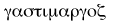
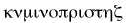
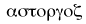

"HARD CASH," like "The Cloister and the Hearth," is a matter-of-fact Romance--that is, a fiction built on truths; and these truths have been gathered by long, severe, systematic labour, from a multitude of volumes, pamphlets, journals, reports, blue-books, manuscript narratives, letters, and living people, whom I have sought out, examined, and cross-examined, to get at the truth on each main topic I have striven to handle.
The madhouse scenes have been picked out by certain disinterested gentlemen, who keep private asylums, and periodicals to puff them; and have been met with bold denials of public facts, and with timid personalities, and a little easy cant about Sensation* Novelists; but in reality those passages have been written on the same system as the nautical, legal, and other scenes: the best evidence has been ransacked; and a large portion of this evidence I shall be happy to show at my house to any brother writer who is disinterested, and really cares enough for truth and humanity to walk or ride a mile in pursuit of them.
CHARLES READE.
6 BOLTON ROW, MAYFAIR,
December 5, 1868.
*This slang term is not quite accurate as applied to me. Without sensation there can be no interest: but my plan is to mix a little character and a little philosophy with the sensational element.
PROLOGUE
IN a snowy villa, with a sloping lawn, just outside the great commercial seaport, Barkington, there lived a few years ago a happy family. A lady, middle-aged, but still charming; two young friends of hers; and a periodical visitor.
The lady was Mrs. Dodd; her occasional visitor was her husband; her friends were her son Edward, aged twenty, and her daughter Julia, nineteen, the fruit of a misalliance.
Mrs. Dodd was originally Miss Fountain, a young lady well born, high bred, and a denizen of the fashionable world. Under a strange concurrence of circumstances she coolly married the captain of an East Indiaman. The deed done, and with her eyes open, for she was not, to say, in love with him, she took a judicious line--and kept it: no hankering after Mayfair, no talking about "Lord this" and "Lady that," to commercial gentlewomen; no amphibiousness. She accepted her place in society, reserving the right to embellish it with the graces she had gathered in a higher sphere. In her home, and in her person, she was little less elegant than a countess; yet nothing more than a merchant-captain's wife; and she reared that commander's children in a suburban villa, with the manners which adorn a palace. When they happen to be there. She had a bugbear; Slang. Could not endure the smart technicalities current; their multitude did not overpower her distaste; she called them "jargon"--"slang" was too coarse a word for her to apply to slang: she excluded many a good "racy idiom" along with the real offenders; and monosyllables in general ran some risk of' having to show their passports. If this was pedantry, it went no further; she was open, free, and youthful with her young pupils; and had the art to put herself on their level: often, when they were quite young, she would feign infantine ignorance, in order to hunt trite truth in couples with them, and detect, by joint experiment, that rainbows cannot, or else will not, be walked into, nor Jack-o'-lantern be gathered like a cowslip; and that, dissect we the vocal dog--whose hair is so like a lamb's--never so skilfully, no fragment of palpable bark, no sediment of tangible squeak, remains inside him to bless the inquisitive little operator, &c., &c. When they advanced from these elementary branches to Languages, History, Tapestry, and "What Not," she managed still to keep by their side learning with them, not just hearing them lessons down from the top of a high tower of maternity. She never checked their curiosity, but made herself share it; never gave them, as so many parents do, a white-lying answer; wooed their affections with subtle though innocent art, thawed their reserve, obtained their love, and retained their respect. Briefly, a female Chesterfield; her husband's lover after marriage, though not before; and the mild monitress the elder sister, the favourite companion and bosom friend of both her children.
They were remarkably dissimilar; and perhaps I may be allowed to preface the narrative of their adventures by a delineation; as in country churches an individual pipes the keynote, and the tune comes raging after.
Edward, then, had a great calm eye, that was always looking folk full in the face, mildly; his countenance comely and manly, but no more; too square for Apollo; but sufficed for John Bull. His figure it was that charmed the curious observer of male beauty. He was five feet ten; had square shoulders, a deep chest, masculine flank, small foot, high instep. To crown all this, a head, overflowed by ripples of dark brown hair, sat with heroic grace upon his solid white throat, like some glossy falcon new lighted on a Parian column.
This young gentleman had decided qualities, positive and negative. He could walk up to a five-barred gate and clear it, alighting on the other side like a fallen feather; could row all day, and then dance all night; could fling a cricket ball a hundred and six yards; had a lathe and a tool-box, and would make you in a trice a chair, a table, a doll, a nutcracker, or any other moveable, useful, or the very reverse. And could not learn his lessons, to save his life.
His sister Julia was not so easy to describe. Her figure was tall, lithe, and serpentine; her hair the colour of a horse-chestnut fresh from its pod; her ears tiny and shell-like, her eyelashes long and silky; her mouth small when grave, large when smiling; her eyes pure hazel by day, and tinged with a little violet by night. But in jotting down these details, true as they are, I seem to myself to be painting fire, with a little snow and saffron mixed on a marble pallet. There is a beauty too spiritual to be chained in a string of items; and Julia's fair features were but the china vessel that brimmed over with the higher loveliness of her soul. Her essential charm was, what shall I say? Transparence.
"You would have said her very body thought."
Modesty, Intelligence, and, above all, Enthusiasm, shone through her, and out of her, and made her an airy, fiery, household joy. Briefly, an incarnate sunbeam.
This one could learn her lessons with unreasonable rapidity, and until Edward went to Eton, would insist upon learning his into the bargain, partly with the fond notion of coaxing him on, as the company of a swift horse incites a slow one; partly because she was determined to share his every trouble, if she could not remove it. A little choleric, and indeed downright prone to that more generous indignation which fires at the wrongs of others. When heated with emotion, or sentiment, she lowered her voice, instead of raising it like the rest of us. She called her mother "Lady Placid," and her brother "Sir Imperturbable." And so much for outlines.
Mrs. Dodd laid aside her personal ambition with her maiden name; but she looked high for her children. Perhaps she was all the more ambitious for them, that they had no rival aspirant in Mrs. Dodd. She educated Julia herself from first to last: but with true feminine distrust of her power to mould a lordling of creation, she sent Edward to Eton, at nine. This was slackening her tortoise; for at Eton is no female master, to coax dry knowledge into a slow head. However, he made good progress in two branches--aquatics and cricket.
After Eton came the choice of a profession. His mother recognised but four; and these her discreet ambition speedily sifted down to two. For military heroes are shot now and then, however pacific the century; and naval ones drowned. She would never expose her Edward to this class of accidents. Glory by all means; glory by the pail; but safe glory, please; or she would none of it. Remained the church and the bar: and, within these reasonable limits, she left her dear boy free as air; and not even hurried--there was plenty of time to choose: he must pass through the university to either. This last essential had been settled about a twelvemonth, and the very day for his going to Oxford was at hand, when one morning Mr. Edward formally cleared his throat: it was an unusual act, and drew the ladies' eyes upon him. He followed the solemnity up by delivering calmly and ponderously a connected discourse, which astonished them by its length and purport. "Mamma, dear, let us look the thing in the face." (This was his favourite expression, as well as habit.) "I have been thinking it quietly over for the last six months. Why send me to the university? I shall be out of place there. It will cost you a lot of money, and no good. Now, you take a fool's advice; don't you waste your money and papa's, sending a dull fellow like me to Oxford. I did bad enough at Eton. Make me an engineer, or something. If you were not so fond of me, and I of you, I'd say send me to Canada, with a pickaxe; you know I have got no headpiece."
Mrs. Dodd had sat aghast, casting Edward deprecating looks at the close of each ponderous sentence, but too polite to interrupt a soul, even a son talking nonsense. She now assured him she could afford very well to send him to Oxford, and begged leave to remind him that he was too good and too sensible to run up bills there, like the young men who did not really love their parents. "Then, as for learning, why, we must be reasonable in our turn. Do the best you can, love. We know you have no great turn for the classics; we do not expect you to take high honours like young Mr. Hardie; besides, that might make your head ache: he has sad headaches, his sister told Julia. But, my dear, an university education is indispensable Do but see how the signs of it follow a gentleman through life, to say nothing of the valuable acquaintances and lasting friendships he makes there: even those few distinguished persons who have risen in the would without it, have openly regretted the want, and have sent their children: and that says volumes to me."
"Why, Edward, it is the hall-mark of a gentleman," said Julia eagerly. Mrs. Dodd caught a flash of her daughter: "And my silver shall never be without it," said she warmly. She added presently, in her usual placid tone, "I beg your pardon, my dears, I ought to have said my gold." With this she kissed Edward tenderly on the brow, and drew an embrace and a little grunt of resignation from him. "Take the dear boy and show him our purchases, love!" said Mrs. Dodd, with a little gentle accent of half reproach, scarce perceptible to a male ear.
"Oh, yes," and Julia rose and tripped to the door. There she stood a moment, half turned, with arching neck, colouring with innocent pleasure. "Come, darling. Oh, you good-for-nothing thing."
The pair found a little room hard by, paved with china, crockery, glass, baths, kettles, &c.
"There, sir. Look them in the face; and us, if you can."
"Well, you know, I had no idea you had been and bought a cart-load of things for Oxford." His eye brightened; he whipped out a two-foot rule, and began to calculate the cubic contents. "I'll turn to and make the cases, Ju."
The ladies had their way; the cases were made and despatched; and one morning the Bus came for Edward, and stopped at the gate of Albion Villa. At this sight mother and daughter both turned their heads quickly away by one independent impulse, and set a bad example. Apparently neither of them had calculated on this paltry little detail; they were game for theoretical departures; to impalpable universities: and "an air-drawn Bus, a Bus of the mind," would not have dejected for a moment their lofty Spartan souls on glory bent; safe glory. But here was a Bus of wood, and Edward going bodily away inside it. The victim kissed them, threw up his portmanteau and bag, and departed serene as Italian skies; the victors watched the pitiless Bus quite out of sight; then went up to his bedroom, all disordered by packing, and, on the very face of it, vacant; and sat down on his little bed intertwining and weeping.
Edward was received at Exeter College, as young gentlemen are received at college; and nowhere else, I hope, for the credit of Christendom. They showed him a hole in the roof, and called it an "Attic;" grim pleasantry! being a puncture in the modern Athens. They inserted him; told him what hour at the top of the morning he must be in chapel; and left him to find out his other ills. His cases were welcomed like Christians, by the whole staircase. These undergraduates abused one another's crockery as their own: the joint stock of breakables had just dwindled very low, and Mrs. Dodd's bountiful contribution was a godsend.
The new comer soon found that his views of a learned university had been narrow. Out of place in it? why, he could not have taken his wares to a better market; the modern Athens, like the ancient, cultivates muscle as well as mind. The captain of the university eleven saw a cricket-ball thrown all across the ground; he instantly sent a professional bowler to find out who that was; through the same ambassador the thrower was invited to play on club days; and proving himself an infallible catch and long-stop, a mighty thrower, a swift runner, and a steady, though not very brilliant bat, he was, after one or two repulses, actually adopted into the university eleven. He communicated this ray of glory by letter to his mother and sister with genuine delight, coldly and clumsily expressed; they replied with feigned and fluent rapture. Advancing steadily in that line of academic study towards which his genius lay, he won a hurdle race, and sent home a little silver hurdle; and soon after brought a pewter pot, with a Latin inscription recording the victory at "Fives" of Edward Dodd: but not too arrogantly; for in the centre of the pot was this device, "The Lord Is My Illumination." The Curate of Sandford, who pulled number six in the Exeter boat, left Sandford for Witney: on this he felt he could no longer do his college justice by water, and his parish by land, nor escape the charge of pluralism, preaching at Witney and rowing at Oxford. He fluctuated, sighed, kept his Witney, and laid down his oar. Then Edward was solemnly weighed in his jersey and flannel trousers, and proving only eleven stone eight, whereas he had been ungenerously suspected of twelve stone,* was elected to the vacant oar by acclamation. He was a picture in a boat; and, "Oh!!! well pulled, six!!" was a hearty ejaculation constantly hurled at him from the bank by many men of other colleges, and even by the more genial among the cads, as the Exeter glided at ease down the river, or shot up it in a race.
*There was at this time a prejudice against weight, which has yielded to experience.
He was now as much talked of in the university as any man of his college, except one. Singularly enough that one was his townsman; but no friend of his; he was much Edward's senior in standing, though not in age; and this is a barrier the junior must not step over--without direct encouragement--at Oxford. Moreover, the college was a large one, and some of "the sets" very exclusive: young Hardie was Doge of a studious clique; and careful to make it understood that he was a reading man who boated and cricketed, to avoid the fatigue of lounging; not a boatman or cricketer who strayed into Aristotle in the intervals of Perspiration.
His public running since he left Harrow was as follows: the prize poem in his fourth term; the sculls in his sixth; the Ireland scholarship in his eighth (he pulled second for it the year before); Stroke of the Exeter in his tenth; and reckoned sure of a first class to consummate his twofold career.
To this young Apollo, crowned with variegated laurel, Edward looked up from a distance. The brilliant creature never bestowed a word on him by land; and by water only such observations as the following: "Time, Six!" "Well pulled, Six!" "Very well pulled, Six!" Except, by-the-bye, one race; when he swore at him like a trooper for not being quicker at starting. The excitement of nearly being bumped by Brasenose in the first hundred yards was an excuse. However, Hardie apologised as they were dressing in the barge after the race; but the apology was so stiff, it did not pave the way to an acquaintance.
Young Hardie, rising twenty-one, thought nothing human worthy of reverence, but Intellect. Invited to dinner, on the same day, with the Emperor of Russia, and with Voltaire, and with meek St. John, he would certainly have told the coachman to put him down at Voltaire.
His quick eye detected Edward's character; but was not attracted by it: says he to one of his adherents, "What a good-natured spoon that Dodd is; Phoebus, what a name!" Edward, on the other hand, praised this brilliant in all his letters, and recorded his triumphs and such of his witty sayings as leaked through his own set, to reinvigorate mankind. This roused Julia's ire. It smouldered through three letters; but burst out when there was no letter; but Mrs. Dodd, meaning, Heaven knows, no harm, happened to say meekly, à propos of Edward, "You know, love, we cannot all be young Hardies." "No, and thank Heaven," said Julia defiantly. "Yes, mamma," she continued, in answer to Mrs. Dodd's eyebrow, which had curved; "your mild glance reads my soul; I detest that boy." Mrs. Dodd smiled: "Are you sure you know what the word 'detest' means? And what has young Mr. Hardie done, that you should bestow so violent a sentiment on him?"
"Mamma, I am Edward's sister," was the tragic reply; then, kicking off the buskin pretty nimbly, "There! he beats our boy at everything, and ours sits quietly down and admires him for it: oh! how can a man let anybody or anything beat him! I wouldn't; without a desperate struggle." She clenched her white teeth and imagined the struggle. To be sure, she owned she had never seen this Mr. Hardie; but after all it was only Jane Hardie's brother, as Edward was hers; "And would I sit down and let Jane beat me at Things? Never! never! never! I couldn't."
"Your friend to the death, dear; was not that your expression?"
"Oh, that was a slip of the tongue, dear mamma; I was off my guard. I generally am, by the way. But now I am on it, and propose an amendment. Now I second it. Now I carry it."
"And now let me hear it."
"She is my friend till death--or Eclipse; and that means until she eclipses me, of course." But she added softly, and with sudden gravity: "Ah! Jane Hardie has a fault which will always prevent her from eclipsing your humble servant in this wicked world."
"What is that?"
"She is too good. Much."
"Par exemple?"
"Too religious."
"Oh, that is another matter."
"For shame, mamma! I am glad to hear it: for I scorn a life of frivolity; but then, again, I should not like to give up everything, you know." Mrs. Dodd looked a little staggered, too, at so vast a scheme of capitulation But "everything" was soon explained to mean balls, concerts, dinner-parties in general, tea-parties without exposition of Scripture, races, and operas, cards, charades, and whatever else amuses society without perceptibly sanctifying it. All these, by Julia's account, Miss Hardie had renounced, and was now denouncing (with the young the latter verb treads on the very heels of the former). "And, you know, she is a district visitor."
This climax delivered, Julia stopped short, and awaited the result.
Mrs. Dodd heard it all with quiet disapproval and cool incredulity. She had seen so many young ladies healed of many young enthusiasms by a wedding ring. But, while she was searching diligently in her mine of ladylike English--mine with plenty of water in it, begging her pardon--for expressions to convey inoffensively, and roundabout, her conviction that Miss Hardie was a little, furious simpleton, the post came and swept the subject away in a moment.
Two letters; one from Calcutta, one from Oxford.
They came quietly in upon one salver, and were opened and read with pleasurable interest, but without surprise, or misgiving; and without the slightest foretaste of their grave amid singular consequences.
Rivers deep and broad start from such little springs.
David's letter was of unusual length for him. The main topics were, first, the date and manner of his return home. His ship, a very old one, had been condemned in port: and he was to sail a fine new teak-built vessel, the Agra, as far as the Cape; where her captain, just recovered from a severe illness, would come on board, and convey her and him to England. In future, Dodd was to command one of the Company's large steamers to Alexandria and back.
"It is rather a come-down for a sailor, to go straight ahead like a wheelbarrow in all weathers with a steam-pot and a crew of coalheavers But then I shall not be parted from my sweetheart such long dreary spells as I have been thus twenty years, my dear love: so is it for me to complain?"
The second topic was pecuniary; the transfer of their savings from India, where interest was higher than at home, but the capital not so secure.
And the third was ardent and tender expressions of affection for the wife and children he adored. These effusions of the heart had no separate place, except in my somewhat arbitrary analysis of the honest sailor's letter; they were the under current. Mrs. Dodd read part of it out to Julia; in fact all but the money matter: that concerned the heads of the family more immediately; and Cash was a topic her daughter did not understand, nor care about. And when Mrs. Dodd had read it with glistening eyes, she kissed it tenderly, and read it all over again to herself, and then put it into her bosom as naïvely as a milkmaid in love.
Edward's letter was short enough, and Mrs. Dodd allowed Julia to read it to her, which she did with panting breath, and glowing cheeks, and a running fire of comments.
"'Dear Mamma, I hope you and Ju are quite well----'"
"Ju," murmured Mrs. Dodd plaintively.
"'And that there is good news about papa coming home. As for me, I have plenty on my hands just now; all this term I have been ('training' scratched out, and another word put in: C -- R -- oh, I know) 'cramming.'"
"'Cramming,' love?"
"Yes, that is the Oxfordish for studying."
"'--For smalls.'"
Mrs. Dodd contrived to sigh interrogatively. Julia, who understood her every accent, reminded her that "smalls" was the new word for "little go."
"'--Cramming for smalls; and now I am in two races at Henley, and that rather puts the snaffie on reading and gooseberry pie' (Goodness me), 'and adds to my chance of being ploughed for smalls.'"
"What does it all mean?" inquired mamma, "'gooseberry pie'? and 'the snaffle'? and 'ploughed'?"
"Well, the gooseberry pie is really too deep for me: but 'ploughed' is the new Oxfordish for 'plucked.' O mamma, have you forgotten that? 'Plucked' was vulgar, so now they are 'ploughed.' 'For smalls; but I hope I shall not be, to vex you and Puss.'"
"Heaven forbid he should be so disgraced! But what has the cat to do with it?"
"Nothing on earth. Puss? that is me. How dare he? Did I not forbid all these nicknames and all this Oxfordish, by proclamation, last Long."
"Last Long?"
"Hem! last protracted vacation."
"'--Dear mamma, sometimes I cannot help being down in the mouth,' (why, it is a string of pearls) 'to think you have not got a son like Hardie.'" At this unfortunate reflection it was Julia's turn to suffer. She deposited the letter in her lap, and fired up. "Now, have not I cause to hate, and scorn, and despise le petit Hardie?"
"Julia!"
"I mean to dislike with propriety, and gently to abominate-- Mr. Hardie, junior."
"'--Dear mamma, do come to Henley on the tenth, you and Ju. The university eights will not be there, but the head boats of the Oxford and Cambridge river will; and the Oxford head boat is Exeter, you know; and I pull Six.'"
"Then I am truly sorry to hear it; my poor boy will overtask his strength; and how unfair of the other young gentlemen; it seems ungenerous; unreasonable; my poor child against so many."
"'--And I am entered for the sculls as well, and if you and "the Impetuosity"' (Vengeance!) 'were looking on from the bank, I do think I should be lucky this time. Henley is a long way from Barkington, but it is a pretty place; all the ladies admire it, and like to see both the universities out and a stunning race.' Oh, well, there is an epithet. One would think thunder was going to race lightning, instead of Oxford Cambridge."
"'--If you can come, please write, and I will get you nice lodgings; I will not let you go to a noisy inn. Love to Julia and no end of kisses to my pretty mamma. --From your affectionate Son,
"'EDWARD DODD.'"
They wrote off a cordial assent, and reached Henley in time to see the dullest town in Europe; and also to see it turn one of the gayest in an hour or two; so impetuously came both the universities pouring into it--in all known vehicles that could go their pace--by land and water.
IT was a bright hot day in June. Mrs. Dodd and Julia sat half reclining, with their parasols up, in an open carriage, by the brink of the Thames at one of its loveliest bends.
About a furlong up stream a silvery stone bridge, just mellowed by time, spanned the river with many fair arches. Through these the coming river peeped sparkling a long way above, then came meandering and shining down; loitered cool and sombre under the dark vaults, then glistened on again crookedly to the spot where sat its two fairest visitors that day; but at that very point flung off its serpentine habits, and shot straight away in a broad stream of scintillating water a mile long, down to an island in mid-stream: a little fairy island with old trees, and a white temple. To curl round this fairy isle the broad current parted, and both silver streams turned purple in the shade of the grove; then winded and melted from the sight.
This noble and rare passage of the silvery Thames was the Henley racecourse. The starting-place was down at the island, and the goal was up at a point in the river below the bridge, but above the bend where Mrs. Dodd and Julia sat, unruffled by the racing, and enjoying luxuriously the glorious stream, the mellow bridge crowded with carriages--whose fair occupants stretched a broad band of bright colour above the dark figures clustering on the battlements--and the green meadows opposite with the motley crowd streaming up and down.
Nor was that sense, which seems especially keen and delicate in women, left unregaled in the general bounty of the time. The green meadows on the opposite bank, and the gardens at the back of our fair friends, flung their sweet fresh odours at their liquid benefactor gliding by; and the sun himself seemed to burn perfumes, and the air to scatter them, over the motley merry crowd, that bright, hot, smiling, airy day in June.
Thus tuned to gentle enjoyment, the fair mother and her lovely daughter leaned back in a delicious languor proper to their sex, and eyed with unflagging though demure interest, and furtive curiosity, the wealth of youth, beauty, stature, agility, gaiety, and good temper, the two great universities had poured out upon those obscure banks; all dressed in neat but easy-fitting clothes, cut in the height of' the fashion; or else in jerseys white or striped, and flannel trousers, and straw hats, or cloth caps of bright and various hues; betting, strolling, laughing, chaffing, larking, and whirling stunted bludgeons at Aunt Sally.
But as for the sport itself they were there to see, the center of all these bright accessories, "The Racing," my ladies did not understand it, nor try, nor care a hook-and-eye about it. But this mild dignified indifference to the main event received a shock at 2 p.m.: for then the first heat for the cup came on, and Edward was in it. So then Racing became all in a moment a most interesting pastime--an appendage to Loving. He left to join his crew. And, soon after, the Exeter glided down the river before their eyes, with the beloved one rowing quietly in it: his jersey revealed not only the working power of his arms, as sunburnt below the elbow as a gipsy's, and as corded above as a blacksmith's, but also the play of the great muscles across his broad and deeply indented chest: his oar entered the water smoothly, gripped it severely, then came out clean, and feathered clear and tunably on the ringing rowlock: the boat jumped and then glided, at each neat, easy, powerful stroke. "Oh, how beautiful and strong he is!" cried Julia. "I had no idea."
Presently the competitor for this heat came down: the Cambridge boat, rowed by a fine crew in broad-striped jerseys. "Oh, dear," said Julia, "they are odious and strong in this boat too. I wish I was in it--with a gimlet; he should win, poor boy."
Which corkscrew staircase to Honour being inaccessible, the race had to be decided by two unfeminine trifles called "Speed" and "Bottom."
Few things in this vale of tears are more worthy a pen of fire than an English boat-race is, as seen by the runners; of whom I have often been one. But this race I am bound to indicate, not describe; I mean, to show how it appeared to two ladies seated on the Henley side of the Thames, nearly opposite the winning-post. These fair novices then looked all down the river, and could just discern two whitish streaks on the water, one on each side the little fairy isle, and a great black patch on the Berkshire bank. The threatening streaks were the two racing boats: the black patch was about a hundred Cambridge and Oxford men, ready to run and hallo with the boats all the way, or at least till the last puff of wind should be run plus halloed out of their young bodies. Others less fleet and enduring, but equally clamorous, stood in knots at various distances, ripe for a shorter yell and run when the boats should come up to them. Of the natives and country visitors, those who were not nailed down by bounteous Fate ebbed and flowed up and down the bank, with no settled idea but of getting in the way as much as possible, and of getting knocked into the Thames as little as might be.
There was a long uneasy suspense.
At last a puff of smoke issued from a pistol down at the island; two oars seemed to splash into the water from each white streak; and the black patch was moving; so were the threatening streaks. Presently was heard a faint, continuous, distant murmur, and the streaks began to get larger, and larger, and larger; and the eight splashing oars looked four instead of two.
Every head was now turned down the river. Groups hung craning over it like nodding bulrushes.
Next the runners were swelled by the stragglers they picked up; so were their voices; and on came the splashing oars and roaring lungs.
Now the colours of the racing jerseys peeped distinct. The oarsmen's heads and bodies came swinging back like one, and the oars seemed to lash the water savagely, like a connected row of swords, and the spray squirted at each vicious stroke. The boats leaped and darted side by side, and, looking at them in front, Julia could not say which was ahead. On they came nearer and nearer, with hundreds of voices vociferating "Go it, Cambridge!" "Well pulled, Oxford!" "You are gaining, hurrah!" "Well pulled Trinity!" "Hurrah!" "Oxford!" "Cambridge!" "Now is your time, Hardie; pick her up!" "Oh, well pulled, Six!" "Well pulled, Stroke!" "Up, up! lift her a bit!" "Cambridge!" "Oxford!" "Hurrah!"
At this Julia turned red and pale by turns. "O mamma!" said she, clasping her hands and colouring high, "would it be very wrong if I was to pray for Oxford to win?"
Mrs. Dodd had a monitory finger; it was on her left hand; she raised it; and that moment, as if she had given a signal, the boats, fore-shortened no longer, shot out to treble the length they had looked hitherto, and came broadside past our palpitating fair, the elastic rowers stretched like greyhounds in a chase, darting forward at each stroke so boldly they seemed flying out of the boats, and surging back as superbly, an eightfold human wave: their nostrils all open, the lips of some pale and glutinous their white teeth all clenched grimly, their young eyes all glowing, their supple bodies swelling, the muscles writhing beneath their jerseys, and the sinews starting on each bare brown arm; their little shrill coxswains shouting imperiously at the young giants, and working to and fro with them, like jockeys at a finish; nine souls and bodies flung whole into each magnificent effort; water foaming and flying, rowlocks ringing, crowd running, tumbling, and howling like mad; and Cambridge a boat's nose ahead.
They had scarcely passed our two spectators, when Oxford put on a furious spurt, and got fully even with the leading boat. There was a louder roar than ever from the bank. Cambridge spurted desperately in turn, and stole those few feet back; and so they went fighting every inch of water. Bang! A cannon on the bank sent its smoke over both competitors; it dispersed in a moment, and the boats were seen pulling slowly towards the bridge--Cambridge with four oars, Oxford with six, as if that gum had winged them both.
The race was over.
But who had won our party could not see, and must wait to learn.
A youth, adorned with a blue and yellow rosette, cried out, in the hearing of Mrs. Dodd, "I say, they are properly pumped, both crews are:" then, jumping on to a spoke of her carriage-wheel, with a slight apology, he announced that two or three were shut up in the Exeter.
The exact meaning of these two verbs passive was not clear to Mrs. Dodd; but their intensity was. She fluttered, and wanted to go to her boy and nurse him, and turned two most imploring eyes on Julia, and Julia straightway kissed her with gentle vehemence, and offered to ruin and see.
"What, amongst all those young gentlemen, love? I fear that would not be proper. See, all the ladies remain apart." So they kept quiet and miserable, after the manner of females.
Meantime the Cantab's quick eye had not deceived him; in each racing boat were two young gentlemen leaning collapsed over their oars; and two more, who were in a cloud, and not at all clear whether they were in this world still, or in their zeal had pulled into a better. But their malady was not a rare one in racing boats, and the remedy always at hand: it combined the rival systems; Thames was sprinkled in their faces-- Homoeopathy: and brandy in a teaspoon trickled down their throats--Allopathy: youth and spirits soon did the rest; and, the moment their eyes opened, their mouths opened; and, the moment their mouths opened, they fell a chaffing.
Mrs. Dodd's anxiety and Julia's were relieved by the appearance of Mr. Edward, in a tweed shooting-jacket sauntering down to them, hands in his pockets, and a cigar in his mouth, placidly unconscious of their solicitude on his account. He was received with a little guttural cry of delight; the misery they had been in about him was duly concealed from him by both, and Julia asked him warmly who had won.
"Oh, Cambridge."
"Cambridge! Why, then you are beaten?"
"Rather." (Puff.)
"And you can come here with that horrible calm, and cigar, owning defeat, and puffing tranquillity, with the same mouth. Mamma, we are beaten. Beaten! actually."
"Never mind," said Edward kindly; "you have seen a capital race, the closest ever known on this river; and one side or other must lose."
"And if they did not quite win, they very nearly did," observed Mrs. Dodd composedly; then, with heartfelt content, "He is not hurt, and that is the main thing."
"Well, my Lady Placid, and Mr. Imperturbable, I am glad neither of your equanimities is disturbed; but defeat is a Bitter Pill to me."
Julia said this in her earnest voice, and drawing her scarf suddenly round her, so as almost to make it speak, digested her Bitter Pill in silence. During which process several Exeter men caught sight of Edward, and came round him, and an animated discussion took place. They began with asking him how it had happened, and, as he never spoke in a hurry, supplied him with the answers. A stretcher had broken in the Exeter? No, but the Cambridge was a much better built boat, and her bottom cleaner. The bow oar of the Exeter was ill, and not fit for work. Each of these solutions was advanced and combated in turn, and then all together. At last the Babel lulled, and Edward was once more appealed to.
"Well, I will tell you the real truth," said he, "how it happened." (Puff.)
There was a pause of expectation, for the young man's tone was that of conviction, knowledge, and authority.
"The Cambridge men pulled faster than we did." (Puff.)
The hearers stared and then laughed.
"Come, old fellows," said Edward, "never win a boat-race on dry land! That is such a plain thing to do; gives the other side the laugh as well as the race. I have heard a stretcher or two told, but I saw none broken. (Puff.) Their boat is the worst I ever saw; it dips every stroke. (Puff.) Their strength lies in the crew. It was a good race and a fair one. Cambridge got a lead and kept it. (Puff.) They beat us a yard or two at rowing; but hang it all, don't let them beat us at telling the truth, not by an inch." (Puff.)
"All right, old fellow!" was now the cry. One observed, however, that Stroke did not take the matter so coolly as Six; for he had shed a tear getting out of the boat.
"Shed a fiddlestick!" squeaked a little sceptic.
"No" said another, "he didn't quite shed it; his pride wouldn't let him."
"So he decanted it, and put it by for supper, suggested Edward, and puffed.
"None of your chaff, Six. He had a gulp or two, and swallowed the rest by main force."
"Don't you talk: you can swallow anything, it seems." (Puff.)
"Well, I believe it," said one of Hardie's own set. "Dodd doesn't know him as we do. Taff Hardie can't bear to be beat."
When they were gone, Mrs. Dodd observed, "Dear me! what if the young gentleman did cry a little, it was very excusable; after such great exertions it was disappointing, mortifying. I pity him for one, and wish he had his mother alive and here, to dry them."*
*Oh where, and oh where, was her Lindley Murray gone?
"Mamma, it is you for reading us," cried Edward, slapping his thigh. "Well, then, since you can feel for a fellow, Hardie was a good deal cut up. You know the university was in a manner beaten, and he took the blame. He never cried; that was a cracker of those fellows. But he did give one great sob, that was all, and hung his head on one side a moment. But then he fought out of it directly, like a man; and there was an end of it, or ought to have been. Hang chatterboxes!"
"And what did you say to console him, Edward?" inquired Julia warmly.
"What--me? Console my senior, and my Stroke? No, thank you."
At this thunderbolt of etiquette both ladies kept their countenances this was their muscular feat that day--and the racing for the sculls came on: six competitors, two Cambridge, three Oxford, one London. The three heats furnished but one good race, a sharp contest between a Cambridge man and Hardie, ending in favour of the latter; the Londoner walked away from his opponent Sir Imperturbable's competitor was impetuous, and ran into him in the first hundred yards; Sir I. consenting calmly. The umpire, appealed to on the spot, decided that it was a foul, Mr. Dodd being in his own water. He walked over the course, and explained the matter to his sister, who delivered her mind thus--
"Oh! if races are to be won by going slower than the other, we may shine yet: only, I call it Cheating, not Racing."
He smiled unmoved; she gave her scarf the irony twist, and they all went to dinner. The business recommenced with a race between a London boat and the winner' of yesterday's heat, Cambridge. Here the truth of Edward's remark appeared. The Cambridge boat was too light for the men, and kept burying her hose; the London craft, under a heavy crew, floated like a cork. The Londoners soon found out their advantage, and, overrating it, steered into their opponents water prematurely, inn spite of a warning voice from the bank. Cambridge saw, and cracked on for a foul; and for about a minute it was anybody's race. But the Londoners pulled gallantly, and just scraped clear ahead. This peril escaped, they kept their backs straight and a clear lead to the finish. Cambridge followed a few feet in their wake, pulling wonderfully fast to the end, but a trifle out of form, and much distressed.
At this both universities looked blue, their humble aspiration being, first to beat off all the external world, and then tackle each other for the prize.
Just before Edward left his friends for "the sculls," the final heat, a note was brought to him. He ran his eye over it, and threw it open into his sister's lap. The ladies read it. Its writer had won a prize poem, and so now is our time to get a hint for composition:
"DEAR SIR,--Oxford must win something. Suppose we go in for these sculls. You are a horse that can stay; Silcock is hot for the lead at starting, I hear; so I mean to work him out of wind; then you can wait on us, and pick up the race. My head is not well enough to-day to win, but I am good to pump the Cockney; he is quick, but a little stale--Yours truly,
"ALFRED HARDIE"
Mrs. Dodd remarked that the language was sadly figurative; but she hoped Edward might be successful in spite of his correspondent's style.
Julia said she did not dare hope it. "The race is not always to the slowest and the dearest." This was in allusion to yesterday's "foul."
The skiffs started down at the island, and, as they were longer coming up than the eight oars, she was in a fever for nearly ten minutes. At last, near the opposite bank, up came the two leading skiffs struggling, both men visibly exhausted--Silcock ahead, but his rudder overlapped by Hardie's bow; each in his own water.
"We are third," sighed Julia, and turned her head away from the river sorrowfully. But only for a moment, for she felt Mrs. Dodd start and press her arm; and lo! Edward's skiff was shooting swiftly across from their side of the river. He was pulling Just within himself, in beautiful forum, and with far more elasticity than the other two had got left. As line passed his mother and sister, his eyes seemed to strike fire, and he laid out all his powers, and went at the leading skiffs hand over head There was a yell of astonishment and delight from both sides of the Thames. He passed Hardie, who upon that relaxed his speed. In thirty seconds more he was even with Silcock. Then came a keen struggle: but the new comer was "the horse that could stay:" he drew steadily ahead, and the stern of his boat was in a line with Silcock's person when the gun fired; and a fearful roar from the bridge, the river, and the banks, announced that the favourite university had picked up the sculls in the person of Dodd of Exeter.
In due course he brought the little silver sculls, and pinned them on his mother.
While she and Julia were telling him how proud they were, and how happy they should be, but for their fears that he would hurt himself, beating gentlemen ever so much older than himself, came two Exeter men with wild looks hunting for him.
"Oh, Dodd! Hardie wants you directly."
"Don't you go, Edward," whispered Julia; "why should you be at Mr. Hardie's beck and call? I never heard of such a thing. That youth will make me hate him."
"Oh, I think I had better just go and see what it is about," replied Edward: "I shall be back directly." And on this understanding he went off with the men.
Half-an-hour passed; an hour; two hours, and he did not return. Mrs. Dodd and Julia sat wondering what had become of him, and were looking all around, and getting uneasy, when at last they did hear something about him, but indirectly, and from an unexpected quarter. A tall young man in a jersey and flannel trousers, and a little straw hat, with a purple rosette, came away from the bustle to the more secluded part where they sat, and made eagerly for the Thames as if he was a duck, and going in. But at the brink line flung himself into a sitting posture, and dipped his white handkerchief into the stream, then tied it viciously round his brow, doubled himself up with his head in his hands, and rocked himself hike an old woman--minus the patience, of course.
Mrs. Dodd and Julia, sitting but a few paces behind him, interchanged a look of intelligence. The young gentleman was a stranger; but they had recognised a faithful old acquaintance at the bottom of his pantomime. They discovered, too, that the afflicted one was a personage: for line had not sat there long when quite a little band of men came after him. Observing his semi-circularity and general condition, they hesitated a moment; and then one of them remonstrated eagerly: "For Heaven's sake come back to the boat! There is a crowd of all the colleges come round us; and they all say Oxford is being sold. We had a chance for the four-oared race, and you are throwing it away."
"What do I care what they all say?" was the answer, delivered with a kind of plaintive snarl.
"But we care."
"Care then! I pity you." And he turned his back fiercely on them, and then groaned by way of half apology. Another tried him: "Come, give us a civil answer, please."
"People that intrude upon a man's privacy, racked with pain, have no right to demand civility," replied the sufferer, more gently, but sullenly enough.
"Do you call this privacy?"
"It was, a minute ago, Do you think I left the boat, and came here among the natives, for company? and noise? With my head splitting?"
Here Julia gave Mrs. Dodd a soft pinch, to which Mrs. Dodd replied by a smile. And so they settled who this petulant young invalid must be.
"'There, it is no use," observed one, sotto voce, "the bloke really has awful headaches, like a girl, and then he always shuts up this way. You will only rile him, and get the rough side of his tongue."
Here, then, the conference drew towards a close. But a Wadham man, who was one of the ambassadors, interposed. "Stop a minute," said he. "Mr. Hardie, I have not the honour to be acquainted with you, and I am not here to annoy you, nor to be affronted by you. But the university has a stake in this race, and the university expostulates through us--through me, if you like."
"Who have I the honour?" inquired Hardie, assuming politeness sudden and vast.
"Badham, of Wadham."
"Badham o' Wadham? Hear that, ye tuneful nine! Well, Badham o' Wadham, you are no acquaintance of mine; so you may possibly not be a fool. Let us assume by way of hypothesis that you are a man of sense, a man of reason as well as of rhyme. Then follow my logic. Hardie of Exeter is a good man in a boat when he has not got a headache.
"When he has got a headache, Hardie of Exeter is not worth a straw in a boat.
"Hardie of Exeter has a headache now.
"Ergo, the university would put the said Hardie into a race, headache and all, and reduce defeat to a certainty.
"And, ergo, on the same premises, I, not being an egotist, nor an ass, have taken Hardie of Exeter and his headache out of the boat, as I should have done any other cripple.
"Secondly, I have put the best man on the river into this cripple's place.
"Total, I have given the university the benefit of my brains; and the university, not having brains enough to see what it gains by the exchange, turns again and rends me, like an animal frequently mentioned in Scripture; but, nota bene, never once with approbation."
And the afflicted Rhetorician attempted a diabolical grin, but failed signally; and groaned instead.
"Is this your answer to the university, sir?"
At this query, delivered in a somewhat threatening tone, the invalid sat up all in a moment, like a poked lion. "Oh, if Badham o' Wadham thinks to crush me auctoritate sua et totius universitatis, Badham o' Wadham may just tell the whole university to go and be d----d, from the Chancellor down to the junior cook at Skimmery Hall, with my compliments."
"Ill-conditioned brute!" muttered Badham of Wadham. "Serve you right if the university were to chuck you into the Thames." And with this comment they left him to his ill temper. One remained; sat quietly down a little way off, struck a sweetly aromatic lucifer, and blew a noisome cloud; but the only one which betokens calm.
As for Hardie, he held his aching head over his knees, absorbed in pain, and quite unconscious that sacred pity was poisoning the air beside him, and two pair of dovelike eyes resting on him with womanly concern.
Mrs. Dodd and Julia had heard the greatest part of this colloquy. They had terribly quick ears and nothing better to do with them just then. Indeed, their interest was excited.
Julia went so far as to put her salts into Mrs. Dodd's hand with a little earnest look. But Mrs. Dodd did not act upon the hint. She had learned who the young man was: had his very name been strange to her, she would have been more at her ease with him. Moreover, his rudeness to the other men repelled her a little. Above all, he had uttered a monosyllable and a stinger: a thorn of speech not in her vocabulary, nor even in society's. Those might be his manners, even when not aching. Still, it seems, a feather would have turned the scale in his favour, for she whispered, "I have a great mind; if I could but catch his eye."
While feminine pity and social reserve were holding the balance so nicely, and nonsensically, about half a split straw, one of the racing four-oars went down close under the Berkshire bank. "London!" observed Hardie's adherent.
"What, are you there, old fellow?" murmured Hardie, in a faint voice. "Now, that is like a friend, a real friend, to sit by me, and not make a row. Thank you! thank you!"
Presently the Cambridge four-oar passed: it was speedily followed by the Oxford; the last came down in mid-stream, and Hardie eyed it keenly as it passed. "There," he cried, "was I wrong? There is a swing for you; there is a stroke. I did not know what a treasure I had got sitting behind me."
The ladies looked, and lo! the lauded Stroke of the four-oar was their Edward.
"Sing out and tell him it is not like the sculls. We must fight for the lead at starting, and hold it with his eyelids when he has got it."
The adherent bawled this at Edward, and Edward's reply came ringing back in a clear, cheerful voice, "We mean to try all we know."
"What is the odds?" inquired the invalid faintly.
"Even on London; two to one against Cambridge; three to one against us."
"Take all my tin and lay it on," sighed the sufferer.
"Fork it out, then. Hallo! eighteen pounds? Fancy having eighteen pounds at the end of term. I'll get the odds up at the bridge directly. Here's a lady offering you her smelling-bottle."
Hardie rose and turned round, and sure enough there were two ladies seated in their carriage at some distance, one of whom was holding him out three pretty little things enough, a little smile, a little blush, and a little cut-glass bottle with a gold cork. The last panegyric on Edward had turned the scale.
Hardie went slowly up to the side of the carriage, and took off his hat to them with a half-bewildered air. Now that he was so near, his face showed very pale; the more so that his neck was a good deal tanned; his eyelids were rather swollen, and his young eyes troubled and almost filmy with the pain. The ladies saw, and their gentle bosoms were touched: they had heard of him as a victorious young Apollo trampling on all difficulties of mind and body; and they saw him wan, and worn, with feminine suffering: the contrast made him doubly interesting.
Arrived at the side of the carriage, he almost started at Julia's beauty. It was sun-like, and so were her two lovely earnest eyes, beaming soft pity on him with an eloquence he had never seen in human eyes before; for Julia's were mirrors of herself; they did nothing by halves.
He looked at her and her mother, and blushed, and stood irresolute, awaiting their commands. This sudden contrast to his petulance with his own sex paved the way. "You have a sad headache, sir," said Mrs. Dodd; "oblige me by trying my salts."
He thanked her in a low voice.
"And, mamma," inquired Julia, "ought he to sit in the sun?"
"Certainly not. You had better sit there, sir, and profit by our shade and our parasols."
"Yes, mamma, but you know the real place where he ought to be is Bed."
"Oh, pray don't say that," implored the patient.
But Julia continued, with unabated severity, "And that is where he would go this minute, if I was his mamma."
"Instead of his junior, and a stranger," said Mrs. Dodd, somewhat coldly, dwelling with a very slight monitory emphasis on the "stranger."
Julia said nothing, but drew in perceptibly, and was dead silent ever after.
"Oh, madam!" said Hardie eagerly, "I do not dispute her authority, nor yours. You have a right to send me where you please, after your kindness in noticing my infernal head, and doing me the honour to speak to me, and lending me this. But if I go to bed, my head will be my master. Besides, I shall throw away what little chance I have of making your acquaintance; and the race just coming off!"
"We will not usurp authority, sir," said Mrs. Dodd quietly; "but we know what a severe headache is, and should be glad to see you sit still in the shade, and excite yourself as little as possible."
"Yes, madam," said the youth humbly, and sat down like a lamb. He glanced now and then at the island, and now and then peered up at the radiant young mute beside him.
The silence continued till it was broken by--a fish out of water. An undergraduate in spectacles came mooning along, all out of his element. It was Mr. Kennet, who used to rise at four every morning to his Plato, and walk up Shotover Hill every afternoon, wet or dry, to cool his eyes for his evening work. With what view he deviated to Henley has not yet been ascertained. He was blind as a bat, and did not care a button about any earthly boat-race, except the one in the Æneid, even if he could have seen one. However, nearly all the men of his college went to Henley, and perhaps some branch, hitherto unexplored, of animal magnetism drew him after. At any rate, there was his body; and his mind at Oxford and Athens, and other venerable but irrelevant cities. He brightened at sight of his doge, and asked him warmly if he had heard the news.
"No: what? Nothing wrong, I hope?"
"Why, two of our men are ploughed; that is all," said Kennet, affecting with withering irony to undervalue his intelligence.
"Confound it, Kennet, how you frightened me! I was afraid there was some screw loose with the crew."
At this very instant, the smoke of the pistol was seen to puff out from the island, and Hardie rose to his feet. "They are off!" cried he to the ladies, and after first putting his palms together with a hypocritical look of apology, he laid one hand on an old barge that was drawn up ashore, and sprang like a mountain goat on to the bow, lighting on the very gunwale. The position was not tenable an instant, but he extended one foot very nimbly and boldly, and planted it on the other gunwale; and there he was in a moment, headache and all, in an attitude as large and inspired as the boldest gesture antiquity has committed to marble--he had even the advantage in stature over most of the sculptured forms of Greece. But a double opera-glass at his eye "spoiled the lot," as Mr. Punch says.
I am not to repeat the particulars of a distant race coming nearer and nearer. The main features are always the same; only this time it was more exciting to our fair friends, on account of Edward's high stake in it. And then their grateful though refractory patient, an authority in their eyes, indeed all but a river-god, stood poised in air, and in excited whispers interpreted each distant and unintelligible feature down to them:
"Cambridge was off quickest."
"But not much."
"Anybody's race at present, madam."
"If this lasts long we may win. None of them can stay like us."
"Come, the favourite is not so very dangerous."
"Cambridge looks best."
"I wouldn't change with either, so far."
"Now, in forty seconds more, I shall be able to pick out the winner."
Julia went up this ladder of thrills to a high state of excitement; and, indeed, they were all so tuned to racing pitch, that some metal nerve or other seemed to jar inside all three, when the piercing, grating voice of Kennet broke in suddenly with--
"How do you construe ?"
The wretch had burrowed in the intellectual ruins of Greece the moment the pistol went off, and college chat ceased. Hardie raised his opera-glass, and his first impulse was to brain the judicious Kennet, gazing up to him for an answer, with spectacles goggling like supernatural eyes of dead sophists in the sun.
"How do you construe 'Hoc age'? you incongruous dog. Hold your tongue, and mind the race."
"There, I thought so. Where's your three to one, now? The Cockneys are out of this event, any way. Go on, Universities, and order their suppers!"
"But which is first, sir?" asked Julia imploringly. "Oh, which is first of all?"
"Neither. Never mind; it looks well. London is pumped; and if Cambridge can't lead him before this turn in the river, the race will be ours. Now, look out! By Jove, we are ahead!"
The leading boats came on, Oxford pulling a long, lofty, sturdy stroke, that seemed as if it never could compete with the quick action of its competitor. Yet it was undeniably ahead, and gaining at every swing.
Young Hardie writhed on his perch. He screeched at them across the Thames, "Well pulled, Stroke! Well pulled all! Splendidly pulled, Dodd! You are walking away from them altogether. Hurrah, Oxford for ever, hurrah!" The gun went off over the heads of the Oxford crew in advance, and even Mrs. Dodd and Julia could see the race was theirs.
"We have won at last," cried Julia, all on fire, "and fairly; only think of that!"
Hardie turned round, grateful to beauty for siding with his university. "Yes, and the fools may thank me; or rather my man, Dodd. Dodd for ever! Hurrah!"
At this climax even Mrs. Dodd took a gentle share in the youthful enthusiasm that was boiling around her, and her soft eyes sparkled, and she returned the fervid pressure of her daughter's hand; and both their faces were flushed with gratified pride and affection.
"Dodd!" broke in "the incongruous dog," with a voice just like a saw's. "Dodd? Ah, that's the man who is just ploughed for smalls."
Ice has its thunderbolts.
WINNING boat-races was all very fine; but a hundred such victories could not compensate Mr. Kennet's female hearers for one such defeat as he had announced--a defeat that, to their minds, carried disgrace. Their Edward plucked! At first they were benumbed, and sat chilled, with red cheeks, bewildered between present triumph and mortification at hand. Then the colour ebbed out of their faces, and they encouraged each other feebly in whispers, "Might it not be a mistake?"
But unconscious Kennet robbed them of this timid hope. He was now in his element, knew all about it, rushed into details, and sawed away all doubt from their minds. The sum was this. Dodd's general performance was mediocre, but passable; he was plucked for his Logic. Hardie said he was very sorry for it. "What does it matter?" answered Kennet; "he is a boating-man.
"Well, and I am a boating-man. Why, you told me yourself, the other day, poor Dodd was anxious about it on account of his friends. And, by-the-bye, that reminds me they say he has got two pretty sisters here."
Says Kennet briskly, "I'll go and tell him; I know him just to speak to."
"What! doesn't he know?"
"How can he know ?" said Kennet jealously; "the testamumrs were only just out as I came away." And within this line started on his congenial errand.
Hardie took two or three of his long strides, and fairly collared him. "You will do nothing of the kind."
"What, not tell a man when he's ploughed? That is a good joke."
"No. There's time enough. Tell him after chapel to-morrow, or in chapel if you must; but why poison his triumphal cup? And his sisters, too, why spoil their pleasure? Hang it all, not a word about 'ploughing' to any living soul to-day."
To his surprise, Kennet's face expressed no sympathy, nor even bare assent. At this Hardie lost patience, and burst out impetuously, "Take care how you refuse me; take care how you thwart me in this. He is the best-natured fellow in college. It doesn't matter to you, and it does to him; and if you do, then take my name off the list of your acquaintance, for I'll never speak a word to you again in this world; no, not on my death-bed, by Heaven!"
The threat was extravagant; but Youth's glowing cheek and eye, and imperious lip, and simple generosity, made it almost beautiful.
Kennet whined, "Oh, if you talk like that, there is an end to fair argument."
"End it then, and promise me; upon your honour!"
"Why not? What bosh! There, I promise. Now, how do you construe ?"
The incongruous dog ("I thank thee, Taff, for teaching me that word") put this query with the severity of an inquisitor bringing back a garrulous prisoner to the point. Hardie replied gaily, "Any way you like, now you are a good fellow again."
"Come, that is evasive. My tutor says it cannot be rendered by any one English word; no more can ."
"Why, what on earth can he know about English? is a Cormorant: is a Skinflint; and your tutor is a Duffer. Hush! keep dark now! here he comes." And he went hastily to meet Edward Dodd: and by that means intercepted him on his way to the carriage. "Give me your hand, Dodd," he cried; "you have saved the university. You must be stroke of the eight-oar after me. Let me see more of you than I have, old fellow."
"Within all my heart," replied Edward calmly, but taking the offered hand cordially; though he rather wanted to get away to his mother and sister. "We will pull together, and read together into the bargain," continued Hardie.
"Read together? You and I? What do you mean?"
"Well, you see I am pretty well up in the Imigliner books; what I have got to rub up is my Divinity and my Logic--especially my Logic. Will you grind Logic with me? Say 'Yes,' for I know you will keep your word."
"It is too good an offer to refuse, Hardie; but now I look at you, you are excited: wonderfully excited: within the race, eh? Now, just--you--wait--quietly--till next week, and then, if you are so soft as to ask me in cool blood----"
"Wait a week?" cried the impetuous youth. "No, not a minute. It is settled. There, we cram Logic together next term."
And he shook Edward's hand again with glistening eyes and an emotion that was quite unintelligible to Edward; but not to the quick, sensitive spirits, who sat but fifteen yards off.
"You really must excuse me just now," said Edward, and ran to the carriage, and put out both hands to the fair occupants. They kissed him eagerly, with little tender sighs; and it cost them no slight effort not to cry publicly over "the beloved," "the victorious," "the ploughed."
Young Hardie stood petrified. What? These ladies Dodd's sisters. Why, one of them had called the other mamma. Good heavens! all his talk in their hearing had been of Dodd; and Kennet and he between them had let out the very thing he wanted to conceal, especially from Dodd's relations. He gazed at them, and turned hot to the very forehead. Then, not knowing what to do or say, and being after all but a clever boy, not a cool, "never unready" man of the world, he slipped away, blushing. Kennet followed, goggling.
Left to herself, Mrs. Dodd would have broken the bad news to Edward at once, and taken the line of consoling him under her own vexation: it would not have been the first time that she had played that card. But young Mr. Hardie had said it would be unkind to poison Edward's day: and it is sweet woman's nature to follow suit; so she and Julia put bright faces on, and Edward passed a right jocund afternoon with them. He was not allowed to surprise one of the looks they interchanged to relieve their secret mortification. But, after dinner, as the time drew near for him to go back to Oxford, Mrs. Dodd became silent, and a little distraite; and at last drew her chair away to a small table, and wrote a letter.
In directing it she turned it purposely, so that Julia could catch the address: "Edward Dodd, Esq., Exeter College, Oxford."
Julia was naturally startled at first, and her eye roved almost comically to and fro the letter and its Destination, seated calm and unconscious of woman's beneficent wiles. But her heart soon divined the mystery: it was to reach him the first thing in the morning, and spare him the pain of writing the news to them; and, doubtless, so worded as not to leave him a day in doubt of their forgiveness and sympathy.
Julia took the missive unobserved by the Destination, and glided out of the room to get it quietly posted.
The servant-girl was waiting on the second-floor lodgers, and told her so, with a significant addition, viz., that the post was in this street, and only a few doors off. Julia was a little surprised at her coolness, but took the hint with perfect good temper, and just put on her shawl and bonnet, and went with it herself. The post-office was not quite so near as represented; but she was soon there, for she was eager till she had posted it. But she came back slowly and thoughtfully; here in the street, lighted only by the moon, and an occasional gaslight, there was no need for self-restraint, and soon her mortification betrayed itself in her speaking countenance. And to think that her mother, on whom she doted, should have to write to her son, there present, and post the letter! This made her eyes fill, and before she reached the door of the lodging, they were brimming over.
As shine put her foot on the step, a timid voice addressed her in a low tone of supplication. "May I venture to speak one word to you, Miss Dodd?--one single word?"
She looked up surprised; and it was young Mr. Hardie.
His tall figure was bending towards her submissively, and his face, as well as his utterance, betrayed considerable agitation.
And what led to so unusual a rencontre between a young gentleman and lady who had never been introduced?
"The Tender Passion," says a reader of many novels.
Why, yes; the tenderest in all our nature:
Wounded Vanity.
Naturally proud and sensitive, and inflated by success and flattery, Alfred Hardie had been torturing himself ever since he fled Edward's female relations. He was mortified to the core. He confounded "the fools" (his favourite synonym for his acquaintance) for going and calling Dodd's mother an elder sister, and so not giving him a chance to divine her. And then that he, who prided himself on his discrimination, should take them for ladies of rank, or, at all events, of the highest fashion and, climax of humiliation, that so great a man as he should go and seem to court them by praising Dodd of Exeter, by enlarging upon Dodd of Exeter, by offering to grind Logic with Dodd of Exeter. Who would believe that this was a coincidence, a mere coincidence? They could not be expected to believe it; female vanity would not let them. He tingled, and was not far from hating the whole family; so bitter a thing is that which I have ventured to dub "The Tenderest Passion." He itched to soothe his irritation by explaining to Edward. Dodd was a frank, good-hearted fellow; he would listen to facts, and convince the ladies in turn. Hardie learned where Dodd's party lodged, and waited about the door to catch him alone: Dodd must be in college by twelve, and would leave Henley before ten. He waited till he was tired of waiting. But at last the door opened; he stepped forward, and out tripped Miss Dodd. "Confound it!" muttered Hardie, and drew back. However, he stood and admired her graceful figure and action, her ladylike speed without bustling. Had she come back at the same pace, he would never have ventured to stop her: on such a thread do things hang: but she returned very slowly, hanging her head. Her look at him and his headache recurred to him--a look brimful of goodness. She would do as well as Edward, better perhaps. He yielded to impulse, and addressed her, but with all the trepidation of a youth defying the giant Etiquette for the first time in his life.
Julia was a little surprised and fluttered, but did not betray it; she had been taught self-command by example, if not by precept.
"Certainly, Mr. Hardie," said she, within a modest composure a young coquette might have envied under the circumstances.
Hardie had now only to explain himself; but instead of that, he stood looking at her within silent concern. The fair face she raised to him was wet with tears; so were her eyes, and even the glorious eyelashes were fringed with that tender spray; and it glistened in the moonlight.
This sad and pretty sight drove the vain but generous youth's calamity clean out of his head. "Why, you are crying! Miss Dodd, what is the matter? I hope nothing has happened."
Julia turned her head away a little fretfully, with a "No, no!" But soon her natural candour and simplicity prevailed; a simplicity not without dignity; she turned round to him and looked him in the face. "Why should I deny it to you, sir, who have been good enough to sympathise with us? We are mortified, sadly mortified, at dear Edward's disgrace; and it has cost us a struggle not to disobey you, and poison his triumphal cup within sad looks. And mamma had to write to him, and console him against to-morrow: but I hope he will not feel it so severely as she does: and I have just posted it myself, and, when I thought of our dear mamma being driven to such expedients, I--Oh!" And the pure young heart, having opened itself by words, must flow a little more.
"Oh, pray don't cry," said young Hardie tenderly; "don't take such a trifle to heart so. You crying makes me feel guilty for letting it happen. It shall never occur again. If I had only known, it should never have happened at all."
"Once is enough," sighed Julia.
"Indeed, you take it too much to heart. It is only out of Oxford a plough is thought much of; especially a single one; that is so very common. You see, Miss Dodd, an university examination consists of several items: neglect but one, and Crichton himself would be ploughed; because brilliancy in your other papers is not allowed to count; that is how the most distinguished man of our day got ploughed for Smalls. I had a narrow escape, I know, for one. But, Miss Dodd, if you knew how far your brother's performance on the river outweighs a mere slip in the schools, in all university men's eyes, the dons' and all, you would not make this bright day end sadly to Oxford by crying. Why, I could find you a thousand men who would be ploughed to-morrow with glory and delight to win one such race as your brother has won two."
Julia sighed again. But it sounded now half like a sigh of relief--the final sigh, with which the fair consent to be consoled.
And indeed this improvement in the music did not escape Hardie. He felt he was on the right tack: he enumerated fluently, and by name, many good men, besides Dean Swift, who had been ploughed, yet had cultivated the field of letters in their turn; and, in short, he was so earnest and plausible, that something like a smile hovered about his hearer's lips, and she glanced askant at him with furtive gratitude from under her silky lashes. But it soon recurred to her that this was rather a long interview to accord to "a stranger," and under the moon; so she said a little stiffly, "And was this what you were good enough to wish to say to me, Mr. Hardie?"
"No, Miss Dodd, to be frank, it was not. My motive in addressing you, without the right to take such a freedom, was egotistical. I came here to clear myself; I--I was afraid you must think me a humbug, you know."
"I do not understand you, indeed."
"Well, I feared you and Mrs. Dodd might think I praised Dodd so, and did what little I did for him, knowing who you were, and wishing to curry favour with you by all that; and that is so underhand and paltry a way of going to work, I should despise myself."
"Oh, Mr. Hardie," said the young lady, smiling, "How foolish: why, of course, we knew you had no idea."
"Indeed I had not; but how could you know it?"
"Why, we saw it. Do you think we have no eyes? Ah, and much keener ones than gentlemen have. It is mamma and I who are to blame, if anybody; we ought to have declared ourselves: it would have been more generous, more--manly. But we cannot all be gentlemen, you know. It was so sweet to hear Edward praised by one who did not know us; it was like stolen fruit; and by one whom others praise: so, if you can forgive us our slyness, there is an end of the matter."
"Forgive you? you have taken a thorn out of my soul."
"Then I am so glad you summoned courage to speak to me without ceremony. Mamma would have done better, though; but after all, do not I know her? my mamma is all goodness and intelligence. And be assured, sir, she does you justice; and is quite sensible of your disinterested kindness to dear Edward." With this she was about to retire.
"Ah! But you, Miss Dodd? with whom I have taken this unwarrantable liberty?" said Hardie imploringly.
"Me, Mr. Hardie? You do me the honour to require my opinion of your performances: including of course this self-introduction?"
Hardie hung his head; there was a touch of satire in the lady's voice, he thought.
Her soft eyes rested demurely on him a moment; she saw he was a little abashed.
"My opinion of it all is that you have been very kind to us; in being most kind to our poor Edward. I never saw, nor read of anything more generous, more manly. And then so thoughtful, so considerate, so delicate! So instead of criticising you, as you seem to expect, his sister only blesses you, and thanks you from the very bottom of her heart."
She had begun within a polite composure borrowed from mamma; but, once launched, her ardent nature got the better: her colour rose and rose, and her voice sank and sank, and the last words came almost in a whisper; and such a lovely whisper: a gurgle from the heart; and, as she concluded, her delicate hand came sweeping out with a heaven-taught gesture of large and sovereign cordiality, that made even the honest words and the divine tones more eloquent. It was too much; the young man, ardent as herself, and not, in reality, half so timorous, caught fire; and seeing a white, eloquent hand rather near him, caught it, and pressed his warm lips on it in mute adoration and gratitude.
At this she was scared and offended. "Oh; keep that for the Queen!" cried she, turning scarlet, and tossing her fair head into the air, like a startled stag; and she drew her hand away quickly and decidedly, though not roughly. He stammered a lowly apology--in the very middle of it she said quietly, "Good-bye, Mr. Hardie," and swept, with a gracious little curtsey, through the doorway, leaving him spell-bound.
And so the virginal instinct of self-defence carried her off swiftly and cleverly. But none too soon; for, on entering the house, that external composure her two mothers Mesdames Dodd and Nature had taught her, fell from her like a veil, and she fluttered up the stairs to her own room with hot cheeks, and panted there like some wild thing that has been grasped at and grazed. She felt young Hardie's lips upon the palm of her hand plainly; they seemed to linger there still; it was like light but live velvet This, and the ardent look he had poured into her eyes, set the young creature quivering. Nobody had looked at her so before, and no young gentleman had imprinted living velvet on her hand. She was alarmed, ashamed, and uneasy. What right had he to look at her like that? What shadow of a right to go and kiss her hand? He could not pretend to think she had put it out to be kissed; ladies put forth the back of the hand for that, not the palm. The truth was he was an impudent fellow, and she hated him now, and herself too, for being so simple as to let him talk to her: mamma would not have been so imprudent when she was a girl.
She would not go down, for she felt there must be something of this kind legibly branded on her face: "Oh! oh! just look at this young lady! She has been letting a young gentleman kiss the palm of her hand; and the feel has not gone off yet; you may see that by her cheeks."
But then, poor Edward! she must go down.
So she put a wet towel to her tell-tale cheeks, and dried them by artistic dabs, avoiding friction, and came downstairs like a mouse, and turned the door-handle noiselessly, and glided into the sitting-room looking so transparent, conscious, and all on fire with beauty and animation, that even Edward was startled, and, in a whisper, bade his mother observe what a pretty girl she was: "Beats all the country girls in a canter." Mrs. Dodd did look; and, consequently, as soon as ever Edward was gone to Oxford, she said to Julia, "You are feverish, love; you have been excited with all this. You had better go to bed."
Julia complied willingly; for she wanted to be alone and think. She retired to her own room, and went the whole day over again; and was happy and sorry, exalted and uneasy, by turns; and ended by excusing Mr. Hardie's escapade, and throwing the blame on herself. She ought to have been more distant; gentlemen were not expected, nor indeed much wanted, to be modest. A little assurance did not misbecome them. "Really, I think it sets them off," said she to herself.
Grand total: "What must he think of me?"
Time gallops in reverie: the town clock struck twelve, and with its iron tongue remorse entered her youthful conscience. Was this obeying mamma? Mamma had said, "Go to bed:" not, "Go upstairs and meditate: upon young gentlemen." She gave an expressive shake of her fair shoulders, like a swan flapping the water off its downy wings, and so dismissed the subject from her mind.
Then she said her prayers.
Then she rose from her knees, and in tones of honey said, "Puss! puss! pretty puss!" and awaited a result.
Thieves and ghosts she did not believe in, yet credited cats under beds, and thought them neither "harmless" nor "necessary" there.
After tenderly evoking the dreaded and chimerical quadruped, she proceeded none the less to careful research, especially of cupboards. The door of one resisted, and then yielded with a crack, and blew out the candle. "There now," said she.
It was her only light, except her beauty. They allotted each Hebe but one candle, in that ancient burgh. "Well," she thought, "there is moonlight enough to undress by." She went to draw back one of the curtains; but in the act she started back with a little scream. There was a tall figure over the way watching the house.
The moon shone from her side of the street full on him, and in that instant her quick eye recognised Mr. Hardie.
"Well!" said she aloud, and with an indescribable inflexion; and hid herself swiftly in impenetrable gloom.
But, after a while, Eve's daughter must have a peep. She stole with infinite caution to one side of the curtain, and made an aperture just big enough for one bright eye. Yes, there he was, motionless. "I'll tell mamma," said she to him, malignantly, as if the sound could reach him.
Unconscious of the direful threat, he did not budge.
She was unaffectedly puzzled at this phenomenon; and, not being the least vain, fell to wondering whether he played the nightly sentinel opposite every lady's window who exchanged civilities within him. "Because, if he does, he is a fool," said she, promptly. But on reflection, she felt sure he did nothing of the kind habitually, for he had too high an opinion of himself; she had noted that trait in him at a very early stage. She satisfied herself, by cautious examination, that he did not know her room. He was making a temple of the whole lodging. "How ridiculous of him!" Yet he appeared to be happy over it; there was an exalted look in his moonlit face; she seemed now first to see his soul there. She studied his countenance like an inscription, and deciphered each rapt expression that crossed it; and stored them in her memory.
Twice she heft her ambuscade to go to bed, and twice Curiosity, or Something, drew her back. At last, having looked, peered, and peeped, till her feet were cold, and her face the reverse, she informed herself that the foolish Thing had tired her out.
"Good-night, Mr. Policeman," said she, pretending to bawl to him. "And oh! Do rain! As hard as ever you can." With this benevolent aspiration, a little too violent to be sincere, she laid her cheek on her pillow doughtily.
But her sentinel, when out of sight, had more power to disturb her. She lay and wondered whether he was still there, and what it all meant, and whatever mamma would say; and which of the two, she or he, was the head culprit in this strange performance, to which Earth, she conceived, had seen no parallel; and, above all, what he would do next. Her pulse galloped, and her sleep was broken; and she came down in the morning a little pale. Mrs. Dodd saw it at once, with the quick maternal eye; and moralised: "It is curious; youth is so fond of pleasure; yet pleasure seldom agrees with youth; this little excitement has done your mother good, who is no longer young; but it has been too much for you. I shall he glad to have you back to our quiet home."
Ah! Will that home be as tranquil now?
THE long vacation commenced about a month afterwards, and Hardie came to his father's house, to read for honours, unimpeded by university races and college lectures; and the ploughed and penitent one packed up his Aldrich and his Whately, the then authorities in Logic, and brought them home, together with a firm resolution to master that joyous science before the next examination for Smalls in October. But lo! ere he had been an hour at home, he found his things put neatly away in his drawers on the feminine or vertical system--deep strata of waistcoats, strata of trousers, strata of coats, strata of papers--and his Logic gone.
In the course of the evening he taxed his sister good-humouredly, and asked "What earthly use that book was to her, not wearing curls."
"I intend to read it, and study it, and teach you it," replied Julia, rather languidly--considering the weight of the resolve.
"Oh, if you have boned it to read, I say no more; the crime will punish itself."
"Be serious, Edward, and think of mamma! I cannot sit with my hands before me, and let you be reploughed."
"I don't want. But--reploughed!--haw, haw! but you can't help me at Logic, as you used at Syntax. Why, all the world knows a girl can't learn Logic."
"A girl can learn anything she chooses to learn. What she can't learn is things other people set her down to." Before Edward could fully digest this revelation, she gave the argument a new turn by adding fretfully, "And don't be so unkind, thwarting and teasing me!" and all in a moment she was crying.
"Halloa!" ejaculated Edward, taken quite by surprise. "What is the matter, dears?" inquired maternal vigilance from the other end of the room. "You did not speak brusquely to her, Edward?"
"No, no," said Julia eagerly. "It is I that am turned so cross and so peevish. I am quite a changed girl. Mamma, what is the matter with me?" And she laid her brow on her mother's bosom.
Mrs. Dodd caressed the lovely head soothingly with one hand, and made a sign over it to Edward to leave them alone. She waited quietly till Julia was composed: and then said, softly, "Come, tell me what it is: nothing that Edward said to you; for I heard almost every word, and I was just going to smile, or nearly, when you---- And, my love, it is not the first time, you know. I would not tell Edward, but I have more than once seen your eyes with tears in them."
"Have you, mamma?" said Julia, scarcely above a whisper.
"Why, you know I have. But I said to myself it was no use forcing confidence. I thought I would be very patient, and wait till you came to me with it; so now, what is it, my darling? Why do you speak of one thing and think of another? and cry without any reason that your mother can see?"
"I don't know, mamma," said Julia, hiding her head. "I think it is because I sleep so badly. I rise in the morning hot and quivering, and more tired then I lay down."
Mrs. Dodd inquired how long this had been.
Julia did not answer this question; she went on, with her face still hidden: "Mamma, I do feel so depressed and hysterical, or else in violent spirits: but not nice and cheerful as you are, and I used to be; and I go from one thing to another, and can settle to nothing--even in church I attend by fits and starts: I forgot to water my very flowers last night: and I heard Mrs. Maxley out of my window tell Sarah I am losing my colour. Am I? But what does it matter? I am losing my sense; for I catch myself for ever looking in the glass, and that is a sure sign of a fool, you know. And I cannot pass the shops: I stand and look in, and long for the very dearest silks, and for diamonds in my hair." A deep sigh followed the confession of these multiform imperfections; and the culprit half raised her head to watch their effect.
As for Mrs. Dodd, she opened her eyes wide with surprise; but at the end of the heterogeneous catalogue she smiled, and said, "I cannot believe that. If ever there was a young lady free from personal vanity, it is my Julia. Why, your thoughts run by nature away from yourself; you were born for others."
Her daughter kissed her gratefully, and smiled: but after a pause, said, sorrowfully, "Ah! that was the old Julia, as seen with your dear eyes. I have almost forgotten her. The new one is what I tell you, dear mamma, and that" (within sudden fervour) "is a dreamy, wandering, vain, egotistical, hysterical, abominable girl."
"Let me kiss this monster that I have brought into the world," said Mrs. Dodd. "And now let me think." She rested her eyes calm and penetrating upon her daughter; and at this mere look, but a very searching one, the colour mounted and mounted in Julia's cheek strangely.
"After all," said Mrs. Dodd thoughtfully, "yours is a critical age. Perhaps my child is turning to a woman; my rosebud to a rose. And she sighed. Mothers will sigh at things none other ever sighed at.
"To a weed, I fear," replied Julia. "What will you say when I own I felt no real joy at Edward's return this time? And yesterday I cried, 'Do get away, and don't pester me!'"
"To your brother? Oh!"
"Oh, no, mamma, that was to poor Spot. He jumped on me in a reverie, all affection, poor thing."
"Well, for your comfort, dogs do not appreciate the niceties of our language."
"I am afraid they do; when we kick them."
Mrs. Dodd smiled at the admission implied here, and the deep penitence it was uttered with. But Julia remonstrated, "Oh no! no! don't laugh at me, but help me within your advice: you are so wise and so experienced: you must have been a girl before you were an angel. You must know what is the matter with me. Oh, do pray cure me, or else kill me, for I cannot go on like this, all my affections deadened and my peace disturbed."
And now the mother looked serious and thoughtful enough; and the daughter watched her furtively. "Julia," said Mrs. Dodd, very gravely, "if it was not my child, reared under my eye, and never separated from me a single day, I should say, this young lady is either afflicted with some complaint, and it affects her nerves and spirits; or else she has--she is--what inexperienced young people call 'in love.' You need not look so frightened, child; nobody in their senses suspects you of imprudence or indelicacy; and therefore I feel quite sure that your constitution is at a crisis, or your health has suffered some shock--pray Heaven it may not be a serious one. You will have the best advice, and without delay, I promise you."
That very evening, Mrs. Dodd sent a servant into the town with a note like a cocked-hat for Mr. Osmond, a consulting surgeon, who bore a high reputation in Barkington. He came, and proved too plump for that complete elegance she would have desired in a medical attendant; but had a soft hand, a gentle touch, and a subdued manner. He spoke to the patient with a kindness which won the mother directly; had every hope of setting her right without any violent or disagreeable remedies; but, when she had retired, altered his tone; and told Mrs. Dodd seriously she had done well to send for him in time: it was a case of "Hyperæsthesia" (Mrs. Dodd clasped her hands in alarm), "or as unprofessional persons would say, 'excessive sensibility.'"
Mrs. Dodd was somewhat relieved. Translation blunts thunderbolts. She told him she had always feared for her child on that score. But was sensibility curable? Could a nature be changed?
He replied that the Idiosyncrasy could not; but its morbid excess could, especially when taken in time. Advice was generally called in too late. However, here the only serious symptom was the Insomnia. "We must treat her for that," said he, writing a prescription; "but for the rest, active employment, long walks or rides, and a change of scene and associations, will be all that will be required. In these cases," resumed Mr. Osmond, "connected as they are with Hyperæmia, some medical men considered moderate venesection to be indicated." He then put on his gloves saying, "The diet, of course, must be Antiphlogistic. Let us say then, for breakfast, dry toast with very little butter--no coffee--cocoa (from the nibs), or weak tea: for luncheon, beef-tea or mutton-broth: for dinner, a slice of roast chicken, and tapioca or semolina pudding. I would give her one glass of sherry, but no more, and barley-water; it would be as well to avoid brown meats, at all events for the present. With these precautions, my dear madam, I think your anxiety will soon be happily removed."
Julia took her long walks and light diet; and became a little pale at times, and had fewer bursts of high spirits in the intervals of depression. Her mother went with her case to a female friend. The lady said she would not trust to surgeons and apothecaries; she would have a downright physician. "Why not go to the top of the tree at once, and call in Dr. Short? You have heard of him?"
"Oh, yes; I have even met him in society; a most refined person: I will certainly follow your advice and consult him. Oh, thank you, Mrs. Bosanquet! A propos, do you consider him skilful?
"Oh, immensely; he is a particular friend of my husband's."
This was so convincing, that off went another three-cocked note, and next day a dark-green carriage and pair dashed up to Mrs. Dodd's door, and Dr. Short bent himself in an arc, got out, and slowly mounted the stairs. He was six feet two, wonderfully thin, livid, and gentleman-like. Fine homing head, keen eye, lantern jaws. At sight of him Mrs. Dodd rose and smiled. Julia started and sat trembling. He stepped across the room inaudibly, and after the usual civilities, glanced a! the patient's tongue, and touched her wrist delicately. "Pulse is rapid," said he.
Mrs. Dodd detailed the symptoms. Dr. Short listened within the patient politeness of a gentleman, to whom all this was superfluous. He asked for a sheet of note-paper, and divided it so gently, he seemed to be persuading one thing to be two. He wrote a pair of prescriptions, and whilst thus employed looked up every now and then and conversed with the ladies.
"You have a slight subscapular affection, Miss Dodd: I mean, a little pain under the shoulder-blade."
"No, sir," said Julia quietly.
Dr. Short looked a little surprised; his female patients rarely contradicted him. Was it for them to disown things he was so a good as to assign them?
"Ah!" said he, "you are not conscious of it: all the better; it must be slight; a mere uneasiness: no more." He then numbered the prescriptions, 1, 2, and advised Mrs. Dodd to (1r01) No. I after the eighth day, and substitute No. 2, to be continued until convalescence. He put on his gloves to leave. Mrs. Dodd then, with some hesitation, asked him humbly whether she might ask him what the disorder was. "Certainly, madam," said he graciously; "your daughter is labouring under a slight torpidity of the liver. The first prescription is active, and is to clear the gland itself, and the biliary ducts, of the excretory accumulation; and the second is exhibited to promote a healthy normal habit in that important part of the vascular system."
"What, then, it is not Hyperæmia?"
"Hyperæmia? There is no such disorder in the books."
"You surprise me," said Mrs. Dodd. "Dr. Osmond certainly thought it was Hyperæmia." And she consulted her little ivory tablets, whereon she had written the word.
But meantime, Dr. Short's mind, to judge by his countenance, was away roaming distant space in search of Osmond.
"Osmond? Osmond? I do not know that name in medicine."
"Oh, oh, oh!" cried Julia, "and they both live in the same street!" Mrs. Dodd held up her finger to this outspoken patient.
But a light seemed to break in on Dr. Short. "Ah! you mean Mr. Osmond: a surgeon. A very respectable man, a most respectable man. I do not know a more estimable person--in his grade of the profession--than my good friend Mr. Osmond. And so he gives opinions in medical cases, does he?" Dr. Short paused, apparently to realise this phenomenon in the world of Mind. He resumed in a different tone: "You may have misunderstood him. Hyperæmia exists, of course; since he says so. But Hyperæmia is not a complaint; it is a symptom. Of biliary derangement. My worthy friend looks at disorders from a mental point; very natural: his interest lies that way, perhaps you are aware: but profounder experience proves that mental sanity is merely one of the results of bodily health: and I am happy to assure you that, the biliary canal once cleared, and the secretions restored to the healthy habit by these prescriptions, the Hyperæmia, and other concomitants of hepatic derangement, will disperse, and leave our interesting patient in the enjoyment of her natural intelligence, her friends' affectionate admiration, and above all, of a sound constitution. Ladies, I have the honour" and the Doctor eked out this sentence by rising.
"Oh, thank you, Dr. Short," said Mrs. Dodd, rising with him; "you inspire me with confidence and gratitude." As if under the influence of these feelings only, she took Dr. Short's palm and pressed it. Of the two hands, which met for a moment then, one was soft and melting, the other a bunch of bones; but both were very white, and so equally adroit, that a double fee passed without the possibility of a bystander suspecting it.
For the benefit of all young virgins afflicted like Julia Dodd, here are the Doctor's prescriptions:--
Rx Pil: Hydrarg: Chlor: Co:
singuml: nocte sumend:
Decoc: Aloes Co: 3j
omni mane
viii. Sept. J. S.
-------
FOR MISS DODD.
Rx Conf: Sennæ.
Potass: Bitartrat.
Extr: Tarax: a a 3ss
Misft: Elect: Cujus sum: 3j omni mane.
xviii. Sept. J. S.
-------
Id: Anglieè reddit: per me Carol: Arundin:--
The same done into English by me. C. R.
1. O Jupiter aid us!! Plummer's pill to be taken every night, 1 oz. compound decoction of Aloes every morning.
8th Sept. J. S.
2. O Jupiter aid us!! with Confection of Senna, Bitartrate of Potash, extract of Dandelion, of each half an ounce, let an electuary be mixed; of which let her take 1 drachm every morning.
18th Sept. J. S.
"Quite the courtier," said Mrs. Dodd, delighted. Julia assented: she even added, with a listless yawn, "I had no idea that a skeleton was such a gentlemanlike thing; I never saw one before."
Mrs. Dodd admitted he was very thin.
"Oh no, mamma; 'thin' implies some little flesh. When he felt my pulse, a chill struck to my heart. Death in a black suit seemed to steal up to me, and lay a finger on my wrist: and mark me for his own."
Mrs. Dodd forbade her to give way to such gloomy ideas; and expostulated firmly with her for judging learned men by their bodies. "However," said she, "if the good, kind doctor's remedies do not answer his expectations and mine, I shall take you to London directly. I do hope papa will soon be at home."
Poor Mrs. Dodd was herself slipping into a morbid state. A mother collecting Doctors! It is a most fascinating kind of connoisseurship, grows on one like Drink; like Polemics; like Melodrama; like the Millennium; like any Thing.
Sure enough, the very next week she and Julia sat patiently at the morning levee of an eminent and titled London surgeon. Full forty patients were before them: so they had to wait and wait. At last they were ushered into the presence-chamber, and Mrs. Dodd entered on the beaten ground of her daughter's symptoms. The noble surgeon stopped her civilly but promptly. "Auscultation will give us the clue," said he, and drew his stethoscope. Julia shrank and cast an appealing look at her mother; but the impassive chevalier reported on each organ in turn without moving his ear from the key-hole: "Lungs pretty sound," said he, a little plaintively: "so is the liver. Now for the----Hum? There is no kardiæ insufficiency, I think, neither mitral nor tricuspid. If we find no tendency to hypertrophy we shall do very well. Ah! I have succeeded in diagnosing a slight diastolic murmur; very slight." He deposited the instrument, and said, not without a certain shade of satisfaction that his research had not been fruitless, "The heart is the peccant organ."
"Oh, sir! is it serious?" said poor Mrs. Dodd.
"By no means. Try this" (he scratched a prescription which would not have misbecome the tomb of Cheops), "and come again in a month." Ting! He struck a bell. That "ting" said, "Go, live, Guinea; and let another come."
"Heart-disease now!" Said Mrs. Dodd, sinking back in her hired carriage, and the tears were in her patient eyes.
"My own, own mamma," said Julia earnestly, "do not distress yourself. I have no disease in the world, but my old, old, old one, of being a naughty, wayward girl. As for you, mamma, you have resigned your own judgment to your inferiors, and that is both our misfortunes. Dear, dear mamma, do take me to a doctress next time, if you have not had enough."
"To a what, love?"
"A she-doctor, then."
"A female physician, child? There is no such thing. No; assurance is becoming a characteristic of our sex; but we have not yet intruded ourselves into the learned professions, thank Heaven."
"Excuse me, mamma, there are one or two; for the newspapers say so."
"'Well, dear, there are none in this country, happily."
"'What, not in London?"
"No."
"Then what is the use of such a great overgrown place, all smoke, if there is nothing in it you cannot find in the country? Let us go back to Barkington this very day, this minute, this instant; oh, pray, pray."
"And so you shall--to-morrow. But you must pity your poor mother's anxiety, and see Dr. Chalmers first."
"Oh, mamma, not another surgeon! He frightened me; he hurt me. I never heard of such a thing; oh, please not another surgeon."
"It is not a surgeon, dear; it is the Court Physician."
The Court Physician detected "a somewhat morbid condition of the great nervous centres." To an inquiry whether there was heart-disease, he replied, "Pooh!" On being told Sir William had announced heart-disease, he said, "Ah! that alters the case entirely." He maintained, however, that it must be trifling, and would go no further, the nervous system once restored to its healthy tone. "O Jupiter, aid us! Blue pill and Seidhitz powder."
Dr. Kenyon found the mucous membrane was irritated and required soothing. "O Jupiter, &c."
Mrs. Dodd returned home consoled and confused; Julia listless and apathetic. Tea was ordered, with two or three kinds of bread, thinnest slices of meat, and a little blane mange, &c., their favourite repast after a journey; and whilst the tea was drawing, Mrs. Dodd looked over the card-tray and enumerated the visitors that had called during their absence. "Dr. Short-- Mr. Osmond--Mrs. Hetherington--Mr. Alfred Hardie--Lady Dewry--Mrs. and Miss Bosanquet. What a pity Edward was not at home, dear; Mr. Alfred Hardie's visit must have been to him."
"Oh, of course, mamma."
"A very manly young gentleman."
"'Oh, yes. No. He is so rude."
"Is he? Ah! he was ill just then, and pain irritates gentlemen; they are not accustomed to it, poor Things."
"That is like you, dear mamma; making excuses for one." Julia added faintly, "But he is so impetuous."
"I have a daughter who reconciles me to impetuosity. And he must have a good heart, he was so kind to my boy."
Julia looked down smiling; but presently seemed to be seized with a spirit of contradiction: she began to pick poor Alfred to pieces; he was this, that, and the other; and then so bold, she might say impudent.
Mrs. Dodd replied calmly that he was very kind to her boy.
"Oh, mamma, you cannot approve all the words he spoke."
"It is not worth while to remember all the words young gentlemen speak now-a-days. He was very kind to my boy, I remember that."
The tea was now ready, and Mrs. Dodd sat down, and patted a chair, with a smile of invitation for Julia to come and sit beside her. But Julia said, "In one minute, dear," and left the room.
When she came back, she fluttered up to her mother and kissed her vehemently, then sat down radiant. "Ah!" said Mrs. Dodd, "why, you are looking yourself once more. How do you feel now? Better?"
"How do I feel? Let me see: The world seems one e-nor-mous flower-garden, and Me the butterfly it all belongs to." She spake, and to confirm her words the airy thing went waltzing, sailing, and fluttering round the room, and sipping mamma every now and then on the wing.
In this buoyancy she remained some twenty-four hours; and then came clouds and chills, which, in their turn, gave way to exultation, duly followed by depression. Her spirits were so uncertain, that things too minute to justify narration turned the scale either way: a word from Mrs. Dodd--a new face at St. Anne's Church looking devoutly her way--a piece of town gossip distilled in her ear by Mrs. Maxley--and she was sprightly or languid, and both more than reason.
One drizzly afternoon they were sitting silent and saddish in the drawing-room, Mrs. Dodd correcting the mechanical errors in a drawing of Julia's, and admiring the rare dash and figure, and Julia doggedly studying Dr. Whately's Logic, with now and then a sigh, when suddenly a trumpet seemed to articulate in the little hall: "Mestress Doedd at home ?"
The lady rose from her seat, and said with a smile of pleasure, "I hear a voice."
The door opened, and in darted a grey-headed man, with handsome but strongly marked features, laughing and shouting like a schoolboy broke loose. He cried out, "Ah! I've found y' out at last." Mrs. Dodd glided to meet him, and put out both her hands, the palms downwards, with the prettiest air of ladylike cordiality; he shook them heartily. "The vagabins said y' had left the town; but y' had only flitted from the quay to the subbubs; 'twas a pashint put me on the scint of ye. And how are y' all these years? an' how's Sawmill?"
"Sawmill! What is that?"
"It's just your husband. Isn't his name Sawmill?"
"Dear no! Have you forgotten?--David."
"Ou, ay. I knew it was some Scripcher Petrarch or another, Daavid, or Naathan, or Sawmill. And how is he, and where is he?"
Mrs. Dodd replied that he was on the seas, but expect----
"Then I wish him well off 'em, confound 'em oncannall! Halloa! why, this will be the little girl grown up int' a wumman while ye look round."
"Yes, may good friend; and her mother's darling."
"And she's a bonny lass, I can tell ye. But no freend to the Dockers, I see."
"Ah!" said Mrs. Dodd sadly, "looks are deceitful; she is under medical advice at this very----"
"Well, that won't hurt her, unless she takes it." And he burst into a ringing laugh: but in the middle of it, stopped dead short, and his face elongated. "Lord sake, mad'm," said he impressively, "mind what y' are at, though; Barkton's just a trap for fanciful femuls: there's a n'oily ass called Osmond, and a canting cut-throat called Stephenson and a genteel, cadaveris old assassin called Short, as long as a maypole; they'd soon take the rose out of Miss Floree's cheek here. Why, they'd starve Cupid, an' veneseck Venus, an' blister Pomonee, the vagabins."
Mrs. Dodd looked a little confused, and exchanged speaking glances with Julia. "However," she said calmly, "I have consulted Mr. Osmond and Dr. Short; but have not relied on them alone. I have taken her to Sir William Best. And to Dr. Chalmers. And to Dr. Kenyon." And she felt invulnerable behind her phalanx of learning and reputation.
"Good Hivens!" roared the visitor, "what a gauntlet o' gabies for one girl to run; and come out alive! And the picter of health. My faith, Miss Floree, y' are tougher than ye look."
"My daughter's name is Julia," observed Mrs. Dodd, a little haughtily; but instantly recovering herself, she said, "This is Dr. Sampson, love--an old friend of your mother's."
"And th' Author an' Invintor of th' great Chronothairmal Therey o' Midicine, th' Unity Perriodicity an' Remittency of all disease," put in the visitor, with such prodigious swiftness of elocution that the words went tumbling over one another like railway carriages out on pleasure, and the sentence was a pile of loud, indistinct syllables.
Julia's lovely eyes dilated at this clishmaclaver, and she bowed coldly. Dr. Sampson had revealed in this short interview nearly all the characteristics of voice, speech, and manner, she had been taught from infancy to shun: boisterous, gesticulatory, idiomatic; and had taken the discourse out of her mamma's mouth twice. Now Albion Villa was a Red Indian hut in one respect: here nobody interrupted.
Mrs. Dodd had little personal egotism, but she had a mother's, and could not spare this opportunity of adding another Doctor to her collection: so she said hurriedly, "Will you permit me to show you what your learned confréres have prescribed her?" Julia sighed aloud, and deprecated the subject with earnest furtive signs; Mrs. Dodd would not see them. Now, Dr. Sampson was himself afflicted with what I shall venture to call a mental ailment; to wit, a furious intolerance of other men's opinions; he had not even patience to hear them. "Mai--dear--mad'm," said he hastily, "when you've told me their names, that's enough. Short treats her for liver, Sir William goes in for lung disease or heart, Chalmers sis it's the nairves, and Kinyon the mookis membrin; and I say they are fools and lyres all four."
"Julia!" ejaculated Mrs. Dodd, "this is very extraordinary."
"No, it is not extraordinary," cried Dr. Sampson defiantly; "nothing is extraordinary. D'ye think I've known these shallow men thirty years, and not plumbed 'um?"
"Shallow, my good friend? Excuse me! they are the ablest men in your own branch of your own learned profession."
"Th' ablest! Oh, you mean the money-makingest: now listen me! our lairned Profession is a rascally one. It is like a barrel of beer. What rises to the top?" Here he paused for a moment, then answered himself furiously, "THE SCUM."
This blast blown, he moderated a little. "Look see!" said he, "up to three or four thousand a year, a Docker is often an honest man, and sometimes knows something of midicine; not much, because it is not taught anywhere. But if he is making over five thousand, he must be a rogue or else a fool: either he has booed an' booed, an' cript an' crawled, int' wholesale collusion with th' apothecary an' the accoucheur--the two jockeys that drive John Bull's faemily coach--and they are sucking the pashint togither, like a leash o' leeches: or else he has turned spicialist; has tacked his name to some poplar disorder, real or imaginary; it needn't exist to be poplar. Now, those four you have been to are spicialists, and that means monomaniues--their buddies exspatiate in West-ind squares, but their souls dwell in a n'alley, ivery man jack of 'em: Aberford's in Stomich Alley, Chalmers's in Nairve Court, Short's niver stirs out o' Liver Lane, Paul's is stuck fast in Kidney Close, Kinyon's in Mookis Membrin Mews, and Hibbard's in Lung Passage. Look see! nixt time y' are out of sorts, stid o' consultin' three bats an' a n'owl at a guinea the piece, send direct to me, and I'll give y' all their opinions, and all their prescriptions, gratis. And deevilich dear ye'll find 'em at the price, if ye swallow 'm."
Mrs. Dodd thanked him coldly for the offer, but said she would be more grateful if he would show his superiority to persons of known ability by just curing her daughter on the spot.
"Well, I will," said he carelessly: and all his fire died out of him. "Put out your tongue!--Now your pulse!"
Mrs. Dodd knew her man (ladies are very apt to fathom their male acquaintance--too apt, I think); and, to pin him to the only medical theme which interested her, seized the opportunity while he was in actual contact with Julia's wrist, and rapidly enumerated her symptoms, and also told him what Mr. Osmond had said about Hyperæsthesia.
"GOOSE GREECE!" barked Sampson, loud, clear, and sharp as an irritated watch-dog; but this one bow-wow vented, he was silent as abruptly.
Mrs. Dodd smiled, and proceeded to Hyperæmia, and thence to the Antiphlogistic Regimen,
At that unhappy adjective, Sampson jumped up, cast away his patient's hand, forgot her existence--she was but a charming individual--and galloped into his native region, Generalities.
"Antiphlogistic! Mai--dear--mad'm, that one long fragmint of ass's jaw has slain a million. Adapted to the weakness of human nature, which receives with rivirince ideas however childish, that come draped in long-tailed and exotic words, that aasimine polysyllable has riconciled the modern mind to the chimeras of th' ancients, and outbutchered the guillotine, the musket, and the sword: ay, and but for me
Had barred the door
For cinturies more
on the great coming sceince, the sceince of healing diseases, instead of defining and dividing 'em and lengthening their names and their durashin, and shortening nothing but the pashint. Th' Antiphlogistic Therey is this: That disease is fiery, and that any artificial exhaustion of vital force must cool the system, and reduce the morbid fire, called, in their donkey Latin 'flamma,' and in their compound donkey Latin 'inflammation,' and in their Goose Greece, 'phlogosis,' 'phlegmon,' &c. And accordingly th' Antiphlogistic Practice is, to cool the sick man by bleeding him, and, when blid, either to rebleed him with a change of instrument, bites and stabs instid of gashes, or else to rake the blid, and then blister the blid and raked, and then push mercury till the teeth of the blid, raked, and blistered shake in their sockets, and to starve the blid, purged, salivated, blistered wretch from first to last. This is the Antiphlogistic system. It is seldom carried out entire, because the pashint, at the first or second link in their rimedial chain, expires; or else gives such plain signs of sinking, that even these ass-ass-ins take fright, and try t' undo their own work, not disease's, by tonics an' turtle, and stimulants: which things given at the right time instead of the wrong, given when the pashint was merely weakened by his disorder, and not enfeebled by their didly rinmedies, would have cut th' ailment down in a few hours."
"Dear me," said Mrs. Dodd; "and now, my good friend, with respect to my daughter.----"
"N' list me!" clashed Sampson; "ye're goen to fathom th' antiphlogistics, since they still survive an' slay in holes and corners like Barkton and d'Itly; I've driven the vamperes out o' the cintres o' civilisation. Begin with their coolers! Exhaustion is not a cooler, it is a feverer, and they know it; the way parrots know sentences. Why are we all more or less feverish at night? Because we are weaker. Starvation is no cooler, it is an inflamer, and they know it--as parrots know truths, but can't apply them: for they know that burning fever rages in ivery town, street, camp, where Famine is. As for blood-letting, their prime cooler, it is inflammatory; and they know it (parrot-wise), for the thumping heart and bounding pulse of pashints blid by butchers in black, and bullocks blid by butchers in blue, prove it; and they have recorded this in all their books: yet stabbed, and bit, and starved, and mercuried, and murdered on. But mind ye, all their sham coolers are real weakeners (I wonder they didn't inventory Satin and his brimstin lake among their refrijrators), and this is the point whence t' appreciate their imbecility, and the sairvice I have rendered mankind in been the first t' attack their banded school, at a time it seemed imprignable."
"Ah! this promises to be very interesting," sighed Mrs. Dodd; "and before you enter on so large a field, perhaps it would be as well to dispose of a little matter which lies at my heart. Here is my poor daughter----"
"NLISSMEE! A human Bean is in a constant state of flux and reflux; his component particles move, change, disappear, and are renewed; his life is a round of exhaustion and repair. Of this repair the brain is the sovereign ajint by night and day, and the blood the great living material, and digestible food th' indispensible supply. And this balance of exhaustion and repair is too nice to tamper with: disn't a single sleepless night, or dinnerless day, write some pallor on the face, and tell against the buddy? So does a single excessive perspiration, a trifling diary, or a cut finger, though it takes but half an ounce of blood out of the system. And what is the cause of that rare ivint--which occurs only to pashmints that can't afford docking--Dith from old age? Think ye the man really succumms under years, or is mowed down by Time? Nay, yon's just Potry an' Bosh. Nashins have been thinned by the lancet, but niver by the scythe; and years are not forces, but misures of events. No, Centenarius decays and dies bekase his bodil' expindituire goes on, and his bodil' income falls off by failure of the reparative and reproductive forces. And now suppose bodil' exhaustion and repair were a mere matter of pecuniary, instead of vital, economy: what would you say to the steward or housekeeper, who, to balance your accounts and keep you solvent, should open every known channel of expinse with one hand, and with the other--stop the supplies? Yet this is how the Dockers for thirty cinturies have burned th' human candle at both ends, yet wondered the light of life expired under their hands."
"It seems irrational. Then in my daughter's case you would----"
"Looksee! A pashint falls sick. What haps directly? Why the balance is troubled, and exhaustion exceeds repair. For proof obsairve the buddy when Disease is fresh!
And you will always find a loss of flesh
to put it economikly, and then you must understand it, bein a housekeeper--
Whativer the Disease, its form or essence,
Expinditure goes on, and income lessens.
But to this sick and therefore weak man, comes a Docker purblind with cinturies of Cant, Pricidint, Blood, and Goose Greece; imagines him a fiery pervalid, though the common sense of mankind through its interpreter common language, pronounces him an 'invalid,' gashes him with a lancet, spills out the great liquid material of all repair by the gallon, and fells this weak man, wounded now, and pale, and fainting, with Dith stamped on his face, to th' earth, like a bayoneted soldier or a slaughtered ox. If the weak man, wounded thus, and weakened, survives, then the chartered Thugs who have drained him by the bung-hole, turn to and drain him by the spigot; they blister him, and then calomel him: and lest Nature should have the ghost of a chance to conterbalance these frightful outgoings, they keep strong meat and drink out of his system emptied by their stabs, bites, purges, mercury, and blisters; damdijjits! And that, Asia excipted, was profissional Midicine from Hippocrates to Sampsin. Antiphlogistic is but a modern name for an ass-ass-inating rouutine which has niver varied a hair since scholastic midicine, the silliest and didliest of all the hundred forms of Quackery, first rose--unlike Seeince, Art, Religion, and all true Suns--in the West; to wound the sick; to weaken the weak; and mutilate the hurt; and thin mankind."
The voluble impugner of his own profession delivered these two last words in thunder so sudden and effective as to strike Julia's work out of her hands. But here, as in Nature, a moment's pause followed the thunderclap; so Mrs. Dodd, who had long been patiently watching her opportunity, smothered a shriek, and edged in a word: "This is irresistible; you have confuted everybody, to their heart's content; and now the question is, what course shall we substitute?" She meant, "in the great case, which occupies me." But Sampson attached a nobler, wider, sense to her query. "What course? Why the great Chronothairmal practice, based on the remittent and febrile character of all disease; above all, on
The law of Perriodicity, a law
Midicine yet has wells of light to draw.
By Remittency, I mean th' ebb of Disease, by Perriodicity, th' ebb and also the flow, the paroxysm and the remission. These remit and recur, and keep tune like the tides, not in ague and remittent fever only, as the Profission imagines to this day, but in all diseases from a Scirrhus in the Pylorus t' a toothache. And I discovered this, and the new path to cure of all diseases it opens. Alone I did it; and what my reward? Hooted, insulted, belied, and called a quack by the banded school of profissional assassins, who, in their day hooted Harvey and Jinner--authors too of great discoveries, but discoveries narrow in their consequences compared with mine. T' appreciate Chronothairmalism, ye must begin at the beginning; so just answer me--What is man?"
At this huge inquiry whirring tip all in a moment, like a cock-pheasant in a wood, Mrs. Dodd sank back in her chair despondent. Seeing her hors de combat, Sampson turned to Julia and demanded, twice as loud, "WHAT IS MAN?" Julia opened two violet eyes at him, and then looked at her mother for a hint how to proceed.
"How can that child answer such a question?" sighed Mrs. Dodd. "Let us return to the point."
"I have never strayed an inch from it. It's about 'Young Physic.'"
"No, excuse me, it is about a young lady. Universal Medicine: what have I to do with that?"
"Now this is the way with them all," cried Sampson, furious; "there lowed John Bull. The men and women of this benighted nashin have an ear for anything, provided it matters nothing: talk Jology, Conchology, Entomology, Theology, Meteorology, Astronomy, Deuteronomy, Botheronomy, or Boshology, and one is listened to with rivirence, because these are all far-off things in fogs; but at a word about the great, near, useful art of Healing, y'all stop your ears; for why? your life and dailianhourly happiness depend on it. But 'no,' sis John Bull, the knowledge of our own buddies, and how to save our own Bakin--Beef I mean--day by day, from disease and chartered ass-ass-ins, all that may interest the thinkers in Saturn, but what the deevil is it t' us? Talk t' us of the hiv'nly buddies, not of our own; babble o' comets an' meteors an' Ethereal nibulæ (never mind the nibulæ in our own skulls). Discourse t' us of Predistinashin, Spitzbairgen seaweed, the last novel, the siventh vile; of Chrisehinising the Patagonians on condition they are not to come here and Chrischinise the Whitechapelians; of the letter to the Times from the tinker wrecked at Timbuctoo; and the dear Professor's lecture on the probabeelity of snail-shells in the backyard of the moon: but don't ask us to know ourselves--Ijjits!!"
The eloquent speaker, depressed by the perversity of Englishmen in giving their minds to every part of creation but their bodies, suffered a momentary loss of energy; then Mrs. Dodd, who had long been watching lynx-like, glided in. "Let us compound. You are for curing all the world, beginning with Nobody. My ambition is to cure my girl, and leave mankind in peace. Now, if you will begin with my Julia, I will submit to rectify the universe in its proper turn. Any time will do to set the human race right; you own it is in no hurry: but my child's case presses; so do pray cure her for me. Or at least tell me what her Indisposition is."
"Oh! What! didn't I tell you? Well, there's nothing the matter with her."
At receiving this cavalier reply for the reward of all her patience, Mrs. Dodd was so hurt, and so nearly angry, that she rose with dignity from her seat, her cheek actually pink, and the water in her eyes. Sampson saw she was ruffled, and appealed to Julia--of all people. "There now, Miss Julia," said he, ruefully; "she is in a rage because I won't humbug her. Poplus voolt decipee. I tell you, ma'am, it is not a midical case. Give me disease and I'll cure 't. Stop, I'll tell ye what do: let her take and swallow the Barkton Docks' prescriptions, and Butcher Best's, and canting Kinyon's, and after those four tinkers there'll be plenty holes to mend; then send for me!"
Here was irony. Mrs. Dodd retorted by finesse. She turned on him with a treacherous smile, and said: "Never mind doctors and patients; it is so long since we met; I do hope you will waive ceremony, and dine with me en ami."
He accepted with pleasure; but must return to his inn first and get rid of his dirty boots and pashints. And with this he whipped out his watch, and saw that, dealing with universal medicine, he had disappointed more than one sick individual; so shot out as hard as he had shot in, and left the ladies looking at one another after the phenomenon.
"Well?" said Julia, with a world of meaning.
"Yes, dear," replied Mrs. Dodd, "he is a little eccentric. I think I will request them to make some addition to the dinner."
"No, mamma, if you please, not to put me off so transparently. If I had interrupted, and shouted, and behaved so, you would have packed me off to bed, or somewhere, directly."
"Don't say 'packed,' love. Dismissed me to bed."
"Ah!" cried Julia, "that privileged person is gone, and we must all mind our P's and Q's once more."
Mrs. Dodd, with an air of nonchalance, replied to the effect that Dr. Sampson was not her offspring, and so she was not bound to correct his eccentricities. "And I suppose," said she, languidly, "we must accept these extraordinary people as we find them. But that is no reason why you should say 'P's and Q's,' darling."
That day her hospitable board was spread over a trap. Blessed with an oracle irrelevantly fluent, and dumb to the point, she had asked him to dinner with maternal address. He could not be on his guard eternally; sooner or later, through inadvertence, or in a moment of convivial recklessness, or in a parenthesis of some grand Generality, he would cure her child: or, perhaps, at his rate of talking, would wear out all his idle themes, down to the very "well-being of mankind;" and them Julia's mysterious indisposition would come on the blank tapis. With these secret hopes she presided at the feast, all grace and gentle amity. Julia, too, sat down with a little design, but a very different one, viz., of being chilly company; for she disliked this new acquaintance, and hated the science of medicine.
The unconscious Object chatted away with both, and cut their replies very short, and did strange things: sent away Julia's chicken, regardless of her scorn, and prescribed mutton; called for champagne and made her drink it and pout; and thus excited Mrs. Dodd's hopes that he was attending to the case by degrees.
But after dinner, Julia, to escape medicine universal and particular, turned to her mother, and dilated on treachery of her literary guide, the Criticaster. "It said 'Odds and Ends' was a good novel to read by the seaside. So I thought then oh! how different it must be from most books, if you can sit by the glorious sea and even look at it. So I sent for it directly, and, would you believe, it was an ignoble thing; all flirtations and curates. The sea indeed! A pond would be fitter to read it by; and one with a good many geese on."
"Was ever such simplicity!" said Mrs. Dodd. "Why, my dear, that phrase about the sea does not mean anything. I shall have you believing that Mr. So-and-So, a novelist, can 'wither fashionable folly,' and that 'a painful incident' to one shopkeeper has 'thrown a gloom' over a whole market-town, and so on. Now-a-days every third phrase is of this character; a starling's note. Once, it appears, there was an age of gold, and then came one of iron, and then of brass. All these are gone, and the age of 'jargon' has succeeded."
She sighed, and Sampson generalised; he plunged from the seaside novel into the sea of fiction. He rechristened that joyous art Feckshin, and lashed its living professors. "You devour their three volumes greedily," said he, "but after your meal you feel as empty as a drum; there is no leading idea in 'um; now there always is--in Molière; and he comprehended the midicine of his age. But what fundamental truth d'our novelists iver convey? All they can do is pile incidents. Their customers dictate th' article: unideaed melodrams for unideaed girls. The writers and their feckshins belong to one species, and that's 'the non-vertebrated animals;' and their midicine is Bosh; why, they bleed still for falls and fevers; and niver mention vital chronometry. Then they don't look straight at Nature, but see with their ears, and repeat one another twelve deep. Now, listen me! there are the cracters for an 'ideaed feckshin' in Barkington, and I'd write it, too, only I haven't time."
At this, Julia, forgetting her resolution, broke out, "Romantic characters in Barkington? Who? who?"
"Who should they be, but my pashints? Ay, ye may lauch, Miss Julee, but wait till ye see them." He was then seized with a fit of candour, and admitted that some, even of his pashints, were colourless; indeed, not to mince the matter, six or seven of that sacred band were nullity in person. "I can compare the beggars to nothing," said he, "but the globules of the Do-Nothings; dee----d insipid, and nothing in 'em. But the others make up. Man alive, I've got 'a rosy-cheeked miser,' and an 'ill-used attorney,' and an 'honest Screw'--he is a gardener, with a head like a cart-horse."
"Mamma! mamma! that is Mr. Maxley," cried Julia, clapping her hands, and thawing in her own despite.
"Then there's my virgin martyr and my puppy. They are brother and sister; and there's their father, but he is an impenetrable dog--won't unbosom. Howiver, he sairves to draw chicks for the other two, and so keep 'em goen. By-the-bye, you know my puppy?"
"We have not that honour. Do we know Dr. Sampson's puppy, love?" inquired Mrs. Dodd, rather languidly.
"Mamma!--I--I--know no one of that name."
"Don't tell me! Why it was he sent me here told me where you lived, and I was to make haste, for Miss Dodd was very ill: it is young Hardie, the banker's son, ye know."
Mrs. Dodd said good-humouredly, but with a very slight touch of irony, that really they were very much flattered by the interest Mr. Alfred Hardie had shown; especially as her daughter had never exchanged ten words with him. Julia coloured at this statement, the accuracy of which she had good reason to doubt; and the poor girl felt as if an icicle passed swiftly along her back. And then, for the first the in her life, she thought her mother hardly gracious; and she wanted to say she was obliged to Mr. Alfred Hardie, but dared not, and despised herself for not daring. Her composure was further attacked by Mrs. Dodd looking full at her, and saying interrogatively, "I wonder how that young gentleman could know about your being ill ?"
At this Julia eyed her plate very attentively, and murmured, "I believe it is all over the town: and seriously too; so Mrs. Maxley says, for she tells me that in Barkington if more than one doctor is sent for, that bodes ill for the patient."
"Deevelich ill," cried Sampson heartily.
"For two physicians, like a pair of oars,
Conduck him faster to the Styjjin shores."*
* Garth.
Julia looked him in the face, and coldly ignored this perversion of Mrs. Maxley's meaning; and Mrs. Dodd returned pertinaciously to the previous topic. "Mr. Alfred Hardie interests me; he was good to Edward. I am curious to know why you call him a puppy?"
"Only because he is one, ma'am. And that is no reason at all with 'the Six.' He is a juveneel pidant and a puppy, and contradicts ivery new truth, bekase it isn't in Aristotle and th' Eton Grammar; and he's such a chatterbox, ye can't get in a word idgeways; and he and his sister--that's my virgin martyr--are a farce. He keeps sneerin' at her relijjin, and that puts her in such a rage, she threatens 't' intercede for him at the throne."
"Jargon," sighed Mrs. Dodd, and just shrugged her lovely shoulders. "We breathe it--we float in an atmosphere of it. My love?" And she floated out of the room, and Julia floated after.
Sampson sat meditating on the gullibility of man in matters medical. This favourite speculation detained him late, and almost his first word on entering the drawing-room was, "Good night, little girl."
Julia coloured at this broad hint, drew herself up, and lighted a bedcandle. She went to Mrs. Dodd, kissed her, and whispered in her ear, "I hate him!" and, as she retired, her whole elegant person launched ladylike defiance; under which brave exterior no little uneasiness was hidden. "Oh, what will become of me!" thought she, "if he has gone and told him about Henley?"
"Let's see the prescriptions, ma'am," said Dr. Sampson.
Delighted at this concession, Mrs. Dodd took them out of her desk and spread them earnestly. He ran his eye over them, and pointed out that the mucous-membrane man and the nerve man had prescribed the same medicine, on irreconcilable grounds; and a medicine, moreover, whose effect on the nerves was nil, and on the mucous membrane was not to soothe it, but plough it and harrow it; "and did not that open her eyes?" He then reminded her that all these doctors in consultation would have contrived to agree. "But you," said he, "have baffled the collusive hoax by which Dox arrived at a sham uniformity--honest uniformity can never exist till scientific principles obtain. Listme! To begin, is the pashint in love?"
The doctor put this query in just the same tone in which they inquire "Any expectoration?" But Mrs. Dodd, in reply, was less dry and business-like. She started and looked aghast. This possibility had once, for a moment, occurred to her, but only to be rejected, the evidence being all against it.
"In love?" said she. "That child, and I not know it!"
He said he had never supposed that. "But I thought I'd just ask ye; for she has no bodily ailment, and the passions are all counterfeit diseases; they are connected, like all diseases, with cerebral instability, have their hearts and chills like all diseases, and their paroxysms and remissions like all diseases. Nlistme! You have detected the signs of a slight cerebral instability; I have ascertained th' absence of all physical cause: then why make this healthy pashint's buddy a test-tube for poisons? Sovereign drugs (I deal with no other, I leave the nullities to the noodles) are either counterpoisons or poisons, and here there is nothing to counterpoison at prisent. So I'm for caushin, and working on the safe side th' hidge, till we are less in the dark. Mind ye, young women at her age are kittle cattle; they have gusts o' this, and gusts o' that, th' unreasonable imps. D'ye see these two pieces pasteboard? They are tickets for a ball,
In Barkton town-hall."
"Yes, of course I see them," said Mrs. Dodd dolefully.
"Well, I prescribe 'em. And when they have been taken,
And the pashint well shaken,
perhaps we shall see whether we are on the right system: and if so, we'll dose her with youthful society in a more irrashinal form; conversaziones, cookeyshines, et citera. And if we find ourselves on the wrong tack why then we'll hark back.
Stick blindly to 'a course,' the Dockers cry.
But it does me harm: Then 'twill do good by-and-bye.
Where lairned ye that, Echoes of Echoes, say!
The killer ploughs 'a course,' the healer 'feels his way.'"
So mysterious are the operations of the human mind, that, when we have exploded in verse tuneful as the above, we lapse into triumph instead of penitence. Not that doggrel meets with reverence here below--the statues to it are few, and not in marble, but in the material itself--But then an Impromptu! A moment ago our Posy was not: and now is; with the speed, if not the brilliancy, of lightning, we have added a handful to the intellectual dust-heap of an oppressed nation. From this bad eminence Sampson then looked down complacently, and saw Mrs. Dodd's face as long as his arm. She was one that held current opinions; and the world does not believe Poetry can sing the Practical. Verse and useful knowledge pass for incompatibles; and, though Doggrel is not Poetry, yet it has a lumbering proclivity that way, and so forfeits the confidence of grave sensible people. This versification, and this impalpable and unprecedented prescription she had waited for so long, seemed all of a piece to poor mamma: wild, unpractical, and--"oh, horror! horror!"--eccentric.
Sampson read her sorrowful face after his fashion. "Oh, I see, ma'am," cried he. "Cure is not welcome unless it comes in the form consecrated by cinturies of slaughter. Well, then, give me a sheet." He took the paper and rent it asunder, and wrote this on the larger fragment:
He handed this with a sort of spiteful twinkle to Mrs. Dodd, and her countenance lightened again. Her sex will generally compound with whoever can give as well as take. Now she had extracted a real, grave prescription, she acquiesced in the ball, though not a county one; "to satisfy your whim, my good, kind friend, to whom I owe so much."
Sampson called on his way back to town, and, in course of conversation, praised nature for her beautiful instincts, one of which, he said, had inspired Miss Julee, at a credulous age, not to swallow "the didly drastics of the tinkering dox."
Mrs. Dodd smiled, and requested permission to contradict him; her daughter had taken the several prescriptions.
Sampson inquired brusquely if she took him for a fool.
She replied calmly: "No; for a very clever, but rather opinionated personage.
"Opinionated? So is ivery man who has grounnds for his opinin. D'ye think, because Dockers Short, an' Bist, an' Kinyon, an' Cuckoo, an' Jackdaw, an' Starling, an' Co., don't know the dire effecks of calomel an' drastics on the buddy, I don't know't? Her eye, her tongue, her skin, her voice, her elastic walk, all tell me she has not been robbed of her vital resources. 'Why, if she had taken that genteel old thief Short's rimidies alone, the girl's gums would be sore,
And herself at Dith's door."
Mrs. Dodd was amused. "Julia, this is so like the gentlemen; they are in love with argument. They go on till they reason themselves out of their reason. Why beat about the bush; when there she sits?"
"What, go t' a wumman for the truth, when I can go t' infallible Inference?"
"You may always go to my David's daughter for the truth," said Mrs. Dodd, with dignity. She then looked the inquiry; and Julia replied to her look as follows: first, she coloured very high; then, she hid her face in both her hands; then rose, and turning her neck swiftly, darted a glance of fiery indignation and bitter reproach on Dr. Meddlesome, and left the apartment mighty stag-like.
"Maircy on us!" cried Sampson. "Did ye see that, ma'am? Yon's just a bonny basilisk. Another such thunderbolt as she dispinsed, and ye'll be ringing for your maid to sweep up the good physician's ashes."
Julia did not return till the good physician was gone back to London. Then she came in with a rush, and, demonstrative toad, embraced Mrs. Dodd's knees, and owned she had cultivated her geraniums with all those medicines, liquid and solid; and only one geranium had died.
There is a fascinating age, when an intelligent girl is said to fluctuate between childhood and womanhood. Let me add that these seeming fluctuations depend much on the company she is in: the budding virgin is princess of chameleons; and, to confine ourselves to her two most piquant contrasts, by her mother's side she is always more or less childlike; but, let a nice young fellow engage her apart, and, hey presto! she shall be every inch a woman: perhaps at no period of her life are the purely mental characteristics of her sex so supreme in her; thus her type, the rosebud, excels in essence of rosehood the rose itself.
My reader has seen Julia Dodd play both parts; but it is her child's face she has now been turning for several pages; so it may be prudent to remind him she has shone on Alfred Hardie in but one light; a young but Juno-like woman. Had she shown "my puppy" her childish qualities, he would have despised her--he had left that department himself so recently. But Nature guarded the budding fair from such a disaster.
We left Alfred Hardie standing in the moonlight gazing at her lodging. This was sudden; but, let slow coaches deny it as loudly as they like, fast coaches exist; and Love is a Passion, which, like Hate, Envy, Avarice, &c., has risen to a great height in a single day. Not that Alfred's was "Love at first sight;" for he had seen her beauty in the full blaze of day with no deeper feeling than admiration; but in the moonlight he came under more sovereign spells than a fair face: her virtues and her voice. The narrative of their meeting has indicated the first, and as to the latter, Julia was not one of those whose beauty goes out with the candle; her voice was that rich, mellow, moving organ, which belongs to no rank nor station; is born, not made; and, flow it from the lips of dairymaid or countess, touches every heart, gentle or simple, that is truly male. And this divine contralto, full, yet penetrating, Dame Nature had inspired her to lower when she was moved or excited, instead of raising it; and then she was enchanting. All unconsciously she cast this crowning spell on Alfred, and he adored her. In a word, he caught a child-woman away from its mother; his fluttering captive turned, put on composure, and bewitched him.
She left him, and the moonlight night seemed to blacken. But within his young breast all was light, new light. He leaned opposite her window in an Elysian reverie, and let the hours go by. He seemed to have vegetated till then, and lo! true life had dawned. He thought he should love to die for her; and, when he was calmer, he felt he was to live for her, and welcomed his destiny with rapture. He passed the rest of the Oxford term in a soft ecstasy; called often on Edward, and took a sudden and prodigious interest in him; and counted the days glide by and the happy time draw near, when he should be four months in the same town with his enchantress. This one did not trouble the doctors; he glowed with a steady fire; no heats and chills, and sad misgivings; for one thing, he was not a woman, a being tied to that stake, Suspense, and compelled to wait and wait for others' actions. To him, life's path seemed paved with roses, and himself to march in eternal sunshine, buoyed by perfumed wings.
He came to Barkington to try for the lovely prize. Then first he had to come down from love's sky, and realise how hard it is here below to court a young lady--who is guarded by a mother--without an introduction in the usual form. The obvious course was to call on Edward. Having parted from him so lately, he forced himself to wait a few days, and then set out for Albion Villa.
As he went along, he arranged the coming dialogue for all the parties. Edward was to introduce him; Mrs. Dodd to recognise his friendship for her son; he was to say he was the gainer by it; Julia, silent at first, was to hazard a timid observation, and he to answer gracefully, and draw her out and find how he stood in her opinion. The sprightly affair should end by his inviting Edward to dinner. That should lead to their uninviting him in turn, and then he should have a word with Julia, and find out what houses she visited, and get introduced to their proprietors. Arrived at this point, his mind went over hedge and ditch faster than my poor pen can follow; as the crow flies, so flew he, and had reached the church-porch under a rain of nosegays with Julia--in imagination--by then he arrived at Albion Villa in the body. Yet he knocked timidly; his heart beat almost as hard as his hand.
Sarah, the black-eyed housemaid, "answered the door."
"Mr. Edward Dodd?"
"Not at home, sir. Left last week."
"For long?"
"I don't rightly know, sir. But he won't be back this week, I don't think."
"Perhaps," stammered Alfred, "the ladies--Mrs. Dodd--might be able to tell me."
"Oh yes, sir. But my mistress, she's in London just now."
Alfred's eyes flashed. "Could I learn from Miss Dodd?"
"La, sir, she is in London along with her ma; why, 'tis for her they are gone; to insult the great doctors."
He started. "She is not ill? Nothing serious?"
"Well, sir, we do hope not. She is pinning a bit, as young ladies will."
Alfred was anything but consoled by this off-hand account; he became alarmed, and looked wretched. Seeming him so perturbed, Sarah, who was blunt but good-natured, added, "But cook she says hard work would cure our Miss of all she ails. But who shall I say was asking? For my work is a bit behind-hand."
Alfred took the hint reluctantly, and drew out his card-case, saying, "For Mr. Edward Dodd." She gave her clean but wettish hand a hasty wipe with her apron, and took the card. He retired; she stood on the step and watched him out of sight, said "Oho!" and took his card to the kitchen for preliminary inspection and discussion.
Alfred Hardie was resolute, but sensitive. He had come on the wings of Love and Hope; he went away heavily; a housemaid's tongue had shod his elastic feet with lead in a moment; of all misfortunes, sickness was what he had not anticipated, for she looked immortal. Perhaps it was that fair and treacherous disease, consumption. Well, if it was, he would love her all the more, would wed her as soon as he was of age, and carry her to some soft Southern clime, and keep each noxious air at bay, and prolong her life, perhaps save it.
And now he began to chafe at the social cobwebs that kept him from her. But, just as his impatience was about to launch him into imprudence, he was saved by a genuine descendant of Adam. James Maxley kept Mr. Hardie's little pleasaunce trim as trim could be, by yearly contract. This entailed short but frequent visits; and Alfred often talked with him; for the man was really a bit of a character; had a shrewd rustic wit, and a ready tongue, was rather too fond of law, and much too fond of money; but scrupulously honest: head as long as Cudworth's, but broader; and could not read a line. One day he told Alfred that he must knock off now, and take a look in at Albion Villee. The captain was due: and on no account would he, Maxley, allow that there ragged box round the captains quarter-deck: "That is how he do name their little mossel of a lawn: and there he walks for a wager, athirt and across, across and athirt, five steps and then about; and I'd a'most bet ye a halfpenny he thinks hisself on the salt sea ocean, bless his silly old heart."
All this time Alfred, after the first start of joyful surprise, was secretly thanking his stars for sending him an instrument. To learn whether she had returned, he asked Maxley whether the ladies had sent for him. "Not they," said Maxley, rather contemptuously; "what do women-folk care about a border, without 'tis a lace one to their nightcaps, for none but the father of all vanity to see. Not as I have ought to say again the pair; they keep their turf tidyish--and pay ready money--and a few flowers in their pots; but the rest may shift for itself. Ye see, Master Alfred," explained Maxley, wagging his head wisely, "nobody's pride can be everywhere. Now theirs is in-a-doors; their with-drawing-room it's like the Queen's palace, my missus tells me; she is wrapped up in 'em, ye know. But the captain for my money."
The sage shouldered his tools and departed. But he left a good hint behind him. Alfred hovered about the back-door the next day till he caught Mrs. Maxley; she supplied the house with eggs and vegetables. "Could she tell him whether his friend Edward Dodd was likely to come home soon?" She thought not; he was gone away to study. "He haven't much head-piece, you know, not like what Miss Julia have. Mrs. and Miss are to be home to-day; they wrote to cook this morning. I shall be there to-morrow, sartain, and I'll ask in the kitchen when Master Edward is a-coming back." She prattled on. The ladies of Albion Villa were good kind ladies; the very maid-servants loved them; Miss was more for religion than her mother, and went to St. Anne's Church Thursday evenings, and Sundays morning and evening; and visited some poor women in the parish with food and clothes; Mrs. Dodd could not sleep a wink when the wind blew hard at night; but never complained, only came down pale to breakfast. Miss Julia's ailment was nothing to speak of, but they were in care along of being so wrapped up in her, and no wonder, for if ever there was a duck----!
Acting on this intelligence, Alfred went early the next Sunday to St. Anne's Church, and sat down in the side gallery at its east end. While the congregation flowed quietly in, the organist played the Agnus Dei of Mozart. Those pious tender tones stole over his hot young heart, and whispered, "Peace, be still!" He sighed wearily, and it passed through his mind that it might have been better for him, and especially for his studies, if he had never seen her. Suddenly the aisle seemed to lighten up; she was gliding along it, beautiful as May, and modesty itself in dress and carriage. She went into a pew and kneeled a minute, then seated herself and looked out the lessons for the day. Alfred gazed at her face: devoured it. But her eyes never roved. She seemed to have put off feminine curiosity, and the world, at the church door. Indeed he wished she was not quite so heavenly discreet; her lashes were delicious, but he longed to see her eyes once more; to catch a glance from them, and, by it, decipher his fate.
But no; she was there to worship, and did not discern her earthly lover, whose longing looks were glued to her, and his body rose and sank with the true worshippers, but with no more spirituality than a piston or a Jack-in-the-box.
In the last hymn before the sermon, a well-meaning worshipper in the gallery delivered a leading note, a high one, with great zeal, but small precision, being about a semitone flat; at this outrage on her too-sensitive ear, Julia Dodd turned her head swiftly to discover the offender, and failed; but her two sapphire eyes met Alfred's point-blank.
She was crimson in a moment, and lowered them on her book again, as if to look that way was to sin. It was but a flash: but sometimes a flash fires a mine.
The lovely blush deepened and spread before it melted away, and Alfred's late cooling heart warmed itself at that sweet glowing cheek. She never looked his way again, not once: which was a sad disappointment; but she blushed again and again before the service ended, only not so deeply. Now there was nothing in the sermon to make her blush: I might add, there was nothing to redden her cheek with religious excitement. There was a little candid sourness--oil and vinegar--against sects and Low Churchmen; but thin generality predominated. Total: "Acetate of morphia," for dry souls to sip.
So Alfred took all the credit of causing those sweet irrelevant blushes; and gloated: the young wretch could not help glorying in his power to tint that fair statue of devotion with earthly thoughts.
But stay! that dear blush, was it pleasure or pain? What if the sight of him was intolerable?
He would know how he stood with her, and on the spot. He was one of the first to leave the church; he made for the churchyard gate, and walked slowly backwards and forwards by it, with throbbing heart till she came out.
She was prepared for him now, and bowed slightly to him with the most perfect composure, and no legible sentiment, except a certain marked politeness many of our young ladies think wasted upon young gentlemen; and are mistaken.
Alfred took off his hat in a tremor, and his eyes implored and inquired, but met with no further response; and she walked swiftly home, though without apparent effort. He looked longingly after her; but discretion forbade.
He now crawled by Albion Villa twice every day, wet or dry, and had the good fortune to see her twice at the drawing-room window. He was constant at St. Anne's Church, and one Thursday crept into the aisle to be nearer to her, and he saw her steal one swift look at the gallery, and look grave; but soon she detected him, and though she looked no more towards him, she seemed demurely complacent. Alfred had learned to note these subtleties now, for Love is a microscope. What he did not know was, that his timid ardour was pursuing a masterly course; that to find herself furtively followed everywhere, and hovered about for a look, is apt to soothe womanly pride and stir womanly pity, and to keep the female heart in a flutter of curiosity and emotions, two porters that open the heart's great gate to love.
Now the evening before his visit to the Dodds, Dr. Sampson dined with the Hardies, and happened to mention the "Dodds" among his old patients: "The Dodds of' Albion Villa?" inquired Miss Hardie, to her brother's no little surprise. "Albyn fiddlestick!" said the polished doctor. "No! they live by the water-side; used to; but now they have left the town, I hear. He is a sea-captain and a fine lad, and Mrs. Dodd is just the best-bred woman I ever prescribed for, except Mrs. Sampson."
"It is the Dodds of Albion Villa," said Miss Hardie. "They have two children: a son; his name is Edward; and a daughter, Julia; she is rather good-looking; a Gentleman's Beauty."
Alfred stared at his sister. Was she blind? with her "rather good-looking."
Sampson was quite pleased at the information. "N' listen me! I saved that girl's life when she was a year old."
"Then she is ill now, doctor," said Alfred hastily. "Do go and see her! Hum! The fact is, her brother is a great favourite of mine." He then told him how to find Albion Villa. "Jenny, dear," said he, when Sampson was gone, "you never told me you knew her."
"Knew who, dear?"
"Whom? Why Dodd's sister."
"Oh, she is a new acquaintance, and not one to interest you. We only meet in the Lord; I do not visit Albion Villa; her mother is an amiable worldling."
"Unpardonable combination!" said Alfred with a slight sneer. "So you and Miss Dodd meet only at church!"
"At church? Hardly. She goes to St. Anne's: sits under a preacher who starves his flock with moral discourses, and holds out the sacraments of the Church as the means of grace."
Alfred shook his head good-humouredly. "Now, Jenny, that is a challenge; and you know we both got into a fury the last time we were betrayed into that miserable waste of time and temper, Theological discussion. No, no:--
Let sects delight to bark and bite
For 'tis their nature to;
Let gown and surplice growl and fight,
For Satan makes them so.
But let you and I cut High Church and Low Church, and be brother and sister. Do tell me in English where you meet Julia Dodd; that's a dear; for young ladies 'meeting in the Lord' conveys no positive idea to my mind."
Jane Hardie sighed at this confession. "We meet in the cottages of the poor and the sick, whom He loved and pitied when on earth; and we, His unworthy servants, try to soothe their distress, and lead them to Him who can heal the soul as well as the body, and wipe away all the tears of all His people."
"Then it does you infinite credit, Jane," said Alfred, warmly. "Now, that is the voice of true religion; and not the whine of this sect, nor the snarl of that. And so she joins you in this good work? I am not surprised."
"We meet in it now and then, dear; but she can hardly be said to have joined me: I have a district, you know; but poor Mrs. Dodd will not allow Julia to enlist in the service. She visits independently, and by fits and starts; and I am afraid she thinks more of comforting their perishable bodies than of feeding their souls. It was but the other day she confessed to me her backwardness to speak in the way of instruction to women as old as her mother. She finds it so much easier to let them run on about their earthly troubles: and of course it is much easier. Ah! the world holds her still in some of its subtle meshes."
The speaker uttered this sadly; but presently, brightening up, said, with considerable bonhomie, and almost a sprightly air: "But she is a dear girl, and the Lord will yet light her candle."
Alfred pulled a face as of one that drinketh verjuice unawares; but let it pass: hypercriticism was not his cue just then. "Well, Jenny," said he, "I have a favour to ask you. Introduce me to your friend, Miss Dodd. Will you?"
Miss Hardie coloured faintly. "I would rather not, dear Alfred: the introduction could not be for her eternal good. Julia's soul is in a very ticklish state; she wavers as yet between this world and the other world; and it won't do; it won't do; there is no middle path. You would very likely turn the scale, and then I should have fought against her everlasting welfare--my friend's."
"What, am I an infidel?" inquired Alfred angrily. Jane looked distressed. "Oh no, Alfred; but you are a worldling."
Alfred, smothering a strong sense of irritation, besought her to hear reason; these big words were out of place here. "It is Dodd's sister; and he will introduce me at a word, worldling as I am."
"Then why urge me to do it, against my conscience?" asked the young lady, as sharply as if she had been a woman of the world. "You cannot be in love with her, as you do not know her."
Alfred did not reply to this unlucky thrust, but made a last effort to soften her. "Can you call yourself my sister, and refuse me this trifling service, which her brother, who loves her and esteems her ten times more sincerely than you do, would not think of refusing me if he was at home?"
"Why should he? He is in the flesh himself; let the carnal introduce one another. I really must decline; but I am very, very sorry that you feel hurt about it."
"And I am very sorry I have not an amiable worldling for my sister, instead of an unamiable and devilish conceited Christian." And with these bitter words, Alfred snatched a candle and bounced to bed in a fury. So apt is one passion to rouse up others.
Jane Hardie let fall a gentle tear: but consoled herself with the conviction that she had done her duty, and that Alfred's anger was quite unreasonable, and so he would see as soon as he should cool.
The next day the lover, smarting under this check, and spurred to fresh efforts, invaded Sampson. That worthy was just going to dine at Albion Villa, so Alfred postponed pumping him till next day. Well, he called at the inn next day, and if the doctor was not just gone back to London!
Alfred wandered disconsolate homewards.
In the middle of Buchanan Street, an agitated treble called after him, "Mr. Halfred! hoh, Mr. Halfred!" He looked back and saw Dick Absalom, a promising young cricketer, brandishing a document and imploring aid. "Oh, Master Halfred, dooce please come here. I durstn't leave the shop."
There is a tie between cricketers far too strong for social distinctions to divide, and, though Alfred muttered peevishly, "Whose cat is dead now?" he obeyed the strange summons.
The distress was a singular one. Master Absalom, I must premise, was the youngest of two lads in the employ of Mr. Jenner, a benevolent old chemist, a disciple of Malthus. Jenner taught the virtues of drugs and minerals to tender youths, at the expense of the public. Scarcely ten minutes had elapsed since a pretty servant girl came into the shop, and laid a paper on the counter, saying, "Please to make that up, young man." Now at fifteen we are gratified by inaccuracies of this kind from ripe female lips: so Master Absalom took the prescription with a complacent grin; his eye glanced over it; it fell to shaking in his hand, chill dismay penetrated his heart; and, to speak with oriental strictness, his liver turned instantly to water. However, he made a feeble clutch at Mercantile Mendacity, and stammered out, "Here's a many ingredients, and the governor's out walking, and he's been and locked the drawer where we keeps our haulhoppy. You couldn't come again in half an hour, Miss, could ye?" She acquiesced readily, for she was not habitually called Miss, and she had a follower, a languid one, living hard by, and belonged to a class which thinks it consistent to come after its followers.
Dicky saw her safe off, and groaned at his ease. Here was a prescription full of new chemicals, sovereign, no doubt, i.e., deadly when applied Jennerically; and the very directions for use were in Latin words he had encountered in no prescription before. A year ago Dicky would have counted the prescribed ingredients on his fingers, and then taken down an equal number of little articles, solid or liquid, mixed them, delivered them, and so to cricket, serene; but now, his mind, to apply the universal cant, was "in a transition state." A year's practice had chilled the youthful valour which used to scatter Epsom salts or oxalic acid, magnesia or corrosive sublimate. An experiment or two by himself and his compeers, with comments by the coroner, had enlightened him as to the final result on the human body of potent chemicals fearlessly administered, leaving him dark as to their distinctive qualities applied remedially. What should he do? Run with the prescription to old Taylor in the next street, a chemist of forty years? Alas! at his tender age he had not omitted to chaff that reverend rival persistently and publicly. Humble his establishment before the King Street one? Sooner perish drugs, and come eternal cricket! And after all, why not? Drummer-boys, and powder-monkeys, and other imps of his age that dealt destruction, did not depopulate gratis; Mankind acknowledged their services in cash: but old Jenner, taught by Philosophy through its organ the newspapers that "knowledge is riches," was above diluting with a few shillings a week the wealth a boy acquired behind his counter; so his apprentices got no salary. Then why not shut up the old rogue's shutters, and excite a little sympathy for him, to be followed by a powerful reaction on his return from walking; and go and offer his own services on the cricket-ground to field for the gentlemen by the hour, or bowl at a shilling on their balls?
"Bowling is the lay for me," said he; "you get money for that, and you only bruise the gents a bit and break their thumbs: you can't put their vital sparks out as you can at this work."
By a striking coincidence the most influential member of the cricket club passed while Dick was in this quandary.
"Oh, Mr. Halfred, you was always very good to me on the ground--you couldn't have me hired by the club, could ye? For I am sick of this trade; I wants to bowl."
"You little duffer!" said Alfred, "cricket is a recreation, not a business. Besides, it only lasts five months. Unless you adjourn to the anitipodes. Stick to the shop like a man, and make your fortune."
"Oh, Mr. Halfred," said Dick sorrowfully, "how can I find fortune here? Jenner don't pay. And the crowner declares he will not have it; and the Barton Chronicle says us young gents ought all to be given a holiday to go and see one of us hanged by lot. But this is what have broke this camel's back at last; here's a dalled thing to come smiling and smirking in with, and put it across a counter in a poor boy's hand. Oh! oh! oh!"
"Dick," said Alfred, "if you blubber, I'll give you a hiding. You have stumbled on a passage you can't construe. Well, who has not? But we don't shed the briny about it. Here, let me have a go at it."
"Ah! I've heard you are a scholard," said Dick, "but you won't make out this; there's some new preparation of mercury, and there's musk, and there's horehound, and there's a neutral salt: and dal his old head that wrote it!"
"Hold your jaw, and listen, while I construe it to you. 'Die Mercurii, on Wednesday--decima hora vespertina, at ten o'clock at night--eat in Musca:' what does that mean? 'Eat in Musca?' I see! this is modern Latin with a vengeance. 'Let him go in a fly to the Towns-hall. Saltet, let him jump--cum tredecim caniculis, with thirteen little dogs--praesertim meo, especially with my little dog.' Dicky, this prescription emanates from Bedlam direct. 'Domum reddita'--hallo! it is a woman, then. 'Let her go in a fly to the--Town-hall, eh?' 'Let her jump, no, dance, with thirteen whelps, especially mine.' Ha! ha! ha! And who is the woman that is to do all this I wonder?"
"Woman, indeed!" said a treble at the door! "no more than I am; it's for a young lady. O jiminy!"
This polite ejaculation was drawn out by the speaker's sudden recognition of Alfred, who had raised his head at her remonstrance, and now started in his turn; for it was the black-eyed servant of Albion Villa. They looked at one another in expressive silence.
"Yes, sir, it is for my young lady. Is it ready, young man?"
"No, it ain't: and never will," squealed Dick angrily "It's a vile 'oax; and you ought to be ashamed of yourself bringing it into a respectable shop."
Alfred silenced him, and told Sarah he thought Miss Dodd ought to know the nature of this prescription before it went round the chemists.
He borrowed paper of Dick and wrote:
"Mr. Alfred Hardie presents his compliments to Miss Dodd, and begs leave to inform her that he has, by the merest accident, intercepted the enclosed prescription. As it seems rather a sorry jest, and tends to attract attention to Miss Dodd and her movements, he has ventured with some misgivings to send it back with a literal translation, on reading which it will be for Miss Dodd to decide whether it is to circulate.
"'On Wednesday, at ten P.M., let her go in a fly to the Town-hall, and dance with thirteen little {little dogs, puppies, whelps,} especially with mine: return home at six A.M. and sleep till dinner, and repeat the folly as occasion serves.'"
"Suppose I could get it into Miss's hands when she's alone?" whispered Sarah.
"You would earn my warmest gratitude."
"'Warmest gratitude!' Is that a warm gownd, or a warm clock, I wonder?"
"It is both, when the man is a gentleman, and a pretty, dark-eyed girl pities him and stands his friend."
Sarah smiled, and whispered, "Give it me; I'll do my best."
Alfred enclosed the prescription and his note in one cover, handed them to her, and slipped a sovereign into her hand. He whispered, "Be prudent."
"I'm dark, sir," said she: and went off briskly homewards, and Alfred stood rapt in dreamy joy, and so self-elated that, had he been furnished like a peacock, he would have instantly become a "thing all eyes," and choked up Jenner's shop, and swept his counter. He had made a step towards familiarity, had written her a letter; and then, if this prescription came, as he suspected, from Dr. Sampson, she would perhaps be at the ball. This opened a delightful vista. Meantime, Mrs. Dodd had communicated Sampson's opinion to Julia, adding that there was a prescription besides, gone to be made up. "However, he insists on your going to this ball."
Julia begged hard to be excused: said she was in no humour for balls: and Mrs. Dodd objecting that the tickets had actually been purchased, she asked leave to send them to the Dartons. "They will be a treat to Rose and Alice; they seldom go out: mamma, I do so fear they are poorer than people think. May I?"
"It would be but kind," said Mrs. Dodd. "Though really why my child should always be sacrificed to other people's children----"
"Oh, a mighty sacrifice!" said Julia. She sat down and enclosed the tickets to Rose Darton, with a little sugared note. Sarah, being out, Elizabeth took it. Sarah met her at the gate, but did not announce her return: she lurked in ambush till Julia happened to go to her own room, then followed her, and handed Alfred's missive, and watched her slily, and being herself expeditious as the wind in matters of the heart, took it for granted the enclosure was something very warm indeed; so she said with feigned simplicity, "I suppose it is all right now, miss?" and retreated swelling with a secret, and tormented her fellow-servants all day with innuendoes dark as Erebus.
Julia read the note again and again: her heart beat at those few ceremonious lines. "He does not like me to be talked of," she said to herself. "How good he is! What trouble he takes about me! Ah! he will be there!"
She divined rightly; on Wednesday, at ten, Alfred Hardie was in the ball-room. It was a magnificent room, well lighted, and at present not half filled, though dancing had commenced. The figure Alfred sought was not there; and he wondered he had been so childish as to hope she would come to a city ball. He played the fine gentleman; would not dance. He got near the door with another Oxonian, and tried to avenge himself for her absence on the townspeople who were there by quizzing them.
But in the middle of this amiable occupation, and indeed in the middle of a sentence, he stopped short, and his heart throbbed, and he thrilled from head to foot; for two ladies glided in at the door, and passed up the room with the unpretending composure of well-bred people. They were equally remarkable; but Alfred saw only the radiant young creature in flowing muslin, with the narrowest sash in the room, and no ornament but a necklace of large pearls and her own vivid beauty. She had altered her mind about coming, with apologies for her vacillating disposition so penitent and disproportionate that her indulgent and unsuspecting mother was really quite amused. Alfred was not so happy as to know that she had changed her mind with his note. Perhaps even this knowledge could have added little to that exquisite moment, when, unhoped for, she passed close to him, and the fragrant air from her brushed his cheek, and seemed to whisper, "Follow me and be my slave."
HE did follow her, and, convinced that she would be engaged ten deep in five minutes, hustled up to the master of the ceremonies and begged an introduction. The great banker's son was attended to at once. Julia saw them coming, as her sex can see, without looking. Her eyes were on fire, and a delicious blush on her cheeks, when the M. C. introduced Mr. Alfred Hardie with due pomp. He asked her to dance.
"I am engaged for this dance, sir," said she softly.
"The next?" asked Hardie timidly.
"With pleasure."
But when they had got so far they were both seized with bashful silence; and just as Alfred was going to try and break it, Cornet Bosanquet, aged 18, height 5 feet 4 inches, strutted up with clanking heel, and, glancing haughtily up at him, carried Julia off, like a steam-tug towing away some fair schooner. To these little thorns society treats all anxious lovers, but the incident was new to Alfred, and discomposed him; and, besides, he had nosed a rival in Sampson's prescription. So now he thought to himself, "that little ensign is 'his puppy.'"
To get rid of Mrs. Dodd he offered to conduct her to a seat. She thanked him; she would rather stand where she could see her daughter dance: on this he took her to the embrasure of a window opposite where Julia and her partner stood, and they entered a circle of spectators. The band struck up, and the solemn skating began.
"Who is this lovely creature in white?" asked a middle-aged solicitor. "In white? I did not see any beauty in white," replied his daughter. "Why there, before your eyes," said the gentleman, loudly.
"What, that girl dancing with the little captain? I don't see much beauty in her. And what a rubbishing dress."
"It never cost a pound, making and all," suggested another Barkingtonian nymph.
"But what splendid pearls!" said a third: "can they be real?"
"Real! what an idea!" ejaculated a fourth: "who puts on real pearls as big as peas with muslin at twenty pence the yard?"
"Weasels!" muttered Alfred, and quivered all over: and he felt to Mrs. Dodd so like a savage going to spring, that she laid her hand upon his wrist, and said gently, but with authority, "Be calm, sir! and oblige me by not noticing these people."
Then they threw dirt on her bouquet, and then on her shoes, while she was winding in and out before their eyes a Grace, and her soft muslin drifting and flowing like an appropriate cloud round a young goddess.
"A little starch would make it set out better. It's as limp as a towel on the line."
"I'll be sworn it was washed at home."
"Where it was made."
"I call it a rag, not a gown."
"Do let us move," whispered Alfred.
"I am very comfortable here," whispered Mrs. Dodd. "How can these things annoy my ears while I have eyes? Look at her: she is the best-dressed lady in the room; her muslin is Indian, and of a quality unknown to these provincial shopkeepers; a rajah gave it us: her pearls were my mother's, and have been in every court in Europe; and she herself is beautiful, would be beautiful dressed like the dowdies who are criticising her: and I think, sir, she dances as well as any lady can encumbered with an Atom that does not know the figure." All this with the utmost placidity.
Then, as if to extinguish all doubt, Julia flung them a heavenly smile; she had been furtively watching them all the time, and she saw they were talking about her.
The other Oxonian squeezed up to Hardie. "Do you know the beauty? She smiled your way.
"Ah!" said Hardie, deliberately, "you mean that young lady with the court pearls, in that exquisite Indian muslin, which floats so gracefully, while the other muslin girls are all crimp and stiff; like little pigs clad in crackling."
"Ha! ha! ha! Yes. Introduce me."
"I could not take such a liberty with the queen of the ball."
Mrs. Dodd smiled, but felt nervous and ill at ease. She thought to herself, "Now here is a generous, impetuous thing." As for the hostile party, staggered at first by the masculine insolence of young Hardy, it soon recovered, and, true to its sex, attacked him obliquely, through his white ladye.
"Who is the beauty of the ball ?" asked one, haughtily.
"I don't know, but not that mawkish thing in limp muslin."
"I should say Miss Hetherington is the belle," suggested a third.
"Which is Miss Hetherington?" asked the Oxonian coolly of Alfred.
"Oh, she won't do for us. It is that little chalk-faced girl, dressed in pink with red roses; the pink of vulgarity and bad taste."
At this both Oxonians laughed arrogantly, and Mrs. Dodd withdrew her hand from the speaker's arm and glided away behind the throng. Julia looked at him with marked anxiety. He returned her look, and was sore puzzled what it meant, till he found Mrs. Dodd had withdrawn softly from him; then he stood confused, regretting too late he had not obeyed her positive request, and tried to imitate her dignified forbearance.
The quadrille ended. He instantly stepped forward, and bowing politely to the cornet, said authoritatively, "Mrs. Dodd sends me to conduct you to her. With your permission, sir." His arm was offered and taken before the little warrior knew where he was.
He had her on his arm, soft, light, and fragrant as zephyr, and her cool breath wooing his neck; oh, the thrill of that moment! but her first word was to ask him, with considerable anxiety, "Why did mamma leave you?"
"Miss Dodd, I am the most unhappy of men."
"No doubt! no doubt!" said she, a little crossly. She added with one of her gushes of naïvete, "and I shall be unhappy too if you go and displease mamma."
"What could I do? A gang of snobbesses were detracting from--somebody. To speak plainly, they were running down the loveliest of her sex. Your mamma told me to keep quiet. And so I did till I got a fair chance, and then I gave it them in their teeth." He ground his own, and added, "I think I was very good not to kick them."
Julia coloured with pleasure, and proceeded to turn it off. "Oh! most forbearing and considerate," said she. "Ah! by the way, I think I did hear some ladies express a misgiving as to the pecuniary value of my costume; ha! ha! Oh--you--foolish!--Fancy noticing that! Why it is in little sneers that the approval of the ladies shows itself at a ball, and it is a much sincerer compliment than the gentlemen's bombastical praises: 'the fairest of her sex,' and so on; that none but the 'silliest of her sex' believe."
"Miss Dodd, I never said the fairest of her sex. I said the loveliest."
"Oh, that alters the case entirely," said Julia, whose spirits were mounting with the lights and music, and Alfred's company; "so now come and be reconciled to the best and wisest of her sex; ay, and the beautifullest, if you but knew her sweet, dear, darling face as I do. There she is; let us fly."
"Mamma, here is a penitent for you, real or feigned, I don't know which."
"Real, Mrs. Dodd," said Alfred. "I had no right to disobey you and risk a scene. You served me right by abandoning me; I feel the rebuke and its justice. Let me hope your vengeance will go no further."
Mrs. Dodd smiled at the grandiloquence of youth, and told him he had mistaken her character. "I saw I had acquired a generous, hot-headed ally, who was bent on doing battle with insects; so I withdrew; but so I should at Waterloo, or anywhere else where people put themselves in a passion."
The band struck up again.
"Ah!" said Julia, "and I promised you this dance; but it is a waltz and my guardian angel objects to the valse à deux temps."
"Decidedly. Should all the mothers in England permit their daughters to romp and wrestle in public, and call it waltzing, I must stand firm till they return to their senses."
Julia looked at Alfred despondently. He took his cue and said with a smile, "Well, perhaps it is a little rompy; a donkey's gallop and then twirl her like a mop."
"Since you admit that, perhaps you can waltz properly?" said Mrs. Dodd.
Alfred said he ought; he had given his whole soul to it in Germany last Long.
"Then I can have the pleasure of dropping the tyrant. Away with you both while there is room to circulate."
Alfred took his partner delicately; they made just two catlike steps forward, and melted into the old-fashioned waltz.
It was an exquisite moment. To most young people Love comes after a great deal of waltzing. But this pair brought the awakened tenderness and trembling sensibilities of two burning hearts to this their first intoxicating whirl. To them, therefore, everything was an event, everything was a thrill--the first meeting and timid pressure of their hands, the first delicate enfolding of her supple waist by his strong arm but trembling hand, the delightful unison of their unerring feet, the movement, the music, the soft delicious whirl, her cool breath saluting his neck, his ardent but now liquid eyes seeking hers tenderly, and drinking them deep, hers that now and then sipped his so sweetly--all these were new and separate joys, that linked themselves in one soft delirium of bliss. It was not a waltz it was an Ecstasy.
Starting almost alone, this peerless pair danced a gauntlet. On each side admiration and detraction buzzed all the time.
"Beautiful! They are turning in the air."
"Quite gone by. That's how the old fogies dance."
Chorus of shallow males: "How well she waltzes."
Chorus of shallow females: "How well he waltzes."
But they noted neither praise nor detraction: they saw nothing, heard nothing, felt nothing, but themselves and the other music, till two valsers à deux temps plunged into them. Thus smartly reminded they had not earth all to themselves, they laughed good-humouredly and paused.
"Ah! I am happy!" gushed from Julia. She hushed at herself, and said severely, "You dance very well, sir." This was said to justify her unguarded admission, and did, after a fashion. "I think it is time to go to mamma," said she demurely.
"So soon? And I had so much to say to you."
"Oh, very well. I am all attention."
The sudden facility offered set Alfred stammering a little. "I wanted to apologise to you for something--you are so good you seem to have forgotten it--but I dare not hope that--I mean at Henley--when the beauty of your character, and your goodness, so overpowered me, that a fatal impulse----"
"What do you mean, sir?" said Julia, looking him full in the face, like an offended lion, while, with true feminine and Julian inconsistency her bosom fluttered like a dove. "I never exchanged one word with you in my life before to-day; and I never shall again if you pretend the contrary."
Alfred stood stupified, and looked at her in piteous amazement.
"I value your acquaintance highly, Mr. Hardie, now I have made it, as acquaintances are made; but please to observe, I never saw you before--scarcely; not even in church."
"As you please," said he, recovering his wits in part. "What you say I'll swear to."
"Then I say, never remind a lady of what you ought to wish her to forget."
"I was a fool, and you are an angel of tact and goodness."
"Oh, now I am sure it is time to join mamma," said she in the driest, drollest way. "Valsons."
They waltzed down to Mrs. Dodd, exchanging hearts at every turn, and they took a good many in the space of a round table, for in truth both were equally loth to part.
At two o'clock Mrs. Dodd resumed common-place views of a daughter's health, and rose to go.
Her fly had played her false, and, being our island home, it rained buckets. Alfred ran, before they could stop him, and caught a fly. He was dripping. Mrs. Dodd expressed her regrets; he told her it did not matter; for him the ball was now over, the flowers faded, and the lights darkness visible.
"The extravagance of these children!" said Mrs. Dodd to Julia, with a smile, as soon as he was out of hearing. Julia made no reply.
Next day she was at evening church: the congregation was very sparse. The first glance revealed Alfred Hardie standing in the very next pew. He wore a calm front of conscious rectitude; under which peeped sheep-faced misgivings as to the result of this advance; for, like all true lovers, he was half impudence, half timidity; and both on the grand scale.
Now Julia in a ball-room was one creature, another in church. After the first surprise, which sent the blood for a moment to her cheek, she found he had come without a prayer-book. She looked sadly and half reproachfully at him; then put her white hand calmly over the wooden partition, and made him read with her out of her book. She shared her hymn-book with him, too, and sang her Maker's praise modestly and soberly, but earnestly, and quite undisturbed by her lover's presence. It seemed as if this pure creature was drawing him to heaven holding by that good book, and by her touching voice. He felt good all over. To be like her, be tried to bend his whole mind on the prayers of the church, and for the first time realised how beautiful they are.
After service he followed her to the door. Island home again, by the pailful; and she had a thick shawl but no umbrella. He had brought a large one on the chance; he would see her home.
"Quite unnecessary; it is so near."
He insisted; she persisted; and, persisting, yielded. They said but little; yet they seemed to interchange volumes; and, at each gaslight they passed, they stole a look and treasured it to feed on.
That night was one broad step more towards the great happiness, or great misery, which awaits a noble love. Such loves, somewhat rare in Nature, have lately become so very rare in Fiction that I have ventured, with many misgivings, to detail the peculiarities of its rise and progress. But now for a time it advanced on beaten tracks. Alfred had the right to call at Albion Villa, and he came twice; once when Mrs. Dodd was out. This was the time he stayed the two hours. A Mrs. James invited Jane and him to tea and exposition. There he met Julia and Edward, who had just returned. Edward was taken with Jane Hardie's face and dovelike eyes; eyes that dwelt with a soft and chastened admiration on his masculine face and his model form, and their owner felt she had received "a call" to watch over his spiritual weal. So they paired off.
Julia's fluctuating spirits settled now into a calm, demure, complacency. Her mother, finding this strange remedial virtue in youthful society, gave young parties, inviting Jane and Alfred in their turn. Jane hesitated, but, as she could no longer keep Julia from knowing her worldly brother, and hoped a way might be opened for her to rescue Edward, she relaxed her general rule, which was to go into no company unless some religious service formed part of the entertainment. Yet her conscience was ill at ease; and, to set them an example, she took care, when she asked the Dodds in return, to have a clergyman there of her own party, who could pray and expound with unction.
Mrs. Dodd, not to throw cold water on what seemed to gratify her children, accepted Miss Hardie's invitation; but she never intended to go, and at the last moment wrote to say she was slightly indisposed. The nature of her indisposition she revealed to Julia alone. "That young lady keeps me on thorns. I never feel secure she will not say or do something extravagant or unusual: she seems to suspect sobriety and good taste of being in league with impiety. Here I succeed in bridling her a little; but encounter a female enthusiast in her own house? merci! After all, there must be something good in her, since she is your friend, and you are hers. But I have something more serious to say before you go there: it is about her brother. He is a flirt: in fact, a notorious one, more than one lady tells me."
Julia was silent, but began to be very uneasy; they were sitting and talking after sunset, yet without candles. She profited for once by that prodigious gap in the intelligence of "the sex."
"I hear he pays you compliments, and I have seen a disposition to single you out. Now, my love, you have the good sense to know that, whatever a young gentleman of that age says to you, he says to many other ladies; but your experience is not equal to your sense; so profit by mine. A girl of your age must never be talked of with a person of the other sex: it is fatal; fatal! but if you permit yourself to be singled out, you will be talked of, and distress those who love you. It is easy to avoid injudicious duets in society; oblige me by doing so to-night." To show how much she was in earnest, Mrs. Dodd hinted that, were her admonition neglected, she should regret for once having kept clear of an enthusiast.
Julia had no alternative; she assented in a faint voice. After a pause she faltered out, "And suppose he should esteem me seriously?"
Mrs. Dodd replied quickly, "Then that would be much worse. But," said she, "I have no apprehensions on that score; you are a child, and he is a precocious boy, and rather a flirt. But forewarned is forearmed. So now run away and dress, sweet one: my lecture is quite ended."
The sensitive girl went up to her room with a heavy heart. All the fears she had lulled of late revived. She saw plainly now that Mrs. Dodd only accepted Alfred as a pleasant acquaintance: as a son-in-law he was out of the question. "Oh, what will she say when she knows all?" thought Julia.
Next day, sitting near the window, she saw him coming up the road. After the first movement of pleasure at the bare sight of him, she was sorry he had come. Mamma's suspicions awake at last, and here he was again; the third call in one fortnight! She dared not risk an interview with him, ardent and unguarded, under that penetrating eye, which she felt would now be on the watch. She rose hurriedly, said as carelessly as she could, "I am going to the school," and tying her bonnet on all in a flurry, whipped out at the back-door with her shawl in her hand just as Sarah opened the front door to Alfred. She then shuffled on her shawl, and whisked through the little shrubbery into the open field, and reached a path that led to the school, and so gratified was she at her dexterity in evading her favourite, that she hung her head, and went murmuring, "Cruel, cruel, cruel!"
Alfred entered the drawing-room gaily, with a good-sized card and a prepared speech. His was not the visit of a friend, but a functionary; the treasurer of the cricket-ground come to book two of his eighteen to play against the All-England Eleven next month. "As for you, my worthy sir (turning to Edward), I shall just put you down without ceremony. But I must ask leave to book Captain Dodd. Mrs. Dodd, I come at the universal desire of the club; they say it is sure to be a dull match without Captain Dodd. Besides, he is a capital player."
"Mamma, don't you be caught by his chaff," said Edward, quietly. "Papa is no player at all. Anything more unlike cricket than his way of making runs!"
"But he makes them, old fellow; now you and I, at Lord's the other day, played in first-rate form, left shoulder well up, and achieved--with neatness, precision, dexterity, and despatch--the British duck's-egg.
"Misericorde! What is that?" inquired Mrs. Dodd.
"Why, a round O," said the other Oxonian, coming to his friend's aid.
"And what is that, pray?"
Alfred told her "the round O," which had yielded to "the duck's egg," and was becoming obsolete, meant the cypher set by the scorer against a player's name who is out without making a run.
"I see," sighed Mrs. Dodd. "The jargon of the day penetrates to your very sports and games. And why British?"
"Oh, 'British' is redundant: thrown in by the universities."
"But what does it mean?"
"It means nothing. That is the beauty of it. British is inserted in imitation of our idols, the Greeks; they adored redundancy."
In short, poor Alfred, though not an M. P., was talking to put off time, till Julia should come in: so he now favoured Mrs. Dodd, of all people, with a flowery description of her husband's play, which I, who have not his motive for volubility, suppress. However, he wound up with the captains "moral influence." "Last match," said he, "Barkington did not do itself justice. Several, that could have made a stand, were frightened out, rather than bowled, by the London professionals. Then Captain Dodd went in, and treated those artists with the same good-humoured contempt he would a parish bowler, and, in particular, sent Mynne's over-tossed balls flying over his head for five, or to square leg for four, and, on his retiring with twenty-five, scored in eight minutes, the remaining Barkingtonians were less funky, and made some fair scores."
Mrs. Dodd smiled a little ironically at this tirade, but said she thought she might venture to promise Mr. Dodd's co-operation, should he reach home in time. Then, to get rid of Alfred before Julia's return, the amiable worldling turned to Edward. "Your sister will not be back, so you may as well ring the bell for luncheon at once. Perhaps Mr. Hardie will join us."
Alfred declined, and took his leave with far less alacrity than he had entered; Edward went down-stairs with him.
"Miss Dodd gone on a visit?" asked Alfred, affecting carelessness.
"Only to the school. By-the-bye, I will go and fetch her."
"No, don't do that; call on my sister instead, and then you will pull me out of a scrape. I promised to bring her here; but her saintship was so long adorning 'the poor perishable body,' that I came alone."
"I don't understand you," said Edward. "I am not the attraction here; it is Julia."
"How do you know that? When a young lady interests herself in an undergraduate's soul, it is a pretty sure sign she likes the looks of him. But perhaps you don't want to be converted; if so, keep clear of her. 'Bar the fell dragon's blighting way; but shun that lovely snare.'"
"On the contrary," said Edward calmly, "I only wish she could make me as good as she is, or half as good."
"Give her the chance, old fellow, and then it won't be your fault if she makes a mess of it. Call at two, and Jenny will receive you very kindly, and will show you you are in the 'gall of bitterness and the bond of iniquity.' Now, won't that be nice?"
"I will go," said Edward gravely.
They parted. Where Alfred went the reader can perhaps guess; Edward to luncheon.
"Mamma," said he, with that tranquillity which sat so well on him, "don't you think Alfred Hardie is spoony upon our Julia?"
Mrs. Dodd suppressed a start, and (perhaps to gain time before replying sincerely) said she had not the honour of knowing what "spoony" meant.
"Why, sighs for her, and dies for her, and fancies she is prettier than Miss Hardie. He must be over head and ears to think that."
"Fie, child!" was the answer. "If I thought so, I should withdraw from their acquaintance. Excuse me; I must put on my bonnet at once, not to lose this fine afternoon."
Edward did not relish her remark: it menaced more Spoons than one. However, he was not the man to be cast down at a word: he lighted a cigar, and strolled towards Hardie's house. Mr. Hardie, senior, had left three days ago on a visit to London; Miss Hardie received him; he passed the afternoon in calm complacency, listening reverently to her admonitions, and looking her softly out of countenance, and into earthly affections, with his lion eyes.
Meantime his remark, so far from really seeming foolish to Mrs. Dodd, was the true reason for her leaving him so abruptly "Even this dear slow Thing sees it," thought she. She must talk to Julia more seriously, and would go to the school at once. She went up-stairs, and put on her bonnet and shawl before the glass; then moulded on her gloves, and came down equipped. On the stairs was a large window, looking upon the open field; she naturally cast her eyes through it in the direction she was going, and what did she see but a young lady and gentleman coming slowly down the path towards the villa. Mrs. Dodd bit her lip with vexation, and looked keenly at them, to divine on what terms they were. And the more she looked the more uneasy she grew.
The head, the hand, the whole body of a sensitive young woman walking beside him she loves, betray her heart to experienced eyes watching unseen; and especially to female eyes. And why did Julia move so slowly, especially after that warning? Why was her head averted from that encroaching boy, and herself so near him? Why not keep her distance, and look him full in the face? Mrs. Dodd's first impulse was that of leopardesses, lionesses, hens, and all the mothers in nature; to dart from her ambush and protect her young; but she controlled it by a strong effort; it seemed wiser to descry the truth, and then act with resolution: besides, the young people were now almost at the shrubbery; so the mischief if any, was done.
They entered the shrubbery.
To Mrs. Dodd's surprise and dismay, they did not come out this side so quickly. She darted her eye into the plantation; and lo! Alfred had seized the fatal opportunity foliage offers, even when thinnish: he held Julia's hand, and was pleading eagerly for something she seemed not disposed to grant; for she turned away and made an effort to leave him. But Mrs. Dodd, standing there quivering with maternal anxiety, and hot with shame, could not but doubt the sincerity of that graceful resistance. If she had been quite in earnest, Julia had fire enough in her to box the little wretch's ears. She ceased even to doubt, when she saw that her daughter's opposition ended in his getting hold of two hands instead of one, and devouring them with kisses, while Julia still drew her head and neck away, but the rest of her supple frame seemed to yield and incline, and draw softly towards her besieger by some irresistible spell.
"I can bear no more!" gasped Mrs. Dodd aloud, and turned to hasten and part them; but even as she curved her stately neck to go, she caught the lovers' parting; and a very pretty one too, if she could but have looked at it, as these things ought always to be looked at: artistically.
Julia's head and lovely throat, unable to draw the rest of her away, compromised: they turned, declined, drooped, and rested one half moment on her captor's shoulder, like a settling dove: the next, she scudded from him, and made for the house alone.
Mrs. Dodd, deeply indignant, but too wise to court a painful interview, with her own heart beating high, went into the drawing-room, and there sat down, to recover some little composure. But she was hardly seated when Julia's innocent voice was heard calling "Mamma, mamma!" and soon she came bounding into the drawing-room, brimful of good news, her cheeks as red as fire and her eyes wet with happy tears; and there confronted her mother, who had started up at her footstep, and now, with one hand nipping the back of the chair convulsively, stood lofty, looking strangely agitated and hostile.
The two ladies eyed one another, silent, yet expressive, like a picture facing a statue; but soon the colour died out of Julia's face as well, and she began to cower with vague fears before that stately figure, so gentle and placid usually, but now so discomposed and stern.
"Where have you been, Julia?"
"Only at the school," she faltered.
"Who was your companion home?"
"Oh, don't be angry with me! It was Alfred."
"Alfred! His Christian name! You try my patience too hard."
"Forgive me. I was not to blame this time, indeed! indeed! You frighten me. What will become of me? What have I done for my own mamma to look at me so?"
Mrs. Dodd groaned. "Was that young coquette I watched from my window the child I have reared? No face on earth is to be trusted after this. 'What have you done' indeed? Only risked your own mother's esteem, and nearly broken her heart!" And with these words her own courage began to give way, and she sank into a chair with a deep sigh.
At this Julia screamed, and threw herself on her knees beside her, and cried "Kill me! oh, pray kill me! but don't drive me to despair with such cruel words and looks!" and fell to sobbing so wildly that Mrs. Dodd altered her tone with almost ludicrous rapidity. "There, do not terrify me with your impetuosity, after grieving me so. Be calm, child; let me see whether I cannot remedy your sad imprudence; and, that I may, pray tell me the whole truth. How did this come about?"
In reply to this question, which she somewhat mistook, Julia sobbed out, "He met me c-coming out of the school, and asked to s-see me home. I said 'No thank you,' because I th-thought of your warning. 'Oh yes!' said he, and would walk with me, and keep saying he loved me. So, to stop him, I said, 'M-much ob-liged, but I was b-busy and had no time to flirt.' 'Nor have I the in-inclination,' said he. 'That is not what others say of you,' said I--you know what you t-told me, mamma--so at last he said d-did ever he ask any lady to be his wife? 'I suppose not,' said I, 'or you would be p-p-private property by now instead of p-public.'"
"Now there was a foolish speech; as much as to say nobody could resist him."
"W-wasn't it? And n-no more they could. You have no idea how he makes love; so unladylike: keeps advancing and advancing, and never once retreats, nor even st-ops. 'But I ask you to be my wife,' said he. Oh, mamma, I trembled so. Why did I tremble? I don't know. I made myself cold and haughty; 'I should make no reply to such ridiculous questions; say that to mamma, if you dare!' I said."
Mrs. Dodd bit her lip, and said, "Was there ever such simplicity?"
"Simple! Why that was my cunning. You are the only creature he is afraid of; so I thought to stop his mouth with you. But instead of that, my lord said calmly, 'That was understood; he loved me too well to steal me from her to whom he was indebted for me.' Oh, he has always an answer ready. And that makes him such a p-pest."
"It was an answer that did him credit."
"Dear mamma! now did it not? Then at parting he said he would come to-morrow, and ask you for my hand; but I must intercede with you first, or you would be sure to say 'No.' So I declined to interfere: 'W-w-what was it to me?' I said. He begged and prayed me: 'Was it likely you would give him such a treasure as Me unless I stood his friend?' (For the b-b-brazen Thing turns humble now and then.) And, oh, mamma, he did so implore me to pity him, and kept saying no man ever loved as he loved me, and with his begging and praying me so passionately--oh, so passionately--I felt something warm drop from his poor eyes on my hand. Oh! oh! oh! oh!--What could I do? And then, you know, I wanted to get away from him. So I am afraid I did just say 'Yes.' But only in a whisper. Mamma! my own, good, kind, darling mamma, have pity on him and on me; we love one another so."
A shower of tender tears gushed out in support of this appeal and in a moment she was caught up with Love's mighty arms, and her head laid on her mother's yearning bosom. No word was needed to reconcile these two.
After a long silence, Mrs. Dodd said this would be a warning never to judge her sweet child from a distance again, nor unheard. "And therefore," said she, "let me hear from your own lips how so serious an attachment could spring up. Why, it is scarcely a month since you were first introduced at that ball."
"Mamma," murmured Julia, hanging her head, "you are mistaken; we knew each other before."
Mrs. Dodd looked all astonishment.
"Now I will ease my heart," said Julia, impetuously, addressing some invisible obstacle. "I tell you I am sick of having secrets from my own mother." And with this out it all came. She told the story of her heart better than I have; and, woman-like, dwelt on the depths of loyalty and delicate love she had read in Alfred's moonlit face that night at Henley. She said no eloquence could have touched her like it. "Mamma, something said to me, 'Ay, look at him well, for that is your husband to be.'" She even tried to solve the mystery of her soi-disant sickness: "I was disturbed by a feeling so new and so powerful,* but, above all, by having a secret from you; the first--the last."
*Perhaps even this faint attempt at self-analysis was due to the influence of Dr. Whately. For, by nature, young ladies of this age seldom turn the eye inward.
"Well, darling, then why have a secret? Why not trust me, your friend as well as your mother?"
"Ah! why, indeed? I am a puzzle to myself. I wanted you to know, and yet I could not tell you. I kept giving you hints, and hoped so you would take them, and make me speak out. But when I tried to tell you plump, something kept pull--pull--pulling me inside, and I couldn't. Mark my words! some day it will turn out that I am neither more nor less than a fool."
Mrs. Dodd slighted this ingenious solution. She said, after a moment's reflection, that the fault of this misunderstanding lay between the two. "I remember now I have had many hints; my mind must surely have gone to sleep. I was a poor simple woman who thought her daughter was to be always a child. And you were very wrong to go and set a limit to your mother's love: there is none--none whatever." She added: "I must import a little prudence and respect for the world's opinion into this new connection; but whoever you love shall find no enemy in me."
Next day Alfred came to know his fate. He was received with ceremonious courtesy. At first he was a good deal embarrassed, but this was no sooner seen than it was relieved by Mrs. Dodd with tact and gentleness. When her turn came, she said, "Your papa? Of course you have communicated this step to him?"
Alfred looked a little confused, and said, "No: he left for London two days ago, as it happens."
"That is unfortunate," said Mrs. Dodd. "Your best plan would be to write to him at once. I need hardly tell you that we shall enter no family without an invitation from its head."
Alfred replied that he was well aware of that, and that he knew his father, and could answer for him. "No doubt," said Mrs. Dodd, "but, as a matter of reasonable form, I prefer he should answer for himself." Alfred would write by this post. "It is a mere form," said he, "for my father has but one answer to his children, 'Please yourselves.' He sometimes adds, 'and how much money shall you want?' These are his two formulæ."
He then delivered a glowing eulogy on his father; and Mrs. Dodd, to whom the boy's character was now a grave and anxious study, saw with no common satisfaction his cheek flush and his eyes moisten as he dwelt on the calm, sober, unvarying affection, and reasonable indulgence he and his sister had met with all their lives from the best of parents. Returning to the topic of topics, he proposed an engagement. "I have a ring in my pocket," said this brisk wooer, looking down. But this Mrs. Dodd thought premature and unnecessary. "You are nearly of age," said she, "and then you will be able to marry, if you are in the same mind." But, upon being warmly pressed, she half conceded even this. "Well," said she, "on receiving your father's consent, you can propose an engagement to Julia, and she shall use her own judgment; but, until then, you will not even mention such a thing to her. May I count on so much forbearance from you, sir?"
"Dear Mrs. Dodd," said Alfred, "of course you may. I should indeed be ungrateful if I could not wait a post for that. May I write to my father here?" added he, naïvely.
Mrs. Dodd smiled, furnished him with writing materials, and left him, with a polite excuse.
"ALBION VILLA, September 29.
"MY DEAR FATHER,--You are too thorough a man of the world, and too well versed in human nature, to be surprised at hearing that I, so long invulnerable, have at last formed a devoted attachment to one whose beauty, goodness, and accomplishments I will not now enlarge upon; they are indescribable, and you will very soon see them and judge for yourself. The attachment, though short in weeks and months, has been a very long one in hopes, and fears, and devotion. I should have told you of it before you left, but in truth I had no idea I was so near the goal of all my earthly hopes; there were many difficulties: but these have just cleared away almost miraculously, and nothing now is wanting to my happiness but your consent. It would be affectation, or worse, in me to doubt that you will grant it. But, in a matter so delicate, I venture to ask you for something more: the mother of my ever and only beloved Julia is a lady of high breeding and sentiments: she will not let her daughter enter any family without a cordial invitation from its head. Indeed she has just told me so. I ask, therefore, not your bare consent, of which I am sure, since my happiness for life depends on it, but a consent so gracefully worded--and who can do this better than you?--as to gratify the just pride and sensibilities of the high-minded family about to confide its brightest ornament to my care.
"My dear father, in the midst of felicity almost more than mortal, the thought has come that this letter is my first step towards leaving the paternal roof under which I have been so happy all my life, thanks to you. I should indeed be unworthy of all your goodness if this thought caused me no emotion.
"Yet I do but yield to Nature's universal law. And, should I be master of my own destiny, I will not go far from you. I have been unjust to Barkington: or rather I have echoed, without thought, Oxonian prejudices and affectation. On mature reflection, I know no better residence for a married man.
"Do you remember about a year ago you mentioned a Miss Lucy Fountain to us as 'the most perfect gentlewoman you had ever met?' Well, strange to say, it is that very lady's daughter; and I think when you see her you will say the breed has anything but declined, in spite of Horace mind his 'damnosa quid non.' Her brother is my dearest friend, and she is Jenny's; so a more happy alliance for all parties was never projected.
"Write to me by return, dear father, and believe me, ever your dutiful and grateful son,
"ALFRED HARDlE."
As he concluded, Julia came in, and he insisted on her reading this masterpiece. She hesitated. Then he told her with juvenile severity that a good husband always shares his letters with his wife.
"His wife! Alfred!" and she coloured all over. "Don't call me names," said she, turning it off after her fashion. "I can't bear it: it makes me tremble. With fury."
"This will never do, sweet one," said Alfred gravely. "You and I are to have no separate existence now; you are to be I, and I am to be you. Come!"
"No; you read me so much of it as is proper for me to hear. I shall not like it so well from your lips: but never mind."
When he came to read it, he appreciated the delicacy that had tempered her curiosity. He did not read it all to her, but nearly.
"It is a beautiful letter," said she; "a little pomposer than mamma and I write. 'The paternal roof!' But all that becomes you; you are a scholar: and, dear Alfred, if I should separate you from your papa, I will never estrange you from him; oh, never, never. May I go for my work? For methinks, O most erudite, the 'maternal dame,' on domestic cares intent, hath confided to her offspring the recreation of your highness." The gay creature dropt him a curtsey, and fled to tell Mrs. Dodd the substance of "the sweet letter the dear high-flown Thing had written."
By then he had folded and addressed it, she returned and brought her work: charity children's great cloaks: her mother had cut them, and in the height of the fashion, to Jane Hardie's dismay; and Julia was binding, hooding, etcetering them.
How demurely she bent her lovely head over her charitable work, while Alfred poured his tale into her ears! How careful she was not to speak, when there was a chance of his speaking! How often she said one thing so as to express its opposite, a process for which she might have taken out a patent! How she and Alfred compared heart-notes, and their feelings at each stage of their passion! Their hearts put forth tendril after tendril, and so curled, and clung, round each other.
In the afternoon of the second blissful day, Julia suddenly remembered that this was dull for her mother. To have such a thought was to fly to her; and she flew so swiftly that she caught Mrs. Dodd in tears, and trying adroitly and vainly to hide them.
"What is the matter? I am a wretch. I have left you alone."
Do not think me so peevish, love! you have but surprised the natural regrets of a mother at the loss of her child."
"Oh, mamma," said Julia, warmly, "and do you think all the marriage in the world can ever divide you and me--can make me lukewarm to my own sweet, darling, beautiful, blessed, angel mother? Look at me: I am as much your Julia as ever; and shall be while I live. Your son is your son till he gets him a wife: but your daughter's your daughter, ALL--THE----DAYS--OF HER LIFE."
Divine power of native eloquence: with this trite distich you made hexameters tame; it gushed from that great young heart with a sweet infantine ardour, that even virtue can only pour when young, and youth when virtuous; and, at the words I have emphasised by the poor device of capitals, two lovely, supple arms flew wide out like a soaring albatross's wings, and then went all round the sad mother, and gathered every bit of her up to the generous young bosom.
"I know it, I know it!" cried Mrs. Dodd, kissing her; "I shall never lose my daughter while she breathes. But I am losing my child. You are turning to a woman visibly: and you were such a happy child. Hence my misgivings, and these weak tears, which you have dried with a word: see!" And she contrived to smile. "And now go down, dearest: he may be impatient; men's love is so fiery."
The next day Mrs. Dodd took Julia apart and asked her whether there was an answer from Mr. Hardie. Julia replied, from Alfred, that Jane had received a letter last night, and, to judge by the contents, Mr. Hardie must have left London before Alfred's letter got there. "He is gone to see poor Uncle Thomas."
"Why do you call him 'poor?'"
"Oh, he is not very clever; has not much mind, Alfred says; indeed, hardly any."
"You alarm me, Julia!" cried Mrs. Dodd. "What? madness in the family you propose to marry into?"
"Oh no, mamma," said Julia, in a great hurry; "no madness; only a little imbecility."
Mrs. Dodd's lip curved at this Julian answer; but just then her mind was more drawn to another topic. A serious doubt passed through her, whether, if Mr. Hardie did not write soon, she ought not to limit his son's attendance on her daughter. "He follows her about like a little dog," said she half fretfully.
Next day, by previous invitation, Dr. Sampson made Albion Villa his head-quarters. Darting in from London, he found Alfred sitting very close to Julia over a book.
"Lordsake!" cried he, "here's 'my puppy,' and 'm' enthusiast,' cheek by chowl." Julia turned scarlet, and Alfred ejaculated so loudly, that Sampson inquired "what on airth was the matter now?"
"Oh, nothing; only here have I been jealous of my own shadow, and pestering her who 'your puppy' was: and she never would tell me. All I could get from her," added he, turning suddenly from gratitude to revenge, "was that he was no greater a puppy than yourself, doctor."
"Oh, Alfred, no; I only said no vainer," cried Julia in dismay.
"Well, it is true," said Sampson contentedly, and proceeded to dissect himself just as he would a stranger. "I am a vain man; a remarkably vain man. But then I'm a man of great mirit."
"All vain people are that," suggested Alfred dryly.
"Who should know better than you, young Oxford? Y' have got a hidache."
"No, indeed."
"Don't tell lies now. Ye can't deceive me; man, I've an eye like a hawk. And what's that ye're studying with her? Ovid, for a pound."
"No; medicine; a treatise on your favourite organ, the brain, by one Dr. Whately."
"He is chaffing you, doctor," said Edward; "it is logic. He is coaching her; and then she will coach me."
"Then I forbid the chaff-cutting, young Pidant. Logic is an ill plaster to a sore head."
"Oh, 'the labour we delight in, physics pain.'"
"Jinnyus, Jinnyus;
Take care o' your carkuss,"
retorted the master of doggrel. "And that is a profounder remark than you seem to think, by your grinning, all of ye."
Julia settled the question by putting away the book. And she murmured to Alfred, "I wish I could steal your poor dear headaches: you might give me half of them at least; you would, too, if you really loved me."
This sound remonstrance escaped criticism by being nearly inaudible, and by Mrs. Dodd entering at the same moment.
After the first greeting, Sampson asked her with merry arrogance, how his prescription had worked? "Is her sleep broken still, ma'am? Are her spirits up and down? Shall we have to go back t' old Short and his black draught? How's her mookis membrin? And her biliary ducks? an'--she's off like a flash."
"And no wonder," said Mrs. Dodd reproachfully.
Thus splashed Sampson among the ducks: one of them did not show her face again till dinner.
Jane Hardie accompanied her brother by invitation. The general amity was diversified and the mirth nowise lessened by constant passages of arms between Messrs. Sampson and Alfred Hardie.
After tea came the first contretemps. Sampson liked a game of cards: he could play, yet talk chronothermalism, as the fair can knit babies' shoes and imbibe the poetasters of the day.
Mrs. Dodd had asked Edward to bring a fresh pack. He was seen by his guardian angel to take them out of his pocket and undo them; presently Sampson, in his rapid way, clutched hold of them; and found a slip of paper curled round the ace of spades, with this written very clear in pencil,
"What is this?" cried Sampson, and read it out aloud. Jane Hardie coloured, and so betrayed herself. Her "word in season" had strayed. It was the young and comely Edward she wished to save from the diabolical literature, the painted perdition, and not the uninteresting old sinner Sampson, who proceeded to justify her preference by remarking that "Remember not to trump your partner's best card, ladies," would be more to the point.
Everybody, except this hardened personage, was thoroughly uncomfortable. As for Alfred, his face betrayed a degree of youthful mortification little short of agony. Mrs. Dodd was profoundly disgusted, but fortunately for the Hardies, caught sight of his burning cheeks and compressed lips. "Dr. Sampson," said she, with cold dignity, "you will, I am sure, oblige me by making no more comments; sincerity is not always discreet; but it is always respectable: it is one of your own titles to esteem. I dare say," added she with great sweetness, "our resources are not so narrow that we need shock anybody's prejudices, and, as it happens, I was just going to ask Julia to sing: open the piano, love, and try if you can persuade Miss Hardie to join you in a duet."
At this, Jane and Julia had an earnest conversation at the piano, and their words, uttered in a low voice, were covered by a contemporaneous discussion between Sampson and Mrs. Dodd.
Jane. No, you must not ask me: I have forsworn these vanities. I have not opened my piano this two years.
Julia. Oh, what a pity; music is so beautiful; and surely we can choose our songs, as easily as our words; ah, how much more easily.
Jane. Oh, I don't go so far as to call music wicked: but music in society is such a snare. At least I found it so; my playing was highly praised, and that stirred up vanity: and so did my singing, with which I had even more reason to be satisfied. Snares! snares!
Julia. Goodness me! I don't find them so. Now you mention it, gentlemen do praise one; but, dear me, they praise every lady, even when we have been singing every other note out of tune. The little unmeaning compliments of society, can they catch anything so great as a soul?
Jane. I pray daily not to be led into temptation, and shall I go into it of my own accord?
Julia. Not if you find it a temptation. At that rate I ought to decline.
Jane. That doesn't follow. My conscience is not a law to yours. Besides, your mamma said "sing:" and a parent is not to be disobeyed upon a doubt. If papa were to insist on my going to a ball even, or reading a novel, I think I should obey; and lay the whole case before Him.
Mrs. Dodd (from a distance). Come, my dears, Dr. Sampson is getting so impatient for your song.
Sampson. Hum! for all that, young ladies' singing is a poor substitute for cards, and even for conversation.
Mrs. Dodd. That depends upon the singer, I presume.
Sampson. Mai--dear--madam, they all sing alike; just as they all write alike. I can hardly tell one fashionable tune from another; and nobody can tell one word from another, when they cut out all the consonants. N' listen me. This is what I heard sung by a lady last night.
Eu un Da' ei u aa an oo.
By oo eeeeyee aa
Vaullee, Vaullee, Vaullee, Vaullee,
Vaullee om is igh eeaa
An ellin in is ud.
Mrs. Dodd. That sounds like gibberish.
Sampson. It is gibberish, but it's Drydenish in articulating mouths. It is--
He sung Darius great and good,
By too severe a fate
Fallen, fallen, fallen, fallen,
Fallen from his high estate,
And wiltering in his blood.
Mrs. Dodd. I think you exaggerate. I will answer for Julia that she shall speak as distinctly to music as you do in conversation.
Sampson (all unconscious of the tap). Time will show, madam. At prisent they seem to be in no hurry to spatter us with their word-jelly. Does some spark of pity linger in their marble bos'ms? or do they prefer inaud'ble chit-chat t' inarticulate mewing?
Julia, thus pressed, sang one of those songs that come and go every season. She spoke the words clearly, and with such variety and intelligence, that Sampson recanted, and broke in upon the--"very pretty"--"how sweet"--and "who is it by?" of the others, by shouting, "Very weak trash very cleanly sung. Now give us something worth the wear and tear of your orgins. Immortal vairse widded t' immortal sounds; that is what I understand b' a song."
Alfred whispered, "No, no, dearest; sing something suitable to you and me."
"Out of the question. Then go farther away, dear; I shall have more courage."
He obeyed, and she turned over two or three music-books, and finally sung from memory. She cultivated musical memory, having observed the contempt with which men of sense visit the sorry pretenders to music, who are tuneless and songless among the nightingales, and anywhere else away from their books. How will they manage to sing in heaven? Answer me that.
The song Julia Dodd sang on this happy occasion, to meet the humble but heterogeneous views of Messrs. Sampson and Hardie, was a simple eloquent Irish song called Aileen Aroon. Whose history, by-the-bye, was a curious one. Early in this century it occurred to somebody to hymn a son of George the Third for his double merit in having been born, and going to a ball. People who thus apply the fine arts in modern days are seldom artists; accordingly, this parasite could not invent a melody; so he coolly stole Aileen Aroon, soiled it by inserting sordid and incongruous jerks into the refrain, and called the stolen and adulterated article Robin Adair. An artisan of the same kidney was soon found to write words down to the degraded ditty: and, so strong is Flunkeyism, and so weak is Criticism, in these islands, that the polluted tune actually superseded the clean melody; and this sort of thing--
Who was in uniform at the ball? Silly Billy,
smothered the immortal lines.
But Mrs. Dodd's severe taste in music rejected those ignoble jerks, and her enthusiastic daughter having the option to hymn immortal Constancy or mortal Fat, decided thus:--
When like the early rose,
Aileen aroon,
Beauty in childhood glows,
Aileen aroon,When like a diadem,
Buds blush around the stem,
Which is the fairest gem?
Aileen aroon.Is it the laughing eye?
Aileen aroon.
Is it the timid sigh?
Aileen aroon.Is it the tender tone?
Soft as the string'd harp's mean?
No; it is Truth alone,
Aileen aroon.I know a valley fair,
Aileen aroon.
I know a cottage there,
Aileen aroon.Far in that valley's shade,
I know a gentle maid,
Flower of the hazel glade,
Aileen aroon.Who in the song so sweet?
Aileen aroon,
Who in the dance so fleet?
Aileen aroon.Dear are her charms to me,
Dearer her laughter free,
Dearest her constancy.
Aileen aroon.Youth must with time decay,
Aileen aroon,
Beauty must fade away,
Aileen aroon.Castles are sacked in war,
Chieftains are scattered far,
Truth is a fixed star,
Aileen aroon.
The way the earnest singer sang these lines is beyond the conception of ordinary singers, public or private. Here one of nature's orators spoke poetry to music with an eloquence as fervid and delicate as ever rung in the Forum. She gave each verse with the same just variety as if she had been reciting, and, when she came to the last, where the thought rises abruptly, and is truly noble, she sang it with the sudden pathos, the weight, and the swelling majesty, of a truthful soul hymning truth with all its powers.
All the hearers, even Sampson, were thrilled, astonished, spell-bound: so can one wave of immortal music and immortal verse (alas! how seldom they meet!) heave the inner man when genius interprets. Judge, then, what it was to Alfred, to whom, with these great words and thrilling tones of her rich, swelling, ringing voice, the darling of his own heart vowed constancy, while her inspired face beamed on him like an angel's.
Even Mrs. Dodd, though acquainted with the song, and with her daughter's rare powers, gazed at her now with some surprise, as well as admiration, and kept a note Sarah had brought her, open, but unread, in her hand, unable to take her eyes from the inspired songstress. However, just before the song ended, she did just glance down, and saw it was signed Richard Hardie. On this her eye devoured it; and in one moment she saw that the writer declined, politely but peremptorily, the proposed alliance between his son and her daughter.
The mother looked up from this paper at that living radiance and incarnate melody in a sort of stupor: it seemed hardly possible to her that a provincial banker could refuse an alliance with a creature so peerless as that. But so it was; and despite her habitual self-government, Mrs. Dodd's white hand clenched the note till her nails dented it; and she reddened to the brow with anger and mortification.
Julia, whom she had trained never to monopolise attention in society, now left the piano in spite of remonstrance, and soon noticed her mother's face; for from red it had become paler than usual. "Are you unwell, dear?" said she sotto voce.
"No, love."
"Is there anything the matter, then?"
"Hush! We have guests: our first duty is to them." With this Mrs. Dodd rose, and, endeavouring not to look at her daughter at all, went round and drew each of her guests out in turn. It was the very heroism of courtesy; for their presence was torture to her. At last, to her infinite relief, they went, and she was left alone with her children. She sent the servants to bed, saying she would undress Miss Dodd, and accompanied her to her room. There the first thing she did was to lock the door; and the next was to turn round and look at her full.
"I always thought you the most lovable child I ever saw; but I never admired you as I have to-night, my noble, my beautiful daughter, who would grace the highest family in England." With this Mrs. Dodd began to choke, and kissed Julia eagerly with the tears in her eyes, and drew her with tender, eloquent defiance to her bosom.
"My own mamma," said Julia softly, "what has happened?"
"My darling," said Mrs. Dodd, trembling a little, "have you pride? have you spirit?"
"I think I have."
"I hope so: for you will need them both. Read that!"
And she held out Mr. Hardie's letter, but turned her own head away, not to see her girl's face under the insult.
JULIA took Mr. Hardie's note and read it:--
"MADAM,--I have received a very juvenile letter from my son, by which I learn he has formed a sudden attachment to your daughter. He tells me, however, at the same time, that you await my concurrence before giving your consent. I appreciate your delicacy; and it is with considerable regret I now write to inform you this match is out of the question. I have thought it due to you to communicate this to yourself and without delay, and feel sure that you will, under the circumstances, discountenance my son's further visits at your house--I am, Madam, with sincere respect, your faithful servant,
"RICHARD HARDIE."
Julia read this letter, and re-read it in silence. It was an anxious moment to the mother.
"Shall our pride be less than this parvenu's?" she faltered. "Tell me yourself, what ought we to do?"
"What we ought to do is, never to let the name of Hardie be mentioned again in this house."
This reply was very comforting to Mrs. Dodd.
"Shall I write to him, or do you feel strong enough?"
"I feel that, if I do, I may affront him. He had no right to pretend that his father would consent. You write, and then we shall not lose our dignity though we are insulted."
"I feel so weary, mamma. Life seems ended.
"I could have loved him well. And now show me how to tear him out of my heart; or what will become of me?"
While Mrs. Dodd wrote to Alfred Hardie, Julia sank down and laid her head on her mother's knees. The note was shown her; she approved it languidly. A long and sad conversation followed; and, after kissing her mother and clinging to her, she went to bed chilly and listless, but did not shed a single tear. Her young heart was benumbed by the unexpected blow.
Next morning early, Alfred Hardie started gaily to spend the day at Albion Villa. Not a hundred yards from the gate he met Sarah, with Mrs. Dodd's letter, enclosing a copy of his father's to her. Mrs. Dodd here reminded him that his visits had been encouraged only upon a misapprehension of his father's sentiments; for which misapprehension he was in some degree to blame: not that she meant to reproach him on that score, especially at this unhappy moment: no, she rather blamed herself for listening to the sanguine voice of youth; but the error must now be repaired. She and Julia would always wish him well, and esteem him, provided he made no further attempt to compromise a young lady who could not be his wife. The note concluded thus--
"Individually I think I have some right to count on your honourable feeling to hold no communication with my daughter, and not in any way to attract her attention, under the present circumstances.--I am, dear Mr. Alfred Hardie, with many regrets at the pain I fear I am giving you, your sincere friend and well-wisher,
"LUCY DODD."
Alfred on reading this letter literally staggered: but proud and sensitive, as well as loving, he manned himself to hide his wound from Sarah, whose black eyes were bent on him in merciless scrutiny. He said doggedly, though tremulously, "Very well!" then turned quickly on his heel, and went slowly home. Mrs. Dodd, with well-feigned indifference, questioned Sarah privately: the girl's account of the abrupt way in which he had received the missive added to her anxiety. She warned the servants that no one was at home to Mr. Alfred Hardie.
Two days elapsed, and then she received a letter from him. Poor fellow, it was the eleventh. He had written and torn up ten.
"DEAR MRS. DODD,--I have gained some victories in my life; but not one without two defeats to begin with; how then can I expect to obtain such a prize as dear Julia without a check or two? You need not fear that I shall intrude after your appeal to me as a gentleman: but I am not going to give in because my father has written a hasty letter from Yorkshire. He and I must have many a talk face to face before I consent to be miserable for life. Dear Mrs. Dodd, at first receipt of your cruel letter, so kindly worded, I was broken-hearted; but now I am myself again: difficulties are made for ladies to yield to, and for men to conquer. Only for pity's sake do not you be my enemy; do not set her against me for my father's fault. Think, if you can, how my heart bleeds at closing this letter without one word to her I love better, a thousand times better, than my life--I am, dear Mrs. Dodd, yours sorrowfully, but not despairing,
"ALFRED HARDIE."
Mrs. Dodd kept this letter to herself. She could not read it quite unmoved, and therefore she felt sure it would disturb her daughter's heart the more.
Alfred had now a soft but dangerous antagonist in Mrs. Dodd. All the mother was in arms to secure her daughter's happiness, coute qu'il coute! and the surest course seemed to be to detach her affections from Alfred. What hope of a peaceful heart without this? and what real happiness without peace? But, too wise and calm to interfere blindly, she watched her daughter day and night, to find whether Love or Pride was the stronger, and this is what she observed--
Julia never mentioned Alfred. She sought occupation eagerly: came oftener than usual for money, saying, it was for "Luxury." She visited the poor more constantly, taking one of the maids with her, at Mrs. Dodd's request. She studied Logic with Edward. She went to bed rather early, fatigued, it would appear, by her activity: and she gave the clue to her own conduct one day: "Mamma," said she, "nobody is downright unhappy who is good."
Mrs. Dodd noticed also a certain wildness and almost violence, with which she threw herself into her occupations, and a worn look about the eyes that told of a hidden conflict. On the whole Mrs. Dodd was hopeful; for she had never imagined the cure would be speedy or easy. To see her child on the right road was much. Only the great healer Time could "medicine her to that sweet peace which once she owned;" and even Time cannot give her back her childhood, thought the mother, with a sigh.
One day came an invitation to an evening party at a house where they always wound up with dancing. Mrs. Dodd was for declining as usual for since that night Julia had shunned parties. "Give me the sorrows of the poor and afflicted," was her cry; "the gaiety of the hollow world jars me more than I can bear." But now she caught with a sort of eagerness at this invitation. "Accept. They shall not say I am wearing the willow."
"My brave girl," said Mrs. Dodd joyfully, "I would not press it; but you are right; we owe it to ourselves to outface scandal. Still, let there be no precipitation; we must not undertake beyond our strength."
"Try me to-night," said Julia; "you don't know what I can do. I dare say he is not pining for me."
She was the life and soul of the party, and, indeed, so feverishly brilliant, that Mrs. Dodd said softly to her, "Gently, love; moderate your spirits, or they will deceive our friends as little as they do me."
Meantime it cost Alfred Hardie a severe struggle to keep altogether aloof from Julia. In fact, it was a state of daily self-denial, to which he would never have committed himself, but that he was quite sure he could gradually win his father over. At his age we are apt to count without our antagonist.
Mr. Richard Hardie was "a long-headed man." He knew the consequence of giving one's reasons: eternal discussion ending in war. He had taken care not to give any to Mrs. Dodd, and he was as guarded and reserved with Alfred. The young man begged to know the why and the wherefore, and being repulsed, employed all his art to elicit them by surprise, or get at them by inference: but all in vain. Hardie senior was impenetrable; and inquiry, petulance, tenderness, logic, were all shattered on him as the waves break on Ailsa Craig.
Thus began dissension, decently conducted at first, between a father indulgent hitherto and an affectionate son.
In this unfortunate collision of two strong and kindred natures, every advantage was at present on the father's side: age, experience, authority, resolution, hidden and powerful motives, to which my reader even has no clue as yet; a purpose immutable and concealed. Add to these a colder nature and a far colder affection; for Alfred loved his father dearly.
At last, one day, the impetuous one lost his self-command, and said he was a son, not a slave, and had little respect for Authority when afraid or ashamed to appeal to Reason. Hardie senior turned on him with a gravity and dignity no man could wear more naturally. "Alfred, have I been an unkind father to you all these years?"
"Oh no, father, no; I have said nothing that can be so construed. And that is the mystery to me; you are acting quite out of character."
"Have I been one of those interfering, pragmatical fathers who cannot let their children enjoy themselves their own way?"
"No, sir; you have never interfered, except to pay for anything I wanted."
"Then make the one return in your power, young man: have a little faith in such a father, and believe that he does not interfere now but for your good, and under a stern necessity; and that when he does interfere for once, and say, 'This thing shall not be,' it shall not be--by Heaven!"
Alfred was overpowered by the weight and solemnity of this. Sorrow, vexation, and despondency all rushed into his heart together, and unmanned him for a moment; he buried his face in his hands, and something very like a sob burst from his young heart. At this Hardie senior took up the newspaper with imperturbable coldness, and wore a slight curl of the lip. All this was hardly genuine, for he was not altogether unmoved; but he was a man of rare self-command, and chose to impress on Alfred that he was no more to be broken or melted than a mere rock.
It is always precarious to act a part; and this cynicism was rather able than wise: Alfred looked up and watched him keenly as he read the monetary article with tranquil interest; and then, for the first time in his life, it flashed into the young man's mind that his father was not a father. "I never knew him till now," thought he. "This man is ."*
*Without bowels of affection.
Thus a gesture, so to speak, sowed the first seed of downright disunion in Richard Hardie's house--disunion, a fast-growing plant, when men set it in the soil of the passions.
Alfred, unlike Julia, had no panacea. Had any lips, except perhaps hers, told him that "to be good is to be happy here below," he would have replied: "Negatur; contradicted by daily experience." It never occurred to him, therefore, to go out of himself, and sympathise with the sordid sorrows of the poor, and their bottomless egotism in contact with the well-to-do. He brooded on his own love, and his own unhappiness, and his own father's cruelty. His nights were sleepless and his days leaden. He tried hard to read for his first class, but for once even ambition failed: it ended in flinging books away in despair. He wandered about dreaming and moping for some change, and bitterly regretting his excessive delicacy, which had tied his own hands and brought him to a stand-still. He lost his colour and what little flesh he had to lose; for such young spirits as this are never plump. In a word, being now strait-jacketed into feminine inactivity, while void of feminine patience, his ardent heart was pining and fretting itself out. He was in this condition, when one day Peterson, his Oxonian friend, burst in on him open-mouthed with delight, and, as usual with bright spirits of this calibre, did not even notice his friend's sadness. "Cupid had clapped him on the shoulder," as Shakespeare hath it; and it was a deal nicer than the bum-bailiff rheumatism.
"Oh, such a divine creature! Met her twice; you know her by sight; her name is Dodd. But I don't care; it shall be Peterson; the rose by any other name, &c." Then followed a rapturous description of the lady's person, well worth omitting. "And such a jolly girl! brightens them all up wherever she goes; and such a dancer; did the cachouka with a little Spanish bloke Bosanquet has got hold of, and made his black bolus eyes twinkle like midnight cigars: danced it with castanets, and smiles, and such a what d'ye call 'em, my boy, you know; such a 'go.'"
"You mean such an 'abandon,'" groaned Alfred, turning sick at heart.
"That's the word. Twice the spirit of Duvernay, and ten times the beauty. But just you hear her sing, that is all; Italian, French, German, English even."
"Plaintive songs?"
"Oh, whatever they ask for. Make you laugh or make you cry to order; never says no. Just smiles and sits down to the music-box. Only she won't sing two running: they have to stick a duffer in between. I shall meet her again next week; will you come? Any friend of mine is welcome. Wish me joy, old fellow; I'm a gone coon."
This news put Alfred in a phrensy of indignation and fear. Julia dancing the cachouka! Julia a jolly girl! Julia singing songs pathetic or merry, whichever were asked for! The heartless one! He called to mind all he had read in the classics, and elsewhere, about the fickleness of woman. But this impression did not last long; he recalled Julia's character, and all the signs of a love tender and true she had given him. He read her by himself, and, lover-like, laid all the blame on another. It was all her cold-blooded mother. "Fool that I have been. I see it all now. She appeals to my delicacy to keep away; then she goes to Julia and says, 'See, he deserts you at a word from his father. Be proud, be gay! He never loved you; marry another.' The shallow plotter forgets that whoever she does marry I'll kill. How many unsuspicious girls have these double-faced mothers deluded so? They do it in half the novels, especially in those written by women; and why? because these know the perfidy and mendacity of their sex better than we do; they see them nearer, and with their souls undrest. War, Mrs. Dodd! war to the death! From this moment I am alone in the world with her. I have no friend but Alfred Hardie: and my bitterest enemies are my cold-blooded father and her cold-blooded mother."
The above sentences, of course, were never uttered. But they represent his thoughts accurately, though in a condensed form, and are, as it were, a miniature of this young heart boiling over.
From that moment he lay in wait for her, and hovered about the house day and night, determined to appeal to her personally, and undeceive her, and baffle her mother's treachery. But at this game he was soon detected: Mrs. Dodd lived on the watch now. Julia, dressed to go out, went to the window one afternoon to look at the weather; but retreated somewhat hastily and sat down on the sofa.
"You flutter, darling," said Mrs. Dodd. "Ah! he is there."
"Yes."
"You had better take off your things."
"Oh, yes. I tremble at the thoughts of meeting him. Mamma, he is changed, sadly changed. Poor, poor Alfred!" She went to her own room and prayed for him. She informed the Omniscient that, though much greater and better in other respects than she was, he had not Patience. She prayed, with tears, that he might have Christian patience granted Him from on high.
"Heart of stone! she shuns me," said Alfred, outside. He had seen her in her bonnet.
Mrs. Dodd waited several days to see whether this annoyance would not die of itself: waiting was her plan in most things. Finding he was not to be tired out, she sent Sarah out to him with a note carefully sealed.
"Mr. Alfred Hardie,--Is it generous to confine my daughter to the house?--Yours regretfully,
LUCY DODD."
A line came back instantly in pencil.
"Mrs. Dodd,--Is all the generosity and all the good faith to be on one side?--Yours in despair,
ALFRED HARDIE."
Mrs. Dodd coloured faintly: the reproach pricked her, but did not move her. She sat quietly down that moment, and wrote to a friend in London, to look out for a furnished villa in a healthy part of the suburbs, with immediate possession. "Circumstances," said she, "making it desirable we should leave Barkington immediately, and for some months."
The Bosanquets gave a large party; Mrs. and Miss Dodd were there. The latter was playing a part in a charade to the admiration of all present, when in came Mr. Peterson, introducing his friend, Alfred Hardie.
Julia caught the name, and turned a look of alarm on her mother, but went on acting.
Presently she caught sight of him at some distance. He looked very pale, and his glittering eye was fixed on her with a sort of stern wonder.
Such a glance from fiery eyes, that had always dwelt tenderly on her till then, struck her like a weapon. She stopped short, and turned red and pale by turns. "There, that is nonsense enough," said she bitterly, and went and sat by Mrs. Dodd. The gentlemen thronged round her with compliments, and begged her to sing. She excused herself. Presently she heard an excited voice, towards which she dared not look; it was inquiring whether any lady could sing Aileen Aroon. With every desire to gratify the young millionaire, nobody knew Aileen Aroon, nor had ever heard of it.
"Oh, impossible!" cried Alfred. "Why, it is in praise of Constancy, a virtue ladies shine in: at least, they take credit for it."
"Mamma," whispered Julia terrified, "get me away, or there will be a scene. He is reckless."
"Be calm, love," said Mrs. Dodd, "there shall be none." She rose and glided up to Alfred Hardie, looked coldly in his face; then said with external politeness and veiled contempt, "I will attempt the song, sir, since you desire it." She waved her hand, and he followed her sulkily to the piano. She sung Aileen Aroon, not with her daughter's eloquence, but with a purity and mellowness that charmed the room: they had never heard the genius sing it.
As spirits are said to overcome the man at whose behest they rise, so this sweet air, and the gush of reminiscence it awakened, overpowered him who had evoked them; Alfred put his Hand unconsciously to his swelling heart, cast one look of anguish at Julia, and hurried away half choked. Nobody but Julia noticed.
A fellow in a rough great-coat and tattered white hat opened the fly door for Mrs. Dodd. As Julia followed her, he kissed her skirt unseen by Mrs. Dodd, but her quick ears caught a heart-breaking sigh. She looked and recognised Alfred in that disguise; the penitent fit had succeeded to the angry one. Had Julia observed? To ascertain this without speaking of him, Mrs. Dodd waited till they had got some little distance, then quietly put out her hand and rested it for a moment on her daughter's; the girl was trembling violently "Little wretch!" came to Mrs. Dodd's lips, but she did not utter it. They were near home before she spoke at all, and then she only said very kindly, "My love, you will not be subjected again to these trials:" a remark intended quietly to cover the last occurrence as well as Alfred's open persecution.
They had promised to go out the very next day; but Mrs. Dodd went alone, and made excuses for Miss Dodd. On her return she found Julia sitting up for her, and a letter come from her friend describing a pleasant cottage, now vacant, near Maida Vale. Mrs. Dodd handed the open letter to Julia; she read it without comment.
"We will go up to-morrow and take it for three months. Then the Oxford vacation will terminate."
"Yes, mamma."
I am now about to relate a circumstance by no means without parallels, but almost impossible to account for; and, as nothing is more common and contemptible than inadequate solutions, I will offer none at all: but so it was, that Mrs. Dodd awoke in the middle of that very night in a mysterious state of mental tremor; trouble, veiled in obscurity, seemed to sit heavy on her bosom. So strong, though vague, was this new and mysterious oppression, that she started up in bed and cried aloud, "David!--Julia!--Oh, what is the matter?" The sound of her own voice dispelled the cloud in part, but not entirely. She lay awhile, and then finding herself quite averse to sleep, rose and went to her window, and eyed the weather anxiously. It was a fine night; soft fleecy clouds drifted slowly across a silver moon. The sailor's wife was reassured on her husband's behalf. Her next desire was to look at Julia sleeping; she had no particular object: it was the instinctive impulse of an anxious mother whom something had terrified. She put on her slippers and dressing-gown, and, lighting a candle at her night-lamp, opened her door softly and stepped into the little corridor. But she had not taken two steps when she was arrested by a mysterious sound.
It came from Julia's room.
What was it?
Mrs. Dodd glided softly nearer and nearer, all her senses on the stretch.
The sound came again. It was a muffled sob.
The stifled sound, just audible in the dead stillness of the night, went through and through her who stood there listening aghast. Her bowels yearned over her child, and she hurried to the door, but recollected herself, and knocked, very gently. "Don't be alarmed, love; it is only me. May I come in?" She did not wait for the answer, but turned the handle and entered. She found Julia sitting up in bed, looking wildly at her, with cheeks flushed and wet. She sat on the bed and clasped her to her breast in silence: but more than one warm tear ran down upon Julia's bare neck; the girl felt them drop, and her own gushed in a shower.
"Oh, what have I done?" she sobbed. "Am I to make you wretched too?"
Mrs. Dodd did not immediately reply. She was there to console, and her admirable good sense told her that to do that she must be calmer than her patient; so even while she kissed and wept over Julia, she managed gradually to recover her composure. "Tell me, my child," said she, "why do you act a part with me? Why brave it out under my eye, and spend the night secretly in tears? Are you still afraid to trust me?"
"Oh no, no; but I thought I was so strong, so proud: I undertook miracles. I soon found my pride was a molehill and my love a mountain. I could not hold out by day if I did not ease my breaking heart at night. How unfortunate! I kept my head under the bed-clothes, too; but you have such ears. I thought I would stifle my grief, or else perhaps you would be as wretched as I am: forgive me pray forgive me!"
"On one condition," said Mrs. Dodd, struggling with the emotion these simple words caused her.
"Anything to be forgiven," cried Julia, impetuously. "I'll go to London. I'll go to Botany Bay. I deserve to be hanged."
"Then, from this hour, no half-confidences between us. Dear me, you carry in your own bosom a much harsher judge, a much less indulgent friend, than I am. Come! trust me with your heart. Do you love him very much? Does your happiness depend on him?"
At this point-blank question Julia put her head over Mrs. Dodd's shoulder, not to be seen; and, clasping her tight, murmured scarce above a whisper, "I don't know how much I love him. When he came in at that party I felt his slave--his unfaithful adoring slave; if he had ordered me to sing Aileen Aroon, I should have obeyed; if he had commanded me to take his hand and leave the room, I think I should have obeyed. His face is always before me as plain as life; it used to come to me bright and loving; now it is pale, and stern, and sad. I was not so wretched till I saw he was pining for me, and thinks me inconstant--oh, mamma, so pale! so shrunk I so reckless! He was sorry for misbehaving that night: he changed clothes with a beggar to kiss my dress, poor thing! poor thing! Who ever loved as he does me! I am dying for him; I am dying."
"There! there!" said Mrs. Dodd soothingly. "You have said enough. This must be love. I am on your Alfred's side from this hour."
Julia opened her eyes, and was a good deal agitated as well as surprised. "Pray do not raise my hopes," she gasped. "We are parted for ever. His father refuses. Even you seemed averse; or have I been dreaming?"
"Me, dearest? How can I be averse to anything lawful on which I find your heart is really set, and your happiness at stake? Of course I have stopped the actual intercourse, under existing circumstances; but these circumstances are not unalterable: your only obstacle is Mr. Richard Hardie."
"But what an obstacle!" sighed Julia. "His father! a man of iron! so everybody says; for I have made inquiries--oh!" And she was abashed. She resumed hastily, "And that letter, so cold, so cruel! I feel it was written by one not open to gentle influences. He does not think me worthy of his son so accomplished, so distinguished at the very university where our poor Edward--has--you know----"
"Little simpleton!" said Mrs. Dodd, and kissed her tenderly; "your iron man is the commonest clay, sordid, pliable; and your stem heroic Brutus is a shopkeeper: he is open to the gentle influences which sway the kindred souls of the men you and I buy our shoes, our tea, our gloves, our fish-kettles of: and these influences I think I command, and am prepared to use them to the utmost."
Julia lay silent, and wondering what she could mean.
But Mrs. Dodd hesitated now: it pained and revolted her to show her enthusiastic girl the world as it is. She said as much, and added-- "I seem to be going to aid all these people to take the bloom from my own child's innocence. Heaven help me!"
"Oh, never mind that," cried Julia in her ardent way; "give me Truth before Error, however pleasing."
Mrs. Dodd replied only by a sigh: grand general sentiments like that never penetrated her mind: they glided off like water from a duck's back. "We will begin with this mercantile Brutus, then," said she, with such a curl of the lip. Brutus had rejected her daughter.
"Mr. Richard Hardie was born and bred in a bank; one where no wild thyme blows, my poor enthusiast, nor cowslips nor the nodding violet grows; but gold and silver chink, and Things are discounted, and men grow rich, slowly but surely, by lawful use of other people's money. Breathed upon by these 'gentle influences,' he was, from his youth, a remarkable man--measured by Trade's standard. At five-and-twenty divine what he did! He saved the bank. You have read of bubbles: the Mississippi Bubble and the South Sea Bubble. Well, in the year 1825, it was not one bubble but a thousand; mines by the score, and in distant lands; companies by the hundred; loans to every nation or tribe; down to Guatemala, Patagonia, and Greece; two hundred new ships were laid on the stocks in one year, for your dear papa told me; in short, a fever of speculation, and the whole nation raging with it: my dear, Princes, Dukes, Duchesses, Bishops, Poets, Lawyers, Physicians, were seen struggling with their own footmen for a place in the Exchange: and, at last, good, steady, old Mr. Hardie, Alfred's grandfather, was drawn into the vortex. Now, to excuse him and appreciate the precocious Richard, you must try and realise that these bubbles, when they rise, are as alluring and reasonable as they are ridiculous and incredible when one looks back on them; even soap bubbles, you know, have rainbow hues till they burst: and, indeed, the blind avarice of men does but resemble the blind vanity of women: look at our grandmothers' hoops, and our mothers' short waists and monstrous heads! Yet in their day what woman did not glory in these insanities? Well then, Mr. Richard Hardie, at twenty-five, was the one to foresee the end of all these bubbles; he came down from London and brought his people to their senses by sober reason and 'sound commercial principles'--that means, I believe, 'get other people's money, but do not risk your own.' His superiority was so clear, that his father resigned the helm to him, and, thanks to his ability, the bank weathered the storm, while all the other ones in the town broke or suspended their trade. Now, you know, youth is naturally ardent and speculative; but Richard Hardie's was colder and wiser than other people's old age: and that is one trait. Some years later, in the height of his prosperity--I reveal this only for your comfort, and on your sacred promise as a person of delicacy, never to repeat it to a soul--Richard Hardie was a suitor for my hand."
"Mamma!"
"Do not ejaculate, sweetest. It discomposes me. 'Nothing is extraordinary,' as that good creature Dr. Sampson says. He must have thought it would answer, in one way or another, to have a gentlewoman at the head of his table; and I was not penniless, bien entendu. Failing in this, he found a plain little Thing, with a gloomy temper, and no accomplishments nor graces; but her father could settle twenty thousand pounds. He married her directly: and that is a trait. He sold his father's and grandfather's house and place of business, in spite of all their associations, and obtained a lease of his present place from my uncle Fountain: it seemed a more money-making situation. A trait. He gives me no reason for rejecting my daughter. Why? because he is not proud of his reasons: this walking Avarice has intelligence: a trait. Now put all this together, and who more transparent than the profound Mr. Hardie? He has declined our alliance because he takes for granted we are poor. When I undeceive him on that head he will reopen negotiations in a letter--No. 2 of the correspondence; copied by one of his clerks--it will be calm, plausible, flattering: in short, it will be done like a gentleman: though he is nothing of the kind. And this brings me to what I ought to have begun with: your dear father and I have always lived with our income for our children's sake; he is bringing home the bulk of our savings this very voyage, and it amounts to fourteen thousand pounds."
"Oh, what an enormous sum!"
"No, dearest, it is not a fortune in itself. But it is a considerable sum to possess, independent of one's settlement and one's income. It is loose cash, to speak à la Hardie; that means I can do what I choose with it and of course I choose--to make you happy. How I shall work on what you call Iron and I venture to call Clay must be guided by circumstances. I think of depositing three or four thousand pounds every month with Mr. Hardie; he is our banker, you know. He will most likely open his eyes, and make some move before the whole sum is in his hands. If he does not, I shall perhaps call at his bank, and draw a cheque for fourteen thousand pounds. The wealthiest provincial banker does not keep such a sum floating in his shop-tills. His commercial honour, the one semi-chivalrous sentiment in his soul, would be in peril. He would yield, and with grace: none the less readily that his house and his bank, which have been long heavily mortgaged to our trustees, were made virtually theirs by agreement yesterday (I set this on foot with twelve hours of Mr. Iron's impertinent letter), and he will say to himself, 'She can--post me, I think these people call it--this afternoon for not cashing her cheque, and she can turn me and my bank into the street to-morrow:' and then, of course, he shall see by my manner the velvet paw is offered as well as the claw. He is pretty sure to ask himself which will suit the ledger best--this cat's friendship and her fourteen thousand pounds, or--an insulted mother's enmity?" And Mrs. Placid's teeth made a little click just audible in the silent night.
"Oh, mamma! my heart is sick. Am I to be bought and sold like this?"
Mrs. Dodd sighed, but said calmly, "You must pay the penalty for loving a parvenu's son. Come, Julia, no peevishness, no more romance, no more vacillation. You have tried Pride and failed pitiably: now I insist on your trying Love! Child, it is the bane of our sex to carry nothing out: from that weakness I will preserve you. And, by-the-bye, we are not going to marry Mr. Richard Hardie, but Mr. Alfred. Now, Mr. Alfred, with all his faults and defects--"
"Mamma! what faults? what defects?"
"--Is a gentleman; thanks to Oxford, and Harrow, and nature. My darling, pray to Heaven night and day for your dear father's safe return; for on him, and him alone, your happiness depends: as mine does."
"Mamma!" cried Julia, embracing her, "what do poor girls do who have lost their mother?"
"Look abroad and see," was the grave reply.
Mrs. Dodd then begged her to go to sleep, like a good child, for her health's sake; all would be well; and with this was about to return to her own room; but a white hand and arm darted out of the bed and caught her. "What! Hope has come to me by night in the form of an angel, and shall I let her go back to her own room? Never! never! never! never! never!" And she patted the bed expressively, and with the prettiest impatience.
"Well, let Hope take off her earrings first," suggested Mrs. Dodd.
"No, no, come here directly, earrings and all."
"No, thank you; or I shall have them wounding you next."
Mrs. Hope quietly removed her earrings, and the tender pair passed the rest of the night in one another's arms. The young girl's tears were dried; and hope revived, and life bloomed again: only, henceforth her longing eyes looked out to sea for her father, homeward bound.
Next day, as they were seated together in the drawing-room, Julia came from the window with a rush, and kneeled at Mrs. Dodd's knees, with bright imploring face upturned.
"He is there; and--I am to speak to him? Is that it?"
"Dear, dear, dear mamma!" was the somewhat oblique reply.
"Well, then, bring me my things."
She was ten minutes putting them on: Julia tried to expedite her and retarded her. She had her pace, and could not go beyond it.
Now by this time Alfred Hardie was thoroughly miserable. Unable to move his father, shunned by Julia, sickened by what he had heard, and indeed seen, of her gaiety and indifference to their separation, stung by jealousy and fretted by impatience, he was drinking nearly all the bitters of that sweet passion, Love. But as you are aware, he ascribed Julia's inconstancy, lightness, and cruelty all to Mrs. Dodd. He hated her cordially, and dreaded her into the bargain; he played the sentinel about her door all the more because she had asked him not to do it "Always do what your enemy particularly objects to," said he, applying to his own case the wisdom of a Greek philosopher, one of his teachers.
So, when the gate suddenly opened, and instead of Julia, this very Mrs. Dodd walked towards him, his feelings were anything but enviable. He wished himself away, heartily, but was too proud to retreat. He stood his ground. She came up to him; a charming smile broke out over her features. "Ah! Mr. Hardie," said she, "if you have nothing better to do, will you give me a minute?" He assented with surprise and an ill grace.
"May I take your arm?"
He offered it with a worse.
She laid her hand lightly on it, and it shuddered at her touch. He felt like walking with a velvet tigress.
By some instinct she divined his sentiment, and found her task more difficult than she had thought; she took some steps in silence. At last, as he was no dissembler, he burst out passionately, "Why are you my enemy?"
"I am not your enemy," said she quietly.
"Not openly, but all the more dangerous. You keep us apart, you bid her be gay and forget me; you are a cruel, hard-hearted lady."
"No, I am not, sir," said Mrs. Dodd simply.
"Oh! I believe you are good and kind to all the rest of the world; but you know you have a heart of iron for me."
"I am my daughter's friend, but not your enemy; it is you who are too inexperienced to know how delicate, how difficult, my duties are. It is only since last night I see my way clear; and, look, I come at once to you with friendly intentions. Suppose I were as impetuous as you are? I should, perhaps, be calling you ungrateful."
He retorted bitterly. "Give me something to be grateful for, and you shall see whether that baseness is in my nature."
"I have a great mind to put you to the proof," said she archly. "Let us walk down this lane; then you can be as unjust to me as you think proper, without attracting public attention."
In the lane she told him quietly she knew the nature of his father's objections to the alliance he had so much at heart, and they were objections which her husband, on his return, would remove. On this he changed his tone a little, and implored her piteously not to deceive him.
"I will not," said she, "upon my honour. If you are as constant as my daughter is in her esteem for you--notwithstanding her threadbare gaiety worn over loyal regret, and to check a parcel of idle ladies' tongues--you have nothing to fear from me, and everything to expect. Come, Alfred--may I take that liberty with you?--let us understand one another. We only want that to be friends."
This was hard to resist and at his age. His lip trembled, he hesitated, but at last gave her his hand. She walked two hours with him, and laid herself out to enlighten, soothe, and comfort his sore heart His hopes and happiness revived under her magic, as Julia's had. In the midst of it all, the wise woman quietly made terms. He was not to come to the house but on her invitation, unless indeed he had news of the Agra to communicate; but he might write once a week to her, and enclose a few lines to Julia. On this concession he proceeded to mumble her white wrist, and call her his best, dearest, loveliest friend; his mother. "Oh, remember," said he, with a relic of distrust, "you are the only mother I can ever hope to have."
That touched her. Hitherto, he had been to her but a thing her daughter loved.
Her eyes filled. "My poor, warm-hearted, motherless boy," she said, "pray for my husband's safe return. For on that your happiness depends, and hers, and mine."
So now two more bright eyes looked longingly seaward for the Agra homeward bound.
NORTH latitude 23.5, longitude east 113; the time March of this same year; the wind southerly; the port Whampoa, in the Canton river. Ships at anchor reared their tall masts here and there, and the broad stream was enlivened and coloured by junks and boats of all sizes and vivid hues, propelled on the screw principle by a great scull at the stern, with projecting handles, for the crew to work; and at times a gorgeous mandarin boat, with two great glaring eyes set in the bows, came flying, rowed with forty paddles by an armed crew, whose shields hung on the gunwale and flashed fire in the sunbeams: the mandarin, in conical and buttoned hat, sitting on the top of his cabin calmly smoking Paradise, alias opium, while his gong boomed and his boat flew fourteen miles an hour, and all things scuttled out of his celestial way. And there, looking majestically down on all these water-ants, the huge Agra, cynosure of so many loving eyes and loving hearts in England, lay at her moorings; homeward bound.
Her tea not being yet on board, the ship's hull floated high as a castle, and to the subtle, intellectual, doll-faced, bolus-eyed people that sculled to and fro busy as bees, though looking forked mushrooms, she sounded like a vast musical shell: for a lusty harmony of many mellow voices vibrated in her great cavities, and made the air ring cheerily around her. The vocalists were the Cyclops, to judge by the tremendous thumps that kept clean time to their sturdy tune. Yet it was but human labour, so heavy and so knowing, that it had called in music to help. It was the third mate and his gang completing his floor to receive the coming tea-chests. Yesterday he had stowed his dunnage, many hundred bundles of light flexible canes from Sumatra and Malacca; on these he had laid tons of rough saltpetre, in 200 lb. gunny-bags: and was now mashing it to music, bags and all. His gang of fifteen, naked to the waist, stood in line, with huge wooden beetles called commanders, and lifted them high and brought them down on the nitre in cadence with true nautical power and unison, singing as follows, with a ponderous bump on the first note in each bar.
And so up to fifteen, when the stave was concluded with a shrill "Spell, oh!" and the gang relieved, streaming with perspiration. When the saltpetre was well mashed, they rolled ton water-butts on it, till the floor was like a billiard table. A fleet of chop boats then began to arrive, so many per day, with the tea-chests. Mr. Grey proceeded to lay the first tier on his saltpetre floor, and then built the chests, tier upon tier, beginning at the sides, and leaving in the middle a lane somewhat narrower than a tea-chest Then he applied a screw jack to the chests on both sides, and so enlarged his central aperture, and forced the remaining tea-chests in; and behold the enormous cargo packed as tight as ever shopkeeper packed a box--nineteen thousand eight hundred and six chests, sixty half chests, fifty quarter chests.
While Mr. Grey was contemplating his work with singular satisfaction, a small boat from Canton came alongside, and Mr. Tickell, midshipman, ran up the side, skipped on the quarterdeck, saluted it first, and then the first mate; and gave him a line from the captain, desiring him to take the ship down to Second Bar--for her water--at the turn of the tide.
Two hours after receipt of this order the ship swung to the ebb. Instantly Mr. Sharpe unmoored, and the Agra began her famous voyage, with her head at right angles to her course; for the wind being foul, all Sharpe could do was to set his topsails, driver, and jib, and keep her in the tide way, and clear of the numerous craft, by backing or filling as the case required; which he did with considerable dexterity, making the sails steer the helm for the nonce: he crossed the Bar at sunset, and brought to with the best bower anchor in five fathoms and a half. Here they began to take in their water, and on the fifth day the six-oared gig was ordered up to Canton for the captain. The next afternoon he passed the ship in her, going down the river to Lin-Tin, to board the Chinese admiral for his chop, or permission to leave China. All night the Agra showed three lights at her mizen peak for him, and kept a sharp look out. But he did not come: he was having a very serious talk with the Chinese admiral; at daybreak, however, the gig was reported in sight: Sharpe told one of the midshipmen to call the boatswain and man the side. Soon the gig ran alongside; two of the ship's boys jumped like monkeys over the bulwarks, lighting, one on the main channels, the other on the midship port, and put the side ropes assiduously in the captain's hands; he bestowed a slight paternal smile on them, the first the imps had ever received from an officer, and went lightly up the sides. The moment his foot touched the deck, the boatswain gave a frightful shrill whistle; the men at the sides uncovered; the captain saluted the quarter-deck, and all the officers saluted him, which he returned, and stepping for a moment to the weather side of his deck, gave the loud command, "All hands heave anchor." He then directed Mr. Sharpe to get what sail he could on the ship, the wind being now westerly, and dived into his cabin.
The boatswain piped three shrill pipes, and "All hands up anchor," was thrice repeated forward, followed by private admonitions, "Rouse and bitt!" "Show a leg!" &c., and up tumbled the crew with homeward bound written on their tanned faces.
(Pipe.) "Up all hammocks."
In ten minutes the ninety and odd hammocks were all stowed neatly in the netting, and covered with a snowy hammock-cloth; and the hands were active, unbitting the cable, shipping the capstan bars, &c.
"All ready below, sir," cried a voice.
"Man the bars," returned Mr. Sharpe from the quarter-deck. "Play up, fifer. Heave away."
Out broke the merry fife, with a rhythmical tune, and tramp, tramp, tramp went a hundred and twenty feet round and round, and, with brawny chests pressed tight against the capstan bars, sixty fine fellows walked the ship up to her anchor, drowning the fife at intervals with their sturdy song, as pat to their feet as an echo:--
Heave with a will, ye jolly boys,
Heave around:
We're off from Chainee, jolly boys,
Homeward bound.
"Short stay apeak, sir," roars the boatswain from forward.
"Unship the bars. Way aloft. Loose sails. Let fall."
The ship being now over her anchor, and the top-sails set, the capstan bars were shipped again, the men all heaved with a will, the messenger grinned, the anchor was torn out of China with a mighty heave, and then ran up with a luff tackle and secured; the ship's head cast to port.
"Up with the jib--man the taupsle halliards--all hands make sail." Round she came slow and majestically; the sails filled, and the good ship bore away for England.
She made the Bogue forts in three or four tacks, and there she had to come to again for another chop, China being a place as hard to get into as Heaven, and to get out of as--Chancery. At three P.M. she was at Macao, and hove to four miles from the land to take in her passengers.
A gun was fired from the forecastle. No boats came off. Sharpe began to fret; for the wind, though light, had now got to the N.W., and they were wasting it. After a while the captain came on deck, and ordered all the carronades to be scaled. The eight heavy reports bellowed the great ship's impatience across the water and out pulled two boats with the passengers. While they were coming, Dodd sent and ordered the gunner to load the carronades with shot, and secure and apron them. The first boat brought Colonel Kenealy, Mr. Fullalove, and a prodigious negro, who all mounted by the side-ropes. But the whip was rigged for the next boat, and the Honourable Mrs. Beresford and poodle hoisted on board, item her white maid, item her black nurse, item her little boy and male Oriental in charge thereof, the strangest compound of dignity and servility, and of black and white, being clad in snowy cotton and japanned to the nine.
Mrs. Beresford was the wife of a member of council in India. She had been to Macao for her boy's health, intending to return to Calcutta: but meantime her husband was made a director, and went home: so she was going to join him. A tall, handsome lady, with too curved a nose.
Like most aquiline women, she was born to domineer a bit; and, for the last ten years, Orientals clinging at her knee and Europeans flattering at her ear had nursed this quality highs and spoiled her with all their might. A similar process had been applied to her boy Frederick from infancy; he was now nearly six. Arrogance and caprice shone so in both their sallow faces, and spoke so in every gesture, that as they came on board, Sharpe, a reader of passengers, whispered the second mate: "Bayliss, we have shipped the devil."
"And a cargo of his imps," grunted Mr. Bayliss.
Mr. Fullalove was a Methodist parson--to the naked eye: grave, sober, lean, lank-haired. But some men are hidden fires. Fullalove was one of the extraordinary products of an extraordinary nation, the United States of America. He was an engineer for one thing, and an inventive and practical mechanician; held two patents of his own creating, which yielded him a good income both at home and in Great Britain. Such results are seldom achieved without deep study and seclusion; and, accordingly, Joshua Fullalove, when the inventive fit was on, would be buried deep as Archimedes for a twelvemonth, burning the midnight oil: then, his active element predominating, the pale student would dash into the forest or the prairie, with a rifle and an Indian, and come out bronzed, and more or less be-panthered or be-buffaloed; thence invariably to sea for a year or two. There, Anglo-Saxon to the backbone, his romance had ever an eye to business; he was always after foreign mechanical inventions--he was now importing a excellent one from Japan--and ready to do lucrative feats of knowledge: thus he bought a Turkish ship at the bottom of the Dardanelles for twelve hundred dollars, raised her cargo (hardware), and sold it for six thousand dollars; then weighed the empty ship, pumped her, repaired he; and navigated her himself into Boston harbour, Massachusetts. On the way he rescued, with his late drowned ship, a Swedish vessel, and received salvage. He once fished eighty elephants' tusks out of a craft foundered in the Firth of Forth, to the disgust of elder Anglo-Saxons looking on from the shore. These unusual pursuits were varied by a singular recreation: he played at elevating the African character to European levels. With this view he had bought Vespasian for eighteen hundred dollars; whereof anon. America is fertile in mixtures: what do we not owe her? Sherry cobbler, gin sling, cocktail, mint julep, brandy smash, sudden death, eye openers. Well, one day she outdid herself, and mixed Fullalove: Quaker, Nimrod, Archimedes, Philanthropist, decorous Red Rover, and What Not.
The passenger boats cast loose.
"All hands make sail."
The boatswain piped, the light-heeled topsmen sped up the rathines and lay out the yards, while all on deck looked up as usual to see them work. Out bellied sail after sail aloft; the ship came curtseying round to the southward, spread her snowy pinions high and wide, and went like a bird over the wrinkled sea--homeward bound.
It was an exhilarating start, and all faces were bright--but one. The captain looked somewhat grave and thoughtful, and often scanned the horizon with his glass; he gave polite but very short answers to his friend Colonel Kenealy, who was firing nothings in his ear, and sent for the gunner.
While that personage, a crusty old Niler called Monk, is cleaning himself to go on the quarter-deck, peep we into captain Dodd's troubled mind, and into the circumstances which connect him with the heart of this story, despite the twelve thousand miles of water between him and the lovers at Barkington.
It had always been his pride to lay by money for his wife and children, and, under advice of an Indian friend, he had, during the last few years, placed considerable sums, at intervals, in a great Calcutta house, which gave eight per cent for deposits: swelled by fresh capital and such high interest, the hoard grew fast. When his old ship, sore battered off the Cape, was condemned by the company's agents at Canton, he sailed to Calcutta, intending to return thence to England as a passenger. But while he was at Calcutta, the greatest firm there suspended payment carrying astonishment and dismay into a hundred families. At such moments the press and the fireside ring for a little while with the common-sense cry,* "Good interest means bad security." As for Dodd, who till then had revered all these great houses with nautical or childlike confidence, a blind terror took the place of blind trust in him; he felt guilty towards his children for risking their money (he had got to believe it was theirs, not his), and vowed, if he could only get hold of it once more, he would never trust a penny of it out of his own hands again, except, perhaps, to the Bank of England. But should he ever get it? It was a large sum. He went to Messrs. Anderson & Anderson, and drew for his fourteen thousand pounds. To his dismay, but hardly to his surprise, the clerks looked at one another, and sent the cheque into some inner department. Dodd was kept waiting. His heart sank with him: there was a hitch.
*The Duke of Wellington (the iron one) is the author of this saying.
Meantime came a Government officer, and paid in an enormous sum in notes and mercantile bills, principally the latter.
Presently Dodd was invited into the manager's room.
"Leaving the country, Captain Dodd?"
"Yes, sir."
"You had better take some of your money in bills at sight on London."
"I would rather have notes, sir," faltered Dodd.
"Oh, bills by Oliveira upon Baring are just as good, even without our endorsement. However, you can have half and half. Calcutta does but little in English bank-notes, you know."
They gave him his money. The bills were all manifestly good. But he recognised one of them as having just been paid in by the civilian. He found himself somehow safe in the street clutching the cash, with one half of his great paternal heart on fire, and the other half freezing. He had rescued his children's fortune, but he had seen destruction graze it. The natural chill at being scraped by peril soon passed, the triumphant glow remained. The next sentiment was precaution: he filled with it to the brim; he went and bought a great broad pocket-book with a key to it; though he was on dry land, he covered it with oiled silk against the water; and sewed the whole thing to his flannel waistcoat, and felt for it with his hand a hundred times a day: the fruit of his own toil, his children's hoard, the rescued treasure he was to have the joy of bringing home safe to the dear partner of all his joys.
Unexpectedly he was ordered out to Canton to sail the Agra to the Cape. Then a novel and strange feeling came over him like a cloud; that feeling was, a sense of personal danger: not that the many perils of the deep were new to him: he had faced them this five-and-twenty years: but till now they were little present to his imagination: they used to come, be encountered, be gone: but now, though absent, they darkened the way. It was the pocket-book. The material treasure, the hard cash, which had lately set him in a glow, seemed now to load his chest and hang heavy round the neck of his heart. Sailors are more or less superstitious, and men are creatures of habit, even in their courage. Now David had never gone to sea with a lot of money on him before. As he was a stout-hearted man, these vague forebodings would, perhaps, have cleared away with the bustle, when the Agra set her studding sails off Macao, but for a piece of positive intelligence he had picked up at Lin-Tin. The Chinese admiral had warned him of a pirate, a daring pirate, who had been lately cruising in these waters: first heard of south the line, but had since taken a Russian ship at the very mouth of the Canton river, murdered the crew in sight of land, and sold the women for slaves, or worse. Dodd asked for particulars: was he a Ladroner, a Malay, a Bornese? In what latitude was he to be looked for? The admiral on this examined his memoranda: by these it appeared little was known as yet about the miscreant, except that he never cruised long on one ground; the crew was a mixed one: the captain was believed to be a Portuguese, and to have a consort commanded by his brother: but this was doubtful; at all events, the pair had never been seen at work together.
The gunner arrived and saluted the quarter-deck; the captain on this saluted him, and beckoned him to the weather side. On this the other officers kept religiously to leeward.
"Mr. Monk," said Dodd, "you will clean and prepare all the small arms directly."
"Ay, ay, sir," said the old Niler, with a gleam of satisfaction.
"How many of your deck-guns are serviceable?"
This simple question stirred up in one moment all the bile in the poor old gentleman's nature.
"My deck-guns serviceable! how the ---- can they when that son of a sea-cook your third mate has been and lashed the water butts to their breechings, and jammed his gear in between their nozzles, till they can't breathe, poor things, far less bark. I wish he was lashed between the devil's hind-hocks with a red hot cable as tight as he has jammed my guns.
"Be so good as not to swear, Mr. Monk," said Dodd. "At your age sir, I look to you to set an example to the petty officers."
"Well, I won't swear no more, sir, d--d if I do!" He added very loudly, and with a seeming access of ire, "And I ax your pardon, captain, and the deck's."
When a man has a deep anxiety, some human midge or mosquito buzzes at him. It is a rule. To Dodd, heavy with responsibility, and a dark misgiving he must not communicate, came delicately, and by degrees, and with a semigenuflexion every three steps, one like a magpie; and, putting his hands together, as our children do to approach the Almighty, delivered himself thus, in modulated tones, and good Hindostanee. "The Daughter of light, in whose beams I, Ramgolam, bask, glows with an amicable desire to see the lord commander of the ship resembling a mountain; and to make a communication."
Taught by sad experience how weighty are the communications the daughters of light pour into nautical commanders at sea, Dodd hailed Mr. Tickell, a midshipman, and sent him down to the lady's cabin. Mr. Tickell soon came back reddish, but grinning, to say that nothing less than the captain would do.
Dodd sighed, and dismissed Monk with a promise to inspect the gun-deck himself; then went down to Mrs. Beresford and found her indignant. Why had he stopped the ship miles and miles from Macao, and given her the trouble and annoyance of a voyage in that nasty little boat? Dodd opened his great brown eyes, "Why, madam, it is shoal water off Macao; we dare not come in."
"No evasion, sir. What have I to do with your shoal water? It was laziness, and want of consideration for a lady who has rented half your ship."
"Nothing of the kind, madam, I assure you."
"Are you the person they call Gentleman Dodd?"
"Yes."
"Then don't contradict a lady, or I shall take the liberty to dispute your title."
Dodd took no notice of this, and with a patience few nautical commanders would have shown, endeavoured to make her see that he was obliged to give Macao shoals a wide berth, or cast away the ship. She would not see it. When Dodd saw she wanted, not an explanation, but a grievance, he ceased to thwart her. "I am neglecting my duties to no purpose," said he, and left her without ceremony. This was a fresh offence; and, as he went out, she declared open war. And she made it too from that hour: a war of pins and needles.
Dodd went on the gun-deck and found that the defence of the ship had, as usual in these peaceful days, been sacrificed to the cargo. Out of twenty eighteen-pounders she carried on that deck, he cleared three, and that with difficulty. To clear any more he must have sacrificed either merchandise or water: and he was not the man to do either on the mere chance of a danger so unusual as an encounter with a pirate. He was a merchant captain, not a warrior.
Meantime the Agra had already shown him great sailing qualities: the log was hove at sundown and gave eleven knots; so that with a good breeze abaft, few fore-and-aft rigged pirates could overhaul her. And this wind carried her swiftly past one nest of them, at all events: the Ladrone isles. At nine P.M., all the lights were ordered out. Mrs. Beresford had brought a novel on board, and refused to comply; the master-at-arms insisted; she threatened him with the vengeance of the Company, the premier, and the nobility and gentry of the British realm. The master-at-arms, finding he had no chance in argument, doused the glim--pitiable resource of a weak disputant--then basely fled the rhetorical consequences.
The northerly breeze died out, and light variable winds baffled the ship. It was the 6th April ere she passed the Macclesfield Bank in latitude 16. And now they sailed for many days out of sight of land. Dodd's chest expanded: his main anxiety at this part of the voyage lay in the state cabin; of all the perils of the sea, none shakes a sailor like fire. He set a watch day and night on that spoiled child.
On the 1st May they passed the great Nantuna, and got among the Bornese and Malay islands: at which the captain's glass began to sweep the horizon again, and night and day at the dizzy foretop gallant mast-head he perched an Eye.
They crossed the line in longitude 107, with a slight breeze, but soon fell into the Doldrums. A dead calm, and nothing to do but kill time. Dodd had put down Neptune: that old blackguard could no longer row out on the ship's port side and board her on the starboard, pretending to come from ocean's depths; and shave the novices with a rusty hoop and dab a soapy brush in their mouths. But champagne popped, the sexes flirted, and the sailors span fathomless yarns, and danced rattling hornpipes, fiddled to by the grave Fullalove. "If there is a thing I can dew, it's fiddle," said he. He and his friend, as he systematically called Vespasian, taught the crew Yankee steps, and were beloved. One honest saltatory British tar offered that Western pair his grog for a week. Even Mrs. Beresford emerged, and walked the deck, quenching her austere regards with a familiar smile on Colonel Kenealy, her escort. This gallant good-natured soldier flattered her to the nine, and, finding her sweeten with his treacle, tried to reconcile her to his old friend Dodd. Straight she soured, and forbade the topic imperiously.
By this time the mates and midshipmen of the Agra had fathomed their captain. Mr. Tickell delivered the mind of the united midshipmen when he proposed Dodd's health in their mess-room, "as a navigator, a mathematician, a seaman, a gentleman, and a brick, with three times three."
Dodd never spoke to his officers like a ruffian, nor yet palavered them, but he had a very pleasant way of conveying appreciation of an officer's zeal, by a knowing nod with a kindly smile on the heels of it. As for the men, they seldom came in contact with the captain of a well-officered ship: this crew only knew him at first as a good-tempered soul, who didn't bother about nothing. But one day, as they lay becalmed south of the line, a jolly foretopman came on the quarter-deck with a fid of soup, and saluting and scraping, first to the deck, then to the captain, asked him if he would taste that.
"Yes, my man. Smoked!"
"Like ---- and blazes, your honour, axing your pardon, and the deck's."
"Young gentleman," said Dodd to Mr. Meredith, a midshipman, "be so good as to send the cook aft."
The cook came, and received, not an oath nor a threat but a remonstrance, and a grim warning.
In the teeth of this he burnt the soup horribly the very next day. The crew sent the lucky foretopman aft again. He made his scrape and presented his fid. The captain tasted the soup, and sent Mr. Grey to bid the boatswain's mate pipe the hands on deck and bring the cook aft.
"Quartermaster, unsling a fire-bucket and fill it from the men's kids: Mr. Tickell, see the cook swallow his own mess. Bosen's mate, take a bight of the flying jib sheet stand over him, and start him if he dailies with it." With this the captain went below, and the cook, supping at the bucket delivered himself as follows: "Well, ye lubbers, it is first-rate. There's no burn in it. It goes down like oil. Curse your ladylike stomachs; you ain't fit for a ship; why don't ye go ashore and man a gingerbread coach and feed off French frogs and Italian baccy-pipe stems? (Whack.) What the ---- is that for?"
Boatswain's mate. "Sup more, and jaw less."
"Well, I am supping as fast as I can. (Whack, whack.) Bloody end to ye, what are ye about? (Whack, whack, whack.) Oh, Joe, Lord bless you, I can't eat any more of it. (Whack.) I'll give you my grog for a week only to let me fling the ---- stuff over the side. (Whack, whack, whack.) Oh, good, kind, dear Mr. Tickell, do go down to the captain for me." (Whack, whack.)
"Avast!" cried the captain, reappearing; and the uplifted rope fell harmless.
"Silence, fore and aft!"
(Pipe.)
"The cook has received a light punishment this time, for spoiling the men's mess. My crew shall eat nothing I can't eat myself. My care is heavier than theirs is; but not my work, nor my danger in time of danger. Mind that, or you'll find I can be as severe as any master afloat. Purser."
"Sir."
"Double the men's grog: they have been cheated of their meal."
"Ay, ay, sir."
"And stop the cook's and his mate's for a week."
"Ay, ay, sir."
"Bosen, pipe down."
"Shipmates, listen to me," said the foretopman. "This old Agra is a d----d com--for--table ship."
The oracular sentence was hailed with a ringing cheer. Still, it is unlucky the British seaman is so enamoured of theological terms; for he constantly misapplies them.
After lying a week like a dead log on the calm but heaving waters, came a few light puffs in the upper air and inflated the topsails only: the ship crawled southward, the crew whistling for wind.
At last, one afternoon, it began to rain, and after the rain came a gale from the eastward. The watchful skipper saw it purple the water to windward, and ordered the topsails to be reefed and the lee ports closed. This last order seemed an excess of precaution; but Dodd was not yet thoroughly acquainted with his ship's qualities: and the hard cash round his neck made him cautious. The lee ports were closed, all but one, and that was lowered. Mr. Grey was working a problem in his cabin, and wanted a little light and a little air, so he just drooped his port; but, not to deviate from the spirit of his captain's instructions, he fastened a tackle to it; that he might have mechanical force to close it with should the ship lie over.
Down came the gale with a whoo, and made all crack. The ship lay over pretty much, and the sea poured in at Mr. Grey's port. He applied his purchase to close it. But though his tackle gave him the force of a dozen hands, he might as well have tried to move a mountain; on the contrary, the tremendous sea rushed in and burst the port wide open. Grey, after a vain struggle with its might, shrieked for help; down tumbled the nearest hands, and hauled on the tackle in vain. Destruction was rushing on the ship, and on them first. But meantime the captain, with a shrewd guess at the general nature of the danger he could not see, had roared out, "Slack the main sheet." The ship righted, and the port came flying to, and terror-stricken men breathed hard, up to their waists in water and floating boxes. Grey barred the unlucky port and went aft, drenched in body, and wretched in mind, to report his own fault. He found the captain looking grim as death. He told him, almost crying, what he had done, and how he had miscalculated the power of the water.
Dodd looked and saw his distress. "Let it be a lesson, sir," said he, sternly. "How many ships have been lost by this in fair weather, and not a man saved to tell how the craft was fooled away?"
"Captain, bid me fling myself over the side, and I'll do it."
"Hummph! I'm afraid I can't afford to lose a good officer for a fault he--will--never--repeat"
It blew hard all night and till twelve the next day. The Agra showed her weak point: she rolled abominably. A dirty night came on. At eight bells Mr. Grey, touched by Dodd's clemency and brimful of zeal, reported a light in Mrs. Beresford's cabin. It had been put out as usual by the master-at-arms; but the refractory one had relighted it.
"Go and take it away," said Dodd.
Soon screams were heard from the cabin. "Oh, mercy! mercy! I will not be drowned in the dark."
Dodd, who had kept clear of her so long, went down and tried to reassure her.
"Oh, the tempest! the tempest!" she cried. "AND TO BE DROWNED IN THE DARK!"
"Tempest? It is blowing half a gale of wind; that is all."
"Half a gale! Ah! that is the way you always talk to us ladies. Oh, pray give me my light, and send me a clergyman."
Dodd took pity, and let her have her light, with a midshipman to watch it. He even made her a hypocritical promise that should there be one grain of danger, he would lie to; but said he must not make a foul wind of a fair one for a few lee lurches. The Agra broke plenty of glass and crockery though, with her fair wind and her lee lurches.
Wind down at noon next day, and a dead calm.
At two P.M. the weather cleared; the sun came out high in heaven's centre; and a balmy breeze from the west.
At six twenty-five, the grand orb set calm and red, and the sea was gorgeous with miles and miles of great ruby dimples: it was the first glowing smile of southern latitude. The night stole on so soft, so clear, so balmy, all were loth to chose their eyes on it: the passengers lingered long on deck, watching the Great Bear dip, and the Southern Cross rise, and overhead a whole heaven of glorious stars most of us have never seen, and never shall see in this world. No belching smoke obscured, no plunging paddles deafened; all was musical; the soft air sighing among the sails; the phosphorescent water bubbling from the ship's bows; the murmurs from little knots of men on deck subdued by the great calm: home seemed near, all danger far; Peace ruled the sea, the sky, the heart: the ship, making a track of white fire on the deep, glided gently yet swiftly homeward, urged by snowy sails piled up like alabaster towers against a violet sky, out of which looked a thousand eyes of holy tranquil fire. So melted the sweet night away.
Now carmine streaks tinged the eastern sky at the water's edge; and that water blushed; now the streaks turned orange, and the waves below them sparkled. Thence splashes of living gold flew and settled on the ship's white sails, the deck, and the faces; and with no more prologue, being so near the line, up came majestically a huge, fiery, golden sun, and set the sea flaming liquid topaz.
Instantly the look-out at the foretop-gallant-mast-head hailed the deck below.
The strange sail was reported to Captain Dodd, then dressing in his cabin. He came soon after on deck and hailed the lookout: "Which way is she standing?"
"Can't say, sir. Can't see her move any."
Dodd ordered the boatswain to pipe to breakfast; and taking his deck glass went lightly up to the fore-top-gallant-mast crosstrees. Thence, through the light haze of a glorious morning, he espied a long low schooner, lateen-rigged, lying close under Point Leat, a small island about nine miles distant on the weather bow, and nearly in the Agra's course, then approaching the Straits of Gaspar, 4 latitude S.
"She is hove-to," said Dodd very gravely.
At eight o'clock, the stranger lay about two miles to windward, and still hove-to.
By this time all eyes were turned upon her, and half a dozen glasses. Everybody, except the captain, delivered an opinion.
She was a Greek lying-to for water: she was a Malay coming north with canes, and short of hands: she was a pirate watching the Straits.
The captain leaned silent and sombre with his arms on the bulwarks, and watched the suspected craft.
Mr. Fullalove joined the group, and levelled a powerful glass, of his own construction. His inspection was long and minute, and, while the glass was at his eye, Sharpe asked him half in a whisper, could he make out anything?
"Wal," said he, "the varmint looks considerable snaky." Then, without removing his glass, he let drop a word at a time, as if the facts were trickling into his telescope at the lens, and out at the sight "One--two--four--seven, false ports."
There was a momentary murmur among the officers all round. But British sailors are undemonstrative: Colonel Kenealy, strolling the deck with his cigar, saw they were watching another ship with maritime curiosity, and making comments but he discerned no particular emotion nor anxiety in what they said, nor in the grave low tones they said it in. Perhaps a brother seaman would though.
The next observation that trickled out of Fullalove's tube was this: "I judge there are too few hands on deck, and too many--white--eyeballs--glittering at the portholes."
"Confound it," muttered Bayliss, uneasily; "how can you see that?"
Fullalove replied only by quietly handing his glass to Dodd. The captain thus appealed to, glued his eye to the tube.
"Well, sir; see the false ports, and the white eyebrows?" asked Sharpe ironically.
"I see this is the best glass I ever looked through," said Dodd doggedly, without interrupting his inspection.
"I think he is a Malay pirate," said Mr. Grey.
Sharpe took him up very quickly, and indeed angrily: "Nonsense. And if he is, he won't venture on a craft of this size."
"Says the whale to the swordfish," suggested Fullalove, with a little guttural laugh.
The captain, with the American glass at his eye, turned half round to the man at the wheel: "Starboard!"
"Starboard it is."
"Steer south-south-east"
"Ay, ay, sir." And the ship's course was thus altered two points.
This order lowered Dodd fifty per cent. in Mr. Sharpe's estimation. He held his tongue as long as he could: but at last his surprise and dissatisfaction burst out of him, "Won't that bring him out on us!"
"Very likely, sir," replied Dodd.
"Begging your pardon, captain, would it not be wiser to keep our course, and show the blackguard we don't fear him?"
"When we do! Sharpe, he has made up his mind an hour ago whether to lie still or bite; my changing my course two points won't change his mind, but it may make him declare it; and I must know what he does intend before I run the ship into the narrows ahead."
"Oh, I see," said Sharpe, half convinced.
The alteration in the Agra's course produced no movement on the part of the mysterious schooner. She lay-to under the land still, and with only a few hands on deck, while the Agra edged away from her and entered the Straits between Long Island and Point Leat, leaving the schooner about two miles and a half distant to the N.W.
Ah! The stranger's deck swarms black with men.
His sham ports fell as if by magic, his gums grinned through the gaps like black teeth; his huge foresail rose and filled, and out he came in chase.
The breeze was a kiss from Heaven, the sky a vaulted sapphire, the sea a million dimples of liquid, lucid gold.
AMONGST the curiosities of human reasoning is this: one forms a judgment on certain statements; they turn out incorrect, yet the judgment sound.
This occurs oftenest when, to divine what any known person will do in a case stated, we go boldly by his character, his habits, or his interest: for these are great forces, towards which men gravitate through various and even contrary circumstances.
Now women, sitting at home out of detail's way, are somewhat forced, as well as naturally inclined, to rely on their insight into character; and, by this broad clue, often pass through false or discoloured data to a sound calculation.
Thus it was Mrs. Dodd applied her native sagacity to divine why Richard Hardie declined Julia for his son's wife, and how to make him withdraw that dissent: and the fair diviner was much mistaken in detail but right in her conclusion; for Richard Hardie was at that moment the unlikeliest man in Barkington to decline Julia Dodd--with Hard Cash in five figures--for his daughter-in-law.
I am now about to make a revelation to the reader, that will incidentally lead him to Mrs. Dodd's conclusion, but by a different path.
The outline she gave her daughter and my reader of Richard Hardie's cold and prudent youth was substantially correct; but something had occurred since then, unknown to her, unknown to all Barkington. The centuries had blown a respectable bubble.
About two hundred and fifty years ago, some genius, as unknown as the inventor of the lathe, laid the first wooden tramroad, to enable a horse to draw forty-two cwt. instead of seventeen. The coalowners soon used it largely. In 1738, iron rails were invented; but prejudice, stronger than that metal, kept them down, and the wooden ones in vogue, for some thirty years. Then iron prevailed.
Meantime, a much greater invention had been creeping up to join the metal way; I mean the locomotive power of steam, whose history is not needed here. Enough that in 1804 took place as promising a wedding as civilisation ever saw; for then an engine built by Trevethick, a great genius frittered for want of pluck, drew carriages, laden with ten tons, five miles an hour on a Welsh railway. Next stout Stephenson came on the scene, and insisted on benefiting mankind in spite of themselves, and of shallow legislators, à priori reasoners, and a heavy Review whose political motto was, "Stemus super antiquas vias;" which may be rendered, "Better stand still on turnpikes than move on rails."
His torments and triumph are history.
Two of his repartees seem neat: 1. To Lord Noodle, or Lord Doodle, which was it? objecting haughtily, "And suppose a cow should get in the way of your engine, sir?" he replied, "Why, then it would be bad--for the coow." The objector had overrated the obstructive power of his honoured parent.
2. To the à priori reasoners, who sat in their studies and demonstrated with complete unanimity that uncogged wheels would revolve on a smooth rail, but leave the carriage in statu quo, he replied by building an engine with Lord Ravensworth's noble aid, hooking on eight carriages, and rattling off up an incline. "Solvitur ambulando," quoth Stephenson the stout-hearted to Messrs. A Priori.
Next a coach ran on the Stockton and Darlington rail. Next the Liverpool and Manchester line was projected. Oh, then, what bitter opposition to the national benefactors, and the good of man!
Awake from the tomb echoes of dead Cant.
"The revolving wheels might move the engine on a rail; but what would that avail if they could not move them in the closet, and on a mathematical paper? Railways would be bad for canals, bad for morals, bad for highwaymen, bad for roadside inns: the smoke would kill the partridges ('Aha! thou hast touched us nearly,' said the country gentlemen), the travellers would go slowly to their destination, but swift to destruction." And the Heavy Review, whose motto was "Stemus super turnpikes," offered "to back old Father Thames against the Woolwich railway for any sum." And Black Will, who drove the next heaviest ephemeral in the island, told a schoolboy, who now writes these pages, "there's nothing can ever be safe at twenty miles an hour, without 'tis a bird in the air;" and confirmed it with an oath. Briefly, buzz! buzz! buzz!
Gray was crushed, Trevethick driven out of the country, stout Steevie thwarted, badgered, taunted, and even insulted, and bespattered with dirt--I might say with dung, since his opponents discharged their own brains at him by speech and writing. At last, when, after the manner of men, they had manured their benefactor well, they consented to reap him. Railways prevailed, and increased, till lo and behold a Prime Minister with a spade delving one in the valley of the Trent. The tide turned; good working railways from city to city became an approved investment of genuine capital, notwithstanding the frightful frauds and extortion to which the projectors were exposed in a Parliament which, under a new temptation, showed itself as corrupt and greedy as any nation or age can parallel.
When this sober state of things had endured some time, there came a year that money was loose, and a speculative fever due in the whirligig of time. Then railways bubbled. New ones were advertised, fifty a month, and all went to a premium. High and low scrambled for the shares, even when the projected line was to run from the town of Nought to the village of Nothing across a goose common. The flame spread, fanned by prospectus and advertisement, two mines of glowing fiction, compared with which the legitimate article is a mere tissue of understatements; princes sat in railway tenders, and clove the air like the birds whose effigies surmount their armorials; our stiffest Peers relaxed into Boards; Bishops warned their clergy against avarice, and buttered Hudson an inch thick for shares; and turned their little aprons into great pockets; men, stainless hitherto, put down their infants, nurses included, as independent subscribers, and bagged the coupons, capturi tartaros. Nearly everything that had a name, and, by some immense fortuity, could write it, demanded its part in the new and fathomless source of wealth: a charwoman's two sons were living in a garret on fifteen shillings apiece per week; down went their excellencies' names for £37,000 worth of bubbling iron; another shareholder applied imperiously from a house in Grosvenor Square; he had breakfasted on the steps. Once more in Time's whirligig gentlemen and their footmen jostled one another on the Exchange, and a motley crew of peers and printers, vicars and admirals, professors, cooks, costermongers, cotton-spinners, waiters, coachmen, priests, potboys, hankers, braziers, dairymen, mail-guards, barristers, spinsters, butchers, beggars, duchesses, rag-merchants--in one word, of Nobs and Snobs; fought and scrambled pell mell for the popular paper, and all to get rich in a day.*
*For the humours of the time see the parliamentary return of Railway Subscribers, published 1846: Francis's British Railway: Evan's Commercial Crisis; and the pamphlets and journals of the day.
Richard Hardie had some money in existing railways, but he declined to invest his hard cash upon hypotheticals. He was repeatedly solicited to be a director, but always declined. Once he was offered a canny bribe of a thousand pounds to let his name go on a provisional committee. He refused with a characteristic remark: "I never buy any merchandise at a fancy price, not even hard cash."
Antidote to the universal mania, Barkington had this one wet blanket; an unpopular institution; but far more salutary than a damp sheet especially in time of Bubble.
Nearly all his customers consulted Richard Hardie, and this was the substance of his replies: "The Bubbles of History, including the great one of my youth, were national, as well as individual, follies. It is not so now: the railways, that ruin their allottees and directors, will be pure additions to the national property, and some day remove one barrier more from commerce. The Dutch tulip frenzy went on a petty fancy: the Railway fury goes on a great fact. Our predecessors blew mere soap bubbles; we blow an iron bubble: but here the distinction ends. In 1825 the country undertook immediate engagements, to fulfil which a century's income would not have sufficed: today a thousand railway companies are registered, requiring a capital of six hundred million and another thousand projected, to cost another five hundred million. Where is the money to come from? If the world was both cultivated and civilised (instead of neither), and this nation could be sold, with every building, ship, quadruped, jewel, and marketable female in it, it would not fetch the money to make these railways; yet the country undertakes to create them in three years with its floating capital. Arithmetic of Bedlam! The thing cannot last a year without collapsing." Richard Hardie talked like this from first to last. But, when he saw that shares invariably mounted; that even those who, for want of interest, had to buy them at a premium, sold them at a profit; when he saw paupers making large fortunes in a few months, by buying into every venture and selling the next week--he itched for his share of the booty, and determined to profit in act by the credulity of mankind, as well as expose it in words. He made use of his large connections to purchase shares, which he took care to part with speedily. He cleared a good deal of money, and that made him hungrier: he went deeper and deeper into what he called Flat-catching, till one day he stood to win thirty thousand pounds at a coup.
But it is dangerous to be a convert, real or false, to Bubble: the game is to be rash at once, and turn prudent at the full tide. When Richard Hardie was up to his chin in these time bargains, came an incident not easy to foresee: the conductors of the Times, either from patriotism or long-sighted policy, punctured the bladder, though they were making thousands weekly by the railway advertisements. The time was so well chosen, and the pin applied, that it was a death-blow: shares declined from that morning, and the inevitable panic was advanced a week or two. The more credulous speculators held on in hopes of a revival; but Hardie, who knew that the collapse had been merely hastened, saw the gravity of the situation, and sold largely at a heavy loss. But he could not sell all the bad paper he had accumulated for a temporary purpose: the panic came too swiftly and too strong; soon there were no buyers at any price. The biter was bit: the fox who had said, "This is a trap; I'll lightly come and lightly go," was caught by the light fantastic toe.
In this emergency he showed high qualities: vast financial ability, great fortitude, and that sense of commercial honour which Mrs. Dodd justly called his semi-chivalrous sentiment. He mustered all his private resources to meet his engagements and maintain his high position. Then commenced a long and steady struggle, conducted with a Spartan dignity and self-command, and a countenance as close as wax. Little did any in Barkington guess the doubts and fears, the hopes and despondencies, which agitated and tore the heart and brain that schemed, and throbbed, and glowed, and sickened by turns beneath that steady modulated exterior. And so for months and months he secretly battled with insolvency; sometimes it threatened in the distance, sometimes at hand, but never caught him unawares: he provided for each coming danger, he encountered each immediate attack. But not unscathed in morals. Just as matters looked brighter, came a concentration of liabilities he could not meet without emptying his tills, and so incurring the most frightful danger of all. He had provided for its coming too; but a decline, greater than he had reckoned on, in the value of his good securities, made that provision inadequate. Then it was he committed a faux-pas. He was one of his own children's trustees, and the other two signed after him like machines. He said to himself: "My honour is my children's; my position is worth thousands to them. I have sacrificed a fortune to preserve it; it would be madness to recoil now." He borrowed three thousand pounds of the trust money, and, soon after, two thousand more: it kept him above water; but the peril, and the escape on such terms, left him gasping inwardly.
At last, when even his granite nature was almost worn down with labour, anxiety, and struggling all alone without a word of comfort--for the price of one grain of sympathy would have been "Destruction"--he shuffled off his iron burden and breathed again.
One day he spent in a sort of pleasing lethargy, like a strong swimmer who, long and sore buffeted by the waves, has reached the shore at last.
The next day his cashier, a sharp-visaged, bald-headed old man called Young Skinner, invited his attention rather significantly to the high amount of certain balances compared with the cash at his (Skinner's) disposal.
"Indeed!" said Hardie quietly; "that must be regulated." He added graciously, as if conferring a great favour, "I'll look into the books myself, Skinner."
He did more: he sat up all night over the books; and his heart died with him. Bankruptcy seemed coming towards him, slow perhaps, but sure. And meantime to live with the sword hanging over him by a hair!
Soon matters approached a crisis; several large drafts were drawn, which would have cleaned the bank out, but that the yearly rents of a wealthy nobleman had for some days past been flowing in. This nobleman had gone to explore Syria and Assyria. He was a great traveller, who contrived to live up to his income at home, but had never been able to spend a quarter of it abroad, for want of enemies and masters--better known as friends and servants--to help him. So Hardie was safe for some months, unless there should be an extraordinary run on him, and that was not likely this year; the panic had subsided, and, nota bene, his credit had never stood higher. The reason was, he had been double-faced; had always spoken against railways: and his wise words were public, whereas his fatal acts had been done in the dark.
But now came a change, a bitter revulsion, over this tossed mind: hope and patience failed at last, and his virtue, being a thing of habit and traditions rather than of the soul, wore out; nay more, this man, who had sacrificed so nobly to commercial integrity, was filled with hate of his idol and contempt of himself. "Idiot!" said he, "to throw away a fortune fighting for honour--a greater bubble than that which has ruined me--instead of breaking like a man, with a hidden purse, and starting fair again, as sensible traders do."
No honest man in the country that year repented of his vices so sincerely as Richard Hardie loathed his virtue. And he did not confine his penitence to sentiment: he began to spend his days at the bank poring over the books, and to lay out his arithmetical genius in a subtle process, that should enable him by degrees to withdraw a few thousands from human eyes for his future use, despite the feeble safeguards of the existing law. In other words, Richard Hardie, like thousands before him, was fabricating and maturing a false balance-sheet.
One man in his time plays many animals. Hardie at this period turned mole. He burrowed darkling into oes alienum. There is often one of these sleek miners in a bank: it is a section of human zoology the journals have lately enlarged on, and drawn the painstaking creature grubbing and mining away to brief opulence--and briefer penal servitude than one could wish. I rely on my reader having read these really able sketches of my contemporaries, and spare him minute details, that possess scarcely a new feature, except one: in that bank was not only a mole, but a mole-catcher; and, contrary to custom, the mole was the master, the mole-catcher the servant. The latter had no hostile views; far from it: he was rather attached to his master. But his attention was roused by the youngest clerk, a boy of sixteen, being so often sent for into the bank parlour, to copy into the books some arithmetical result, without its process. Attention soon became suspicion; and suspicion found many little things to feed on, till it grew to certainty. But the outer world was none the wiser: the mole-catcher was no chatterbox; he was a solitary man--no wife nor mistress about him; and he revered the mole, and liked him better than anything in the world--except money.
Thus the great banker stood, a colossus of wealth and stability to the eye, though ready to crumble at a touch; and indeed self-doomed, for bankruptcy was now his game.
This was a miserable man, far more miserable than his son, whose happiness he had thwarted: his face was furrowed and his hair thinned by a secret struggle; and of all the things that gnawed him, like the fox, beneath his Spartan robe, none was more bitter than to have borrowed five thousand pounds of his children and sunk it.
His wife's father, a keen man of business, who saw there was little affection on his side, had settled his daughter's money on her for life, and in case of her death, on the children upon coming of age. The marriage of Alfred or Jane would be sure to expose him; settlements would be proposed; lawyers engaged to peer into the trust, &c. No; they must remain single for the present, or else marry wealth.
So, when his son announced an attachment to a young lady living in a suburban villa, it was a terrible blow, though he took it with outward calm, as usual. But if, instead of prating about beauty, virtue, and breeding, Alfred had told him hard cash in five figures could be settled by the bride's family on the young couple, he would have welcomed the wedding with great external indifference, but a secret gush of joy; for then he could throw himself on Alfred's generosity, and be released from that one corroding debt; perhaps allowed to go on drawing the interest of the remainder.
Thus, in reality, all the interests with which this story deals converged towards one point: the fourteen thousand pounds. Richard Hardie's opposition was a mere misunderstanding; and if he had been told of the Cash, and to what purpose Mrs. Dodd destined it, and then put on board the Agra in the Straits of Gaspar, he would have calmly taken off his coat, and help to defend the bearer of It against all assailants as stoutly, and, to all appearance, imperturbably, as he had fought that other bitter battle at home. For there was something heroic in this erring man, though his rectitude depended on circumstances.
THE way the pirate dropped the mask, showed his black teeth, and bore up in chase, was terrible: so dilates and bounds the sudden tiger on his unwary prey. There were stout hearts among the officers of the peaceable Agra; but danger in a new form shakes the brave, and this was their first pirate: their dismay broke out in ejaculations not loud but deep. "Hush," said Dodd doggedly; "the lady!"
Mrs. Beresford had just come on deck to enjoy the balmy morning.
"Sharpe," said Dodd, in a tone that conveyed no suspicion to the new-comer, "set the royals and flying jib.--Port!"
"Port it is," cried the man at the helm.
"Steer due south!" And, with these words in his mouth, Dodd dived to the gun-deck.
By this time elastic Sharpe had recovered the first shock, and the order to crowd sail on the ship galled his pride and his manhood. He muttered indignantly, "The white feather!" This eased his mind, and he obeyed orders briskly as ever. While he and his hands were setting every rag the ship could carry on that tack, the other officers having unluckily no orders to execute, stood gloomy and helpless, with their eyes glued, by a sort of sombre fascination, on that coming fate; and they literally jumped and jarred when Mrs. Beresford, her heart opened by the lovely day, broke in on their nerves with her light treble.
"What a sweet morning, gentlemen! After all, a voyage is a delightful thing. Oh, what a splendid sea! and the very breeze is warm. Ah! and there's a little ship sailing along: here, Freddy, Freddy darling, leave off beating the sailor's legs, and come here and see this pretty ship. What a pity it is so far off. Ah! ah! what is that dreadful noise?"
For her horrible small talk, that grated on those anxious souls like the mockery of some infantine fiend, was cut short by ponderous blows and tremendous smashing below. It was the captain staving in water-casks: the water poured out at the scuppers.
"Clearing the lee guns," said a middy, off his guard.
Colonel Kenealy pricked up his ears, drew his cigar from his mouth, and smelt powder "What, for action ?" said he briskly. "Where's the enemy?"
Fullalove made him a signal, and they went below.
Mrs. Beresford had not heard or not appreciated the remark: she prattled on till she made the mates and midshipmen shudder.
Realise the situation, and the strange incongruity between the senses and the mind in these poor fellows! The day had ripened its beauty; beneath a purple heaven shone, sparkled, and laughed a blue sea, in whose waves the tropical sun seemed to have fused his beams; and beneath that fair, sinless, peaceful sky, wafted by a balmy breeze over those smiling, transparent, golden waves, a bloodthirsty Pirate bore down on them with a crew of human tigers; and a lady babble babble babble babble babble babble babbled in their quivering ears.
But now the captain came bustling on deck, eyed the loftier sails, saw they were drawing well, appointed four midshipmen a staff to convey his orders: gave Bayliss charge of the carronades, Grey of the cutlasses, and directed Mr. Tickell to break the bad news gently to Mrs. Beresford, and to take her below to the orlop deck; ordered the purser to serve out beet biscuit, and grog to all hands, saying, "Men can't work on an empty stomach: and fighting is hard work;" then beckoned the officers to come round him. "Gentlemen," said he, confidentially, "in crowding sail on this ship I had no hope of escaping that fellow on this tack, but I was, and am, most anxious to gain the open sea, where I can square my yards and run for it, if I see a chance. At present I shall carry on till he comes within range: and then, to keep the Company's canvas from being shot to rags, I shall shorten sail; and to save ship and cargo and all our lives, I shall fight while a plank of her swims. Better be killed in hot blood than walk the plank in cold."
The officers cheered faintly; the captain's dogged resolution stirred up theirs.
The pirate had gained another quarter of a mile and more. The ship's crew were hard at their beef and grog, and agreed among themselves it was a comfortable ship. They guessed what was coming, and woe to the ship in that hour if the captain had not won their respect. Strange to say, there were two gentlemen in the Agra to whom the pirate's approach was not altogether unwelcome. Colonel Kenealy and Mr. Fullalove were rival sportsmen and rival theorists. Kenealy stood out for a smooth bore and a four-ounce ball; Fullalove for a rifle of his own construction. Many a doughty argument they had, and many a bragging match; neither could convert the other. At last Fullalove hinted that by going ashore at the Cape, and getting each behind a tree at one hundred yards, and popping at one another, one or other would be convinced.
"Well, but," said Kenealy, "if he is dead, he will be no wiser. Besides, to a fellow like me, who has had the luxury of popping at his enemies, popping at a friend is poor insipid work."
"That is true," said the other regretfully. "But I reckon we shall never settle it by argument."
Theorists are amazing; and it was plain, by the alacrity with which these good creatures loaded the rival instruments, that to them the pirate came not so much as a pirate as a solution. Indeed, Kenealy, in the act of charging his piece, was heard to mutter, "Now, this is lucky." However, these theorists were no sooner loaded than something occurred to make them more serious. They were sent for in haste to Dodd's cabin; they found him giving Sharpe a new order.
"Shorten sail to the taupsles and jib, get the colours ready on the halyards, and then send the men aft."
Sharpe ran out full of zeal, and tumbled over Ramgolam, who was stooping remarkably near the keyhole. Dodd hastily bolted the cabin-door, and looked with trembling lip and piteous earnestness in Kenealy's face and Fullalove's. They were mute with surprise at a gaze so eloquent and yet mysterious.
He manned himself, and opened his mind to them with deep emotion, yet not without a certain simple dignity.
"Colonel," said he, "you are an old friend; you, sir, are a new one; but I esteem you highly, and what my young gentlemen chaff you about, you calling all men brothers, and making that poor negro love you instead of fear you, that shows me you have a great heart. My dear friends, I have been unlucky enough to bring my children's fortune on board this ship: here it is under my shirt. Fourteen thousand pounds! This weighs me down. Oh, if they should lose it after all! Do pray give me a hand apiece and pledge your sacred words to take it home safe to my wife at Barkington, if you, or either of you, should see this bright sun set to-day, and I should not."
"Why, Dodd, old fellow," said Kenealy cheerfully, "this is not the way to go into action."
"Colonel," replied Dodd, "to save this ship and cargo, I must be wherever the bullets are, and I will too."
Fullalove, more sagacious than the worthy colonel, said earnestly-- "Captain Dodd, may I never see Broadway again, and never see Heaven at the end of my time, if I fail you. There's my hand."
"And mine," said Kenealy warmly.
They all three joined hands, and Dodd seemed to cling to them. "God bless you both! God bless you! Oh, what a weight your true hands have pulled off my heart. Good-bye, for a few minutes. The time is short. I'll just offer a prayer to the Almighty for wisdom, and then I'll come up and say a word to the men and fight the ship, according to my lights."
Sail was no sooner shortened and the crew ranged, than the captain came briskly on deck, saluted, jumped on a carronade, and stood erect. He was not the man to show the crew his forebodings.
(Pipe.) "Silence fore and aft."
"My men, the schooner coming up on our weather quarter is a Portuguese pirate. His character is known; he scuttles all the ships he boards, dishonours the women, and murders the crew. We cracked on to get out of the narrows, and now we have shortened sail to fight this blackguard, and teach him to molest a British ship. I promise, in the Company's name, twenty pounds prize-money to every man before the mast if we beat him off or out-manoeuvre him; thirty if we sink him; and forty if we tow him astern into a friendly port. Eight guns are clear below, three on the weather side, five on the lee; for, if he knows his business, he will come up on the lee quarter: if he doesn't that is no fault of yours nor mine. The muskets are all loaded, the cutlasses ground like razors----"
"Hurrah!"
"We have got women to defend----"
"Hurrah!"
"A good ship under our feet, the God of justice overhead, British hearts in our bosoms, and British colours flying--run 'em up!--over our heads." (The ship's colours flew up to the fore, and the Union Jack to the mizen peak.) "Now, lads, I mean to fight this ship while a plank of her (stamping on the deck) swims beneath my foot, and--what do you say?"
The reply was a fierce "hurrah!" from a hundred throats, so loud, so deep, so full of volume, it made the ship vibrate, and rang in the creeping-on pirate's ears. Fierce, but cunning, he saw mischief in those shortened sails, and that Union Jack, the terror of his tribe, rising to a British cheer; he lowered his mainsail, and crawled up on the weather quarter. Arrived within a cable's length, he double-reef'ed his foresail to reduce his rate of sailing nearly to that of the ship; and the next moment a tongue of flame, and then a gush of smoke, issued from his lee bow, and the ball flew screaming like a seagull over the Agra's mizen top. He then put his helm up, and fired his other bow-chaser, and sent the shot hissing and skipping on the water past the ship. This prologue made the novices wince. Bayliss wanted to reply with a carronade; but Dodd forbade him sternly, saying, "If we keep him aloof we are done for."
The pirate drew nearer, and fired both guns in succession, hulled the Agra amidships, and sent an eighteen-pound ball through her foresail. Most of the faces were pale on the quarter-deck; it was very trying to be shot at, and hit, and make no return. The next double discharge sent one shot smash through the stern cabin window, and splintered the bulwark with another, wounding a seaman slightly.
"LIE DOWN FORWARD!" shouted Dodd. "Bayliss, give him a shot."
The carronade was fired with a tremendous report but no visible effect. The pirate crept nearer, steering in and out like a snake to avoid the carronades, and firing those two heavy guns alternately into the devoted ship. He hulled the Agra now nearly every shot.
The two available carronades replied noisily, and jumped as usual; they sent one thirty-two pound shot clean through the schooner's deck and side; but that was literally all they did worth speaking of.
"Curse them!" cried Dodd; "load them with grape! they are not to be trusted with ball. And all my eighteen-pounders dumb! The coward won't come alongside and give them a chance."
At the next discharge the pirate chipped the mizen mast, and knocked a sailor into dead pieces on the forecastle. Dodd put his helm down ere the smoke cleared, and got three carronades to bear, heavily laden with grape. Several pirates fell, dead or wounded, on the crowded deck, and some holes appeared in the foresail; this one interchange was quite in favour of the ship.
But the lesson made the enemy more cautious; he crept nearer, but steered so adroitly, now right astern, now on the quarter, that the ship could seldom bring more than one carronade to bear, while he raked her fore and aft with grape and ball.
In this alarming situation, Dodd kept as many of the men below as possible; but, for all he could do, four were killed and seven wounded.
Fullalove's worth came too true: it was the swordfish and the whale: it was a fight of hammer and anvil; one hit, the other made a noise. Cautious and cruel, the pirate hung on the poor hulking creature's quarters and raked her at point-blank distance. He made her pass a bitter time. And her captain! To see the splintering hull, the parting shrouds, the shivered gear, and hear the shrieks and groans of his wounded; and he unable to reply in kind! The sweat of agony poured down his face. Oh, if he could but reach the open sea, and square his yards, and make a long chase of it; perhaps fall in with aid. Wincing under each heavy blow, he crept doggedly, patiently on towards that one visible hope.
At last, when the ship was choved with shot, and peppered with grape, the channel opened; in five minutes more he could put her dead before the wind.
No! The pirate, on whose side luck had been from the first, got half a broadside to bear at long musket-shot, killed a midshipman by Dodd's side, cut away two of the Agra's mizen shrouds, wounded the gaff, and cut the jib-stay. Down fell that powerful sail into the water, and dragged across the ship's forefoot, stopping her way to the open sea she panted for. The mates groaned; the crew cheered stoutly, as British tars do in any great disaster: the pirates yelled with ferocious triumph, like the devils they looked.
But most human events, even calamities, have two sides. The Agra being brought almost to a standstill, the pirate forged ahead against his will, and the combat took a new and terrible form. The elephant gun popped and the rifle cracked in the Agra's mizen top, and the man at the pirate's helm jumped into the air and fell dead: both Theorists claimed him. Then the three carronades peppered him hotly; and he hurled an iron shower back with fatal effect. Then at last the long eighteen-pounders on the gun-deck got a word in. The old Niler was not the man to miss a vessel alongside in a quiet sea: he sent two round shot clean through him; the third splintered his bulwark and swept across his deck.
"His masts--fire at his masts!" roared Dodd to Monk, through his trumpet. He then got the jib clear, and made what sail he could without taking all the hands from the guns.
This kept the vessels nearly alongside a few minutes, and the fight was hot as fire. The pirate now for the first time hoisted his flag. It was black as ink. His crew yelled as it rose: the Britons, instead of quailing, cheered with fierce derision; the pirate's wild crew of yellow Malays, black chinless Papuans, and bronzed Portuguese, served their side guns, twelve-pounders, well, and with ferocious cries. The white Britons, drunk with battle now, naked to the waist, grimed with powder, and spotted like leopards with blood, their and their mates', replied with loud undaunted cheers and a deadly hail of grape from the quarter-deck; while the master-gunner and his mates, loading with a rapidity the mixed races opposed could not rival, hulled the schooner well between wind and water, and then fired chain-shot at her masts, as ordered, and began to play the mischief with her shrouds and rigging. Meantime, Fullalove and Kenealy, aided by Vespasian, who loaded, were quietly butchering the pirate crew two a minute, and hoped to settle the question they were fighting for: smooth bore v. rifle; but unluckily neither fired once without killing; so "there was nothing proven."
The pirate, bold as he was, got sick of fair fighting first. He hoisted his mainsail and threw rapidly ahead, with a slight bearing to windward, and dismounted a carronade and stove in the ship's quarter-boat, by way of a parting kick.
The men hurled a contemptuous cheer after him; they thought they had beaten him off. But Dodd knew better. He was but retiring a little way to make a more deadly attack than ever: he would soon wear, and cross the Agra's defenceless bows, to rake her fore and aft at pistol-shot distance; or grapple, and board the enfeebled ship, two hundred strong.
Dodd flew to the helm, and with his own hands put it hard a-weather, to give the deck-guns one more chance, the last, of sinking or disabling the Destroyer. As the ship obeyed, and a deck-gun bellowed below him, he saw a vessel running out from Long Island, and coming swiftly up on his lee quarter.
It was a schooner. Was she coming to his aid?
Horror! A black flag floated from her foremast head.
While Dodd's eyes were staring almost out of his head at this deathblow to hope, Monk fired again; and just then a pale face came close to Dodd's, and a solemn voice whispered in his ear: "Our ammunition is nearly done!"
Dodd seized Sharpe's hand convulsively, and pointed to the pirate's consort coming up to finish them; and said, with the calm of a brave man's despair, "Cutlasses! and die hard!"
At that moment the master-gunner fired his last gun. It sent a chain-shot on board the retiring pirate, took off a Portuguese head and spun it clean into the sea ever so far to windward, and cut the schooner's foremast so nearly through that it trembled and nodded, and presently snapped with a loud crack, and came down like a broken tree, with the yard and sail; the latter overlapping the deck and burying itself, black flag and all, in the sea; and there, in one moment, lay the Destroyer buffeting and wriggling--like a heron on the water with his long wings broken--an utter cripple.
The victorious crew raised a stunning cheer.
"Silence!" roared Dodd, with his trumpet. "All hands make sail!"
He set his courses, bent a new jib, and stood out to windward close hauled, in hopes to make a good offing, and then put his ship dead before the wind, which was now rising to a stiff breeze. In doing this he crossed the crippled pirate's bows, within eighty yards; and sore was the temptation to rake him; but his ammunition being short, and his danger being imminent from the other pirate, he had the self-command to resist the great temptation.
He hailed the mizen top: "Can you two hinder them from firing that gun?"
"I rather think we can," said Fullalove; "eh, Colonel?" and he tapped his long rifle.
The ship no sooner crossed the schooner's bows* than a Malay ran forward with a linstock. Pop went the colonel's ready carbine, and the Malay fell over dead, and the linstock flew out of his hand. A tall Portuguese, with a movement of rage, snatched it up and darted to the gun: the Yankee rifle cracked, but a moment too late. Bang! went the pirate's bow-chaser, and crashed into the Agra's side, and passed nearly through her.
*Being disabled, the schooner's head had come round to windward, though she was drifting to leeward.
"Ye missed him! Ye missed him!" cried the rival theorist joyfully. He was mistaken: the smoke cleared, and there was the pirate captain leaning wounded against the mainmast with a Yankee bullet in his shoulder, and his crew uttering yells of dismay and vengeance. They jumped, and raged, and brandished their knives, and made horrid gesticulations of revenge; and the white eyeballs of the Malays and Papuans glittered fiendishly; and the wounded captain raised his sound arm and had a signal hoisted to his consort, and she bore up in chase, and jamming her fore lateen flat as a board, lay far nearer the wind than the Agra could, and sailed three feet to her two besides. On this superiority being made clear, the situation of the merchant vessel, though not so utterly desperate as before Monk fired his lucky shot, became pitiable enough. If she ran before the wind, the fresh pirate would cut her off: if she lay to windward, she might postpone the inevitable and fatal collision with a foe as strong as that she had only escaped by a rare piece of luck; but this would give the crippled pirate time to refit and unite to destroy her. Add to this the failing ammunition and the thinned crew!
Dodd cast his eyes all round the horizon for help.
The sea was blank.
The bright sun was hidden now; drops of rain fell, and the wind was beginning to sing, and the sea to rise a little.
"Gentlemen," said he, "let us kneel down and pray for wisdom, in this sore strait."
He and his officers kneeled on the quarter-deck. When they rose, Dodd stood rapt about a minute: his great thoughtful eye saw no more the enemy, the sea, nor anything external; it was turned inward. His officers looked at him in silence.
"Sharpe," said he at last, "there must be a way out of them both with such a breeze as this is now; if we could but see it."
"Ay, if," groaned Sharpe.
Dodd mused again.
"About ship!" said he softly, like an absent man.
"Ay, ay, sir!"
"Steer due north!" said he, still like one whose mind was elsewhere.
While the ship was coming about, he gave minute orders to the mates and the gunner, to ensure co-operation in the delicate and dangerous manoeuvres that were sure to be at hand.
The wind was W.N.W: lie was standing north; one pirate lay on his lee beam stopping a leak between wind and water, and hacking the deck clear of his broken mast and yards. The other, fresh, and thirsting for the easy prey, came up to weather on him and hang on his quarter, pirate fashion.
When they were distant about a cable's length, the fresh pirate, to meet the ship's change of tactics, changed his own, luffed up, and gave the ship a broadside, well aimed but not destructive, the guns being loaded with ball.
Dodd, instead of replying immediately, put his helm hard up and ran under the pirate's stern, while he was jammed up in the wind, and with his five eighteen pounders raked him fore and aft, then paying off, gave him three carronades crammed with grape and canister. The rapid discharge of eight guns made the ship tremble, and enveloped her in thick smoke; loud shrieks and groans were heard from the schooner: the smoke cleared; the pirate's mainsail hung on deck, his jib-boom was cut off like a carrot and the sail struggling; his foresail looked lace, lanes of dead and wounded lay still or writhing on his deck, and his lee scuppers ran blood into the sea. Dodd squared his yards and bore away.
The ship rushed down the wind, leaving the schooner staggered and all abroad. But for long; the pirate wore and fired his bow chasers at the now flying Agra, split one of the carronades in two, and killed a Lascar, and made a hole in the foresail. This done, he hoisted his mainsail again in a trice, sent his wounded below, flung his dead overboard, to the horror of their foes, and came after the flying ship, yawing and firing his bow chasers. The ship was silent. She had no shot to throw away. Not only did she take these blows like a coward, but all signs of life disappeared on her, except two men at the wheel and the captain on the main gangway.
Dodd had ordered the crew out of the rigging, armed them with cutlasses, and laid them flat on the forecastle. He also compelled Kenealy and Fullalove to come down out of harm's way, no wiser on the smooth bore question than they went up.
The great patient ship ran environed by her foes; one destroyer right in her course, another in her wake, following her with yells of vengeance, and pounding away at her--but no reply.
Suddenly the yells of the pirates on both sides ceased, and there was a moment of dead silence on the sea.
Yet nothing fresh had happened.
Yes, this had happened: the pirates to windward and the pirates to leeward of the Agra had found out, at one and the same moment, that the merchant captain they had lashed, and bullied, and tortured was a patient but tremendous man. It was not only to rake the fresh schooner he had put his ship before the wind, but also by a double, daring, masterstroke to hurl his monster ship bodily on the other. Without a foresail she could never get out of her way. The pirate crew had stopped the leak, and cut away and unshipped the broken foremast, and were stepping a new one, when they saw the huge ship bearing down in full sail. Nothing easier than to slip out of her way could they get the foresail to draw; but the time was short, the deadly intention manifest, the coming destruction swift.
After that solemn silence came a storm of cries and curses, as their seamen went to work to fit the yard and raise the sail while their fighting men seized their matchlocks and trained the guns. They were well commanded by an heroic able villain. Astern the consort thundered; but the Agra's response was a dead silence more awful than broadsides.
For then was seen with what majesty the enduring Anglo-Saxon fights.
One of that indomitable race on the gangway, one at the foremast, two at the wheel, conned and steered the great ship down on a hundred matchlocks and a grinning broadside, just as they would have conned and steered her into a British harbour.
"Starboard!" said Dodd, in a deep calm voice, with a motion of his hand.
"Starboard it is."
The pirate wriggled ahead a little. The man forward made a silent signal to Dodd.
"Port!" said Dodd quietly.
"Port it is."
But at this critical moment the pirate astern sent a mischievous shot and knocked one of the men to atoms at the helm.
Dodd waved his hand without a word, and another man rose from the deck, and took his place in silence, and laid his unshaking hand on the wheel stained with that man's warm blood whose place he took.
The high ship was now scarce sixty yards distant; she seemed to know: she reared her lofty figure-head with great awful shoots into the air.
But now the panting pirates got their new foresail hoisted with a joyful shout: it drew, the schooner gathered way, and their furious consort close on the Agra's heels just then scourged her deck with grape.
"Port!" said Dodd calmly.
"Port it is."
The giant prow darted at the escaping pirate. That acre of coming canvas took the wind out of the swift schooner's foresail; it flapped: oh, then she was doomed! That awful moment parted the races on board her: the Papuans and Sooloos, their black faces livid and blue with horror, leaped yelling into the sea, or crouched and whimpered; the yellow Malays and brown Portuguese, though blanched to one colour now, turned on death like dying panthers, fired two cannon slap into the ship's bows, and snapped their muskets and matchlocks at their solitary executioner on the ship's gangway, and out flew their knives like crushed wasp's stings. CRASH! the Indiaman's cutwater in thick smoke beat in the schooner's broadside: down went her masts to leeward like fishing-rods whipping the water; there was a horrible shrieking yell; wild forms heaped off on the Agra, and were hacked to pieces almost ere they reached the deck--a surge, a chasm in the, sea, filled with an instant rush of engulphing waves, a long, awful, grating, grinding noise, never to be forgotten in this world, all along under the ship's keel--and the fearful majestic monster passed on over the blank she had made, with a pale crew standing silent and awestruck on her deck; a cluster of wild heads and staring eyeballs bobbing like corks in her foaming wake, sole relic of the blotted-out Destroyer: and a wounded man staggering on the gangway, with hands uplifted and staring eyes.
Shot in two places, the head and the breast!
With a loud cry of pity and dismay, Sharpe, Fullalove, Kenealy, and others rushed to catch him; but ere they got near, the captain of the triumphant ship fell down on his hands and knees, his head sunk over the gangway, and his blood ran fast and pattered in the midst of them on the deck he had defended so bravely.
THEY got to the wounded captain and raised him: he revived a little; and, the moment he caught sight of Mr. Sharpe, he clutched him, and cried, "Stunsels!"
"Oh, captain," said Sharpe, "let the ship go; it is you we are anxious for now."
At this Dodd lifted up his hands and beat the air impatiently, and cried again in the thin, querulous voice of' a wounded man, but eagerly, "STUNSELS! STUNSELS!"
On this, Sharpe gave the command.
"Make sail. All hands set stunsels 'low and aloft!"
While the unwounded hands swarmed into the rigging, the surgeon came aft in all haste; but Dodd declined him till all his men should have been looked to: meantime he had himself carried to the poop and laid on a mattress, his bleeding head bound tight with a wet cambric handkerchief, and his pale face turned towards the hostile schooner astern. She had to hove to, and was picking up the survivors of her blotted-out consort. The group on the Agra's quarter-deck watched her to see what she would do next; flushed with immediate success, the younger officers crowed their fears she would not be game to attack them again. Dodd's fears ran the other way: he said, in the weak voice to which he was now reduced, "They are taking a wet blanket aboard; that crew of blackguards we swamped won't want any more of us: it all depends on the pirate captain: if he is not drowned, then blow wind, rise sea, or there's trouble ahead for us."
As soon as the schooner had picked up the last swimmer, she hoisted foresail, mainsail, and jib with admirable rapidity, and bore down in chase.
The Agra had, meantime, got a start of more than a mile, and was now running before a stiff breeze with studding sails alow and aloft.
In an hour the vessels ran nearly twelve miles, and the pirate had gained half a mile.
At the end of the next hour they were out of sight of land, wind and sea rising, and the pirate only a quarter of a mile astern.
The schooner was now rising and falling on the waves; the ship only nodding, and firm as a rock.
"Blow wind, rise sea!" faltered Dodd.
Another half-hour passed without perceptibly altering the position of the vessels. Then suddenly the wounded captain laid aside his glass, after a long examination, and rose unaided to his feet in great excitement, and found his manly voice for a moment: he shook his fist at the now pitching schooner and roared, "Good-bye! ye Portuguese lubber--outfought--outmanoeuvred--AND OUTSAILED!"
It was a burst of exultation rare for him; he paid for it by sinking faint and helpless into his friend's arms; and the surgeon, returning soon after, insisted on his being taken to his cabin and kept quite quiet.
As they were carrying him below, the pirate captain made the same discovery, that the ship was gaining on him: he hauled to the wind directly and abandoned the chase.
When the now receding pirate was nearly hull down, the sun began to set. Mr. Tickell looked at him and said, "Hallo! old fellow, what are you about? Why, it isn't two o'clock."
The remark was quite honest: he really feared, for a moment, that orb was mistaken and would get himself--and others--into trouble. However, the middy proved to be wrong, and the sun right to a minute: Time flies fast fighting.
Mrs. Beresford came on deck with brat and poodle: Fred, a destructive child, clapped his hands with glee at the holes in the canvas: Snap toddled about smelling the blood of the slain, and wagging his tail by halves, perplexed. "Well, gentlemen," said Mrs. Beresford, "I hope you have made noise enough over one's head: and what a time you did take to beat that little bit of a thing. Freddy, be quiet; you worry me; where is your bearer? Will anybody oblige me by finding Ramgolam?"
"I will," said Mr. Tickell hastily, and ran off for the purpose; but he returned after some time with a long face. No Ramgolam to be found.
Fullalove referred her--with humour-twinkling eye--to Vespasian. "I have a friend here who says he can tell you something about him."
"Can you, my good man?" inquired the lady, turning haughtily towards the negro.
"Iss, Missy," said Vespasian, showing his white teeth in a broad grin, "dis child knows where to find dat ar niggar, widout him been and absquatulated since."
"Then go and fetch him directly."
Vespasian went off with an obedient start.
This annoyed Fullalove; interfered with his system: "Madam," said he gravely, "would you oblige me by bestowing on my friend a portion of that courtesy with which you favour me, and which becomes you so gracefully?"
"Certainly not," replied Mrs. Beresford. "Mr. Fullalove, I am out of patience with you: the idea of a sensible intelligent gentleman like you calling that creature your friend! And you an American, where they do nothing but whip them from morning till night. Who ever heard of making friends with a black?--Now what is the meaning of this? I detest practical jokes." For the stalwart negro had returned, bringing a tall bread-bag in his arms: he now set it up before her, remarking, "Dis yar bag white outside, but him 'nation black inside." To confirm his words, he drew off the bag, and revealed Ramgolam, his black skin powdered with meal. The good-natured negro then blew the flour off his face, and dusted him a bit: the spectators laughed heartily, but Ramgolam never moved a muscle: not a morsel discomposed at what would have made an European miserably ashamed, even in a pantomime--the Caucasian darkie retained all his dignity while the African one dusted him; but, being dusted, he put on his obsequiousness, stepped forward, joined his palms together to Mrs. Beresford--like medieval knights and modern children at their devotions--and addressed her thus:--
"Daughter of light, he who basks in your beams said to himself, 'The pirates are upon us, those children of blood, whom Sheitan their master blast for ever! They will ravish the Queen of Sunshine and the ayahs, and throw the sahibs and sailors into the sea; but, bread being the staff of existence, these foxes of the water will not harm it, but keep it for their lawless appetites; therefore Ramgolam, son of Chittroo, son of Soonarayan, will put the finger of silence on the lip of discretion, and be bread in the day of adversity: the sons of Sheitan will peradventure return to dry land and close the eye of watchfulness; then will I emerge like the sun from a cloud, and depart in peace."
"Oh, very well," said Mrs. Beresford; "then you are an abominable egotist, that is all, and a coward: and thank Heaven Freddy and I were defended by English and Americans, and--hem!--their friends, and not by Hindoos." She added charmingly, "This shows me my first words on coming here ought to have been to offer my warmest thanks to the brave men who have defended me and my child;" and swept them so queenly a curtesy, that the men's hats and caps flew off in an instant "Mr. Black," said she, turning with a voice of honey to Vespasian, but aiming obliquely at Fullalove's heart, "would you oblige me by kicking that dog a little: he is always smelling what does not belong to him--why, it is blood; oh!" and she turned pale in a moment.
Sharpe thought some excuse necessary. "You see, ma'am, we haven't had time to clean the decks since."
"It is the blood of men--of the poor fellows who have defended us so nobly," faltered the lady, trembling visibly.
"Well, ma'am," said Sharpe, still half apologetically, "you know a ship can't fight all day long without an accident or two." He added, with nautical simplicity and love of cleanliness, "However, the deck will be cleaned and holy-stoned to-morrow, long before you turn out."
Mrs. Beresford was too much overcome to explain how much deeper her emotion was than a dislike to stained floors. She turned faint, and on getting the better of that, went down to her cabin crying. Thence issued a royal order that the wounded were to have wine and every luxury they could fancy, without limit or stint--at her expense.
The next day a deep gloom reigned in the ship; the crew were ranged in their Sunday clothes and bare-headed; a grating was rigged; Sharpe read the burial service; and the dead, each man sewed up in his hammock with a 32-lb. shot, glided off the grating into the sea with a sullen plunge; while their shipmates cried so that the tears dripped on the deck.
With these regrets for the slain, too violent to last, was mingled a gloomy fear that Death had a heavier blow in store. The surgeon's report of Captain Dodd was most alarming; he had become delirious about midnight, and so continued.
Sharpe commanded the ship; and the rough sailors stepped like cats over that part of the deck beneath which their unconscious captain lay. If two men met on the quarter-deck, a look of anxious, but not hopeful, inquiry was sure to pass between them.
Among the constant inquirers was Ramgolam. The grave Hindoo often waylaid the surgeon at the captain's door, to get the first intelligence This marked sympathy with a hero in extremity was hardly expected from a sage who at the first note of war's trumpet had vanished in a meal-bag. However, it went down to his credit. One person, however, took a dark view of this innocent circumstance But then that hostile critic was Vespasian, a rival in matters of tint. He exploded in one of those droll rages darkies seem liable to: "Massa cunnel," said he, "what for dat yar niggar always prowling about the capn's door? What for he ask so many stupid questions? Dat ole fox arter no good: him heart so black as um skin: dam ole niggar!"
Fullalove suggested slily that a person with a dark skin might have a grateful heart: and the colonel, who dealt little in innuendo, said, "Come, don't you be so hard on jet, you ebony!"
"Bery well, gemmen," replied Vespasian ceremoniously, and with seeming acquiescence. Then, with sudden ire, "Because Goramighty made you white, you tink you bery wise without any more trouble. Dat ar niggar am an abominable egotisk."
"Pray what does that mean?" inquired Kenealy innocently.
"What him mean? what him mean? Yah! yah!"
"Yes. What does it mean?"
"What him mean? Yah! What didn't you hear Missy Besford miscall him an abominable egotisk?"
"Yes," said Fullalove, winking to Kenealy; "but we don't know what it means. Do you, sir?"
"Iss, sar. Dat ar expression he signify a darned old cuss dat says to dis child, 'My lord Vespasium, take benevolence on your insidious slave, and invest me in a bread-bag,' instead of fighting for de ladies like a freenindependum citizen. Now you two go fast asleep; dis child lie shut one eye and open de oder bery wide open on dat ar niggar." And with this mysterious threat he stalked away.
His contempt for a black skin, his ebullitions of unexpected ire, his turgid pomposity, and love of long terms, may make the reader smile; but they could hardly amuse his friends just then; everything that touched upon Dodd was too serious now. The surgeon sat up with him nearly all night: in the daytime those two friends sat for hours in his cabin, watching sadly, and silently moistening his burning brow and his parched lips.
At length, one afternoon, there came a crisis, which took an unfavourable turn. Then the surgeon, speaking confidentially to these two staunch friends, inquired if they had asked themselves what should be done with the body? "Why I ask," said he, "is because we are in a very hot latitude; and if you wish to convey it to Barkington, the measures ought to be taken in time: in fact, within an hour or two after death."
The poor friends were shocked and sickened by this horrible piece of foresight. But Colonel Kenealy said, with tears, in his eyes, that his old friend should never be buried like a kitten.
"Then you had better ask Sharpe to give me an order for a barrel of spirits," said the surgeon.
"Yes, yes, for two if you like. Oh, don't die, Dodd, my poor old fellow. How shall I ever face his wife--I remember her, the loveliest girl you ever saw--with such a tale as this? She will think it a cruel thing I should come out of it without a scratch, and a ten times better man to be dead: and so it is; it is cruel, it is unjust, it is monstrous; him to be lying there, and we muffs to be sitting croaking over him and watching for his last breath like three cursed old ravens." And the stout colonel groaned aloud.
When the surgeon left them, they fell naturally upon another topic, the pledge they had given Dodd about the £14,000. They ascertained it was upon him, next his skin; but it seemed as unnecessary as it was repugnant to remove it from his living person. They agreed, however, that instantly on his decease they would take possession of it, note the particulars, seal it up, and carry it to Mrs. Dodd, with such comfort as they could hope to give her by relating the gallant act in which his precious life was lost.
At 9 P.M. the surgeon took his place by Dodd's bedside; and the pair, whom one thing after another had drawn so close together, retired to Kenealy's cabin.
Many a merry chat they had had there, and many a gaseonade, being rival hunters; but now they were together for physical companionship in sorrow rather than for conversation. They smoked their cigars in moody silence, and at midnight shook hands with a sigh and parted. That sigh meant to say that in the morning all would be over.
They turned in; but, ere either of them was asleep, suddenly the captain's cabin seemed to fill with roars and shrieks of wild beasts, that made the whole ship ring in the silent night The savage cries were answered on deck by shouts of dismay and many pattering feet making for the companion ladder; but the nearest persons to the cabin, and the first to reach it, were Kenealy and Fullalove, who burst in, the former with a drawn sword, the latter with a revolver, both in their nightgowns; and there saw a sight that took their breath away.
The surgeon was not there; and two black men, one with a knife, and one with his bare claws, were fighting and struggling and trampling all over the cabin at once, and the dying man sitting up in his cot, pale, and glaring at them.
THE two supple dusky forms went whirling so fast, there was no grasping them to part them. But presently the negro seized the Hindoo by the throat; the Hindoo just pricked him in the arm with his knife, and the next moment his own head was driven against the side of the cabin with a stunning crack, and there he was, pinned, and wriggling, and bluish with fright, whereas the other swart face close against his was dark-grey with rage, and its two fireballs of eyes rolled fearfully, as none but African eyes can roll.
Fullalove pacified him by voice and touch; he withdrew his iron grasp with sullen and lingering reluctance, and glared like a disappointed mastiff: The cabin was now full, and Sharpe was for putting both the blacks in irons. No splitter of hairs was he. But Fullalove suggested there might be a moral distinction between things that looked equally dark to the eye.
"Well, then, speak quick, both of you," said Sharpe, "or I'll lay ye both by the heels. Ye black scoundrels, what business have you in the captain's cabin, kicking up the devil's delight?"
Thus threatened, Vespasian panted out his tale; he had discovered this nigger, as he persisted in calling the Hindoo, eternally prowling about the good captain's door, and asking stupid questions: he had watched him, and, on the surgeon coming out with the good news that the captain was better, in had crawled "this yar abominable egotisk." And he raised a ponderous fist to point the polysyllables: with this aid the sarcasm would doubtless have been crushing; but Fullalove hung on the sable orator's arm, and told him drily to try and speak without gesticulating. "The darned old cuss," said Vespasian, with a pathetic sigh at not being let hit him. He resumed and told how he had followed the Hindoo stealthily, and found him with a knife uplifted over the captain--a tremor ran through all present--robbing him. At this a loud murmur filled the room; a very ugly one, the sort of snarl with which dogs fly at dogs' throats with their teeth, and men fly at men's throats with a cord.
"Be quiet," said Sharpe imperiously. "I'll have no lynching in a vessel I command. Now then, you, sir, how do you know he was robbing the captain?"
"How do I know! Yah! yah! Cap'n, if you please you tell dis unskeptical gemman whether you don't miss a lilly book out of your bosom!"
During this extraordinary scene, Dodd had been looking from one speaker to another in great surprise and some confusion; but at the negro's direct appeal, his hand went to his breast and clutched it with a feeble but heartrending cry.
"Oh, him not gone far. Yah! yah!" and Vespasian stooped, and took up an oilskin packet off the floor, and laid it on the bed. "Dis child seen him in dat ar niggar's hand, and heard him go whack on de floor."
Dodd hurried the packet into his bosom, then turned all gratitude to his sable friend: "Now God bless you! God bless you! Give me your honest hand! You don't know what you have done for me and mine."
And, sick as he was, he wrung Vespasian's hand with convulsive strength, and would not part with it. Vespasian patted him soothingly all over, and whimpered out: "Nebber you mind, cap'n! You bery good man: this child bery fond of you a long time ago. You bery good man, outrageous good man! dam good man! I propose your health: invalesee directly!"
While Dodd was speaking, the others were silent out of respect; but now Sharpe broke in, and, with the national desire to hear both sides, called on Ramgolam for his version. The Hindoo was now standing with his arms crossed on his breast, looking all the martyr, meek and dignified. He inquired of Sharpe, in very broken English, whether he spoke Hindostanee.
"Not I: nor don't act it neither," said Sharpe.
At this confession Ramgolam looked down on him with pity and mild contempt.
Mr. Tickell was put forward as interpreter.
Ramgolam (in Hindostanee). He whom Destiny, too strong for mortals, now oppresses with iron hand and feeds with the bread of affliction----
Mr. Tickell (translating). He who by bad luck has got into trouble----
Ramgolam. Has long observed the virtues that embellish the commander of this ship resembling a mountain, and desired to imitate them----
Tickell. Saw what a good man the captain is, and wanted to be like him----
Vespasian. The darned old cuss.
Ramgolam. Seeing him often convey his hand to his bosom, I ascribed his unparalleled excellence to the possession of some sovereign talisman. (Tickell managed to translate this sentence all but the word talisman, which he rendered--with all a translator's caution--"article.") Finding him about to depart to the regions of the blessed, where such auxiliaries are not needed, and being eager to emulate his perfections here below, I came softly to the place where he lay----
Tickell. When I saw him going to slip his cable, I wanted to be as good a fellow as he is, so I crept alongside----
Ramgolam. And gently, and without force, made myself proprietor of the amulet and inheritor of a good man's qualities----
Tickell. And quietly boned the article, and the captain's virtues. I don't know what the beggar means.
Ramgolam. Then a traitor with a dark skin, but darker soul----
Tickell. Then another black-hearted nigger----
Ramgolam. Came furiously and misappropriated the charm thus piously obtained----
Tickell. Ran in and stole it from me.
Ramgolam. And bereft me of the excellences I was inheriting: and--
Here Sharpe interrupted the dialogue by putting the misappropriator of other men's virtues in irons, and the surgeon insisted on the cabin being cleared. But Dodd would not part with the three friends yet; he begged them to watch him, and see nobody else came to take his children's fortune.
"I'll sink or swim with it; but oh! I doubt we shall have no luck while it is aboard me. I never had a pirate alongside before, in all these years. What is this?--here's something in it now--something hard--something heavy: and--why, it's a bullet!"
On this announcement, an eager inspection took place: and, sure enough, a bullet had passed through Dodd's coat and waistcoat, &c., and through the oilskin and the leather pocketbook, and just dented the "Hard Cash;" no more.
There was a shower of comments and congratulations.
The effect of this discovery on the sick man's spirits was remarkable. "I was a villain to belie it," said he. "It is my wife's and my children's, and it has saved my life for them."
He kissed it and placed it in his bosom, and soon after sunk into a peaceful slumber. The excitement had not the ill effect the surgeon feared: it somewhat exhausted him, and he slept long; but on awakening, was pronounced out of danger. To tell the truth, the tide had turned in his favour overnight, and it was to convey the good news on deck the surgeon had left him.
While Dodd was recovering, the Agra was beating westward with light but contrary winds, and a good month elapsed without any incident affecting the Hard Cash, whose singular adventures I have to record. In this dearth, please put up with a little characteristic trifle, which did happen one moonlight night. Mr. Fullalove lay coiled below decks in deep abstraction meditating a patent; and being in shadow and silent, he saw Vespasian in the moonlight creeping on all fours like a guilty thing into the bedroom of Colonel Kenealy, then fast asleep. A horrible suspicion thrilled through Fullalove: a suspicion he waited grimly to verify.
The transatlantic Mixture, Fullalove, was not merely an inventor, a philanthrope, a warrior, a preacher, a hunter, a swimmer, a fiddler, a sharp fellow, a good fellow, a Puritan, and a Bohemian; he was also a Theorist: and his Theory, which dub we
had two branches. 1. That the races of men started equal; but accident upon accident had walked some tribes up a ladder of civilisation, and kicked others down it, and left others, standing at the foot.
2. That the good work of centuries could be done, at a pinch, in a few generations, by artificial condensation of the favourable circumstances. For instance, secure this worker in Ebony 150 years' life, and he would sign a penal bond to produce Negroes of the fourth descent equal in mind to the best contemporary white. "You can breed Brains," said he, "under any skin, as inevitably as Fat. It takes time and the right crosses; but so does Fat--or rather it did; for Fat is an institution now." And here our Republican must have a slap at thrones. "Compare," said he, "the opportunities of these distinguished Gentlemen and Ladies with their acts. Their seats have been high, but their minds low, I swan. They have been breeders for ages, and known the two rudiments of the science; have crossed and crossed for grenadiers, racehorses, poultry, and prize-bullocks; and bred in and in for fools; but which of them has ever aspired to breed a Newton, a Pascal, a Shakespeare, a Solon, a Raphael? Yet all these were results to be obtained by the right crosses, as surely as a swift horse or a circular sow. Now fancy breeding shorthorns when you might breed long heads." So Vespasian was to engender Young Africa; he was to be first elevated morally and intellectually as high as he would go, and then set to breed; his partner, of course, to be elected by Fullalove, and educated as high as she would consent to without an illicit connection with the Experimentalist. He would be down on their Pickaninnies before the parents could transfer the remnant of their own weaknesses to them, polysyllables included, and would polish these ebony chips; and at the next cross reckoned to rear a genius, by which time, as near as he could calculate, he the Theorist would be in his dotage: and all the better; make a curious contrast in favour of Young Africa.
Vespasian could not hit a barn door sitting--with a rifle! it was purely with a view to his moral improvement mind you, that Fullalove invited him into the mizentop to fight the pirate. The Patient came gingerly and shivered there with fear. But five minutes elapsing, and he not killed, that weakness gave way to a jocund recklessness; and he kept them all gay with his quaint remarks, of which I must record but one. When they crossed the stern of the pirate, the distance was so small that the faces of that motley crew were plainly visible. Now, Vespasian was a merciless critic of coloured skins. "Wal," said he, turning up his nose sky-high, "dis child never seen such a mixallaneous biling 'o darkies as this yar; why darned ef there ain't every colour in the rainbow, from the ace of spades, down to the fine dissolving views." This amazing description, coupled with his look of affront and disgust, made the white men roar; for men fighting for their lives have a greater tendency to laugh than one would think possible. Fullalove was proud of the critic, and for a while lost sight of the pirate in his theory; which also may seem strange. But your true theorist is a man apart: he can withdraw into himself under difficulties. What said one of the breed two thousand years ago?
"Media inter prælia semper
Sideribus coelique plagis Superisque vacavi."
"Oh, the great African heart!" said Fullalove after the battle. "By my side he fears no danger. Of all men, negroes are the most capable of friendship; their affection is a mine: and we have only worked it with the lash; and that is a ridiculous mining tool, I rather think."
When Vespasian came out so strong versus Ramgolam, Fullalove was even more triumphant: for after all it is not so much the heart as the intelligence of the negro we albiculi affect to doubt.
"Oh, the great African intellect!" said Fullalove publicly, taking the bull by the horns.
"I know," said Mrs. Beresford maliciously; "it is down in the maps as the great African Desert."
To balance his many excellences Vespasian had an infirmity. This was an ungovernable itch for brushing whites. If he was talking with one of that always admired, and now beloved, race, and saw a speck of dirt on him, he would brush him unobtrusively, but effectually, in full dialogue: he would steal behind a knot of whites and brush whoever needed it, however little. Fullalove remonstrated, but in vain; on this one point Instinct would not yield to Reason. He could not keep his hands off a dusty white. He would have died of the Miller of Dee. But the worst was he did not stop at clothes; he loathed ill-blacked shoes. Woe to all foot-leather that did not shine; his own skin furnished a perilous standard of comparison. He was eternally blacking boots en amateur. Fullalove got in a rage at this, and insisted on his letting his fellow-creatures' leather alone. Vespasian pleaded hard, especially for leave to black Colonel Kenealy. "The cunnell," said he pathetically, "is such a tarnation fine gentleman spoilt for want of a lilly bit of blacking." Fullalove replied that the colonel had got a servant whose mission it was to black his shoes. This simply amused Vespasian. "A servant?" said he. "Yah! yah! What is the use of white servants? They are not biddable. Massa Fullalove, sar, Goramighty he reared all white men to kick up a dust, white servants inspecially, and the darkies to brush 'em; and likewise additionally to make their boots she a lilly bit." He concluded with a dark hint that the colonel's white servant's own shoes, though better blacked than his master's, were anything but mirrors, and that this child had his eye on them.
The black desperado emerged on tiptoe from Kenealy's cabin, just as Macbeth does from the murdered Duncan's chamber: only with a pair of boots in his hand instead of a pair of daggers; got into the moonlight, and finding himself uninterrupted, assumed the whistle of innocence, and polished them to the nine, chuckling audibly.
Fullalove watched him with an eye like a rattlesnake, but kept quiet. He saw interference would only demoralise him worse: for it is more ignoble to black boots clandestinely, than bravely; men ditto.
He relieved his heart with idioms. "Darn the critter, he's fixed my flint eternally. Now I cave. I swan to man. I may just hang up my fiddle; for this darkie's too hard a row to hoe."
It was but a momentary dejection. The Mixture was (inter alia) a Theorist and an Anglo-Saxon; two indomitables. He concluded to temporise with the Brush, and breed it out.
"I'm bound to cross the obsequious cuss with the catawamptiousest gal in Guinea, and one that never saw a blacking bottle, not even in a dream." Majora canamus.
Being now about a hundred miles south of the Mauritius, in fine weather with a light breeze, Dodd's marine barometer began to fall steadily; and by the afternoon the declension had become so remarkable, that he felt uneasy, and, somewhat to the surprise of the crew,--for there was now scarce a breath of air,--furled his slight sails, treble reefed his topsails, had his top-gallant and royal yards and gaff topsail bent on deck, got his flying jib-boom in, &c., and made the ship snug.
Kenealy asked him what was the matter?
"Barometer going down; moon at the full; and Jonah aboard," was the reply, uttered doggedly.
Kenealy assured him it was a beautiful evening, precursor of a fine day. "See how red the sunset is.
'Evening red and morning grey
Are the sure signs of a fine day.'"
Dodd looked, and shook his head. The sun was red, but the wrong red: an angry red: and, as he dipped into the wave, discharged a lurid coppery hue that rushed in a moment like an embodied menace over the entire heavens. The wind ceased altogether: and in the middle of an unnatural and suspicious calm the glass went down, down, down.
The moon rose, and instantly all eyes were bent on her with suspicion; for in this latitude the hurricanes generally come at the full moon. She was tolerably clear, however; but a light scud sailing across her disc showed there was wind in the upper regions.
Dodd trusted to science; barred the lee-ports, and had the dead lights put into the stem cabin and secured: then turned in for an hour's sleep.
Science proved a prophet. Just at seven bells, in one moment like a thunderbolt from the sky, a heavy squall struck the ship. Under a less careful captain her lee-ports would have been open, and she might have gone to the bottom like a bullet.
"Let go the main sheet!" roared Sharpe hastily to a hand he had placed there on purpose. He let go, and there was the sail flapping like thunder, and the sheet lashing everything in the most dangerous way. Dodd was on deck in a moment "Helm hard up! Hands shorten sail!"
(Pipe.) "All hands furl sail, ahoy!"
Up tumbled the crew, went cheerily to work, and by three bells in the middle watch had hauled up what was left of the shivered mainsail, and hove the ship to under close-reefed main topsail and storm stay-sails; and so the voyage was suspended.
A heavy sea got up under a scourging wind, that rose and rose, till the Agra, under the pressure of that single sail treble reefed, heeled over so as to dip her lee channels. This went on till the waves rolled so high, and the squalls were so bitter, that sheets of water were actually torn off their crests and launched incessantly on deck, not only drenching Dodd and his officers, which they did not mind, but threatening to flood the ship.
Dodd battened down the hatches and stopped that game.
Then came a danger no skill could avert: the ship lurched so violently now, as not merely to clip, but bury, her lower deck port-pendents: and so a good deal of water found ingress through the windage. Then Dodd set a gang to the pumps: for, he said, "We can hardly hope to weather this out without shipping a sea: and I won't have water coming in upon water."
And now the wind, raging and roaring like discharges of artillery, and not like wind as known in our seas, seemed to have put out all the lights of heaven. The sky was inky black, and quite close to their heads: and the wind still increasing, the vessel came down to her extreme bearings, and it was plain she would soon be on her beam ends. Sharpe and Dodd met, and holding on by the life-lines, applied their speaking trumpets tight to each other's ears; and even then they had to bawl.
"She can't carry a rag much longer."
"No, sir; not half an hour."
"Can we furl that main taupsle?"
Sharpe shook his head. "The first moment we start a sheet, the sail will whip the mast out of her."
"You are right Well, then, I'll cut it away."
"Volunteers, sir?"
"Ay, twelve: no more. Send them to my cabin."
Sharpe's difficulty was to keep the men back, so eager were the fine fellows to risk their lives. However, he brought twelve to the cabin, headed by Mr. Grey, who had a right, as captain of the watch, to go with them; on which right he insisted, in spite of Dodd's earnest request that he would forego it. When Dodd saw his resolution, he dropped the friend and resumed the captain; and spoke to them through a trumpet; the first time he had ever used one in a cabin, or seen one used.
"Mr. Grey and men, going aloft to save the mainmast by cutting the sail away."
"Ay, ay, sir!"
"Service of danger, great danger!"
"Hurrah!"
"But great dangers can be made smaller by working the right way. Attend! Lay out all on the yard, and take your time from one man at the lee yard-arm: don't know who that will be; but one of the smartest men in the ship. Order to him is: hold his knife hand well up; rest to see! and then in knives altogether: mind and cut from you, and below the reef band; and then I hope to see all come down alive."
Mr. Grey and his twelve men left the cabin: and hey! for the main top. The men let the officer lead them as far as Jacob's ladder, and then hurrah for the lee yard-arm! That was where all wanted to be, and but one could be. Grey was as anxious as the rest; but officers of his rank seldom go aloft, and soon fall out of their catlike habits. He had done about six ratlines, when, instead of going hand over head, he spread his arms to seize a shroud on each side of him: by this he weakened his leverage, and the wind just then came fiercer, caught him, and flattened him against the rigging as tight as if Nature had caught up a mountain for a hammer and nailed him with a cedar; he was spread-eagled. The men accepted him at once as a new patent ratline with a fine resisting power: they went up him, and bounded three ordinary ratlines at a go off all his promontories, especially his shoulders and his head, receiving his compliments in the shape of hearty curses. They gained the top and lay out on the yard with their hair flying like streamers: and who got the place of honour but Thompson, the jolly fore-topman who couldn't stand smoked pea-soup. So strong and so weak are men.
Thompson raised his knife high; there was a pause: then in went all their knives, and away went the sail into the night of the storm, and soon seemed a sheet of writing-paper, and more likely to hit the sky than the sea. The men came down, picked their officer off the rigging, had a dram in the captain's cabin, and saw him enter their names in the log-book for good service, and in the purser's for extra grog on Sundays from there to Gravesend.
The ship was relieved; and all looked well till the chronometer, their only guide now, announced sunset: when the wind, incredible as it may appear, increased, and one frightful squall dipped the muzzles of the lee carronades in the water.
Then was heard the first cry of distress: an appalling sound; the wail of brave men. And they had borne it all so bravely, so cheerfully, till now. But now they knew something must go, or else the ship; the suspense was awful, but very short. Crack! crash! the fore and main topmast both gone short off by the caps; and the ship recovered slowly, hesitatingly, tremblingly.
Relieving her from one danger, this subjected her to another and a terrible one. The heavy spars that had fallen, unable to break loose from the rigging, pounded the ship so savagely as to threaten to stave in her side. Add to this that, with labouring so long and severely, some of the ship's seams began now to open and shut and discharge the oakum, which is terrible to the bravest seamen. Yet neither this stout captain nor his crew shirked any danger men had ever grappled with since men were. Dodd ordered them to cut away the wreck to leeward; it was done: then to windward; this, the more ticklish operation, was also done smartly: the wreck passed under the ship's quarter, and she drifted clear of it They breathed again.
At eight bells in the first watch it began to thunder and lighten furiously; but the thunder, though close, was quite inaudible in the tremendous uproar of the wind and sea. It blew a hurricane: there were no more squalls now; but one continuous tornado, which in its passage through that great gaunt skeleton, the ship's rigging and bare poles, howled and yelled and roared so terrifically, as would have silenced a salvo of artillery fired alongside. The overwhelming sea ran in dark watery mountains crested with devilish fire. The inky blackness added supernatural horror; the wrath of the Almighty seemed upon them; and His hand to drop the black sky down on them for their funeral pall. Surely Noah from his ark saw nothing more terrible.
What is that? Close on the lee bow: chose: the flash of a gun, another; another; another. A ship in distress firing minute-guns in their ears; yet no sound: human thunder silenced, as God's thunder was silenced, by the uproar of His greater creatures in their mad rage. The Agra fired two minute-guns to let the other poor ship know she had a companion in her helplessness and her distress, and probably a companion in her fate. Even this companionship added its mite of danger: for both ships were mere playthings of the elements; they might be tossed together; and then, what would be their fate? Two eggs clashed together in a great boiling caldron, and all the life spilt out.
Yet did each flash shoot a ray of humanity and sympathy into the thick black supernatural horror.
And now came calamity upon calamity. A tremendous sea broke the tiller at the rudder-head, and not only was the ship in danger of falling off and shipping the sea, but the rudder hammered her awfully, and bade fair to stave in her counter, which is another word for Destruction. Thus death came at them with two hands open at once.
These vessels always carry a spare tiller: they tried to ship it; but the difficulty was prodigious. No light but the miserable deck-lantern--one glowworm in Egypt supernaturally darkened--the Agra never on an even keel, and heeling over like a seesaw more than a ship; and then every time they did place the tiller, and get the strain on with their luff tackles, the awful sea gave it a blow and knocked it away like a hair.
At last they hit it off, or thought they had, for the ponderous thumps of the rudder ceased entirely. However, the ship did not obey this new tiller like the old one: her head fell off in an unlucky moment when seven waves were rolling in one, and, on coming to the windward again, she shipped a sea. It came in over her bow transversely; broke as high as the mainstay, and hid and buried the whole ship before the mast; carried away the waist bulwarks on both sides, filled the launch, and drowned the live stock which were in it; swept four water-butts and three men away into the sea, like corks and straws; and sent tons of water down the forescuttle and main hatchway, which was partly opened, not to stifle the crew, and flooded the gun-deck ankle-deep.
Dodd, who was in his cabin, sent the whole crew to the pumps, except the men at the wheel, and prepared for the worst.
In men so brave as he was, when Hope dies Fear dies. His chief care now was to separate the fate of those he loved from his own. He took a bottle, inserted the fatal money in it with a few words of love to his wife, and of direction to any stranger that should fall in with it; secured the cork with melted sealing-wax, tied oilskin over it and melted wax on that; applied a preparation to the glass to close the pores; and to protect it against other accidents, and attract attention, fastened a black painted bladder to it by a stout tarred twine, and painted "Agra, lost at sea," in white on the bladder. He had logged each main incident of the storm with that curt business-like accuracy which reads so cold and small a record of these great and terrible tragedies. He now made a final entry a little more in character with the situation:
"About eight bells in the morning watch shipped a heavy sea forward. The rudder being now damaged, and the ship hardly manageable, brought the log and case on check, expecting to founder shortly. Sun and moon hidden this two days, and no observation possible; but by calculation of wind and current, we should be about fifty miles to the southward of the Mauritius. God's will be done."
He got on deck with the bottle in his pocket and the bladder peeping out: put the log and its case down on deck, and by means of the life-lines crawled along on his knees, and with great difficulty, to the wheel. Finding the men could hardly hold on, and dreading another sea, Dodd, with his own hands, lashed them to the helm.
While thus employed, he felt the ship give a slight roll, a very slight roll to windward. His experienced eye lightened with hope, he cast his eager glance to leeward. There it is a sailor looks for the first spark of hope. Ay, thereaway was a little gleam of light. He patted the helmsman on the shoulder and pointed to it; for now neither could one man speak for the wind, nor another hear. The sailor nodded joyfully.
Presently the continuous tornado broke into squalls.
Hope grew brighter.
But, unfortunately, in one furious squall the ship broke round off, so as to present her quarter to the sea at an unlucky moment: for it came seven deep again, a roaring mountain, and hurled itself over her stern and quarter. The mighty mass struck her stem frame with the weight of a hundred thousand tons of water, and drove her forward as a boy launches his toy-boat on a pond; and though she made so little resistance, stove in the dead lights and the port frames, burst through the cabin bulkheads, and washed out all the furniture, and Colonel Kenealy in his nightgown with a table in his arms borne on water three feet deep, and carried him under the poop awning away to the lee quarter-deck scuppers, and flooded the lower deck. Above, it swept the quarter-deck clean of everything except the shrieking helmsmen; washed Dodd away like a cork, and would have carried him overboard if he had not brought up against the mainmast and grasped it like grim death, half drowned, half stunned, sorely bruised, and gasping like a porpoise ashore.
He held on by the mast in water and foam, panting. He rolled his despairing eyes around; the bulwarks fore and aft were all in ruins, with wide chasms, as between the battlements of some decayed castle; and through the gaps he saw the sea yawning wide for him. He dare not move: no man was safe a moment unless lashed to mast or helm. He held on, expecting death. But presently it struck him he could see much farther than before. He looked up: it was clearing overhead, and the uproar abating visibly. And now the wind did not decline as after a gale: extraordinary to the last, it blew itself out.
Sharpe came on deck, and crawled on all fours to his captain, and helped him to a life-line. He held on by it, and gave his orders. The wind was blown out, but the sea was as dangerous as ever. The ship began to roll to windward. If that was not stopped, her fate was sealed. Dodd had the main trysail set and then the fore trysail, before he would yield to go below, though drenched, and sore, and hungry, and worn out. Those sails steadied the ship; the sea began to go down by degrees; the celestial part of nature was more generous: away flew every cloud, out came the heavenly sky bluer and lovelier than ever they had seen it; the sun flamed in its centre. Nature, after three days' eclipse, was so lovely, it seemed a new heavens and a new earth. If there was an infidel on board who did not believe in God, now his soul felt Him, in spite of the poor little head. As for Dodd, who was naturally pious, he raised his eyes towards that lovely sky in heartfelt, though silent, gratitude to its Maker for saving the ship and cargo and her people's lives, not forgetting the private treasure he was carrying home to his dear wife and children.
With this thought, he naturally looked down, but missed the bladder that had lately protruded from his pocket He clapped his hand to his pocket all in a flutter. The bottle was gone. In a fever of alarm and anxiety, but with good hopes of finding it, he searched the deck; he looked in every cranny, behind every coil of rope the sea had not carried away.
In vain.
The sea, acting on the buoyant bladder attached, had clearly torn the bottle out of his pocket, when it washed him against the mast. His treasure then must have been driven much farther; and how far? Who could tell?
It flashed on the poor man with fearful distinctness that it must either have been picked up by somebody in the ship ere now, or else carried out to sea.
Strict inquiry was made amongst the men.
No one had seen it
The fruit of his toil and prudence, the treasure Love, not Avarice, had twined with his heartstrings, was gone. In its defence he had defeated two pirates, each his superior in force; and now conquered the elements at their maddest. And in the very moment of that great victory--It was gone.
IN the narrative of home events I skipped a little business, not quite colourless, but irrelevant to the love passages then on hand. It has, however, a connection with the curious events now converging to a point: so, with the reader's permission, I will place it in logical sequence, disregarding the order of time. The day Dr. Sampson splashed among the ducks, and one of them hid till dinner, the rest were seated at luncheon, when two patients were announced as waiting--Mr. and Mrs. Maxley. Sampson refused to see them, on this ground: "I will not feed and heal." But Mrs. Dodd interceded, and he yielded. "Well, then, show them in here. They are better cracters than pashints." On this, a stout fresh-coloured woman, the picture of health, was ushered in and curtseyed all round. "Well, what is the matter now?" inquired Sampson rather roughly. "Be seated, Mrs. Maxley," said Mrs. Dodd, benignly.
"I thank ye kindly, ma'am;" and she sat down. "Doctor, it is that pain."
"Well, don't say 'that pain.' Describe it. Now listen all of ye; ye're goen to get a clinical lecture."
"If you please, ma'am," said the patient, "it takes me here under my left breest, and runs right to my elbow, it do; and bitter bad 'tis while it do last; chokes me mostly; and I feel as I must die: and if I was to move hand or fut, I think I should die, that I do."
"Poor woman!" said Mrs. Dodd.
"Oh, she isn't dead yet," cried Sampson cheerfully. "She'll sell addled eggs over all our tombstones; that is to say, if she minds what I bid her. When was your last spasm?"
"No longer agone that yestereen, ma'am; and so I said to my master, 'The doctor he is due to-morrow, Sally up at Albion tells me; and----'"
"Whist! whist! who cares what you said to Jack, and Jill said to you? What was the cause?"
"The cause! What, of my pain? He says, 'What was the cause?'"
"Ay, the cause. Just obsairve, jintlemen," said Sampson, addressing imaginary students, "how startled they all are if a docker deviates from profissional habits into sceince, and takes the right eend of the stick for once b' asking for the cause."
"The cause was the will of God, I do suppose," said Mrs. Maxley.
"Stuff!" shouted Sampson angrily. "Then why come to mortal me to cure you?"
Alfred put in his oar. "He does not mean the 'final cause;' he means the 'proximate cause.
"My poor dear creature, I bain't no Latiner," objected the patient.
Sampson fixed his eyes sternly on the slippery dame. "What I want to know is, had you been running up-stairs? or eating fast? or drinking fast? or grizzling over twopence? or quarrelling with your husband! Come now, which was it?"
"Me quarrel with my man! We haven't never been disagreeable, not once, since we went to church a pair and came back a couple. I don't say but what we mayn't have had a word or two at odd times, as married folk will."
"And the last time you had a word or two--y' infairnal quibbler--was it just before your last spasm, eh?"
"Well, it might; I am not gainsaying that: but you said quarrel, says you. 'Quarrel' it were your word; and I defy all Barkton, gentle and simple, to say as how me and my master----"
"Whisht! whisht! Now, jintlemen, ye see what the great coming sceince--the sceince of Healing--has to contind with. The dox are all fools, but one: and the pashints are lyres, ivery man Jack. N' listen me; y' have got a disease that you can't eradicate; but you may muzzle it for years, and die of something quite different when your time's up."
"Like enough, sir. If you please, ma'am, Dr. Stephenson do blame my indigestion for it."
"Dr. Stephenson's an ass."
"Dear heart, how cantankerous you be. To be sure Dr. Osmond he says no: it's muscular, says he."
"Dr. Osmond's an ijjit. List me; You mustn't grizzle about money; you mustn't gobble, nor drink your beer too fast."
"You are wrong, doctor; I never drink no beer: it costs----"
"Your catlap, then. And above all, no grizzling! Go to church whenever you can without losing a farthing. It's medicinal; soothes the brain, and takes it off worldly cares. And have no words with your husband, or he'll outlive you; it's his only chance of getting the last word. Care killed a cat, a nanimal with eight lives more than a chatterbox. If you worry or excite your brain, little Maxley, you will cook your own goose--by a quick fire."
"Dear heart, these be unked sayings. Won't ye give me nothing to make me better, sir?"
"No, I never tinker; I go to the root: you may buy a vile of chlorofm and take a puff if you feel premonory symps: but a quiet brain is your only real chance. Now slope, and send the male screw."
"Anan?"
"Your husband."
"That I will, sir. Your sarvant, doctor; your sarvant, ma'am; sarvant, all the company."
Mrs. Dodd hoped the poor woman had nothing very serious the matter.
"Oh, it is a mortal disease," replied Sampson, as cool as a cucumber. "She has got angina pictoris or brist-pang, a disorder that admirably eximplifies the pretinsions of midicine t' seeince." And with this he dashed into monologue.
Maxley's tall gaunt form came slouching in, and traversed the floor, pounding it with heavy nailed boots. He seated himself gravely at Mrs. Dodd's invitation, took a handkerchief out of his hat, wiped his face, and surveyed the company, grand and calm. In James Maxley all was ponderous: his head was huge, his mouth, when it fairly opened, revealed a chasm, and thence issued a voice naturally stentorian by its volume and native vigour; but, when the owner of this incarnate bassoon had a mind to say something sagacious, he sank at once from his habitual roar to a sound scarce above a whisper; a contrast mighty comical to hear, though on paper nil.
"Well, what is it Maxley! Rheumatism again?"
"No, that it ain't," bellowed Maxley defiantly.
"What then? Come, look sharp."
"Well, then, doctor, I'll tell you. I'm sore troubled--with--a--mouse."
This malady, announced in the tone of a proclamation, and coming after so much solemn preparation, amused the party considerably, although parturient mountains had ere then produced muscipular abortions.
"A mouse!" inquired Sampson disdainfully. "Where? Up your sleeve? Don't come to me: go t' a sawbones and have your arm cut off. I've seen 'em mutilate a pashint for as little."
Maxley said it was not up his sleeve, worse luck.
On this Alfred hazarded a conjecture. "Might it not have gone down his throat? Took his potato-trap for the pantry-door. Ha! ha!"
"Ay, I hear ye, young man, a-laughing at your own sport," said Maxley, winking his eye; "but 'tain't the biggest mouth as catches the most. You sits yander fit to bust; but (with a roar like a lion) ye never offers me none on't, neither sup nor bit."
At this sudden turn of Mr. Maxley's wit, light and playful as a tap of the old English quarter-staff, they were a little staggered; all but Edward, who laughed and supplied him zealously with sandwiches.
"You're a gentleman, you are," said Maxley, looking full at Sampson and Alfred to point the contradistinction.
Having thus disposed of his satirists, he contemplated the sandwiches with an inquiring and philosophic eye. "Well," said he, after long and thoughtful inspection, "you gentlefoiks won't die of hard work; your sarvants must cut the very meat to fit your mouths." And not to fall behind the gentry in a great and useful department of intelligence, he made precisely one mouthful of each sandwich.
Mrs. Dodd was secretly amazed, and, taking care not to be noticed by Maxley, said confidentially, "Monsieur avait bien raison; le souris a passé: par là."
The plate cleared, and washed down with a tumbler of port, Maxley resumed, and informed the doctor that the mouse was at this moment in his garden eating his bulbs. "And I be come here to put an end to her, if I've any luck at all."
Sampson told him he needn't trouble. "Nature has put an end to her as long as her body."
Mr. Maxley was puzzled for a moment, then opened his mouth from ear to ear in a guffaw that made the glasses ring. His humour was perverse. He was wit-proof and fun-proof; but at a feeble jest would sometimes roar like a lion inflated with laughing-gas. Laughed he ever so loud and long, he always ended abruptly and without gradation--his laugh was a clean spadeful dug out of Merriment. He resumed his gravity and his theme all in an instant. "White arsenic she won't look at for I've tried her; but they tell me there's another sweetmeat come up, which they call it striek nine"
"Hets! let the poor beasty alone. Life's as sweet tit as tus."
"If you was a gardener, you'd feel for the bulbs, not for the varmin," remonstrated Maxley rather arrogantly.
"But bein' a man of sceince, I feel for th' higher organisation. Mice are a part of Nature, as much as market-gardeners."
"So be stoats, and adders, and doctors."
Sampson appealed: "Jintlemen, here's a pretty pashint: reflects on our lairned profission, and it never cost him a guinea, for the dog never pays."
"Don't let my chaff choke ye, doctor. That warn't meant for you altogether. So if you have got a little bit of that 'ere about you----"
"I'm not a ratcatcher, my man: I don't go with dith in my pocket, like the surgeons that carry a lancet. And if I had Murder in both pockets, you shouldn't get any. Here's a greedy dog! got a thousand pounds in the bank, and grudges his healer a guinea, and his mouse a stand-up bite."
"Now, who have been a telling you lies?" inquired Maxley severely. "My missus, for a farthing. I'm not a thousand-pound man; I'm a nine-hundred-pound man; and it's all safe at Hardie's." Here he went from his roar to his whisper, "I don't hold with Lunnon banks; they be like my missus's eggs: all one outside, and the rotten ones only known by breaking. Well (loud) I be pretty close, I don't deny it; but (confidentially) my missus beats me. I look twice at a penny; but she looks twice at both sides of a halfpenny before she will let him go: and it's her being so close have raised all this here bobbery; and so I told her; says I, 'Missus, if you would but leave an end of a dip, or a paring of cheese, about your cupboard, she would hide at home; but you hungers her so, you drives her afield right on atop o' my roots.' 'Oh,' says my missus, 'if I was to be as wasteful as you be, where should we be come Christmas day? Every tub on its own bottom,' says she; 'man and wife did ought to keep theirselves to theirselves, she to the house, and I to the garden.' 'So be it, says I, 'and by the same toaken, don't let me catch them "Ns" in my garden again, or I'll spoil their clucking and scratching,' says I, 'for I'll twist their dalled necks: ye've got a yard,' says I, 'and a roost, and likewise a turnpike, you and your poultry: so bide at home the lot, and don't come a scratching o' me,' and with that we had a ripput; and she took one of her pangs; and then I behoved to knock under; and that is allus the way if ye quarrel with woman-folk; they are sworn to get the better of ye by hook or by crook. Now dooe give me a bit of that ere, to quiet this here, as eats me up by the roots and sets my missus and me by the ears."
"Justum ac tenacem propositi virum," whispered Alfred to Edward.
Sampson told him angrily to go to a certain great personage.
"Not afore my betters," whispered Mr. Maxley, smit with a sudden respect for etiquette "Won't ye, now?"
"I'll see ye hanged first, ye miserly old assassin."
"Then I have nothing to thank you for," roared Maxley, and made his adieux, ignoring with marked contempt the false physician who declined to doctor the foe of his domestic peace and crocuses.
"Quite a passage of arms," said Edward.
"Yes," said Mrs. Dodd, "and of bludgeons and things, rather than the polished rapier. What expressions to fall from two highly educated gentlemen! Slope--Potato-trap--Sawbones--Catlap--je n'en finirais pas."
She then let them know that she meditated a "dictionary of jargon;" in hopes that its bulk might strike terror into honest citizens, and excite an anti-jargon league to save the English language, now on the verge of dissolution.
Sampson was pleased with this threat. "Now, that is odd," said he. "Why, I am compilin' a vocabulary myself. I call 't th' ass-ass-ins' dickshinary; showing how, by the use of mealy-mouthed and d'exotic phrases, knaves can lead fools by th' ear a vilent dith. F'r instance; if one was to say to John Bull, 'Now I'll cut a great gash in your arm and let your blood run till ye drop down senseless,' he'd take fright and say, 'Call another time!' So the profissional ass-ass-in words it thus: 'I'll bleed you from a large orifice till the occurrence of syncope.' All right sis John: he's bled from a lar j'orifice and dies three days after of th' assassin's knife hid in a sheath o' goose grease. But I'll bloe the gaff with my dictionary."
"Meantime there is another contribution to mine," said Mrs. Dodd.
And they agreed in the gaiety of their hearts to compare their rival Lexicons.
THE subsiding sea was now a liquid Paradise: its great pellucid braes and hillocks shone with the sparkle and the hues of all the jewels in an emperor's crown. Imagine--after three days of inky sea, and pitchy sky, and Death's deep jaws snapping and barely missing--ten thousand great slopes of emerald, aquamarine, amethyst and topaz, liquid, alive, and dancing jocundly beneath a gorgeous sun: and you will have a faint idea of what met the eyes and hearts of the rescued looking out of that battered, jagged ship, upon ocean smiling back to smiling Heaven.
Yet one man felt no buoyancy, nor gush of joy. He leaned against a fragment of the broken bulwark, confused between the sweetness of life preserved and the bitterness of treasure lost--his wife's and children's treasured treasure; benumbed at heart, and almost weary of the existence he had battled for so stoutly. He looked so moody, and answered so grimly and unlike himself, that they all held aloof from him; heavy heart among so many joyful ones, he was in true solitude; the body in a crowd, the soul alone. And he was sore as well as heavy; for of all the lubberly acts he had ever known, the way he had lost his dear ones' fortune seemed to him the worst.
A voice sounded in his ear: "Poor thing! she has s foundered."
It was Fullalove scanning the horizon with his famous glass.
"Foundered? Who?" said Dodd; though he did not care much who sank, who swam. Then he remembered the vessel, whose flashing guns had shed a human ray on the unearthly horror of the black hurricane. He looked all round.
Blank.
Ay, she had perished with all hands. The sea had swallowed her, and spared him--ungrateful.
This turned his mind sharply. Suppose the Agra had gone down, the money would be lost as now, and his life into the bargain--a life dearer to all at home than millions of gold: he prayed inwardly to Heaven for gratitude and goodness to feel its mercy. This softened him a little; and his heart swelled so, he wished he was a woman to cry over his children's loss for an hour, and then shake all off and go through his duty somehow; for now he was paralysed, and all seemed ended. Next, nautical superstition fastened on him. That pocket-book of his was Jonah: it had to go or else the ship; the moment it did go, the storm had broken as by magic.
Now Superstition is generally stronger than rational Religion, whether they lie apart or together in one mind; and this superstitious notion did something toward steeling the poor man. "Come," said he to himself "my loss has saved all these poor souls on board this ship. So be it! Heaven's will be done! I must bustle, or else go mad."
He turned to and worked like a horse: and with his own hands helped the men to rig parallel ropes--a substitute for bulwarks--till the perspiration ran down him.
Bayliss now reported the well nearly dry, and Dodd was about to bear up and make sail again, when one of the ship-boys, a little fellow with a bright eye and a chin like a monkey's, came up to him and said--
"Please, captain!" Then glared with awe at what he had done, and broke down.
"Well, my little man?" said Dodd gently.
Thus encouraged, the boy gave a great gulp, and burst in in a brogue, "Och your arnr, sure there's no rudder on her at all barrin the tiller."
"What d'ye mean?"
"Don't murder me, your arnr, and I'll tell ye. It's meself looked over the starrn just now; and I seen there was no rudder at all at all. Mille diaoul, sis I; ye old bitch, I'll tell his arur what y'are after, slipping your rudder like my granny's list shoe, I will."
Dodd ran to the helm and looked down; the brat was right: the blows which had so endangered the ship, had broken the rudder, and the sea had washed away more than half of it. The sight and the reflection made him faintish for a moment. Death passing so very close to a man sickens him afterwards, unless he has the luck to be brainless.
"What is your name, urchin?"
"Ned Murphy, sir."
"Very well, Murphy, then you are a fine little fellow, and have wiped all our eyes in the ship: run and send the carpenter aft."
"Ay, ay, sir."
The carpenter came. Like most artisans, he was clever in a groove: take him out of that, and lo! a mule, a pig, an owl. He was not only unable to invent, but so stiffly disinclined: a makeshift rudder was clean out of his way; and, as his whole struggle was to get away from every suggestion Dodd made back to groove aforesaid, the thing looked hopeless. Then Fullalove, who had stood by grinning, offered to make a bunkum rudder, provided the carpenter and mates were put under his orders. "But" said he, "I must bargain they shall be disrated if they attempt to reason." "That is no more than fair," said Dodd. The Yankee inventor demanded a spare maincap, and cut away one end of the square piece, so as to make it fit the stem-post: through the circle of the cap he introduced a spare mizen topmast: to this he seized a length of junk, another to that, another to that, and so on: to the outside junk he seized a spare maintop-gallant mast, and this conglomerate being now nearly as broad as a rudder, he planked over all. The sea by this time was calm; he got the machine over the stern, and had the square end of the cap bolted to the stern-post. He had already fixed four spans of nine-inch hawser to the sides of the makeshift, two fastened to tackles, which led into the gunroom ports, and were housed taut--these kept the lower part of the makeshift close to the stern post--and two, to which guys were now fixed and led through the aftermost ports on to the quarter-deck, where luff-tackles were attached to them, by means of which the makeshift was to be worked as a rudder.
Some sail was now got on the ship, and she was found to steer very well. Dodd tried her on every tack, and at last ordered Sharpe to make all sail and head for the Cape.
This electrified the first mate. The breeze was very faint but southerly, and the Mauritius under their lee. They could make it in a night and there refit, and ship a new rudder. He suggested the danger of sailing sixteen hundred miles steered by a gimcrack; and implored Dodd to put into port.
Dodd answered with a roughness and a certain wildness never seen in him before: "Danger, sir! There will be no more foul weather this voyage; Jonah is overboard." Sharpe stared an inquiry. "I tell you we shan't lower our topgallants once from this to the Cape: Jonah is overboard:" and he slapped his forehead in despair; then, stamping impatiently with his foot, told Sharpe his duty was to obey orders, not discuss them. "Certainly, sir," said Sharpe sullenly, and went out of the cabin with serious thoughts of communicating to the other mates an alarming suspicion about Dodd, that now, for the first time, crossed his mind. But long habit of discipline prevailed, and he made all sail on the ship, and bore away for the Cape with a heavy heart. The sea was like a mill-pond, but in that he saw only its well-known treachery, to lead them on to this unparalleled act of madness: each sail he hoisted seemed one more agent of Destruction rising at his own suicidal command.
Towards evening it became nearly dead calm. The sea heaved a little, but was waveless, glassy, and the colour of a rose, incredibly brave and delicate.
The look-out reported pieces of wreck to windward. As the ship was making so little way, Dodd beat up towards them: he feared it was a British ship that had foundered in the storm, and thought it his duty to ascertain and carry the sad news home. In two tacks they got near enough to see with their glasses that the fragments belonged, not to a stranger, but to the Agra herself. There was one of her waterbutts, and a broken mast with some rigging: and as more wreck was descried coming in at a little distance, Dodd kept the ship close to the wind to inspect it: on drifting near, it proved to be several pieces of the bulwark, and a mahogany table out of the cuddy This sort of flotsam was not worth delaying the ship to pick it up; so Dodd made sail again, steering now south-east.
He had sailed about half a mile when the look-out hailed the deck again.
"A man in the water!"
"Whereabouts?"
"A short league on the weather quarter."
"Oh, we can't beat to windward for him," said Sharpe; "he is dead long ago."
"Holds his head very high for a corpse," said the look-out.
"I'll soon know," cried Dodd. "Lower the gig; I'll go myself."
The gig was lowered, and six swift rowers pulled him to windward, while the ship kept on her course.
It is most unusual for a captain to leave the ship at sea on such petty errands: but Dodd half hoped the man might be alive; and he was so unhappy; and, like his daughter, who probably derived the trait from him, grasped instinctively at a chance of doing kindness to some poor fellow alive or dead. That would soothe his own sore, good heart.
When they had pulled about two miles, the sun was sinking into the horizon. "Give way, men," said Dodd, "or we shall not be able to see him." The men bent to their oars and made the boat fly.
Presently the coxswain caught sight of an object bobbing on the water abeam.
"Why, that must be it," said he: "the lubber! to take it for a man's head. Why, it is nothing but a thundering old bladder, speckled white."
"What?" cried Dodd, and fell a-trembling. "Steer for it! Give way!"
"Ay, ay, sir!"
They soon came alongside the bladder, and the coxswain grabbed it. "Hallo! here's something lashed to it: a bottle!"
"Give it me!" gasped Dodd in a voice choked with agitation. "Give it me! Back to the ship! Fly! fly! Cut her off, or she'll give us the slip now."
He never spoke a word more, but sat in a stupor of joyful wonder.
They soon caught the ship; he got into his cabin, he scarce knew how: broke the bottle to atoms, and found the indomitable Cash uninjured. With trembling hands he restored it to its old place in his bosom, and sewed it tighter than ever.
Until he felt it there once more, he could hardly realise a stroke of good fortune that seemed miraculous--though, in reality, it was less strange than the way he had lost it;* but now, laid bodily on his heart, it set his bosom on fire. Oh, the bright eye, the bounding pulse, the buoyant foot, the reckless joy! He slapped Sharpe on the back a little vulgarly for him:--
"Jonah is on board again, old fellow: look out for squalls."
*The Agra, being much larger than the bottle, had drifted faster to leeward in the storm.
He uttered this foreboding in a tone of triumph, and with a gay elastic recklessness, which harmonised so well with his makeshift rudder, that Sharpe groaned aloud, and wished himself under any captain in the world but this, and in any other ship. He looked round to make sure he was not watched, and then tapped his forehead significantly. This somewhat relieved him, and he did his duty smartly for a man going to the bottom with his eyes open.
But ill luck is not to be bespoken any more than good: the Agra's seemed to have blown itself out; the wind veered to the south-west, and breathed steadily in that quarter for ten days. The topgallant sails were never lowered nor shifted day nor night all that time, and not a single danger occurred between this and the Cape, except to a monkey, which I fear I must relate, on account of its remoter consequences. One fine afternoon, everybody was on deck amusing themselves as they could: Mrs. Beresford, to wit, was being flattered under the Poop awning by Kenealy. The feud between her and Dodd continued, but under a false impression. The lady had one advantage over the gentler specimens of her sex; she was never deterred from a kind action by want of pluck, as they are. Pluck? Aquilina was brimful of it. When she found Dodd was wounded, she cast her wrongs to the wind, and offered to go and nurse him. Her message came at an unlucky moment, and by an unlucky messenger: the surgeon said hastily, "I can't have him bothered." The stupid servant reported, "He can't be worried;" and Mrs. Beresford, thinking Dodd had a hand in this answer, was bitterly mortified; and with some reason. She would have forgiven him, though, if he had died; but, as he lived, she thought she had a right to detest him, and did; and showed her sentiments like a lady, by never speaking to him, nor looking at him, but ignoring him with frigid magnificence on his own quarter-deck.
Now, among the crew of this ship was a favourite goat, good-tempered, affectionate, and playful; but a single vice counterbalanced all his virtues: he took a drop. A year or two ago some light-hearted tempter taught him to sip grog; he took to it kindly, and was now arrived at such a pitch that at grog-time he used to butt his way in among the sailors, and get close to the canteen; and, by arrangement, an allowance was always served out to him. On imbibing it, he passed with quadrupedal rapidity through three stages, the absurd, the choleric, the sleepy; and was never his own goat again until he awoke from the latter. Now Master Fred Beresford encountered him in the second stage of inebriety, and, being a rough playfellow, tapped his nose with a battledore. Instantly Billy butted at him; mischievous Fred screamed and jumped on the bulwarks. Pot-angry Billy went at him there; whereupon the young gentleman, with all eldrich screech, and a comparative estimate of perils that smacked of inexperience, fled into the sea, at the very moment when his anxious mother was rushing to save him. She uttered a scream of agony, and would actually have followed him, but was held back, uttering shriek after shriek, that pierced every heart within hearing.
But Dodd saw the boy go overboard, and vaulted over the bulwark near the helm, roared in the very air, "Heave the ship to!" and went splash into the water about ten yards from the place. He was soon followed by Vespasian, and a boat was lowered as quickly as possible. Dodd caught sight of a broad straw hat on the top of a wave, swam lustily to it, and found Freddy inside: it was tied under his chin, and would have floated Goliath. Dodd turned to the ship, saw the poor mother with white face and arms outstretched as if she would fly at them, and held the urchin up high to her with a joyful "hurrah." The ship seemed alive and to hurrah in return with giant voice: the boat soon picked them up, and Dodd came up the side with Freddy in his arms, and placed him in his mother's with honest pride and deep parental sympathy.
Guess how she scolded and caressed her child all in a breath, and sobbed over him! For this no human pen has ever told, nor ever will. All I can just manage to convey is that, after she had all but eaten the little torment, she suddenly dropped him, and made a great maternal rush at Dodd. She flung her arms round him, and kissed him eagerly, almost fiercely: then, carried away wild by mighty Nature, she patted him all over in the strangest way, and kissed his waistcoat, his arms, his hands, and rained tears of joy and gratitude on them.
Dodd was quite overpowered. "No! no!" said he. "Don't now, pray, don't! There! there! I know, my dear, I know; I'm a father." And he was very near whimpering himself; but recovered the man and the commander, and said, soothingly, "There! there!" and he handed her tenderly down to her cabin.
All this time he had actually forgotten the packet. But now a horrible fear came on him. He hurried to his own cabin and examined it. A little salt water had oozed through the bullet-hole and discoloured the leather; but that was all.
He breathed again.
"Thank Heaven I forgot all about it!" said he: "it would have made a cur of me."
Lady Beresford's petty irritation against Dodd melted at once--before so great a thing: she longed to make friends with him; but for once felt timid. It struck her now all of a sudden that she had been misbehaving. However, she caught Dodd alone on the deck, and said to him softly, "I want so to end our quarrel."
"Our quarrel, madam!" said he; "why, I know of none: oh, about the light eh? Well, you see the master of a ship is obliged to be a tyrant in some things."
"I make no complaint," said the lady hastily, and hung her head. "All I ask you is to forgive one who has behaved like a fool, without even the excuse of being one; and--will you give me your hand, sir?"
"Ay, and with all my heart," said Dodd warmly, enclosing the soft little hand in his honest grasp.
And with no more ado these two highflyers ended one of those little misunderstandings petty spirits nurse into a feud.
The ship being in port at the Cape, and two hundred hammers tapping at her, Dodd went ashore in search of Captain Robarts, and made the Agra over to him in the friendliest way, adding warmly that he had found every reason to be satisfied with the officers and the crew. To his surprise, Captain Robarts received all this ungraciously. "You ought to have remained on board, sir, and made me over the command on the quarter-deck." Dodd replied politely that it would have been more formal. "Suppose I return immediately, and man the side for you: and then you board her, say, in half-an-hour?"
"I shall come when I like," replied Robarts crustily.
"And when will you like to come?" inquired Dodd, with imperturbable good-humour.
"Now, this moment: and I'll trouble you to come along with me."
"Certainly, sir."
They got a boat and went out to the ship: on coming alongside, Dodd thought to meet his wishes by going first and receiving him. But the jealous, cross-grained fellow, shoved roughly before him and led the way up the ship's side. Sharpe and the rest saluted him: he did not return the salute, but said hoarsely, "Turn the hands up to muster."
When they were all aft, he noticed one or two with their caps on. "Hats off and be ---- to you!" cried he. "Do you know where you are? Do you know who you are looking at? If not, I'll show you. I'm here to restore discipline to this ship: so mind how you run athwart my hawse: don't you play with the bull, my men; or you'll find his horns ---- sharp. Pipe down! Now, you, sir, bring me the log-book."
He ran his eye over it, and closed it contemptuously: "Pirates, and hurricanes! I never fell in with pirates nor hurricanes: I have heard of a breeze, and a gale, but I never knew a seaman worth his salt say 'hurricane.' Get another log-book, Mr. Sharpe; put down that it begins this day at noon; and enter that Captain Robarts came on deck, found the ship in a miserable condition, took the command, mustered the officers and men, and stopped the ship's company's grog for a week for receiving him with hats on."
Even Sharpe, that walking Obedience, was taken aback. "Stop--the ship's company's--grog--for a week, sir?"
"Yes, sir, for a week; and if you fling my orders back in my face instead of clapping on sail to execute them, I'll have you towed ashore on a grating. Your name is Sharpe; well my name is Dammedsharpe, and so you'll find."
In short, the new captain came down on the ship like a blight.
He was especially hard on Dodd: nothing that commander had done was right, nor, had he done the contrary, would that have been right: he was disgracefully behind time; and he ought to have put in to the Isle of France, which would have retarded him: his rope bulwarks were lubberly: his rudder a disgrace to navigation: he, Robarts, was not so green as to believe that any master had really sailed sixteen hundred miles with it, and if he had, more shame for him. Briefly, a marine criticaster.
All this was spoken at Dodd--a thing no male does unless he is an awful snob--and grieved him, it was so unjust. He withdrew wounded to the little cabin he was entitled to as a passenger, and hugged his treasure for comfort. He patted the pocket-book, and said to it, "Never you mind! The greater Tartar he is, the less likely to sink you or run you on a lee shore."
With all his love of discipline, Robarts was not so fond of the ship as Dodd.
While his repairs were going on he was generally ashore, and by this means missed a visit. Commodore Collier, one of the smartest sailors afloat, espied the Yankee makeshift from the quarter-deck of his vessel, the Salamanca, fifty guns. In ten minutes he was under the Agra's stern inspecting it; then came on board, and was received in form by Sharpe and the other officers. "Are you the master of this ship, sir?" he asked.
"No, commodore. I am the first mate: the captain is ashore."
"I am sorry for it. I want to talk about his rudder."
"Oh, he had nothing to do with that," replied Sharpe, eagerly: "that was our dear old captain: he is on board. Young gentleman! ask Captain Dodd to oblige me by coming on deck! Hy! and Mr. Fullalove too."
"Young gentleman?" inquired Collier. "What the devil officer is that?"
"That is a name we give the middies; I don't know why."
"Nor I neither; ha! ha!"
Dodd and Fullalove came on deck, and Commodore Collier bestowed the highest compliments on the "makeshift." Dodd begged him to transfer them to the real inventor, and introduced Fullalove.
"Ay," said Collier, "I know you Yankees are very handy. I lost my rudder at sea once, and had to ship a makeshift; but it was a cursed complicated thing, not a patch upon yours, Mr. Fullalove. Yours is ingenious and simple. Ship has been in action, I see: pray how was that, if I may be so bold?"
"Pirates, commodore," said Sharpe. "We fell in with a brace of Portuguese devils, lateen-rigged, and carrying ten guns apiece, in the Straits of Gaspar: fought 'em from noon till sundown, riddled one, and ran down the other, and sunk her in a moment. That was all your doing, Captain: so don't try to shift it on other people; for we won't stand it."
"If he denies it, I won't believe him," said Collier, "for he has got it in his eye. Gentlemen, will you do me the honour to dine with me to-day on board the flag-ship?"
Dodd and Fullalove accepted. Sharpe declined, with regret, on the score of duty. And as the cocked hat went down the side, after saluting him politely, he could not help thinking to himself what a difference between a real captain, who had something to be proud of, and his own unlicked cub of a skipper with the manners of a pilot-boat. He told Robarts the next day: Robarts said nothing, but his face seemed to turn greenish, and it embittered his hatred of Dodd the inoffensive.
It is droll, and sad, but true, that Christendom is full of men in a hurry to hate. And a fruitful cause is jealousy. The schoolmen, or rather certain of the schoolmen--for nothing is much shallower than to speak of all those disputants as one school--defined woman, "a featherless biped vehemently addicted to jealousy." Whether she is more featherless than the male can be decided at a trifling expense of time, money, and reason: you have but to go to court. But as for envy and jealousy, I think it is pure, unobservant, antique Cant which has fixed them on the female character distinctively. As a molehill to a mountain is women's jealousy to men's. Agatha may have a host of virtues and graces, and yet her female acquaintance will not hate her, provided she has the moderation to abstain from being downright pretty. She may sing like an angel, paint like an angel, talk, write, nurse the sick, all like an angel, and not rouse the devil in her fair sisters, so long as she does not dress like an angel. But the minds of men being much larger than women's, yet very little greater, they hang jealousy on a thousand pegs. Where there was no peg, I have seen them do with a pin.
Captain Robarts took a pin, ran it into his own heart, and hung that sordid passion on it.
He would get rid of all the Doddites before he sailed. He insulted Mr. Tickell, so that he left the service and entered a mercantile house ashore: he made several of the best men desert, and the ship went to sea short of hands. This threw heavier work on the crew, and led to many punishments and a steady current of abuse. Sharpe became a mere machine, always obeying, never speaking: Grey was put under arrest for remonstrating against ungentlemanly language; and Bayliss, being at bottom of the same breed as Robarts, fell into his humour, and helped hector the petty officers and men. The crew, depressed and irritated, went through their duties pully-hauly-wise. There was no song under the forecastle in the first watch, and often no grog on the mess table at one bell. Dodd never came on the quarter-deck without being reminded he was only a passenger, and the ship was now under naval discipline. "I was reared in the royal navy, sir," would Robarts say, "second lieutenant aboard the Atalanta: that is the school, sir, that is the only school that breeds seamen." Dodd bore scores of similar taunts as a Newfoundland puts up with a terrier in office: he seldom replied, and, when he did, in a few quiet dignified words that gave no handle.
Robarts, who bore the name of a lucky captain, had fair weather all the way to St. Helena.
The guard-ship at this island was the Salamanca. She had left the Cape a week before the Agra. Captain Robarts, with his characteristic good-breeding, went to anchor in-shore of Her Majesty's ship: the wind failed at a critical moment, and a foul became inevitable. Collier was on his quarter-deck, and saw what would happen long before Robarts did; he gave the needful orders, and it was beautiful to see how in half a minute the frigate's guns were run in, her ports lowered, her yards toppled on end, and a spring carried out and hauled on.
The Agra struck abreast her own forechains on the Salamanca's quarter.
(Pipe.) "Boarders away. Tomahawks! cut everything that holds!" was heard from the frigate's quarter-deck. Rush came a boarding party on to the merchant ship and hacked away without mercy all her lower rigging that held on to the frigate, signal halyards and all; others boomed her off with capstan bars, &c., and in two minutes the ships were clear. A lieutenant and boat's crew came for Robarts, and ordered him on board the Salamanca, and, to make sure of his coming, took him back with them. He found Commodore Collier standing stiff as a ramrod on his quarter-deck. "Are you the master of the Agra?" (His quick eye had recognised her in a moment.)
"I am, sir."
"Then she was commanded by a seaman, and is now commanded by a lubber. Don't apply for your papers this week; for you won't get them. Good morning. Take him away."
They returned Robarts to his ship, and a suppressed grin on a score of faces showed him the clear commanding tones of the commodore had reached his own deck. He soothed himself by stopping the men's grog and mast-heading three midshipmen that same afternoon.
The night before he weighed anchor this disciplinarian was drinking very late in a low public-house. There was not much moon, and the officer in charge of the ship did not see the gig coming till it was nearly alongside: then all was done in a flurry.
"Hy! man the side! Lanterns there! Jump, you boys, or you'll catch pepper."
The boys did jump, and little Murphy, not knowing the surgeon had ordered the ports to be drooped, bounded over the bulwarks like an antelope, lighted on the midship port, which stood at this angle /, and glanced off into the ocean, lantern foremost: he made his little hole in the water within a yard of' Captain Robarts. That Dignity, though splashed, took no notice of so small an incident as a gone ship-boy: and if Murphy had been wise and stayed with Nep. all had been well. But the poor urchin inadvertently came up again, and without the lantern. One of the gig's crew grabbed him by the hair, and prolonged his existence by an inconsiderate impulse.
"Where is the other lantern?" was Robarts' first word on reaching the deck: as if he didn't know.
"Gone overboard, sir, with the boy Murphy."
"Stand forward, you, sir," growled Robarts.
Murphy stood forward, dripping and shivering with cold and fear.
"What d'ye mean by going overboard with the ship's lantern?"
"Och, your arnr, sure some unasy divil drooped the port; and the lantern and me we had no foothold at all at all, and the lantern went into the say, bad luck to ut; and I went afther to try and save ut--for your arnr."
"Belay all that!" said Robarts; "do you think you can blarney me, you young monkey? Here, Bosen's mate, take a rope's-end and start him!--Again!--Warm him well!--That's right."
As soon as the poor child's shrieks subsided into sobs, the disciplinarian gave him Explanation for Ointment: "I can't have the Company's stores expended this way."
The force of discipline could no farther go than to flog zeal for falling overboard: so, to avoid anticlimax in that port, Robarts weighed anchor at daybreak; and there was a southwesterly breeze waiting for this favourite of fortune, and carried him past the Azores. Off Ushant it was westerly, and veered to the nor'-west just before they sighted the Land's End: never was such a charming passage from the Cape. The sailor who had the luck to sight Old England first nailed his starboard shoe to the mainmast for contributions; and all hearts beat joyfully--none more than David Dodd's. His eye devoured the beloved shore: he hugged the treasure his own ill luck had jeopardised--but Robarts had sailed it safe into British waters--and forgave the man his ill manners for his good luck.
Robarts steered in for the Lizard; but, when abreast the Point, kept well out again, and opened the Channel and looked out for a pilot.f
One was soon seen working out towards him, and the Agra brought to. The pilot descended from his lugger into his little boat, rowed alongside, and came on deck; a rough, tanned sailor, clad in flushing, and in build and manner might have passed for Robarts' twin brother.
"Now then, you, sir, what will you take this ship up to the Downs for?"
"Thirty pounds."
Roberts told him roughly he would not get thirty pounds out of' him.
"Thyse and no higher, my Bo," answered the pilot sturdily: he had been splicing the main brace, and would have answered an admiral.
Robarts swore at him lustily: Pilot discharged a volley in return with admirable promptitude. Robarts retorted, the other rough customer rejoined, and soon all Billingsgate thundered on the Agra's quarter-deck. Finding, to his infinite disgust, his visitor as great a blackguard as himself, and not to be outsworn, Robarts ordered him to quit the ship on pain of being man-handled over the side.
"Oh, that's it, is it?" growled the other: "here's fill and be off then." He prudently bottled the rest of his rage till he got safe into his boat, then shook his fist at the Agra, and cursed her captain sky-high. "You see the fair wind, but you don't see the Channel fret a-coming, ye greedy gander. Downs! You'll never see them: you have saved your ---- money, and lost your ---- ship, ye ---- lubber."
Robarts hurled back a sugar-plum or two of the same and then ordered Bayliss to clap on all sail, and keep a mid-channel course through the night.
At four bells in the middle watch, Sharpe, in charge of the ship, tapped at Robarts' door. "Blowing hard, sir, and the weather getting thickish."
"Wind fair still?"
"Yes, sir."
"Then call me if it blows any harder," grunted Robarts.
In two hours more, tap, tap, came Bayliss, in charge. "If we don't take sail in, they'll take themselves out."
"Furl to-gallen'sels, and call me if it gets any worse."
In another hour Bayliss was at him again. "Blowing a gale, sir, and a Channel fog on."
"Reef taupsles, and call me if it gets any worse."
At daybreak Dodd was on deck, and found the ship flying through a fog so thick that her forecastle was quite invisible from the poop, and even her foremast loomed indistinct and looked distant. "You'll be foul of something or other, Sharpe," said he.
"What is that to you?" inquired a loud rough voice behind him. "I don't allow passengers to handle my ship."
"Then do pray handle her yourself; captain! Is this weather to go tearing happy-go-lucky up the Channel?"
"I mean to sail her without your advice, sir; and, being a seaman, I shall get all I can out of a fair wind."
"That is right Captain Robarts, if you had but the British Channel all to yourself."
"Perhaps you will leave me my deck all to myself."
"I should be delighted: but my anxiety will not let me." With this Dodd retired a few steps, and kept a keen look-out.
At noon a lusty voice cried "Land on the weather beam!"
All eyes were turned that way and saw nothing.
Land in sight was reported to Captain Robarts.
Now that worthy was in reality getting secretly anxious: so he ran on deck crying, "Who saw it?"
"Captain Dodd, sir."
"Ugh! Nobody else?"
Dodd came forward, and, with a respectful air, told him that, being on the look-out, he had seen the coast of the Isle of Wight in a momentary lift of the haze.
"Isle of Fiddlestick!" was the polite reply; "Isle of Wight is eighty miles astern by now."
Dodd answered firmly that he was well acquainted with every outline in the Channel, and that the land he had seen was St. Katherine's Point.
Robarts deigned no reply, but had the log heaved: it showed the vessel to be running twelve knots an hour. He then went to his cabin and consulted his chart; and, having worked his problem, came hastily on deck, and went from rashness to wonderful caution. "Turn the hands out, and heave the ship to!"
The manoeuvre was executed gradually and ably, and scarce a bucketful of water shipped. "Furl taupsles and set the main trysail! There, Mr. Dodd, so much for you and your Isle of Wight. The land you saw was Dungeness, and you would have run on into the North Sea, I'll be bound."
When a man, habitually calm, turns anxious, he becomes more irritable; and the mixture of timidity and rashness he saw in Robarts made Dodd very anxious.
He replied angrily, "At all events, I should not make a foul wind out of a fair one by heaving to; and if I did, I would heave to on the right tack."
At this sudden facer--one, too, from a patient man--Robarts staggered a moment. He recovered, and with an oath ordered Dodd to go below, or he would have him chucked into the hold.
"Come, don't be an ass, Robarts," said Dodd contemptuously.
Then, lowering his voice to a whisper, "Don't you know the men only want such an order as that to chuck you into the sea?"
Robarts trembled. "Oh, if you mean to head a mutiny----"
"Heaven forbid, sir! But I won't leave the deck in dirty weather like this till the captain knows where he is."
Towards sunset it got clearer, and they drifted past a revenue cutter, who was lying to with her head to the northward. She hoisted no end of signals, but they understood none of them, and her captain gesticulated wildly on her deck.
"What is that Fantoccio dancing at?" inquired Captain Robarts brutally.
"To see a first-class ship drift to leeward in a narrow sea with a fair wind," said Dodd bitterly.
At night it blew hard, and the sea ran high and irregular. The ship began to be uneasy, and Robarts very properly ordered the top-gallant and royal yards to be sent down on deck. Dodd would have had them down twelve hours ago. The mate gave the order: no one moved. The mate went forward angry. He came back pale. The men refused to go aloft: they would not risk their lives for Captain Robarts.
The officers all assembled and went forward: they promised and threatened; but all in vain. The crew stood sullen together, as if to back one another, and put forward a spokesman to say that "there was not one of them the captain hadn't started, and stopped his grog a dozen times: he had made the ship hell to them; and now her masts and yards and hull might go there along with her skipper, for them."
Robarts received this tidings in sullen silence. "Don't tell that Dodd, whatever you do," said he. "They will come round now they have had their growl: they are too near home to shy away their pay."
Robarts had not sufficient insight into character to know that Dodd would instantly have sided with him against a mutiny.
But at this juncture the ex-captain of the Agra was down in the cabin with his fellow-passengers, preparing a general remonstrance: he had a chart before him, and a pair of compasses in his hand.
"St. Katherine's Point lay about eight miles to windward at noon; and we have been drifting south and east this twelve hours, through lying to on the starboard tack; and besides, the ship has been conned as slovenly as she is sailed. I've seen her allowed to break off a dozen times, and gather more leeway. Ah! here is Captain Robarts. Captain, you saw the rate we passed the revenue cutter. That vessel was nearly stationary; so what we passed her at was our own rate of drifting, and our least rate. Putting all this together, we can't be many miles from the French coast, and, unless we look sharp and beat to windward, I pronounce the ship in danger."
A horselaugh greeted this conclusion.
"We are nearer Yarmouth sands than France, I promise you, and nothing under our lee nearer than Rotterdam."
A loud cry from the deck above, "A LIGHT ON THE LEE BOW!"
"There!" cried Robarts with an oath: "foul of her next! through me listening to your nonsense." He ran upon deck, and shouted through his trumpet, "All hands wear ship!"
The crew, who had heard the previous cry, obeyed orders in the presence of an immediate danger; and perhaps their growl had really relieved their ill-humour. Robarts with delight saw them come tumbling up, and gave his orders lustily: "Brail up the trysel! up with the helm! in with the weather main brace! square the after yards!"
The ship's bow turned from the wind, and, as soon as she got way on her, Robarts ran below again, and entered the cabin triumphant.
"That is all right: and now, Captain Dodd, a word with you. You will either retire at once to your cabin, or will cease to breed disaffection in my crew, and groundless alarm in my passengers, by instilling your own childish, ignorant fears. The ship has been underlogged a hundred miles, sir; and but for my caution in lying to for clear weather we should be groping among the Fern Isl----"
CRASH!
An unheard-of shock threw the speaker and all the rest in a mass on the floor, smashed every lamp, put out every light; and, with a fierce grating noise, the ship was hard and fast on the French coast, with her stern to the sea.
One awful moment of silence; then, amidst shrieks of agony, the sea struck her like a rolling rock, solid to crush, liquid to drown, and the comb of a wave smashed the cabin windows and rushed in among them as they floundered on the floor, and wetted and chilled them to the marrow. A voice in the dark cried, "O God! we are dead men."
"ON deck for your lives!" cried Dodd, forgetting in that awful moment he was not the captain; and drove them all up, Robarts included, and caught hold of Mrs. Beresford and Freddy at their cabin door and half carried them with him. Just as they got on deck the third wave, a high one, struck the ship and lifted her bodily up, canted her round, and dashed her down again some yards to leeward, throwing them down on the hard and streaming deck.
At this tremendous shock the ship seemed a live thing, shrieking and wailing, as well as quivering with the blow.
But one voice dissented loudly from the general dismay. "All right men," cried Dodd, firm and trumpet-like. "She is broadside on now. Captain Robarts, look alive, sir; speak to the men! don't go to sleep!"
Robarts was in a lethargy of fear. At this appeal he started into a fury of ephemeral courage. "Stick to the ship," he yelled; "there is no danger if you stick to the ship," and with this snatched a life-buoy, and hurled himself into the sea.
Dodd caught up the trumpet that fell from his hand and roared, "I command this ship. Officers come round me! Men to your quarters! Come, bear a hand here and fire a gun. That will show us where we are, and let the Frenchmen know."
The carronade was fired, and its momentary flash revealed that the ship was ashore in a little bay; the land abeam was low and some eighty yards off; but there was something black and rugged nearer the ship's stern.
Their situation was awful. To windward huge black waves rose like tremendous ruins, and came rolling, fringed with devouring fire; and each wave as it charged them, curled up to an incredible height and dashed down on the doomed ship--solid to crush, liquid to drown--with a ponderous stroke that made the poor souls stagger, and sent a sheet of water so clean over her that part fell to leeward, and only part came down on deck, foretaste of a watery death; and each of these fearful blows drove the groaning, trembling vessel farther on the sand, bumping her along as if she had been but a skiff.
Now it was men showed their inner selves.
Seeing Death so near on one hand, and a chance of escape on the other, seven men proved unable to resist the two great passions of Fear and Hope on a scale so gigantic and side by side. Bayliss, a midshipman, and five sailors stole the only available boat and lowered her.
She was swamped in a moment
Many of the crew got to the rum, and stupefied themselves to their destruction.
Others rallied round their old captain, and recovered their native courage at the brave and hopeful bearing he wore over a heart full of anguish. He worked like a horse, encouraging, commanding, doing; he loaded a carronade with a pound of powder and a coil of rope, with an iron bar attached to a cable, and shot the rope and bar ashore.
A gun was now fired from the guard-house, whose light Robarts had taken for a ship. But no light being shown any nearer on the coast, and the ship expected every minute to go to pieces, Dodd asked if any one would try to swim ashore with a line made fast to a hawser on board.
A sailor offered to go if any other man would risk his life along with him. Instantly Fullalove stripped, and Vespasian next.
"Two is enough on such a desperate errand," said Dodd with a groan.
But now emulation was up, and neither Briton, Yankee, nor negro would give way. A line was made fast to the sailor's waist, and he was lowered to leeward; his venturesome rivals followed. The sea swallowed those three heroes like crumbs, and small was the hope of life for them.
The three heroes being first-rate swimmers and divers, and going with the tide, soon neared the shore on the ship's lee quarter; but a sight of it was enough: to attempt to land on that rock with such a sea on was to get their skulls smashed like eggshells in a moment. They had to coast it, looking out for a soft place.
They found one, and tried to land; but so irresistible was the suction of the retiring wave, that, whenever they got foot on the sand, and tried to run, they were wrenched out to sea again, and pounded black and blue and breathless by the curling breaker they met coming in.
After a score of vain efforts, the negro, throwing himself on his back, went in with a high wave, and, on touching the sand, turned, dug all his ten claws into it clenched his teeth, and scrambled like a cat at a wall. Having more power in his toes than the Europeans, and luckily getting one hand on a firm stone, his prodigious strength just enabled him to stick first while the wave went back; and then, seizing the moment, he tore himself ashore, but bleeding and bruised all over, and with a tooth actually broken by clenching in the convulsive struggle.
He found some natives dancing about in violent agitation with a rope, but afraid to go in and help him; and no wonder, not being seagulls. By the light of their lanterns, he saw Fullalove washing in and out like a log. He seized one end of the rope, and dashed in and grabbed his friend, and they were hauled ashore together, both breathless, and Fullalove speechless.
The negro looked round for the sailor, but could not see him. Soon, however, there was a cry from some more natives about fifty yards off and laterns held up; away he dashed with the rope just in time to see Jack make a last gallant attempt to land. It ended in his being flung up like a straw into the air on the very crest of a wave fifteen feet high, and out to sea with his arms whirling, and a death shriek which was echoed by every woman within hearing.
In dashed Vespasian with the rope, and gripped the drowning man's long hair with his teeth: then jerked the rope, and they were both pulled ashore with infinite difficulty. The good-natured Frenchmen gave them all three lots of vivats and brandy and pats on the back, and carried the line for them to a flagstaff on the rocks nearer the stern of the ship.
The ship began to show the first signs of breaking up: hammered to death by the sea, she discharged the oakum from her opening seams, and her decks began to gape and grin fore and aft. Corpses of drunken sailors drowned between decks now floated up amidships, and washed and rolled about among the survivors' feet These, seeing no hope, went about making up all quarrels, and shaking hands in token of a Christian end. One or two came to Dodd with their hands out.
"Avast ye lubbers!" said he angrily; "do you think I have time for nonsense? Foksel ahoy! axes, and cut the weather shrouds!"
It was done; the foremast went by the board directly, and fell to leeward: a few blows of the axe from Dodd's own hand sent the mainmast after it.
The Agra rose a streak; and the next wave carried her a little farther on shore.
And now the man in charge of the hawser reported with joy that there was a strain on it.
This gave those on board a hope of life. Dodd bustled and had the hawser carefully payed out by two men, while he himself secured the other end in the mizen top: he had left that mast standing on purpose.
There was no fog here; but great heavy black clouds flying about with amazing swiftness extinguished the moon at intervals: at others she glimmered through a dull mist in which she was veiled, and gave the poor souls on the Agra a dim peep of the frail and narrow bridge they must pass to live. A thing like a black snake went down from the mizen-top, bellying towards the yawning sea, and soon lost to sight: it was seen rising again among some lanterns on the rock ashore: but what became of it in the middle? The darkness seemed to cut it in two; the sea to swallow it. Yet, to get from a ship going to pieces under them, the sailors precipitated themselves eagerly on that black thread bellying to the sea and flickering in the wind. They went down it, one after another, and anxious eyes straining after them saw them no more: but this was seen, that scarce one in three emerged into the lights ashore.
Then Dodd got an axe, and stood in the top, and threatened to brain the first man who attempted to go on the rope.
"We must make it taut first," said he; "bear a hand here with a tackle."
Even while this was being done, the other rope, whose end he had fired ashore, was seen moving to windward. The natives, it seems, had found it, half buried in sand.
Dodd unlashed the end from the bulwarks and carried it into the top, and made it fast: and soon there were two black snakes dipping shrorewards and waving in the air side by side.
The sailors scrambled for a place, and some of them were lost by their own rashness. Kenealy waited coolly, and went by himself.
Finally, Dodd was left in the ship with Mr. Sharpe and the women, and little Murphy, and Ramgolam, whom Robarts had liberated to show his contempt of Dodd.
He now advised Mrs. Beresford to be lashed to Sharpe and himself, and venture the passage; but she screamed and clung to him, and said, "I dare not! oh I dare not!"
"Then I must lash you to a spar," said he, "for she can't last much longer." He ordered Sharpe ashore. Sharpe shook hands with him, and went on the rope with tears in his eyes.
Dodd went hard to work, lashed Mrs. Beresford to a piece of broken water-butt: filled Fred's pockets with corks and sewed them up (you never caught Dodd without a needle; only, unlike the women's, it was always kept threaded). Mrs. Beresford threw her arms round his neck and kissed him wildly: a way women have in mortal peril: it is but their homage to courage. "All right!" said Dodd, interpreting it as appeal to his protection, and affecting cheerfulness: "we'll get ashore together on the poop awning, or somehow; never you fear. I'd give a thousand pounds to know where high water is."
At this moment, with a report like a cannon, the lower decks burst fore and aft: another still louder, and the Agra's back broke. She parted amidships with a fearful yawn, and the waves went toppling and curling clean through her.
At this appalling sound and sight, the few creatures left on the poop cowered screaming and clinging at Dodd's knees, and fought for a bit of him.
Yes, as a flood brings incongruous animals together on some little isle in brotherhood of fear--creatures who never met before without one eating the other; and there they cuddle--so the thief Ramgolam clung to the man he had tried to rob; the Hindoo Ayan and the English maid hustled their mistress, the haughty Mrs. Beresford, and were hustled by her, for a bit of this human pillar; and little Murphy and Fred Beresford wriggled in at him where they could: and the poor goat crept into the quivering mass trembling like an aspen, and not a butt left either in his head or his heart. Dodd stood in the middle of these tremblers, a rock of manhood: and when he was silent and they heard only the voice of the waves, they despaired; and whenever he spoke, they started at the astounding calmness of his voice and words, and life sounded possible.
"Come," said he, "this won't do any longer. All hands into the mizen-top!"
He helped them all up, and stood on the ratlines himself: and, if you will believe me, the poor goat wailed like a child below. He found in that new terror and anguish a voice goat was never heard to speak in before. But they had to leave him on deck: no help for it. Dodd advised Mrs. Beresford once more to attempt the rope: she declined. "I dare not! I dare not!" she cried, but she begged Dodd hard to go on it and save himself.
It was a strong temptation: he clutched the treasure in his bosom, and one sob burst from the strong man.
That sob was but the tax paid by Nature; for pride, humanity, and manhood stood staunch in spite of it. "No, no, I can't," said he "I mustn't. Don't tempt me to leave you in this plight, and be a cur! Live or die, I must be the last man on her. Here's something coming out to us, the Lord in Heaven be praised!"
A bright light was seen moving down the black line that held them to the shore; it descended slowly within a foot of the billows, and lighting them up showed their fearful proximity to the rope in mid-passage: they had washed off many a poor fellow at that part.
"Look at that! Thank Heaven you did not try it!" said Dodd to Mrs. Beresford.
At tins moment a higher wave than usual swallowed up the light: there was a loud cry of dismay from the shore, and a wail of despair from the ship.
No! not lost after all! The light emerged, and mounted, and mounted towards the ship.
It came near, and showed the black shiny body of Vespasian, with very little on but a handkerchief and a lantern--the former round his waist, and the latter lashed to his back: he arrived with a "Yah! yah!" and showed his white teeth in a grin.
Mrs. Beresford clutched his shoulder, and whimpered, "Oh, Mr. Black!"
"Iss, Missy, dis child bring good news. Cap'n! Massah Fullalove send you his congratulations, and the compliments of the season; and take the liberty to observe the tide am turn in twenty minutes."
The good news thus quaintly announced caused an outburst of joy from Dodd, and, sailor-like, he insisted on all hands joining in a cheer. The shore re-echoed it directly. And this encouraged the forlorn band still more; to hear other hearts beating for them so near. Even the intervening waves could not quite annul the sustaining power of sympathy.
At this moment came the first faint streaks of welcome dawn, and revealed their situation more fully.
The vessel lay on the edge of a sandbank. She was clean in two, the stern lying somewhat higher than the stem. The sea rolled through her amidships six feet broad, frightful to look at, and made a clean breach over her forward, all except the bowsprit to the end of which the poor sailors were now discovered to be clinging. The afterpart of the poop was out of water, and in a corner of it the goat crouched like a rabbit: four dead bodies washed about beneath the party trembling in the mizen-top, and one had got jammed in the wheel, face uppermost and glared up at them, gazing terror-stricken down.
No sign of the tide turning yet, and much reason to fear it would turn too late for them and the poor fellows shivering on the bowsprit.
These fears were well founded.
A huge sea rolled in, and turned the forepart of the vessel half over, buried the bowsprit, and washed the men off into the breakers.
Mrs. Beresford sank down, and prayed, holding Vespasian by the knee.
Fortunately, as in that vessel wrecked long syne on Melita, "the hind part of the ship stuck fast and remained immovable."
But for how long?
Each wave now struck the ship's weather quarter with a sound like a cannon fired in a church, and sent the water clear into the mizen-top. It hit them like strokes of a whip. They were drenched to the skin, chilled to the bone, and frozen to the heart with fear. They made acquaintance that hour with Death. Ay, Death itself has no bitterness that forlorn cluster did not feel: only the insensibility that ends that bitterness was wanting.
Now the sea, you must know, was literally strewed with things out of the Agra; masts, rigging, furniture, tea-chests, bundles of canes, chairs, tables; but of all this jetsam, Dodd's eye had been for some little time fixed on one object: a live sailor drifting ashore on a great wooden case. It struck him after a while that the man made very little way, and at last seemed to go up and down in one place. By-and-bye he saw him nearer and nearer, and recognised him. It was one of the three washed off the bowsprit.
He cried joyfully, "The tide has turned! here's Thompson coming out to sea."
Then there ensued a dialogue, incredible to landsmen, between these two sailors, the captain of the ship and the captain of the foretop, one perched on a stationary fragment of that vessel, the other drifting on a pianoforte, and both bawling at one another across the jaws of death.
"Thompson ahoy!"
"Hal-lo!"
"Whither bound?"
"Going out with the tide, and be d----d to me."
"What, can't ye swim ?"
"Like a brass figure-head. It's all over with poor Jack, sir."
"All over! Don't tell me! Look out now as you drift under our stern, and we'll lower you the four-inch hawser."
"Lord bless you, sir, do, pray!" cried Thompson, losing his recklessness with the chance of life.
By this time the shore was black with people, and a boat was brought down to the beach, but to attempt to launch it was to be sucked out to sea.
At present all eyes were fixed on Thompson drifting to destruction.
Dodd cut the four-inch hawser, and Vespasian, on deck, lowered it with a line, so that Thompson presently drifted right athwart it. "All right, sir!" said he, grasping it, and, amidst thundering acclamations, was drawn to land full of salt water and all but insensible. The piano landed at Dunkirk three weeks later.
In the bustle of this good and smart action the tide retired perceptibly.
By-and-bye the sea struck lower and with less weight.
At 9 P.M. Dodd took his little party down on deck again, being now the safest place; for the mast might go.
It was a sad scene: the deck was now dry, and the dead bodies lay quiet around them with glassy eyes; and, grotesquely horrible, the long hair of two or three was stiff and crystallised with the saltpetre in the ship.
Mrs. Beresford clung to Vespasian: she held his bare black shoulder with one white and jewelled hand, and his wrist with the other, tight. "Oh, Mr. Black," said she, "how brave you are! It is incredible. Why, you came back! I must feel a brave man with both my hands or I shall die. Your skin is nice and soft, too. I shall never outlive this dreadful day."
And now that the water was too low to wash them off the hawser, several of the ship's company came back to the ship to help the women down.
By noon the Agra's deck was thirty feet from the sand. The rescued ones wanted to break their legs and necks, but Dodd would not permit even that. He superintended the whole manoeuvre, and lowered, first the dead, then the living, not omitting the poor goat, who was motionless and limp with fright.
When they were all safe on the sand, Dodd stood alone upon the poop a minute, cheered by all the sailors, French and English, ashore, then slid down a rope and rejoined his companions.
To their infinite surprise, the undaunted one was found to be snivelling.
"Oh, dear! what is the matter?" said Mrs. Beresford tenderly.
"The poor Agra, ma'am! She was such a beautiful sea-boat: and just look at her now! Never sail again: never! never! She was a little crank in beating, I can't deny it; but how she did fly with the wind abaft. She sank a pirate in the straits, and weathered a hurricane off the Mauritius; and after all for a lubber to go and lay her bones ashore in a fair wind: poor dear beauty!"
He maundered thus, and kept turning back to look at the wreck, till he happened to lay his hand on his breast He stopped in the middle of his ridiculous lament wore a look of self-reproach, and cast his eyes upward in heartfelt gratitude.
The companions of so many adventures dispersed.
A hospitable mayoress entertained Mrs. Beresford and suite; and she took to her bed, for she fell seriously ill as soon as ever she could do it with impunity.
Colonel Kenealy went off to Paris: "I'll gain that, any way, by being wrecked," said he.
If there be a lover of quadrupeds here, let him know that Billy's weakness proved his strength. Being brandied by a good-natured French sailor, he winked his eye; being brandied greatly, he staggered up and butted his benefactor like a man.
Fullalove had dry clothes and a blazing fire ready for Dodd at a little rude auberge. He sat over it and dried a few bank-notes he had loose about him, and examined his greater treasure, his children's. The pocket-book was much stained, but no harm whatever done to the contents.
In the midst of this employment the shadow of an enormous head was projected right upon his treasure.
Turning with a start, he saw a face at the window: one of those vile mugs which are found to perfection amongst the canaille of the French nation--bloated, blear-eyed, grizzly, and wild-beast like. The ugly thing, on being confronted, passed slowly out of the sun, and Dodd thought no more of it.
The owner of this sinister visage was André Thibout, of whom it might be said, like face like life; for he was one of those ill-omened creatures who feed upon the misfortunes of their kind, and stand on shore in foul weather hoping the worst, instead of praying for the best: briefly, a wrecker. He and his comrade, Jacques Moinard, had heard the Agra's gun fired, and came down to batten on the wreck: but ho! at the turn of the tide, there were gensdarmes and soldiers lining the beach, and the Bayonet interposed between Theft and Misfortune. So now the desperate pair were prowling about like hungry, baffled wolves, curses on their lips and rage at their hearts.
Dodd was extremely anxious to get to Barkington before the news of the wreck; for otherwise he knew his wife and children would suffer a year's agony in a single day. The only chance he saw was to get to Boulogne in time to catch the Nancy sailing packet; for it was her day. But then Boulogne was eight leagues distant, and there was no public conveyance going. Fullalove, entering heartily into his feelings, was gone to look for horses to hire, aided by the British Consul. The black hero was upstairs clearing out with a pin two holes that had fallen into decay for want of use. These holes were in his ears.
And now, worn out by anxiety and hard work, Dodd began to nod in his chair by the fire.
He had not been long asleep when the hideous face of Thibout reappeared at the window and watched him. Presently a low whistle was uttered outside, and soon the two ruffians entered the room, and, finding the landlady there as well as Dodd, called for a little glass apiece of absinthe. While drinking it, they cast furtive glances towards Dodd, and waited till she should go about her business, and leave them alone with him.
But the good woman surmised their looks, and knowing the character of the men, poured out a cup of coffee from a great metal reservoir by the fire, and waked Dodd without ceremony: "Voici votre café, Monsieur!" making believe he had ordered it.
"Merci, Madame!" replied he, for his wife had taught him a little French.
"One may sleep mal à propos," muttered the woman in his ear. "My man is at the fair, and there are people here who are not worth any great things."
Dodd rubbed his eyes and saw those two foul faces at the end of the kitchen: for such it was, though called salle à manger. "Humph!" said he; and instinctively buttoned his coat.
At that Thibout touched Moinard's knee under the table.
Fullalove came in soon after to say he had got two horses, and they would be here in a quarter of an hour.
"Well, but Vespasian? how is he to go?" inquired Dodd.
"Oh, we'll send him on ahead, and then ride and tie."
"No, no," said Dodd, "I'll go ahead. That will shake me up. I think I should tumble off a horse; I'm so dead sleepy."
Accordingly he started to walk on the road to Boulogne.
He had not been gone three minutes when Moinard sauntered out.
Moinard had not been gone two minutes when Thibout strolled out.
Moinard kept Dodd in sight and Thibout kept Moinard.
The horses were brought soon after, but unfortunately the pair did not start immediately, though, had they known it, every moment was precious. They wasted time in argument. Vespasian had come down with a diamond ring in one ear, and a ruby in the other. Fullalove saw this retrograde step, and said grimly, "Have you washed but half your face, or is this a return to savagery?"
Vespasian wore an air of offended dignity. "No, sar; these yar decorations come off a lady ob i cibilisation: Missy Beresford donated 'em me. Says she, 'Massah Black'--yah! yah! She always nick-nominates dis child Massa Black-- 'while I was praying Goramighty for self and pickaninny, I seen you out of one corner of my eye admirationing my rings; den just you take 'em,' says dat ar aristocracy: 'for I don't admirationise 'em none: I've been shipwrecked.' So I took 'em wid incredible condescension; and dat ar beautiful lady says to me, 'Oh, get along wid your nonsense about coloured skins! I have inspectionated your conduct, Massa Black, and likewise your performances on the slack rope,' says she, 'in time of shipwreck: and darn me,' says she, 'but you are a man, you are.' 'No, Missy,' says I superciliously, 'dis child am not a man, if you please, but a coloured gemman.'" He added, he had put them in his ears because the biggest would not go on his little finger.
Fullalove groaned. "And of course, the next thing, you'll ring your snout like a pig or a Patagonian. There, come along, ye darn'd--Anomaly."
He was going to say "Cuss," but remembering his pupil's late heroic conduct, softened it down to Anomaly.
But Vespasian always measured the force of words by their length or obscurity. "Anomaly" cut him to the heart: he rode off in moody silence and dejection, asking himself sorrowfully what he had done that such a mountain of vituperation should fall on him. "Anomaly!!"
They cantered along in silence; for Fullalove was digesting this new trait in his pupil, and asking himself could he train it out, or must he cross it out. Just outside the town they met Captain Robarts walking in; he had landed three miles off down the coast. "Hallo!" said Fullalove.
"I suppose you thought I was drowned?" said Robarts spitefully; "but you see I'm alive still."
Fullalove replied, "Well, captain, that is only one mistake more you've made, I reckon."
About two English miles from the town they came to a long straight slope up and down, where they could see a league before them; and there they caught sight of David Dodd's tall figure mounting the opposite rise.
Behind him at some little distance were two men going the same way, but on the grass by the roadside, whereas David was on the middle of the road.
"He walks well for Jacky Tar," said Fullalove.
"Iss, sar," said Vespasian sulkily; "but dis 'Analogy' tink he not walk so fast as those two behind him, cos they catch him up."
Now Vespasian had hardly uttered these words when a thing occurred, so sudden and alarming, that the speaker's eyes protruded, and he was dumfounded a moment; the next a loud cry burst from both him and his companion at once, and they lashed their horses to the gallop and went tearing down the hill in a fury of rage and apprehension.
Mr. Fullalove was right, I think: a sailor is seldom a smart walker; but Dodd was a cricketer, you know, as well. He swung along at a good pace and in high spirits. He had lost nothing but a few clothes, and a quadrant, and a chronometer; it was a cheap wreck to him, and a joyful one: for peril past is present delight. He had saved his life, and what he valued more, his children's money. Never was that dear companion of his perils so precious to him as now. One might almost fancy that, by some strange sympathy, he felt the immediate happiness of his daughter depended on it. Many in my day believe that human minds can thus communicate, overleaping material distances. Not knowing, I can't say. However, no such solution is really needed here. All the members of a united and loving family feel together and work together--without specific concert--though hemispheres lie between: it is one of the beautiful traits of true family affection. Now the Dodds, father, mother, sister, brother, were more one in heart and love than any other family I ever saw: woe to them if they had not.
David, then, walked towards Boulogne that afternoon a happy man. Already he tasted by anticipation the warm caresses of his wife and children, and saw himself seated at the hearth, with those beloved ones clustering close round him. How would he tell them Its adventures--Its dangers from pirates--Its loss at sea--Its recovery--Its wreck--Its coming ashore dry as a bone; and conclude by taking It out of his bosom and dropping It in his wife's lap with "Cheer, boys, cheer!"
Trudging on in this delightful reverie, his ear detected a pitpat at some distance behind him: he looked round with very slight curiosity and saw two men coming up. Even in that hasty glance he recognised the foulface of André Tiribout, a face not to be forgotten in a day. I don't know how it was, but he saw in a moment that face was after him to rob him, and he naturally enough concluded It was their object.
And he was without a weapon, and they were doubtless armed. Indeed, Thibout was swinging a heavy cudgel.
Poor Dodd's mind went into a whirl and his body into a cold sweat. In such moments men live a year. To gain a little time he walked swiftly on, pretending not to have noticed them: but oh! his eyes roved wildly to each side of the road for a chance of escape. He saw none. To his right was a precipitous rock; to his left a profound ravine with a torrent below, and the sides scantily clothed with fir-trees and bushes: he was, in fact, near the top of a long rising ground called "La Mauvaise Côte," on account of a murder committed there two hundred years ago.
Presently he heard the men close behind him. At the same moment he saw at the side of the ravine a flint stone about the size of two fists: he made but three swift strides, snatched it up, and turned to meet the robbers, drawing himself up high, and showing fight in every inch.
The men were upon him. His change of attitude was so sudden and fiery that they recoiled a step. But it was only for a moment: they had gone too far to retreat; they divided, and Thibout attacked him on his left with uplifted cudgel, and Moinard on his right with a long glittering knife. The latter, to guard his head from the stone, whipped off his hat and held it before his head: but Dodd was what is called "left handed:" "ambidexter" would be nearer the mark (he carved and wrote with his right hand, heaved weights and flung cricket-balls with his left). He stepped forward, flung the stone in Thibout's face with perfect precision, and that bitter impetus a good thrower lends at the moment of delivery, and almost at the same moment shot out his right hand and caught Moinard by the throat. Sharper and fiercer collision was never seen than of these three.
Thibout's face crashed; his blood squirted all round the stone, and eight yards off lay that assailant on his back.
Moinard was more fortunate: he got two inches of his knife into Dodd's left shoulder, at the very moment Dodd caught him in his right-hand vice. And now one vengeful hand of iron grasped him felly by the throat; another seized his knife arm and twisted it back like a child's. He kicked and struggled furiously, but in half a minute the mighty English arm and iron fingers held the limp body of Jacques Moinard with its knees knocking, temples bursting, throat relaxed, eyes protruding, and livid tongue lolling down to his chin. A few seconds more, and, with the same stalwart arm that kept his relaxed and sinking body from falling, Dodd gave him one fierce whirl round to the edge of the road, then put a foot to his middle, and spurned his carcase with amazing force and fury down the precipice. Crunch! crunch! it plunged from tree to tree, from bush to bush, and at last rolled into a thick bramble, and there stuck in the form of a crescent But Dodd had no sooner sent him headlong by that mighty effort, than his own sight darkened, his head swam, and, after staggering a little way, he sank down in a state bordering on insensibility. Meantime Fullalove and Vespasian were galloping down the opposite hill to his rescue.
Unfortunately, André Thibout was not dead, nor even mortally wounded. He was struck on the nose and mouth; that nose was flat for the rest of his life, and half of his front teeth were battered out of their sockets, but he fell, not from the brain being stunned, but the body driven to earth by the mere physical force of so momentous a blow, knocked down like a ninepin. He now sat up bewildered, and found himself in a pool of blood, his own. He had little sensation of pain, but he put his hand to his face, and found scarce a trace of his features, and his hand came away gory. He groaned.
Rising to his feet, he saw Dodd sitting at some distance; his first impulse was to fly from so terrible an antagonist, but, as he made for the ravine, he observed that Dodd was in a helpless condition, wounded perhaps by Moinard. And where was Moinard?
Nothing visible of him but his knife: that lay glittering in the road.
Thibout with anxious eye turned towards Dodd, kneeled to pick it up, and in the act a drop of his own blood fell on the dust beside it. He snarled like a wounded tiger, spat out half-a-dozen teeth, and crept on tiptoe to his safe revenge.
Awake from your lethargy or you are a dead man!
No! Thibout got to him unperceived, and the knife glittered over his head.
At this moment the air seemed to fill with clattering hoofs and voices, and a pistol-shot rang. Dodd heard and started, and so saw his peril. He put up his left hand to parry the blow, but feebly. Luckily for him Thibout's eyes were now turned another way, and glaring with stupid terror out of his mutilated visage: a gigantic mounted fiend, with black face and white gleaming, rolling eyes was coming at him like the wind, uttering horrid howls. Thibout launched himself at the precipice with a shriek of dismay, and went rolling after his comrade; but ere he had gone ten yards he fell across a young larch-tree and hung balanced. Up came the foaming horses: Fullalove dismounted hastily and fired three deliberate shots down at Thibout from his revolver. He rolled off, and never stopped again till he splashed into the torrent, and lay there staining it with blood from his battered face and perforated shoulder.
Vespasian jumped off, and with glistening eyes administered some good brandy to Dodd. He, unconscious of his wound, a slight one, relieved their anxiety by assuring them somewhat faintly he was not hurt, but that, ever since that "tap on the head" he got in the Straits of Gaspar, any angry excitement told on him, made his head swim, and his temples seem to swell from the inside.
"I should have come off second-best but for you, my dear friends. Shake hands over it, do! O, Lord bless you! Lord bless you both. As for you, Vespasian, I do think you are my guardian angel. Why, this is the second time you've saved my life. No, it isn't: for it's the third."
"Now you git along, Massa Cap'n," said Vespasian. "You berry good man, ridicalous good man; and dis child ar'nt no gardening angel at all; he ar a darned Anatomy" (with such a look of offended dignity at Fullalove).
After examining the field of battle and comparing notes, they mounted Dodd on Vespasian's horse, and walked quietly till Dodd's head got better; and then they cantered on three abreast, Vespasian in the middle with one sinewy hand on each horse's mane; and such was his muscular power, that he often relieved his feet by lifting himself clean into the air, and the rest of the time his toe but touched the ground, and he sailed like an ostrich and grinned and chattered like a monkey.
Sad to relate, neither Thibout nor Moinard was ended. The guillotine stood on its rights. Meantime, what was left of them crawled back to the town stiff and sore, and supped together--Moinard on liquids only--and vowed revenge on all wrecked people.
The three reached Boulogne in time for the Nancy, and put Dodd on board: the pair decided to go to the Yankee Paradise--Paris.
They parted with regret and tenderly, like old tried friends; and Vespasian told Dodd, with tears in his eyes, that though he was in point of fact only a darned Anemo, he felt like a coloured gemman at parting from his dear old Captain.
The master of the Nancy knew Dodd well, and gave him a nice cot to sleep in. He tumbled in with a bad headache and quite worn out, and never woke for fifteen hours.
And when he did wake, he was safe at Barkington.
He and It landed on the quay. He made for home.
On the way he passed Hardie's bank, a firm synonymous in his mind with the Bank of England.
A thrill of joy went through him. Now it was safe. When he first sewed It on in China, It seemed secure nowhere except on his own person. But since then, the manifold perils by sea and land It had encountered through being on him, had caused a strong reaction in his mind on that point. He longed to see It safe out of his own hands and in good custody.
He made for Hardie's door with a joyful rush, waved his cap over his head in triumph, and entered the bank with It.
Ah!
CHRONOLOGY.--The Hard Cash sailed from Canton months before the boat race at Henley recorded in Chapter I., but it landed in Barkington a fortnight after the last home event I recorded in its true series.
Now this fortnight, as it happens, was fruitful of incidents, and must be dealt with at once. After that, "Love" and "Cash," the converging branches of this story, will flow together in one stream.
Alfred Hardie kept faith with Mrs. Dodd, and, by an effort she appreciated, forbore to express his love for Julia except by the pen. He took in Lloyd's shipping news, and got it down by rail, in hopes there would be something about the Agra; then he could call at Albion Villa. Mrs. Dodd had given him that loophole: meantime he kept moping for an invitation, which never came.
Julia was now comparatively happy, and so indeed was Alfred; but then the male of our species likes to be superlatively happy, not comparatively; and that Mrs. Dodd forgot or perhaps had not observed.
One day Sampson was at Albion Villa, and Alfred knew it. Now, though it was a point of honour with poor Alfred not to hang about after Julia until her father's return, he had a perfect right to lay in wait for Sampson and hear something about her; and he was so deep in love that even a word at second-hand from her lips was a drop of dew to his heart.
So he strolled up towards the villa. He had nearly reached it, when a woman ran past him making the most extraordinary sounds: I can only describe it as screaming under her breath. Though he only saw her back, he recognised Mrs. Maxley. One back differeth from another, whatever you may have been told to the contrary in novels and plays. He called to her: she took no notice, and darted wildly through the gate of Albion Villa. Alfred's curiosity was excited, and he ventured to put his head over the gate. But Mrs. Maxley had disappeared.
Alfred had half a mind to go in and inquire if anything was the matter: it would be a good excuse.
While he hesitated, the dining-room window was thrown violently up, and Sampson looked out. "Hy! Hardie! my good fellow! for Heaven's sake a fly, and a fast one!"
It was plain something very serious had occurred: so Alfred flew towards the nearest fly-stand. On the way, he fell in with a chance fly drawn up at a public-house; he jumped on the box and drove rapidly towards Albion Villa. Sampson was hobbling to meet him--he had sprained his ankle or would not have asked for a conveyance--to save time he got up beside Alfred, and told him to drive hard to Little Friar Street. On the way he explained hurriedly: Mrs. Maxley had burst in on him at Albion Villa to say her husband was dying in torment: and indeed the symptoms she gave were alarming, and, if correct, looked very like lockjaw. But her description had been cut short by a severe attack, which choked her and turned her speechless and motionless, and white to the very lips.
"'Oho,' sis I, 'brist-pang!' And at such a time, ye know. But these women are as unseasonable as they are unreasonable. Now, angina pictoris or brist-pang is not curable through the lungs, nor the stomick, nor the liver, nor the stays, nor the saucepan, as the bunglintinkerindox of the schools pretind, but only through that mighty mainspring the Brain; and instid of going meandering to the Brain round by the stomick, and so giving the wumman lots o' time to die first, which is the scholastic practice, I wint at the Brain direct, took a puff o' chlorofm put m' arm round her neck, laid her back in a chair--she didn't struggle, for, when this disorrder grips ye, ye cant move hand nor foot--and had my lady into the land of Nod in half a minute; thin off t' her husband; so here's th' Healer between two stools--spare the whipcord, spoil the knacker!--it would be a good joke if I was to lose both pashints for want of a little unbeequity, wouldn't it--Lash the lazy vagabin!--Not that I care: what interest have I in their lives? they never pay: but ye see custom's second nature; an d'Ive formed a vile habit; I've got to be a Healer among the killers: an d'a Triton among--the millers. Here we are at last, Hiven be praised." And he hopped into the house faster than most people can run on a good errand. Alfred flung the reins to a cad and followed him.
The room was nearly full of terrified neighbours: Sampson shouldered them all roughly out of his way, and there, on a bed, lay Maxley's gaunt figure in agony.
His body was drawn up by the middle into an arch, and nothing touched the bed but the head and the heels; the toes were turned back in the most extraordinary contortion, and the teeth set by the rigour of the convulsion, and in the man's white face and fixed eyes were the horror and anxiety, that so often show themselves when the body feels itself in the grip of Death.
Mr. Osmond the surgeon was there; he had applied a succession of hot cloths to the pit of the stomach, and was trying to get laudanum down the throat, but the clenched teeth were impassable.
He now looked up and said politely, "Ah! Dr. Sampson, I am glad to see you here. The seizure is of a cataleptic nature, I apprehend. The treatment hitherto has been hot epithems to the abdomen, and----"
Here Sampson, who had examined the patient keenly, and paid no more attention to Osmond than to a fly buzzing, interrupted him as unceremoniously--
"Poisoned," said he philosophically.
"Poisoned!!" screamed the people.
"Poisoned!" cried Mr. Osmond, in whose little list of stereotyped maladies poisoned had no place. "Is there any one you have reason to suspect?"
"I don't suspect, nor conject, sir: I know. The man is poisoned, the substance strychnine. Now stand out of the way you gaping gabies, and let me work. Hy, young Oxford! you are a man: get behind and hold both his arms for your life! That's you!"
He whipped off his coat laid hold of Osmond's epithems, chucked them across the room, saying, "You may just as well squirt rose-water at a house on fire;" drenched his handkerchief with chloroform, sprang upon the patient like a mountain cat and chloroformed him with all his might.
Attacked so skilfully and resolutely, Maxley resisted little for so strong a man; but the potent poison within fought virulently: as a proof, the chloroform had to be renewed three times before it could produce any effect. At last the patient yielded to the fumes and became insensible.
Then the arched body subsided and the rigid muscles relaxed and turned supple. Sampson kneaded the man like dough by way of comment.
"It is really very extraordinary," said Osmond.
"Mai--dearr--sirr, nothing's extraornary t' a man that knows the reason of iverything."
He then inquired if any one in the room had noticed at what intervals of time the pains came on.
"I am sorry to say it is continuous," said Osmond.
"Mai--dearr--sirr, nothing on airth is continuous: iverything has paroxysms and remissions--from a toothache t' a cancer."
He repeated his query in various forms, till at last a little girl squeaked out, "If--you---please, sir, the throes do come about every ten minutes, for I was a looking at the clock; I carries father his dinner at twelve."
"If you please, ma'am, there's half a guinea for you for not being such an' ijjit as the rest of the world, especially the Dockers." And he jerked her half a sovereign.
A stupor fell on the assembly. They awoke from it to examine the coin, and see if it was real, or only yellow air.
Maxley came to and gave a sigh of relief. When he had been insensible, yet out of pain, nearly eight minutes by the clock, Sampson chloroformed him again. "I'll puzzle ye, my friend strych," said he. "How will ye get your perriodical paroxysms when the man is insensible? The Dox say y' act direct on the spinal marrow. Well, there's the spinal marrow where you found it just now. Act on it again, my lad! I give ye leave--if ye can. Ye can't; bekase ye must pass through the Brain to get there: and I occupy the Brain with a swifter ajint than y' are, and mean to keep y' out of it till your power to kill evaporates, being a vigitable."
With this his spirits mounted, and he indulged in a harmless and favourite fiction: he feigned the company were all males and medical students, Osmond included, and he the lecturer. "Now, jintlemen," said he, "obsairve the great Therey of the Perriodeecity and Remitteney of all disease, in conjunckshin with its practice. All diseases have paroxysms and remissions, which occur at intervals; sometimes it's a year, sometimes a day, an hour, ten minutes; but whatever th' interval, they are true to it: they keep time. Only when the disease is retirin, the remissions become longer, the paroxysms return at a greater interval, and just the revairse when the pashint is to die. This, jintlemen, is man's life from the womb to the grave: the throes that precede his birth are remittent like ivery thing else, but come at diminished intervals when he has really made up his mind to be born (his first mistake, sirs, but not his last); and the paroxysms of his mortal disease come at shorter intervals when he is really goon off the hooks: but still chronometrically; just as watches keep time whether they go fast or slow. Now, jintlemen, isn't this a beautiful Therey?"
"Oh, mercy! Oh, good people help me! Oh, Jesus Christ have pity on me!" And the sufferer's body was bent like a bow, and his eyes filled with horror, and his toes pointed at his chin.
The Doctor hurled himself on the foe. "Come," said he, "smell to this, lad! That's right! He is better already, jintlemen, or he couldn't howl, ye know. Deevil a howl in um before I gave um puff chlorofm. Ah! would ye? would ye?"
"Oh! oh! oh! oh! ugh!----ah!"
The Doctor got off the insensible body, and resumed his lecture calmly, like one who has disposed of some childish interruption. "And now to th' application of the Therey: If the poison can reduce the tin minutes' interval to five minutes, this pashint will die; and if I can get the tin minutes up t' half hour, this pashint will live. Any way, jintlemen, we won't detain y' unreasonably: the case shall be at an end by one o'clock."
On hearing this considerate stipulation, up went three women's aprons to their eyes.
"Alack! poor James Maxley! he is at his last hour: it be just gone twelve, and a dies at one."
Sampson turned on the weepers. "Who says that, y' ijjits? I said the case would end at one: a case ends when the pashint gets well or dies."
"Oh, that is good news for poor Susan Maxley; her man is to be well by one o'clock, Doctor says."
Sampson groaned, and gave in. He was strong, but not strong enough to make the populance suspend an opinion.
Yet, methinks it might be done: by chloroforming them.
The spasms came at longer intervals and less violent, and Maxley got so fond of the essence of Insensibility, that he asked to have some in his own hand to apply at the first warning of the horrible pains.
Sampson said, "Any fool can complete the cure;" and, by way of practical comment, left him in Mr. Osmond's charge; but with an understanding that the treatment should not be varied; that no laudanum should be given; but, in due course, a stiff tumbler of brandy and water, or two. "If he gets drunk, all the better; a little intoxication weakens the body's memory of the pain it has endured, and so expedites the cure. Now off we go to th' other."
"The body's memory!" said Mr. Osmond to himself: "what on earth does the quack mean?"
The driver de jure of the fly was not quite drunk enough to lose his horse and vehicle without missing them. He was on the look out for the robber, and as Alfred came round the corner full pelt, darted at the reins with a husky remonstrance, and Alfred cut into him with the whip: an angry explanation--a guinea--and behold the driver sitting behind complacent and nodding.
Arrived at Albion Villa, Alfred asked Sampson submissively if he might come in and see the wife cured.
"Why, of course," said Sampson, not knowing the delicate position.
"Then ask me in before Mrs. Dodd," murmured Alfred coaxingly.
"Oo, ay," said the Doctor knowingly: "I see."
Mrs. Maxley was in the dining-room: she had got well of herself, but was crying bitterly, and the ladies would not let her go home yet; they feared the worst and that some one would blurt it out to her.
To this anxious trio entered Sampson radiant. "There, it's all right. Come, little Maxley, ye needn't cry; he has got lots more mischief to do in the world yet; but, O wumman, it is lucky you came to me and not to any of the tinkering dox. No more cat and dog for you and him but for the Chronothairmal Therey. And you may bless my puppy's four bones too: he ran and stole a fly like a man, and drove hilter-skilter. Now, if I had got to your house two minutes later, your Jamie would have lairned the great secret ere this." He threw up the window. "Haw you! come away and receive the applause due from beauty t' ajeelity."
Alfred came in timidly, and was received with perfect benignity and self-possession by Mrs. Dodd, but Julia's face was dyed with blushes, and her eyes sparkled the eloquent praise she was ashamed to speak before them all. But such a face as her scarce needed the help of a voice at such a time. And indeed both the lovers' faces were a pretty sight and a study. How they stole loving glances, but tried to keep within bounds, and not steal more than three per minute! and how unconscious they endeavoured to look the intervening seconds! and what windows were the demure complacent visages they thought they were making shutters of! Innocent love has at least this advantage over melodramatic, that it can extract exquisite sweetness out of so small a thing. These sweethearts were not alone, could not open their hearts, must not even gaze too long; yet to be in the same room even on such terms was a taste of Heaven.
"But, dear heart!" said Mrs. Maxley, "ye don't tell me what he ailed. Ma'am, if you had seen him you would have said he was taken for death."
"Pray what is the complaint?" inquired Mrs. Dodd.
"Oh, didn't I tell ye? Poisoned."
This intelligence was conveyed with true scientific calmness, and received with feminine ejaculations of horror. Mrs. Maxley was indignant into the bargain: "Don't ye go giving my house an ill name! We keeps no poison."
Sampson fixed his eyes sternly on her: "Wumman, ye know better: ye keep strychnine, for th' use and delectation of your domestic animal."
"Strychnine! I never heard tell of it. Is that Latin for arsenic?"
"Now isn't this lamentable? Why, arsenic is a mital; strychnine a vigitable. N'hist me! Your man was here seeking strychnine to poison his mouse; a harmless, domistic, necessary mouse. I told him mice were a part of Nature as much as Maxleys, and life as sweet tit as tim: but he was dif to scientific and chrisehin preceps; so I told him to go to the Deevil: 'I will,' sis he, and went t' a docker. The two assassins have poisoned the poor beastie between 'em; and thin, been the greatest miser in the world, except one, he will have roasted his victim, and ate her on the sly, imprignated with strychnine. 'I'll steal a march on t'other miser,' sis he; and that's you: t' his brain flew the strychnine: his brain sint it to his spinal marrow: and we found my lorrd bent like a bow, and his jaw locked, and nearer knowin the great secret than any man in England will be this year to live: and sairves the assassinating old vagabin right."
"Heaven forgive you, Doctor," said Mrs. Maxley, half mechanically.
"For curin a murrderer? Not likely."
Mrs. Maxley, who had shown signs of singular uneasiness during Sampson's explanation, now rose, and said in a very peculiar tone she must go home directly.
Mrs. Dodd seemed to enter into her feelings, and made her go in the fly, taking care to pay the fare and the driver out of her own purse. As the woman got into the fly, Sampson gave her a piece of friendly and practical advice. "Nixt time he has a mind to breakfast on strychnine, you tell me; and I'll put a pinch of arsenic in the salt-cellar, and cure him safe as the bank. But this time he'd have been did and stiff long before such a slow ajint as arsenic could get a hold on um."
They sat down to luncheon, but neither Alfred nor Julia fed much, except upon sweet stolen looks; and soon the active Sampson jumped up, and invited Alfred to go round his patients. Alfred could not decline, but made his adieux with regret so tender and undisguised, that Julia's sweet eyes filled, and her soft hand instinctively pressed his at parting to console him. She blushed at herself afterwards, but at the time she was thinking only of him.
Maxley and his wife came up in the evening with a fee. They had put their heads together, and proffered one guinea. "Man and wife be one flesh, you know, Doctor," said the rustic miser.
Sampson, whose natural choler was constantly checked by his humour, declined this profuse proposal. "Here's vanity!" said he. "Now do you really think your two lives are worth a guinea? Why, it's 252 pence! 1008 farthings!"
The pair affected disappointment--vilely.
At all events, he must accept this basket of gudgeons Maxley had brought along. Being poisoned was quite out of Maxley's daily routine, and had so unsettled him, that he had got up, and gone fishing--to the amazement of the parish.
Sampson inspected the basket. "Why, they are only fish," said he; "I was in hopes they were pashints." He accepted the gudgeons, and inquired how Maxley got poisoned. It came out that Mrs. Maxley, seeing her husband set apart a portion of his Welsh rabbit, had "grizzled," and asked what that was for; and being told "for the mouse," and to "mind her own business," had grizzled still more, and furtively conveyed a portion back into the pan for her master's own use. She had been quaking dismally all the afternoon at what she had done, but finding Maxley--hard but just--did not attack her for an involuntary fault, she now brazened it out, and said, "Men didn't ought to have poison in the house unbeknown to their wives. Jem had got no more than he worked for," &c. But, like a woman, she vowed vengeance on the mouse: whereupon Maxley threatened her with the marital correction of neck-twisting if she laid a finger on it.
"My eyes be open now to what a poor creature do feel as dies poisoned. Let her a be: there's room in our place for her and we."
Next day he met Alfred, and thanked him with warmth, almost with emotion. "There ain't many in Barkington as ever done me a good turn, Master Alfred; you be one on 'em: you comes after the Captain in my book now."
Alfred suggested that his claims were humble compared with Sampson's.
"No, no," said Maxley, going down to his whisper, and looking, monstrous wise: "Doctor didn't go out of his business for me: you did."
The sage miser's gratitude had not time to die a natural death before circumstances occurred to test it. On the morning of that eventful day which concluded my last chapter, he received a letter from Canada. His wife was out with eggs; so he caught little Rose Sutton, that had more than once spelled an epistle for him; and she read it out in a loud and reckless whine: "'At -- noon -- this -- very -- daie -- Muster -- Hardie's a-g-e-n-t, aguent -- d-i-s dis, h-o-n -- honoured -- dis-honoured--a--bill; and sayed.'" Here she made a full stop. Then on to the next verse.
"'There -- were no -- more -- asses.'"
"Mercy on us! but it can't be asses, wench: drive your spe-ad into't again."
"'A-s-s-e-t-s. Assets.'"
"Ah! Go an! go an!"
"'Now -- Fatther -- if -- you -- leave -- a s-h-i-l-l-i-n-g, shilling -- at --Hardie's -- after -- this -- b-l-a-m-e, ble-am -- your -- self -- not-- me -- for -- this -- is -- the -- waie -- the r-o-g-u-e-s, rogews -- all -- bre-ak -- they -- go -- at -- a-- d-i-s-t-a-n-c-e, distance -- first-- and -- then -- at -- h-o-m-e, whuoame. -- Dear -- fatther' -- Lawk o' daisy, what ails you, Daddy Maxley? You be as white as a Sunday smock. Be you poisoned again, if you please?"
"Worse than that--worse!" groaned Maxhey, trembling all over. "Hush!--hold your tongue! Give me that letter! Don't you never tell nobody nothing of what you have been a reading to me, and I'll--I'll--It's only Jem's fun: he is allus running his rigs--that's a good wench now, and I'll give ye a halfpenny."
"La, Daddy," said the child, opening her eyes, "I never heeds what I re-ads: I be wrapped up in the spelling. Dear heart, what a sight of long words folks puts in a letter, more than ever drops out of their mouths; which their fingers be longer than their tongues, I do suppose."
Maxley hailed thus information characteristically. "Then we'll say no more about the halfpenny."
At this, Rose raised a lamentable cry, and pearly tears gushed forth.
"There, there!" said Maxley, deprecatingly; "here's two apples for ye; ye can't get them for less: and a halfpenny or a haporth is all one to you, but it is a great odds to me. And apples they rot; halfpence don't."
It was now nine o'clock. The bank did not open till ten; but Maxley went and hung about the door, to be the first applicant.
As he stood there trembling with fear lest the bank should not open at all, he thought hard, and the result was a double resolution: he would have his money out to the last shilling; and, this done, would button up his pockets and padlock his tongue. It was not his business to take care of his neighbours; nor to blow the Hardies, if they paid him his money on demand. "So not a word to my missus, nor yet to the town-crier," said he.
Ten o'clock struck, and the bank shutters remained up. Five minutes more, and the watcher was in agony. Three minutes more, and up came a boy of sixteen whistling, and took down the shutters with an indifference that amazed him. "Bless your handsome face!" said Maxley with a sigh of relief.
He now summoned up all his firmness, and, having recourse to an art in which these shrewd rustics are supreme, made his face quite inexpressive, and so walked into the bank the every-day Maxley externally, but within a volcano ready to burst if there should be the slightest hesitation to pay him his money.
"Good morning, Mr. Maxley," said young Skinner.
"Good morning, sir."
"What can we do for you?"
"Oh, I'll wait my turn, sir."
"Well, it is your turn now, if you like."
"How much have you got of mine, if you please, sir?"
"Your balance? I'll see. Nine hundred and four pounds."
"Well, sir, then, if you please, I'll draa that."
("It has come!" thought Skinner.) "What, going to desert us?" he stammered.
"No," said the other, trembling inwardly, but not moving a facial muscle: "it is only for a day or two, sir."
"Ah! I see, going to make a purchase. By-the-bye, I believe Mr. Hardie means to offer you some grounds he is buying outside the town: will that suit your book?"
"I dare say it will, sir."
"Then perhaps you will wait till our governor comes in?"
"I have no objection."
"He won't be long. Fine weather for the gardens, Mr. Maxley."
"Moderate, sir. I'll take my money if you please. Counting it out, that will help pass the time till Muster Hardie comes. You han't made away with it?"
"What d'ye mean, sir?"
"Hardies bain't turned thieves, be they?"
"Are you mad or intoxicated, Mr. Maxley?"
'Neither, sir; but I wants my own, and I wool have it too: so count out on this here counter, or I'll cry the town round that there door."
"Henry, score James Maxley's name off the books," said Skinner with cool dignity. But when he had said this, he was at his wits' end: there were not nine hundred pounds of hard cash in the bank, nor anything like it.
Next Section
Return to Index for This Novel
Return to Charles Reade Main Page